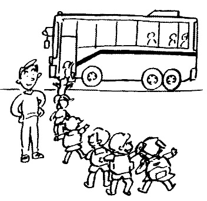
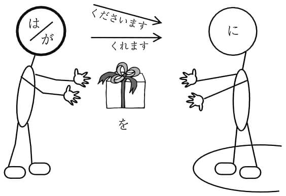

ホーム → 文法 → どんなとき main → どんなときどう使う
| ワ | ラ | ヤ | マ | ハ | ナ | タ | サ | カ | ア |
| ヲ | ミ | ヒ | ニ | チ | シ | キ | イ | ||
| ユ | ム | フ | ヌ | ツ | ス | ク | ウ | ||
| メ | ヘ | テ | ケ | セ | エ | ||||
| ン | ヨ | モ | ホ | ノ | ト | ソ | コ | オ |
throughout (the time…)
❶ わたしは夏の間、ずっと北海道にいました。
❷ 両親が旅行をしている間、ぼくが毎日食事を作りました。
❸ 兄がゲームをしている間、弟はそばで見ています。
❹ 夏休みにとなりのうちがにぎやかな間は、わたしも楽しい気分になる。
| 接続 | 〔普通形〕（ナＡな／Ｎの）＋間 |
|---|
｢間｣は時間幅のある状態を表す言葉につながり、「その時間ずっと」という意味を表す。後にも継続する動作や状態を表す言葉が来る。
参照︰あいだに
Appends to expressions of time, i.e., "throughout the entire time." Words expressing continuing action and conditions follow.
during; when
❶ 夏休みの間に引っ越ししたいです。
❷ わたしがいない間にだれか来たのでしょうか。門が少し開いています。
❸ 日本にいる間に一度富士山に登りたい。
❹ 暇な間に本だなをかたづけてしまおう。
| 接続 | 〔普通形〕（ナＡな／Ｎの）＋間に |
|---|
｢間に｣は時間幅のある状態を表す言葉につながり、「その時間幅が終わる前に」という意味を表す。後には瞬間性のことを言う表現が来る。
参照︰あいだ
Appends to expressions involving length of time meaning "before the time interval ends." Expressions of momentariness follow.
➡ とあいまって
いろいろ～した後で、とうとう最後に
after much…ended up…
❶ この前国際センターに行ったときは、さんざん道に迷ったあげく、もう一度駅前に戻って交番で道を聞かなければならなかった。
❷ 太郎はお金のことや友人の問題でさんざん親に心配をかけたあげく、とうとう家を出てしまった。
❸ この問題については、長時間にわたる議論のあげく、結論は先送りされた。
❹ 何日も話し合いをしたあげくの果ての結論として、今年はわたしたちの代表は送らないことにした。
| 接続 | Vた／する動詞のNの＋あげく |
|---|
１）「いろいろ～した後で、とうとう残念な結果になった」と言いたいときに使う。
２）１回だけのことや軽いことの結果には使わず、「いろいろ・さんざん・長い時間」など、強調する言葉とよくいっしょに使う。
◆ × あの日社長とけんかしたあげくに、会社をやめた。
３） ❹ の「あげくの果て」は慣用表現。
４）同様の表現に「すえ（に）」がある。
参照︰すえ（に）
１）To try many things, but end up with adverse result.
２）Often used with emphatics such as いろいろ, さんざん, or 長い時間rather than about something that happens only once or has insignificant result.
◆ × あの日 社 長 とけんかしたあげくに、 会 社 をやめた。
３）The phrase あげくの果て in sentence ❹ is an idiom.
４）すえ（に）is similar.
◆ × あの日 社 長 とけんかしたあげくに、 会 社 をやめた。
３）例句 ❹ 中的「あげくの果て
◆ × あの日 社 長 とけんかしたあげくに、 会 社 をやめた。
give
❶ 姉はあい子さんの誕生日にケーキをあげた。
❷ A：わあ、たくさんおみやげを買いましたね。
B：ええ、会社の人たちにあげるんです。
❸ この人形は部長の奥さまにさしあげようと思って買いました。
❹ 先生の受賞のお祝いに何かさしあげましょうよ。
❺ わたしの旅行中、花に水をやるのを忘れないでね。
❻ A：森さんはお正月に、お子さんにお年玉をあげますか。
B：いいえ、自分の子どもたちにはやりませんよ。
| 接続 | Ｎを＋あげる |
|---|
１）ものを与える人を主語にした授受の言い方。ものを与える人は「わたし」、または受ける人より心理的に「わたし」に近い関係の人である。
◆ × 林さんはわたしにプレゼントをあげました。／ × メリーさんはわたしの妹にプレゼントをあげました。
２）「さしあげる」は、 ❸ ❹ のように受ける人が目上の場合に使う。「やる」は、 ❺ のように動植物などの場合に使う。また、 ❻ のように、自分の家族に対してすることを、家族以外の人に話すときにも使う。
１）Expression of receipt in which subject is giver. Giver is speaker or someone psychologically close to speaker.
◆ × 林さんはわたしにプレゼントをあげました。／ × メリーさんはわたしの妹にプレゼントをあげました。
２）The verbさしあげる is used when recipient is socially superior, as in sentences ❸ and ❹ . The verb やる is used toward animals, as in sentence ❺ , and is also used toward one's own family when speaking to people outside of one's inner circle, as in sentence ❻ .
➡ にあたって
➡ にあって
～があるから成り立つ
comprised of; indispensable to
❶ 愛あっての結婚生活だ。愛がなければ、いっしょに暮らす意味がない。
❷ わたしたちはお客さまあっての仕事ですから、お客さまを何より大切にしています。
❸ 交渉は相手あってのことですから、自分の都合だけ主張してもうまくいかない。
| 接続 | N＋あっての |
|---|
「N1 ＋あっての＋ N2」の形で、「N1があるからN2が成立する」と強調するときの表現。
Emphatic expression meaning "N1 is realized because there is N2."
➡ あとで
after
❶ 食事の後で、少し散歩しませんか。
❷ この薬はご飯を食べる前に飲みますか、食べた後で飲みますか。
❸ このビデオ、あなたが見た後で、わたしにも貸してください。
❹ 祭りの後、ごみがいっぱいだった。
❺ 祖父はみんなとお茶を飲んだ後、ずっと部屋で本を読んでいます。
| 接続 | Vた／Nの＋後で |
|---|
１）「～後で…」の形で二つの行為、状態（「～」と「…」）のどちらが後であるかを表す。「…」の行為、状態が「～」の行為より時間的に後である。
２） ❹ ❺ のように、「…」が継続している行為や状態を表す文の場合は「後で」は使わず、「後」を使う。
◆ × 退院した後で、ずっと元気です。
１）One action or condition succeeds the other. Second action or condition comes after the first.
２）When action or condition is continuing, as in sentences ❹ and ❺ , 後is used rather than 後で.
～すぎるので、～すぎるために
so… that
❶ 今のオリンピックは勝ち負けを気にするあまり、スポーツマンシップという大切なものをなくしているのではないか。
❷ 試験の問題は易しかったのに、考えすぎたあまり、間違えてしまった。
❸ 合格の知らせを聞いて、彼女はうれしさのあまり泣き出した。
❹ 夫が突然の事故で亡くなった。彼女は悲しみのあまり心の病になってしまった。
❺ Ｋ市は開発を優先するあまり、市民の生活の安全を軽視しているのではないか。
| 接続 | Nの／Ｖ・Ａの〔普通形〕（肯定形だけ）（ナＡな）＋あまり |
|---|
「～あまり」の形で、「～の程度が極端なので、普通でない状態やよくない結果になる」と言いたいときの表現。 ❸ ❹ のように「～」には感情を表す言葉が来ることが多い。
Certain limits are extreme so result will be either abnormal or negative. Often expressions of emotion precede あまり, as in sentences ❸ and ❹ .
～すぎるので
so… that
❶ 今年の夏はあまりの暑さに食欲もなくなってしまった。
❷ 今のわたしの仕事はきつい。あまりの大変さに時々会社を辞めたくなる。
❸ 父はデジタルカメラの講習を受けに行ったが、あまりの難しさにびっくりしたようだ。
| 接続 | あまりの＋Ｎに |
|---|
１）「～の程度が極端なので」という意味。それが原因で普通ではない結果になる、と言うときの表現。
２）例文のように、「～」は「形容詞の語幹＋さ」が多い。
１）What follows pattern is extreme in degree, causing unusual result.
２）As in the examples, often イadjective stem + さ follows pattern.
➡ いかんで
～に対応して
in accordance with; is contingent on
❶ 商品の説明のし方いかんで、売れ行きに大きく差が出てきてしまう。
❷ このごろとても疲れやすいので、当日の体調いかんでその会に出席するかどうか決めたい。
❸ 国の援助のいかんによって、高齢者や身体障害者の暮らし方が変わると思う。
❹ 今度の事件をどう扱うかは校長の考え方いかんです。
| 接続 | Ｎ（の）＋いかんで | F | W |
|---|
１）主として程度や種類の違いを表す語に続き、「それに対応してあることが変わる、あることを決める」と言いたいときに使う。
２） ❸ の「いかんによって」も意味・用法は同じ。 ❹ のように文末では「いかんだ」という形になる。
３）「しだいで」と意味・用法が同じだが、硬い形式ばった言い方。
参照︰しだいで
１）Mainly appends to expressions of difference in level or type. Indicates that something will change or be decided depending on N.
２）In sentence ❸ , いかによって has same meaning and usage. At end of sentence becomes いかんだ, as in sentence ❹ .
３）Meaning and usage are similar to しだいで, but is more formal.
ある～の場合は
in case of
❶ 君の今学期の出席率いかんでは、進級できないかもしれないよ。
❷ 本の売れ行きいかんでは、すぐに増刷ということもあるでしょう。
❸ 出港は午後３時だが、天候のいかんによっては、出発が遅れることもある。
| 接続 | Ｎ（の）＋いかんでは | F | W |
|---|
１）主として程度や種類の違いを表す語に続き、「そのうちのある場合は…のこともある」と言いたいときに使う。「いかんで」の用法の一部。いろいろな可能性の中の一つを取り上げて述べる言い方。
２） ❸ の「いかんによっては」も意味・用法は同じ。
３）「しだいでは」と意味・用法が同じだが、硬い形式ばった言い方。
１）Mainly appends to words expressing degree or type to indicate some instances among a category. Is part of the いかんで usage, and states something is possible among a variety of things.
２）In sentence ❸ , いかんによっては has same meaning and usage.
３）Usage is similar to しだいでは, but is more formal.
～がどうであっても、それに関係なく
doesn't matter whether
❶ 調査の結果いかんにかかわらず、かならず連絡してください。
❷ 理由のいかんにかかわらず、いったん払い込まれた受講料は返金できないことになっています。
❸ この区では、場所のいかんにかかわらず路上喫煙は禁止です。
| 接続 | Ｎ（の）＋いかんにかかわらず | F | W |
|---|
１）「～いかんにかかわらず」の形で、「～がどうであっても、それに関係なく後のことが成立する」という意味を表す。
２）「いかんによらず」と意味･用法が大体同じ。
参照︰いかんによらず
１）No matter what is happening before pattern, result will occur regardless.
２）Usage and meaning are nearly the same as for いかんによらず.
➡ いかんで
➡ いかんでは
～がどうであっても、それに関係なく
doesn't depend on whether
❶ 事情のいかんによらず、欠席は欠席だ。
❷ 試験の結果いかんによらず、試験中に不正行為のあったこの学生の入学は絶対に認められない。
❸ 進行状況のいかんによらず、中間報告を提出してください。
| 接続 | Ｎ（の）＋いかんによらず | F | W |
|---|
１）「～いかんによらず」の形で、「～がどうであっても、それに関係なく後のことが成立する」という意味を表す。
２）「いかんにかかわらず」と意味・用法が大体同じ。
参照︰いかんにかかわらず
１）No matter what is happening before pattern, result will occur regardless.
２）Usage and meaning are nearly the same as for いかんにかかわらず.
➡ はいざしらず
～のだから
so long as
❶ 約束した以上、守るべきだと思う。
❷ この学校に入学した以上は、校則は守らなければならない。
❸ 学生である以上、勉強を第一にしなさい。
| 接続 | 〔普通形〕（ナAである／Nである）＋以上（は） |
|---|
「～以上、…」の形で、「～のだから、当然…」と話す人の判断・決意・勧めなどを言うときの表現。「…」には話す人の判断や意向を表した言い方、または相手へ働きかける言い方・勧め・禁止などがよく使われる。
Speaker's judgment, decisions, or recommendation ("since…then naturally…"). Phrases expressing the speaker's judgment and volition, or appeal to the listener, recommendations, or prohibitions often follow 以上 (は).
➡ もらう
➡ にいたって
➡ にいたっては
➡ のいたり
➡ にいたる
➡ にいたるまで
➡ がいちばん
それから、また
on the one hand
❶ いい親は厳しくしかる一方で、ほめることも忘れない。
❷ 一人暮らしは寂しさを感じることが多い一方、気楽なよさもある。
❸ この出版社は大衆向けの雑誌を発行する一方で、研究書も多く出版している。
❹ わたしの家では兄が父の会社を手伝う一方、姉がうちで母の店を手伝っている。
| 接続 | 〔普通形〕（ナＡな・ナＡである／Ｎである）＋一方（で） |
|---|
❶ ❷ のように、あることがらについて二つの面を対比して示したり、 ❸ ❹ のように、あることが行われるのと並行して別のことも行われると述べたりするときに使われる。
Contrasts two aspects, such as in sentences ❶ and ❷ . Also used to show two actions occurring in parallel, as in sentences ❸ and ❹ .
ますます～していく
will just continue
❶ これからは寒くなる一方です。風邪をひかないよう、お体を大切に。
❷ ノップさんの日本語の成績は上がる一方です。
❸ この駅ビルのデパートは人気が出て、毎年客が増える一方だ。
❹ この10年ほどの間に、日本の海岸の砂浜は狭くなっていく一方だそうだ。
| 接続 | Vる＋一方だ |
|---|
１）ものごとの状況の変化が一つの方向にだけ進んでいることを表す。
２）変化を表す動詞と接続する。
１）Change in condition will continue to proceed in one direction.
２）Connects to verbs expressing change.
➡ やいなや
➡ ていらい
～。それに
on top of that
❶ ゆうべは道に迷った上、雨にも降られて大変でした。
❷ この機械は使い方が簡単な上に、小型で使いやすい。
❸ 彼の話は長い上に、要点がはっきりしないから、聞いている人は疲れる。
| 接続 | 〔普通形〕（ナＡな・ナＡである／Ｎの・Nである）＋上（に） |
|---|
１）前の事柄と同じ方向の事柄（プラスとプラス、マイナスとマイナス）を「それに」という気持ちで加える。
２）後に、命令・禁止・依頼・勧誘など、相手への働きかけの文は来ない。
１）Adds feeling of "also" to phrases expressing occurrences with same directionality as in a previous situation (positives with positives, negatives with negatives).
２）Commands, prohibitions, requests, or solicitations do not follow うえ(に).
まず～してから
after having
❶ 詳しいことはお目にかかった上で、説明いたします。
❷ 申込書の書き方をよく読んだ上で、記入してください。
❸ どの大学を受験するか、両親との相談の上で、決めます。
❹ これは一晩考えた上での決心だから、気持ちが変わることはない。
| 接続 | Vた／する動詞のNの＋上で |
|---|
１）「～上で…」の形で、まず「～」をした後で、それに基づいて「…」という次の行動をとる、という意味。
２）「うえで」の前後の動詞は、意志動詞が来る。
１）After first doing one thing, another action based on the first will occur.
２）Verbs of volition precede or follow うえで.
～のに
for, in order to
❶ 今度の企画を成功させる上で、ぜひみんなの協力が必要なのだ。
❷ 数学を学習する上で大切なことは、基礎的な事項をしっかり身につけることだ。
❸ 有意義な留学生活を送る上での注意点は下記のとおりです。
❹ テレビは外国語の勉強の上でかなり役に立ちます。
❺ 食料品の保存の上で、次のことに注意してください。
| 接続 | Vる／する動詞のNの＋上で |
|---|
「～上で」の形で、「～」に積極的な目的を示し、後にその目的や目標に必要なこと、大切なことなどを述べる文が来る。行為を表す文は来ない。
◆ × 日本での生活の上でいろいろなものを買った。
After indicating a goal to actively work toward, second phrase explains what is necessary or important to achieve that goal or objective. Does not take verbs of action.
➡ のうえで
～のだから
since things have reached such a pass
❶ 社長が決断した上は、われわれ社員はやるしかない。
❷ 実行する上は、十分な準備が必要だ。
❸ やろうと決心した上は、たとえ結果が悪くても全力をつくすだけだ。
❹ 親元を離れる上は、十分な覚悟をするべきだ。
| 接続 | Vる・Vた＋上は |
|---|
１）「～上は、…」の形で「～のだから、当然…」という意味。話者の決意、覚悟などを言うときの表現。
２）「…」には、責任や覚悟を伴う行為の言葉を使う。「べきだ・つもりだ・はずだ・にちがいない・てはいけない」などの言い方がよく使われる。
３）「いじょう（は）・からには」と近い表現。
参照︰いじょう（は）・からには">・からには">
１）Meaning "since…then of course…," expresses speaker's resolution or resignation． Phrases following indicate corresponding actions of responsibility or resignation.
２）Often used with べきだ, つもりだ, はずだ, ちがいない, てはいけない, etc．
３）Similar to いじょう（は）, からには.
～している間に
before you know it
❶ 今は上手に話せなくても練習を重ねるうちに上手になります。
❷ 友達に誘われて何回か山登りをしているうちに、わたしもすっかり山が好きになった。
❸ 親しい仲間が集まると、いつも楽しいおしゃべりのうちに時間が過ぎてしまう。
❹ ふと外を見ると、気がつかないうちに雨が降り出していた。
| 接続 | Ｖる・Ｖている・Ｖない／Ｎの＋うちに |
|---|
継続性を表す語につながり、その継続状態の間に、はじめは予想しなかったような変化が表れることを表す。後の文は事態の変化を表す文。
Links to phrases of continuation; expresses notion that during period of continuation, some unforeseen change occurred. Clause following indicates change in condition.
ある状況になる前に
while
❶ 独身のうちに、いろいろなことをやってみたいです。
❷ 若いうちに勉強しなかったら、いったいいつ勉強するんですか。
❸ 体が丈夫なうちに、１度富士山に登ってみたい。
❹ タンさんが東京にいるうちに、ぜひ３人で食事をしませんか。
❺ （料理の本から）スープに生クリームを加えたら、沸騰しないうちに火から降ろす。
❻ 暗くならないうちに家に帰らなければなりません。
| 接続 | Vる・Vない／イAい／ナAな／Nの＋うちに |
|---|
「うちに」の前に述べることと反対の状態になったら実現が難しいから、そうなる前に、と言いたいときに使う。
Unless someone does something before what comes ahead of うちに, the subsequent opposite state will make realization of the action difficult.
できる／～の可能性がある
can
❶ これは仕事を成功させるために考え得る最上の方法です。
❷ この事故はまったく予測し得ぬことであった。
❸ これは彼でなくてはなし得ない大事業である。
❹ この事故はいつでも起こり得ることとして十分注意が必要だ。
❺ 彼が事件の現場にいたなんて、そんなことはあり得ない。
| 接続 | Vます＋得る | F |
|---|
１）辞書形は「うる」「える」の二つの読み方があり、ます形、ない形、た形は「えます」「えない」「えた」と読む。
２）「Vうる」は、「そうすることができる」「そうなる可能性がある」の意味で、「Vえない」は、「そうすることができない」「そうなる可能性がない」の意味である。
３）「能力的にできる、できない」の意味では使わない。
１）Two readings of the dictionary form:うるand える. When with the ます, -ない, or -たforms, read as えます, えない, and えた respectively.
２）Vうる means "that can be done, that is possible." Vえない means something cannot be done or is impossible.
３）Not used to indicate something is impossible because of lack of ability.
polite nominal and adjectival prefixes
❶ 先生、ご家族の皆さんはお元気ですか。
❷ 田中さん、お宅の皆さんはいつもお忙しそうですね。
❸ この部屋にあるものはどうぞご自由にお使いください。
| 接続 | お＋イＡい／ナＡ／Ｎ ご＋ナＡ／Ｎ |
|---|
１）相手を対象として行うことやもの（お手紙・お招き）、相手に関係のあるものなどに「お」や「ご」をつけて尊敬や丁寧な気持ちを表す。
２）和語には「お」がつくことが多く、漢語には「ご」がつくことが多い。
１）Prefixes お and ご append to things or actions (letters, invitations) concerning another person to indicate an honorific or polite attitude towards that person.
２）Prefix お most often appends to words of Japanese origin, while ご attaches to words deriving from China．
➡ お～する
➡ において
➡ をおいて
➡ におうじて
➡ におうじて
➡ おかげで
～の助けがあったので
thanks to
❶ 母は最近新しく発売された新薬のおかげで、ずいぶん元気になりました。
❷ あなたが手伝ってくれたおかげで、仕事が早くすみました。ありがとう。
❸ 夜の道路工事が終わったおかげか、昨夜はいつもよりよく寝られた。
❹ 今日、私が指揮者として成功できたのは斉藤先生の厳しいご指導のおかげです。
❺ A：就職が決まったそうですね。おめでとう。
B：おかげさまで。ありがとうございます。
| 接続 | 〔普通形〕（ナAな・ナAである／Nの・Nである）＋おかげで |
|---|
「～おかげで…」の形で「～の助けがあったので、…というよい結果になった」と感謝の気持ちで言うときに使う。 ❸ の「おかげか」は、それだけが原因かどうか確信は持てないが、という感じがある。 ❺ の「おかげさまで」はあいさつの言葉としてよく使われる。
Gratitude when a positive result occurs owing to someone's help. In sentence ❸ , it is difficult to discern whether the reason stated is the only possible cause of the positive result. おかげさまで in sentence ❺ is a common greeting.
please…
❶ （駅で）危ないですから、黄色い線の内側にお下がりください。
❷ （空港のカウンターで）パスポートと航空券をお見せください。
❸ （病院などで）予約のある方は、10分前においでください。
❹ （デパートで）7階レストランへは、エレベーターをご利用ください。
| 接続 | お＋Vます／ご＋する動詞のN＋ください |
|---|
１）公の場所でよく使われる勧めや指示の簡潔な言い方。自分のための依頼には使わない。
◆ × 先生、わたしの作文をお直しください。
→○先生、わたしの作文を直してくださいませんか。
２） ❸ の「おいでください」は特別な形で、「来てください」の意味。
３）「する・来る」や1字の動詞Ⅱ「見る・着る・寝る・出る」などはこの形で使えない。
◆ × この写真をお見ください。
→○この写真をご覧ください。
１）Concise phrase of suggestion or directions often used in public places. Not used for speaker’s own requests．
➡ において
the speaker humbly (does verb)
❶ 学生：先生、おかばんをお持ちします。
❷ 学生：先生、プーケットにいらっしゃってください。わたしがご案内いたします。
❸ わたしは結婚式の写真を先生にお見せしました。
❹ 店員：では、修理ができましたら、お知らせいたします。
| 接続 | お ＋Ｖます＋する |
|---|
１）相手に対する尊敬の気持ちを表すために話す人が自分の行為をへりくだって話す（謙譲を表す）場合に使う形。
２）相手のためにする行為に使う。尊敬する相手のない動作には使わない。
◆ × わたしは夜一人でCDをおかけして、お聞きします。
→○わたしは夜一人でCDをかけて、聞きます。
３） ❷ のように「案内」などの漢語の場合は「ご～します・ご～いたします」となる。
１）To elevate the other party, speaker uses humble language for his own actions.
２）Describes actions done for other party． Not used for actions without recipient that can be elevated.
～という心配がある
there is fear that
❶ この地震による津波のおそれはありません。
❷ この薬は副作用のおそれがあるので、医者の指示に従って飲んでください。
❸ 小中学校の週休二日制は子どもたちの塾通いを増加させるおそれがあると言われている。
❹ 歯および歯周辺の不具合は、体全体の健康に影響を与えるおそれがあります。
| 接続 | Ｖの現在形／Ｎの＋おそれがある |
|---|
１）「～という悪いことが起こる可能性がある」と言いたいときに使う。
２）ニュースや通知などでよく使われる硬い表現。
１）Something bad is likely to happen.
２）Formal expression often used in news and reports.
the honorable listener does (verb)
❶ （改札口で）特急券をお持ちですか。
❷ 会長、先ほどから、田中様がお待ちです。
❸ 社長、何をお探しですか。
| 接続 | おＶます＋だ |
|---|
「Ｖています」の尊敬の形である。「Ｖていらっしゃいます」の簡潔な言い方。 ❶ 「お持ちです」は「持っていらっしゃいます」の意味。
Honorific form of Vています. Concise form of Vていらっしゃいます. The お持ちです in sentence ❶ means 持っていらっしゃいます.
someone does (verb) honorifically
❶ 会長は10月8日にバンコクからお帰りになります。
❷ 社員：社長、奥さまにお電話をおかけになりましたか。
❸ 学生：この新聞はもうお読みになりましたか。
| 接続 | お＋Ｖます＋になる |
|---|
１）相手や第三者に尊敬の気持ちを表すときに使う形。
２）尊敬できない行為を表す動詞（ぬすむ・なぐる、など）やくだけた言葉（がんばる・しゃべる、など）はこの形で使わない。
１）Shows respect toward others and third parties.
２）Cannot be used for actions for which honorifics are inappropriate, such as ぬすむ or なぐる, and for informal words such as がんばる or しゃべる, etc.
～機会に
whenever there is an occasion
❶ このことは今度お目にかかった折に詳しくお話しいたします。
❷ 先月北海道に行った折、偶然昔の友達に会った。
❸ 何かの折にわたしのことを思い出したら手紙をくださいね。
❹ （手紙）寒さ厳しい折から、くれぐれもお体を大切にしてください。
| 接続 | Vる・Vた／Nの＋折（に） |
|---|
「あるいい機会に」という意味であるから、後の文にはマイナスの事柄は来にくい。 ❹ のように手紙文の定型文句としての例もある。
Favorable occasion; negative phrasing usually does not follow. Also used as set phrase in letters, such as in sentence ❹ .
➡ はおろか
finished
❶ みんなご飯を食べ終わりました。テーブルの上をかたづけましょう。
❷ 作文を書き終わった人は、この箱に入れてください。
❸ このへやのまどガラスはぜんぶふき終わりました。次はとなりのへやです。
❹ 子どもたちがみんなバスに乗り終わったら、出発しましょう。
| 接続 | Ｖます＋終わる |
|---|
１）始まりと終わりがある継続する動作・作用が終わるという意味を表す。
２）普通は瞬間動詞にはつかないが、 ❹ のように、おおぜいの人の動作や多くのものの作用の場合は、瞬間動詞にもつく。
１）Completion of continuous action or operation that has beginning and end.
２）Does not usually append to verbs of momentariness, but in cases of actions or operations of many things, such as in sentence ❹ , links to such verbs.
but
❶ 10月になりましたが、毎日暑い日が続いています。
❷ この部屋は新しくてきれいですが、狭いです。
❸ 読み方を辞書で調べたが、わからなかった。
| 接続 | 〔丁寧形〕・〔普通形〕＋が |
|---|
逆の意味や対立する意味の文をつなぐ。
Links phrases of opposite meaning or contrasts.
excuse me; I'm sorry, but
❶ 先生、この言葉の意味がわからないんですが、教えてくださいませんか。
❷ （電話で）もしもし、田中ですが、鈴木さん、いらっしゃいますか。
❸ ちょっとお聞きしたいんですが……。駅へはどう行くんでしょうか。
❹ A：一人でお酒を飲むのはつまらないですよね。
B：さあ、わたしはそうは思いませんが……。
| 接続 | 〔丁寧形〕・〔普通形〕＋が |
|---|
１）二つの文をつなぐだけの「が」の使い方である。 ❶ ～ ❸ のように「話の前置き」としてよく使われる。
２） ❹ の使い方は言い方を和らげて余韻を残す言い方である。
１）Here が simply connects two clauses. Often used to preface discourse, as in sentences ❶ , ❷ , and ❸ .
２）In sentence ❹ , gives subdued, softened impression.
➡ かいがあって
効果があって
effort of…paid off
❶ 毎日水をやったかいがあって、10月になって庭の花がきれいに咲いた。
❷ しっかり準備をし、心を込めて説明したかいがあって、わたしたちの案が取り上げられた。
❸ 厳しいトレーニングのかいがあって、チーム誕生以来、初めての入賞を果たした。
❹ きらいな注射をされたが、そのかいもなく、しばらく熱が下がらなかった。
❺ 時間とお金を使って遠くまで来たかいもなく、名物の桜はほとんど散ってしまっていた。
❻ この子は教えたことはすぐ覚えるので、教えがいがある。
❼年を取っても生きがいのある人生を求めるこの著者の姿勢に心を打たれた。
| 接続 | Ｖる・Ｖた／する動詞のＮの＋かいがあって Ｖます＋がい |
|---|
１）「ある目的をもって行った意志的な行為のよい効果や成果があって」という意味。
２） ❹ ❺ のように、望ましい成果がなかった場合は、「かいもなく」という形で使う。
３） ❻ ❼では、「がい」の前の意志動詞の行為をする中で得られる望ましい成果を言い、全体を名詞として使う。この使い方では常に「がい」と読む。
１）Positive result arising from willful action with certain objective.
２）If undesirable result occurs, as in sentences ❹ and ❺ , takes negative form, かいもなく.
３）In sentences ❻ and ❼ がい is part of a noun phrase since entire clause refers to positive outcome of volitional verb. In this usage, always read がい.
best
❶ Ａ：リーさんはくだものの中で、何がいちばん好きですか。
❷ この課の中でだれがいちばん早く会社に来ますか。
❸ ケーキがいろいろありますが、この中でどれがいちばんおいしいでしょうか。
❹ 電話とファクスとメールと、どれをいちばんよく使いますか。
❺ Ａ：１年中でいちばんいそがしいのはいつですか。
❻ 世界でいちばん有名な人はだれでしょうか。
| 接続 | Ｎが＋いちばん |
|---|
１）ある範囲の中で最高のものを言うときの表現。 ❸ ❹ のように比較するものが三つ四つの具体的なものの場合は、「どれ、どの」を使って質問する。
２）いろいろある中でいちばんのものを言うときは、 ❶ のように「～の中で」を使う。一つ一つ分けられない全体の中でいちばんのものを言うときは、 ❻ のように「～で」の形になる。
１）Something is considered best within certain context. When three or four concrete items are compared, as in sentences ❸ and ❹ , interrogative どれ, どの is used in question.
２）When expressing something best among variety of items, ～の中で is used, as in sentence ❶ . When expressing something best among indivisible items, でis used, as in sentence ❻ .
➡ かいがあって
➡ にかかわらず
➡ にかかわりなく
➡ にかかわる
➡ にかぎって
➡ にかぎらず
～の状態が続く間は
(range of conditions) so long as
❶
❷
❸
❹
| 接続 | 〔普通形〕（現在形だけ）（ナＡな・ナＡである／Ｎである）＋かぎり（は） |
|---|
「～かぎり…」の形で、「～」の状態が続いている間は「…」の状態が続く、と言いたいときに使う。「かぎり」の前後には時間的に幅のある表現が来る。
Expressions of temporal breadth are used before and after かぎり when indicating that the state continuing before かぎり also continues after it.
～の限界ぎりぎりまで
as much as possible
❶ 何かわたしがお手伝いできることがあったら言ってください。できるかぎりのことはいたしますから。
❷ 昔この辺りは見渡すかぎり田んぼだった。
❸ さあ、いよいよあしたは入学試験だ。力のかぎりがんばってみよう。
❹ わたしたちのチームが負けそうになったので、みんなあらんかぎりの声を出して応援した。
| 接続 | Ｖる／Ｎの＋かぎり |
|---|
「限界まで～する」と言いたいときの表現。慣用表現として ❹ のような例もある。
Do something to the limit. Sometimes used as idiom, as in sentence ❹ .
➡ ないかぎり
➡ にかぎり
最高に～だと感じる
absolutely; extremely
❶ 明日彼が３年ぶりにアフリカから帰ってくる。うれしいかぎりだ。
❷ このごろの若い人ははっきりと自己主張する。うらやましいかぎりである。
❸ 大事な仕事なのに彼が手伝ってくれないなんて、心細いかぎりだ。
| 接続 | イAい／ナAな＋かぎりだ |
|---|
１）｢現在、自分が非常にそう感じている」という心の状態を表す。
２）話者の気持ちを表す言葉であるから、３人称の文にはほとんど使わない。
１）Speaker now feels something very strongly.
２）Being an expression of speaker's feelings, is rarely used in the third person.
～の範囲のことに限れば
as far as can be deduced from…
❶ この売り上げ状況のグラフを見るかぎりでは、わが社の製品の売れ行きは順調だ。
❷ ちょっと話したかぎりでは、彼はいつもとまったく変わらないように思えた。
❸ 今回の調査のかぎりでは、この問題に関する外国の資料はあまりないようだ。
| 接続 | Ｖる・Ｖた／Ｎの＋かぎりでは |
|---|
ある判断をするための情報の範囲を限定する。情報を得る行為（見る・聞く・調べる、など）の言葉に接続する。
Delimits range of information needed to make certain judgment. Connects to words that indicate actions attaining information, such as 見る, 聞く, or 調べる.
➡ をかぎりに
➡ にかぎる
➡ かける
➡ にかけては
途中まで～して、～し終わらない
partially; in the process of
❶ 風邪は治りかけたが、またひどくなってしまった。
❷ 母は夕食を作りかけて、長電話をしている。
❸ 一郎の宿題はまたやりかけだ。
❹ こんなところに食べかけのりんごを置いて、あの子はどこへ行ったのだろう。
| 接続 | Ｖます＋かける |
|---|
１）ある動作、出来事が始まったが、まだ途中の段階であるというときの表現。
２）「かけの」のように名詞として扱うこともある。
１）Some action or event has begun and is unfinished.
２）Sometimes handled as noun, as in かけの.
➡ たらさいご
feel; hear; smell; taste
❶ どこかでねこの鳴き声がします。
❷ いいにおいがしますね。きょうのご飯は何ですか。
❸ となりの部屋で変な音がします。どうしたのでしょう。
❹ このお菓子、紅茶の味がしますね。
❺ 星を見ていると、なんだか夢のような感じがします。
| 接続 | Ｎが＋する |
|---|
音・声・味・におい・香り・感じなどの感覚を表したいときの言い方。
Senses of sound, voice, taste, smell, or feeling.
～するのは難しい
difficult to
❶ あの元気なひろしが病気になるなんて信じがたいことです。
❷ 弱い者をいじめるとは許しがたい行為だ。
❸ 幼い子どもと離れて暮らすことは彼には耐えがたかったのだろう。
| 接続 | Vます＋がたい |
|---|
１）「そうすることは難しい、不可能だ」という意味。
２）「信じる・許す・理解する・想像する・受け入れる」などの動詞とともによく使われる。やや古い言い方。慣用的に使われる例が多い。
３）「能力的にできない」という意味では使わない。
◆ × わたしにはコンピューターは難しくて、使いがたいです。／
× けががまだ治っていないので、長い時間は歩きがたい。
１）Slightly old-fashioned expression meaning that doing something would be difficult or impossible.
２）Often used with verbs 信じる (believe), 許す (forgive), 理解する (understand), 想像する (imagine),and 受け入れる (accept). Often used as idiom．
３）Not used to mean something can't be done because of lack of ability．
～も同時にするつもりで
by way of; while happening to…; also
❶ 最近ごぶさたをしているので、卒業のあいさつかたがた保証人のうちを訪ねた。
❷ ごぶさたのおわびかたがた、近況報告に先生をお訪ねした。
❸ 彼がけがをしたということを聞いたので、お見舞いかたがた、彼のうちを訪ねた。
| 接続 | Ｎ・する動詞のN＋かたがた |
|---|
１）「～かたがた、…」の形で、「一つの行為に、二つの目的を持たせて行う」という表現。改まった場面やビジネス上の人間関係の場面でよく使われる。
２）「…」には、「訪問する・上京する」など移動に関係のある動詞がよく使われる。
３）「お祝いかたがた・お礼かたがた・ご報告かたがた」などが慣用的によく使われる。
１）One action serves to achieve two goals． Often used on formal occasions or in interpersonal relations in business settings．
２）Verbs of motion, such as 訪問する, 上京する often follow．
３）Often used in idioms such as お祝いかたがた, お礼かたがた, ご報告かたがた, etc.
➡ にかたくない
特別の～だから
on account of
❶ 母は今年93歳になった。今は元気だが、歳が歳だけに、病気をすると心配だ。
❷ ほしい時計があるのだが24万円だそうだ。値段が値段だけに買おうかどうしようかと迷っている。
❸ 彼女は死にたいと言っている。事が事だけに、黙って聞いていることはできない。
| 接続 | NがN＋だけに |
|---|
「NがNだけに、…」の形で、同じ名詞を繰り返して、Nが特別だから「…」で述べることに十分の理由がある、と言いたいときの表現。
By repeating the noun, expresses notion that because the noun is special, there is ample reason for whatever follows the だけに.
～一方で、別に
as a sideline; besides
❶ 市川氏は役所で働くかたわら、ボランティアとして外国人に日本語を教えている。
❷ 田中さんは銀行に勤めるかたわら、作曲家としても活躍している。
❸ あの人は大学院での研究のかたわら、小説を書いているそうです。
| 接続 | Vる／Nの＋かたわら |
|---|
１）「～かたわら、…」の形で、「～をする一方で、並行して…もしている」という表現。
２）「かたわら」は「ながら」に比べ、長期間続いていることに使う。職業や立場などを両立させている場合によく使われる。
３）「～」がその人が本来していることである。
１）Continue to do one thing while doing another in tandem.
２）Compared to -ながら, used for action continued over a long interval. Often used when balancing work and separate role.
３） Phrase preceding -かたわら indicates person's main activity.
よく～になる／～の状態になることが多い
liable to; prone to
❶ 森さんは小学校４年生のとき体を悪くして、学校もとかく休みがちだった。
❷ 田中さんは留守がちだから、電話してもいないことが多い。
❸ 今週は曇りがちの天気が続いたが、今日は久しぶりによく晴れた。
❹ 環境破壊の問題は自分の身に迫ってこないと、無関心になりがちである。
| 接続 | Ｖます／Ｎ＋がち |
|---|
１）「～がち」の形で「～の状態になりやすい傾向がある・～の割合、～の回数が多い」と言いたいときの言い方。主によくない傾向に使う。
２）「とかく～がち」の形でよく使う。ほかに、忘れがち・怠けがち・遠慮がち・病気がち・遅れがち、などの例がある。
１）Tendency toward some state, high proportion, or frequency. Usually used for adverse tendencies.
２）Often used in pattern とかく～がち. Other examples include 忘れがち (forgetful),怠けがち (slothful), 病気がち (sickly), and 遅れがち (tend to be late).
～を兼ねて
take the opportunity to; on the same occasion
❶ 月１回のフリーマーケットをのぞきがてら、公園を散歩してきた。
❷ 散歩がてら、ちょっと郵便局まで行ってきます。
❸ 買い物がてら新宿へ行って、展覧会ものぞいて来よう。
❹ 駅まで30分ほどかかるが、天気のいい日は運動がてら歩くことにしている。
| 接続 | Vます／する動詞のN＋がてら |
|---|
１）「～がてら、…」の形で、「一つの行為をするときに二つの目的を持たせてする」という意味。また「一つのことをすると、結果として二つのことができる」などの意味にも使う。
２）「…」には、「歩く・行く」など移動に関係のある動詞がよく使われる。
１）Accomplishing two objectives via one action. Can also mean to produce two results by doing a single action.
２）Verbs of movement, such as 歩く or 行く, often follow.
～すると、すぐに
no sooner than
❶ 空でなにかピカッと光ったかと思うと、ドーンと大きな音がして地面が揺れた。
❷ あの子はやっと勉強を始めたと思ったら、もういねむりをしている。
❸ うちの子どもは学校から帰ってきたかと思うと、いつもすぐ遊びに行ってしまう。
| 接続 | Vた＋（か）と思うと |
|---|
１）「～（か）と思うと…」の形で、「～」が起こったすぐ直後に「…」が起こる、と言いたいときに使う。
２）「（か）と思うと」は現実のできごとを描写するのであるから、意志的な行為を表す文や「よう・つもり」などの意志の文・命令文・否定文などが後に来ることはない。また、自分のことには使えない。
◆ × 学校から帰ってきたかと思うと、すぐ勉強しよう。
３） ❷ の「と思ったら」も意味・用法は同じ。
４）同様の意味･用法を持つ表現には次のものがある。
参照︰か～ないかのうちに・がはやいか・たとたん（に）・なり・やいなや
１）One event directly follows another．
２）Phrase ～(か)と思うと describes actual event. Clauses expressing volitional action or words of volition, such as よう or つもり, commands, or negatives cannot follow. Cannot be used for the speaker.
◆ × 学校から帰ってきたかと思うと、すぐ勉強しよう。
３）In sentence ❷ , と思ったら has the same meaning and usage．
４） Patterns with similar meanings or usage are:
参照︰か～ないかのうちに・がはやいか・たとたん（に）・なり・やいなや
まるで～かのように
so…that
❶ 雪解けの水は指が切れるかと思うほど冷たい。
❷ 山の上で見る星は今にも降ってくるかと思うほど近くに感じられる。
❸ 雷が落ちたかと思うほど大きい音がした。
❹ うれしくてうれしくて、夢かと思うほどでした。
| 接続 | 〔普通形〕（ナＡ／Ｎ）＋かと思うほど |
|---|
「実際にそうなったのではないが、そのような極端な状態かと感じられるほど程度が大きい」と比喩で言うときの表現。
Metaphor meaning that something looms large as an extreme situation though in actuality it is not.
➡ （か）とおもうと
～すると、同時に
just barely…when
❶ 子どもは「おやすみなさい」と言ったか言わないかのうちに、もう眠ってしまった。
❷ 彼はいつも終了のベルが鳴ったか鳴らないかのうちに、教室を飛び出していく。
❸ このごろ、うちの会社では一つの問題が解決するかしないかのうちに、次々と新しい問題が起こってくる。
| 接続 | Vるか・Vたか＋Vないか＋のうちに |
|---|
１）「～か～ないかのうちに…」の形で、「～」が起こったすぐ直後に「…」が起こる、と言いたいときに使う。
２）「か～ないかのうちに」は現実のできごとを描写するのであるから、意志的な行為を表す文や「よう・つもり」などの意志の文、命令文、否定文などが後に来ることはない。
◆ × 空港に着くか着かないかのうちに会社に電話をかけるつもりです。
３）同様の意味･用法を持つ表現には次のものがある。
参照︰（か）とおもうと・がはやいか・たとたん（に）・なり・やいなや
１）One event happens shortly after another.
２）Phrase ～か～ないかのうちに describes actual event. Phrases expressing volitional action or words of volition, such as よう or つもり, commands, or negatives cannot follow.
◆ × 空港に着くか着かないかのうちに会社に電話をかけるつもりです。
３）Patterns with similar meanings or usage are:
参照︰（か）とおもうと・がはやいか・たとたん（に）・なり・やいなや
～かもしれない
could
❶ そんな乱暴な運転をしたら事故を起こしかねないよ。
❷ 食事と睡眠だけはきちんと取らないと、体を壊すことになりかねません。
❸ 最近のマスコミの過剰な報道は、無関係な人を傷つけることにもなりかねない。
| 接続 | Vます＋かねない |
|---|
話者が結果や成り行きを危惧して、「～という悪い結果になる可能性がある」と言いたいときに使う。
Speaker apprehends result or course of events as having potential of being adverse.
～できない
cannot deal with
❶ 親の希望を考えると、結婚のことを両親に言い出しかねています。
❷ わたしの経済的に困った状況を見かねたらしく山田さんが助けてくれた。
❸ 彼は留学生活の寂しさに耐えかねて、１年もたたないうちに帰国してしまった。
❹ 客：ホンコン行きの飛行機は何時に出ますか。
❺ ただ今のご説明では、私どもとしては納得しかねます。
| 接続 | Vます＋かねる |
|---|
１）「気持ちの上で抵抗があってそうすることはできない、難しい」という意味を表す。
２） ❹ は、サービス業などで客の希望に応じられないことを婉曲に言う例である。 ❺ は、ビジネスなどの改まった場面で使われる例である。
１）Something is difficult or impossible to do because of emotional resistance.
２）Sentence ❹ is used in service industry as soft way to say the company cannot meet customer's demands. Sentence ❺ is used in formal business situations.
➡ かのように
～ように
(seems) as if
❶ 山田さんの部屋は何か月もそうじしていないかのように汚い。
❷ リンさんはその写真をまるで宝ものか何かのように大切にしている。
❸ ４月になって雪が降るなんて、まるで冬が戻ってきたかのようです。
❹ 田中さんにその話をすると、彼は知らなかったかのような顔をしたが、本当は知っているはずだ。
| 接続 | 〔普通形〕（ナＡである／Ｎ・Ｎである）＋かのように |
|---|
１）実際にはそうではないが、「まるで～ように」と何かにたとえて、言うときの表現。
２） ❷ の「～か何か」は「～か、またはそれに類するようなもの」という意味で慣用的に使われる。
１）Expression used as a simile; means something is just like something else even though in actuality the two are different．
２）In sentence ❷ , か何か is idiomatic expression meaning whatever precedes pattern or something belonging to similar category.
～すると、同時に
no sooner than
❶ 小田先生はチャイムが鳴るが早いか、教室に入ってきます。
❷ ひろ子は自転車に乗るが早いか、どんどん行ってしまった。
❸ その警察官は遠くに犯人らしい姿を見つけるが早いか追いかけて行った。
| 接続 | Vる＋が早いか |
|---|
１）「～が早いか…」の形で、「～」が起こると直後に「…」の動作をする、と言いたいときに使う。
２）「がはやいか」は現実のできごとを描写するのであるから、意志的な行為を表す文や「よう・つもり」などの意志の文、命令文、否定文などが後に来ることはない。
◆ × チャイムが鳴るが早いか授業をやめてください。
３）同様の意味･用法を持つ表現には次のものがある。
参照︰（か）とおもうと・か～ないかのうちに・たとたん（に）・なり・やいなや
１）Some action occurs shortly after another.
２）Phrase ～が早いか describes actual event. Clauses expressing volitional action or words of volition, such as よう or つもり, commands, or negatives cannot follow.
◆ × チャイムが鳴るが早いか授業をやめてください。
３）Patterns with similar meanings or usage are:
参照︰（か）とおもうと・か～ないかのうちに・たとたん（に）・なり・やいなや
(I) want
❶ わたしは新しいノートパソコンがほしいです。
❷ 若いときは洋服やくつがたくさんほしかったですが、今はあまりほしくないです。
❸ A：今、いちばんほしいものは何ですか。
B：そうですね。寝る時間がほしいです。
❹ タンさんは日本人の友だちがほしいと言っています。
❺ A：きれいなかばんですね。
| 接続 | Nが＋ほしい |
|---|
１）１人称（わたし）の欲求や希望を表す。相手の欲求や希望を聞く場合にも使うが、目上の人に直接使わないほうがいい。
◆ （レストランで）△先生、何がほしいですか。
→○先生、何を召し上がりますか。
２）イ形容詞と同じように活用する。
３）３人称が主語の文の文末にはそのまま使えない。 ❹ のように「と言っている」や「がっている」をつける必要がある。
◆ × タンさんは日本人の友だちがほしいです。
１）Desires and wishes in the first person. Used to ask desires and wishes of others, but is best to avoid using directly toward social superiors.
◆ （レストランで）△先生、何がほしいですか。
→○先生、何を召し上がりますか。
２）Conjugates like イadjectives.
３）Cannot be used at the end of sentences in which a third person is the subject. Must be constructed as in sentence ❹ , with と言っている or がっている.
➡ もかまわず
perhaps; it may be that
❶ 雪の日は、この道は危ないですよ。すべるかもしれませんよ。
❷ 今日は母が病気なので、先に失礼するかもしれません。
❸ ヤン：わたしの答えは正しいですか。
❹ （スポーツ番組で）あ、森田選手、速い、速い、金メダルが取れるかもしれません。
❺ 外国で病気になるかもしれないから、旅行の保険に入った方がいいですよ。
| 接続 | 〔普通形〕（ナＡ／Ｎ）＋かもしれない |
|---|
その可能性があるという意味に使う。その可能性は、 ❸ のように半々の場合も、 ❹ のようにかなり高い場合も、 ❺ のように万が一という場合もある。可能性を期待したり、恐れたりするときなどにも使われる。
Possibility, whether fifty-fifty, as in sentence ❸ ; very high, as in sentence ❹ ; or quite low, as in sentence ❺ . Used when either looking forward to or dreading an event．
so; since
❶ スープが熱いから、気をつけて持っていきなさい。
❷ 納豆はきらいですから、食べたくないんです。
❸ ちょっと空気が悪いから、窓を開けてもいいですか。
❹ 一郎：どうして冬が好きなの。
❺ この箱、捨てないでね。後で使うから。
| 接続 | 〔普通形〕・〔丁寧形〕＋から |
|---|
１）原因、理由を言いたいときに使う。文末には、話す人の意志を表す文（「たい」など）や、働きかけの文（なさい・てください、など）が来ることが多い。
２）依頼や断りを言うときには強く聞こえるので「から」は使わない方がいい。
◆ △辞書を忘れたから、ちょっと見せてくださいませんか。
→○辞書を忘れたんですが、ちょっと見せてくださいませんか。
１）Cause or reason. Often clauses expressing speaker's volition （たい, etc.） or exhortation（なさい, てください, etc.） come at end of sentence．
２）Best not to use から in requests or refusals because sounds too strong.
～が原因で
from; on account of
❶ たばこの消し忘れから火事になった。
❷ 一瞬の不注意から事故が起こる。運転中に携帯電話を使ってはいけない。
❸ 友人の無責任な言葉から、彼女は会社にいられなくなり、辞めてしまった。
| 接続 | N＋から |
|---|
「～から、…」の形で、「～が原因で、…の結果となった」と言うときに用いる。
Shows something is a cause of a result.
～か、それ以上もある～
extends from
❶ ホテルのエレベーターが故障していたので、20キロからある荷物を背負って７階まで階段を上った。
❷ 田中さんは80歳になるのに５キロからある道を毎日歩いて通ってくる。
❸ 作業員は100枚からの窓ガラスを手際よく次々と磨いていく。
❹ ３億円からするマンションがたくさん売れているそうだ。
❺ この画家の作品は小さいものでも10万円からする。
| 接続 | 数量＋からある 値段＋からする |
|---|
１）数量を表す言葉につけて、多いことを強調する言い方。
２） ❸ の「からの」もほとんど同じような意味に使う。
３）値段の場合は ❹ ❺ のように「からする」を使う。
１）Emphasizes large amounts. Added to words expressing quantity.
２）Used nearly the same way as からの, as in sentence ❸ .
３）Becomes からする when used with prices, as in sentences ❹ and ❺ .
～の方面から判断すると
judging from…
❶ 仕事への意欲からいうと、田中さんより山下さんの方が上だが、能力からいうと、やはり田中さんの方が優れている。
❷ 小林選手は、年齢からいえばもうとっくに引退してもいいはずだが、意欲、体力ともにまだまだ十分だ。
❸ リンさんの性格からいって、黙って会を欠席するはずがない。何か事故でもあったのではないだろうか。
❹ 教師のわたしの立場からいっても、試験はあまり多くない方がいいのです。
| 接続 | Ｎ＋からいうと |
|---|
１）それに視点を置いて判断するとどうであるか、その人の視点で評価するとどうであるかを言いたいときに使う。
２） ❷ の「からいえば」、 ❸ ❹ の「からいって」の形もある。
３）「からすると」と意味・用法が同じ。
参照︰からすると
１）Used when looking how something would be appraised from certain viewpoint or judged from an individual's standpoint.
２）Also in form からいえば, as in sentence ❷ , and からいって, as in sentences ❸ and ❹ .
３）Same meaning and usage as からすると.
➡ からいうと
➡ からいうと
➡ からいうと
～から
it is precisely because; that
❶ あなただからこそお話しするのです。ほかの人には言いません。
❷ 彼は数学や英語の成績がよかったからこそ、合格できたのでしょう。
❸ 先生に手術をしていただいたからこそ、再び歩けるようになったのです。
❹ あの子のことをかわいいと思っているからこそ、厳しくしつけるのです。
❺ 雨だからこそ、うちにいたくない。雨の日にうちにいるのは寂しすぎる。
| 接続 | 〔普通形〕＋からこそ |
|---|
１）二つの使い方がある。 ❶ ～ ❸ のように「～からこそ、…」の形で、「～」がただ一つの理由であり、それを強調したいときに使う。「～からこそ…のだ」の形で使うことが多い。マイナスの意味での強めにはあまり使われない。
２）もう一方は ❹ ❺ のように、常識に反する理由だがその理由を特に言いたいときの使い方。
１）Two uses. One emphasizes reasons solely responsible for something, as in sentences ❶ to ❸ . Often found in pattern ～からこそ…のだ. Not used much to stress negative aspects.
２）Second usage as in sentences ❹ and ❺ , when someone wants to stress reason that goes against common sense.
第一の例をあげれば
even
❶ この職場には時間を守らない人が多い。所長からしてよく遅刻する。
❷ この地方の習慣はわたしのふるさとの習慣とはずいぶん違っている。第一、毎日の食べ物からして違う。
❸ この店の雰囲気は好きになれない。まず、流れている音楽からしてわたしの好みではない。
| 接続 | Ｎ＋からして |
|---|
最も基本的なことや、普通はあまり問題にならないことを取り上げ、「～さえそうなのだからほかのことも…」と言いたいときに使う。マイナスに評価することが多い。
Takes up issues that are most fundamental or not normally problematic (even … is such, so of course everything else is…). Often used in negative appraisals.
➡ からすると
➡ からすると
➡ からある
～の立場で考えると
from the standpoint of
❶ 米を作る農家からすると、涼しい夏はあまりありがたくないことだ。
❷ 安全を守るという点からすれば、子どもたちの行動をある程度制限するのはしかたがないことだろう。
❸ 年金生活者の立場からして、増税はとても認められない政策だ。
❹ びんや缶などの資源回収は資源の保護から見て望ましいことだが、生産者の側からしても有益なことだと思う。
| 接続 | Ｎ＋からすると |
|---|
１）判断・評価をする立場・着眼点を表す。その立場に立って考えるとどうであるかを言うときの表現。「からいうと」と意味・用法が同じ。
２） ❷ の「からすれば」、 ❸ ❹ の「からして」の形もある。
参照︰からいうと
１）Judgments, positions from which to make appraisals, or focus of something. Shows how to approach issue from particular standpoint. Same meaning and usage as からいうと.
２）Also takes forms からすれば, as in sentence ❷ , and からして, as in sentences ❸ and ❹ ．
➡ からすると
➡ からといって
➡ てからでないと
～ということから当然考えられることとは違って
just because…doesn't necessarily mean
❶ 大学を出たからといって、必ずしも教養があるわけではない。
❷ アメリカに住んでいたからといって、英語がうまいとは限らない。
❸ 暑いからといって、クーラーの効いた部屋の中にばかりいると体によくないよ。
❹ おいしいからって、アイスクリームばかり食べちゃだめだよ。
❺ A：あの人はお金持ちだから、きっと寄付してくれるよ。
| 接続 | 〔普通形〕＋からといって |
|---|
「～からといって」の形で、「～ということから当然考えられることとは違って」という意味を表す。文末にはほとんど否定の表現が来る。「とは限らない・わけではない・というわけではない」などの部分否定が来ることが多い。話す人の判断や、批判を言うときによく使う。くだけた会話では「からって」を使う。
Different from what is considered norm. Negative forms are usually found at the end of sentence． Often, negative endings such as とは限らない, わけではない, or というわけではない follow Often expresses speaker's judgment or criticism. Becomes からって in informal speech.
～から～までの間
from…till
❶ このスタイルは1970年代から1980年代にかけて流行したものだ。
❷ 朝、７時半から８時にかけて、電車がとても込む。
❸ （天気予報）明日は東北から関東にかけて、小雨が降りやすい天気になるでしょう。
❹ （交通情報）首都高速道路は銀座から羽田にかけて、ところどころ渋滞となっております。
| 接続 | Ｎ＋から＋Ｎに＋かけて |
|---|
１）始まりと終わりがそれほどはっきりしていない範囲を表し、その範囲内で連続的に、または断続的にあることが続いていると言いたいときに使う。「～から～まで」と似ているが「～から～まで」は始まりと終わりがはっきりしていて、その間ずっと同じ状態が続いていることを表す。
２）後の文は１回だけのことではなく、連続的なこと。
◆ × Ａ駅からＢ駅にかけて、わたしのアパートがあります。
→○Ａ駅からＢ駅にかけてアパートがたくさん並んでいる。／
× 夜中から明け方にかけて、チンさんが訪ねてきました。
→○夜中から明け方にかけて雨が降りました。
１）Range with a vague beginning and end． Successive state of either continuity or intermittency within a range. Similar to～から～まで, although latter has definite beginning and ending and expresses continuation of certain condition throughout temporal or physical range.
２）Clauses following also indicate continuation rather than one-time discrete events.
のなら／のだから
now that…then naturally
❶ ひきうけたからには、最後まできちんとやる責任がある。
❷ やるからには、最後までやれ。
❸ 日本に来たからには、日本のことを徹底的に知りたい。
❹ 自分からやると言ったからには、人に認められるような仕事をしたい。
| 接続 | 〔普通形〕（ナＡである／Ｎである）＋からには |
|---|
１）「～からには、…」の形で、「～のだから、当然…」と言いたいときの表現。「…」では、最後までやり遂げるという意味のことを言うことが多い。
２）「…」には「べきだ・つもりだ・はずだ・にちがいない・てはいけない」など、話者の意志を表す言い方、相手への働きかけの言い方がよく使われる。
１）"Since…then naturally." Phrase following often means to carry something through to end.
２）Phrases of volition or of appeal, such as べきだ, つもりだ, はずだ, にちがいない, orてはいけない often follow.
➡ からある
(he, she, it is) eager to; tends to
❶ 赤ちゃんがミルクをほしがって、泣いています。
❷ 弟はオーストラリアの大学に行きたがっています。
❸ 最近子どもが幼稚園に行きたがらないので、心配しています。
❹ 父が帰ってくると、犬はうれしがって部屋の中を走り回ります。
❺ このごろ、たばこの煙を嫌がる人が多くなりました。
❻ 子どもはほかの子どもの持っているものをほしがります。
| 接続 | イAい／ナA＋がる |
|---|
１）「ほしい・Vたい、痛い・うれしい・残念だ」などについて、３人称の要望・希望、身体的感覚、感情を表す。
２）動詞Ⅰと同じように活用する。
３）「ほしい」につく場合、助詞「が」は「を」に変わる。
わたしはNがほしい。
→弟はNをほしがっている。
４）普通は「がっている」の形で使うが、 ❻ のように一般的な傾向を言う場合は「がる」の形で使う。
５）主語が目上の人の場合は使わない方がいい。
◆ △先生は車をほしがっています。
→○先生は車がほしいとおっしゃっています。
１）Third person's desires, wishes, physical sensations, or emotions．Uses phrases such as ほしい (want), V-たい (want to), 痛い (hurt), うれしい (happy), or 残念だ (too bad).
２）Conjugates like -u verbs．
３）When attached to ほしい, particle が becomes を. Examples: わたしはNがほしい。→弟はNをほしがっている。
４）Usually in the form -がっている, but がる is used to express general trends, as in sentence ❻ .
５）Best not to use when subject is social superior.
➡ にかわって
～の代償として
the other side is; in exchange; in lieu of
❶ ジムさんに英語を教えてもらう代わりに、彼に日本語を教えてあげることにした。
❷ この辺は買い物などに不便な代わりに、自然が豊かで気持ちがいい。
❸ 現代人は生活の便利さを手に入れた代わりに、自然を壊してしまったのではないか。
❹ 夫は新聞は読まない代わりに、雑誌はすみずみまで読む。
| 接続 | 〔普通形〕（ナＡな・ナＡである／Ｎである）＋代わりに |
|---|
１） ❷ ❸ のように「プラスのことがある反面、マイナスのこともある、または、その逆のこともある」という意味で使うことが多い。また、 ❶ ❹ のように、あることの代償に別のことをする、という使い方もある。
２） ❶ は「Vてもらう代わりに、Vてあげる」または「Vてあげる代わりに、Vてもらう」という相互関係を持つことを言う。
１）Often used as in sentences ❷ and ❸ to show that something has both merits and demerits, or that the issue has an opposite side. Also used as in sentences ❶ and ❹ , in which something is done in compensation for something else.
２）In sentence ❶ , mutual relationships are contrasted using Vてもらう代わりに, Vてあげる (in exchange for having something done for me, I will do…for someone), or Vてあげる代わりに, Vてもらう (in exchange for doing something for someone, I will have…done for me)．
～の代理として／～するのではなく
in place of
❶ 雨が降ったのでテニスの練習をする代わりに、うちでテレビを見て過ごしました。
❷ いつものコーヒーの代わりに、安い紅茶を飲んでみたがけっこうおいしかった。
❸ 出張中の課長の代わりに、わたしが会議に出ます。
❹ 市役所に行くのに、自分で行く代わりに、姉に行ってもらった。
❺ メールをする代わりに、今日は久しぶりで長い手紙を書いた。
| 接続 | Vる／Nの＋代わりに |
|---|
❶ ❷ は「人や物の代理として、別の人や物」という意味で、 ❸ ～ ❺ は「普通することをしないで別のことをする」という意味。
In sentences ❶ and ❷ , a proxy or substitute acts on behalf of someone or something else. In sentences ❸ through ❺ , means to do something other than one's habitual action.
➡ にかんして
➡ にかんして
➡ にきまっている
少し～の感じがする
be a little; have a touch of
❶ 今日はちょっと風邪気味なので、早めに帰らせてください。
❷ 最近、忙しい仕事が続いたので少し疲れ気味です。
❸ 長雨のため、このところ工事はかなり遅れ気味だ。
❹ このごろ成績がちょっと下がり気味ですが、どうかしたんですか。
| 接続 | Ｖます／Ｎ＋気味 |
|---|
１）「程度はあまり強くないが、～の傾向がある」と言いたいときの表現。よくない場合に使うことが多い。
２）ほかに、太り気味・不足気味・相手チームに押され気味・物価が上がり気味、などの例がある。
１）Something does not have strong degree, but there is tendency toward something. Often used for unpleasant situations.
２）Also used in such phrases as 太り気味(slightly fat), 不足気味 (tends to lack), 相手チームに押され気味 (tends to get checked by the other team), 物価が上がり気味 (prices tend to rise), etc.
～の傾向がある
be liable to; be inclined to
❶ あの人の話はいつも大げさになるきらいがある。
❷ 中年になると、どうも新しいものに興味を持たなくなるきらいがある。
❸ 人は自分の聞きたくないことは耳に入れないというきらいがあるのではないか。
❹ 最近の選挙では投票率低下のきらいがある。
| 接続 | Ｖる・Vない／Ｎの＋きらいがある |
|---|
１）自然にそうなりやすいよくない傾向について批判的に言うときに使う。そのときの外見ではなく、本質的な性質に使われる。
２）「どうも～きらいがある」の形でよく使われる。
１）Criticism expressing that something naturally has a tendency toward a negative condition. Used not for external appearances but for fundamental essence of an issue.
２）Often found in the pattern, どうも～きらいがある.
～して、そのままずっと
from the time…haven't…since
❶ 子どもが朝、出かけたきり、夜の８時になっても帰って来ないので心配です。
❷ 田中さんは10年前にブラジルへ行ったきり、そのままブラジルに定住してしまったらしい。
❸ 彼女には去年１度会ったっきりです。その後手紙ももらっていません。
| 接続 | Vた＋きり |
|---|
１）多くの場合、「Vたきり、～ない」の形で、後の文には次に予想されることが起こらない状態が続いているという文が来る。
２） ❸ の「会ったっきり」は口語。
１）Used in the negative in many cases. Phrase following indicates some state expected next does not occur.
２）Phrase 会ったっきり (saw once and only once) in sentence ❸ is colloquial.
➡ きり
全部～する
ompletely; finish the whole…
❶ ５巻まである長い小説を夏休み中に全部読みきった。
❷ 水泳が苦手だった幸子は中学生になってから1,000メートルを泳ぎきって自信をつけたようだ。
❸ 慎重な彼が「絶対にやれる」と言いきったのだから、相当の自信があるのだろう。
❹ 田中さんは年を取った両親と入院中の奥さんを抱え、困りきっているらしい。
| 接続 | V ます＋きる |
|---|
「Vきる」の形で、動詞に「全部～する／最後まで～する」（ ❶ ❷ ）、「強く～する」（ ❸ ）、「非常に～する」（ ❹ ）などの意味を加える。
Adds to verb nuance "to do all, do until the end," (as in sentences ❶ and ❷ ); "strengthen," (sentence ❸ ); or "make extremely" (sentence ❹ ).
➡ きれる
全部～できる
(do) all
❶ あの商品は人気があるらしく、発売と同時に売りきれてしまった。
❷ 母は買い物に行くといつも手に持ちきれないほどの荷物を抱えて帰ってくる。
❸ 子どもは買ってもらえないとわかっても、そのゲームをあきらめきれないらしく、ゲーム屋の前を離れようとしなかった。
| 接続 | Vます＋きれる |
|---|
「Vきれる・Vきれない」の形で、動詞に「全部～できる／できない」（ ❶ ❷ ）、「完全に～できる／できない」（ ❸ ）などの意味を加える。
Adds nuance to verb of being able/incapable of doing all (sentences ❶ and ❷ ); or completely able/incapable as in sentence ❸ .
➡ きわまる
この上なく～だ
utterly; inexcusably
❶ 電車の中などで見る最近の若い者の態度の悪いこと、まったく不愉快極まる。
❷ あのレストランのウエーターの態度は不作法極まる。もう２度と行くものか。
❸ 目が合ってもあいさつもしないとは、となりの息子は失礼極まりない。
| 接続 | ナA＋極まる |
|---|
１）「～極まる・～極まりない」の形で、「この上なく～だ・非常に～だ」という意味。
２）話す人が感情的な言い方をするときに使われることが多い。古い言い方。
１）In forms ～極まる, ～極まりない, means nothing is more…than…, or extremely….
２）Often used in emotional speech. Old-fashioned expression.
➡ のきわみ
➡ をきんじえない
–en; make…
❶ スカートを5センチぐらい短くしてください。
❷ 子どもが二人になったから、子ども部屋を少し広くしました。
❸ カレーを作るの？ 子どもも食べるから、あまり辛くしないでね。
❹ （父が子どもに）もっと部屋をきれいにしなさい。
❺ お父さんのシャツを直して、子どものシャツにしました。
❻ このケーキ、ちょっと大きいから、半分にしてください。
| 接続 | イＡく／ナＡに／Ｎに＋する |
|---|
人が意志的にものごとの状態を変えて、違った状態にすることを表す（他動詞）。
Someone willfully changes certain condition to create different situation．(Transitive verb)
➡ くせに
～のに
despite the fact that
❶ 竹内さんは本当はテニスが上手なくせに、わざと負けたんだ。
❷ 今度入社した人は、新人のくせにあいさつもしない。
❸ 彼は本当は友達をいじめているくせに「ぼくは知りません」などと言っている。
❹ 親の悪口ばかり言うもんじゃないよ。自分は何もできないくせして。
| 接続 | 〔普通形〕（ナAな・ナAである／Nの・Nである）＋くせに |
|---|
１）「～くせに…」の形で、逆接の意味を表す。人の悪い点を非難したり軽蔑したりする気持ち、意外な気持ちや不満を表すときに使う。
２）「くせに」の前後の文は主語が同じ。
３） ❹ の「くせして」はくだけた会話で使う。
１）Adversative conjunction. Criticizes someone's faults, feels superior to another, has unexpected feelings, or expresses discontent.
２）Phrases before and after くせに have same subject.
３）くせして in sentence ❹ is used in informal discourse.
➡ をください
➡ くれる
become
❶ スープにちょっとバターを入れると、おいしくなりますよ。
❷ 熱が下がって、気分がだいぶよくなりました。
❸ このごろ仕事が減って、前ほど忙しくなくなった。
❹ この仕事が終わったら、少しひまになると思います。
❺ 父は退院して、今はすっかり元気になりました。
❻ ジム：きみはおとなになったら、何になりたいの。
| 接続 | イＡく／ナＡに／Ｎに＋なる |
|---|
人やものごとの状態が変わって、違った状態になることを表す（自動詞）。
Condition of person or thing changes to become something else. (Intransitive verb)
～の程度に
almost
❶ 山で事故にあった兄が無事に帰ってきた。大声で叫びたいくらいうれしい。
❷ 山道は子どもでも歩けるくらいの緩い坂です。
❸ このクイズはそんなに難しくない。ちょっと考えれば小学生でもできるくらいだ。
| 接続 | 〔普通形〕（主にイＡとＶの現在形）＋くらい |
|---|
１）ある状態がどのくらいそうなのか、その程度を強調して言いたいときに使う。
２）話者の意志を表さない動詞や、動詞の「～たい」の形につくことが多い。
３）意味・用法は「ほど」とほとんど同じだが、｢くらい｣は程度が高い場合にも低い場合にも使われる。
参照︰ほど〈程度〉
１）Extent of condition; emphasizes that extent.
２）Often appended to verb form ～たい, and verbs that do not express speaker’s volition.
３）Meaning and usage are similar to ほど, but くらい is used for both high and low degrees of something.
～のような軽いことや簡単なこと
at least
❶ １泊旅行だから、持ち物は下着ぐらいで大丈夫です。
❷ 母：子どもじゃないんだから、自分の部屋ぐらい自分で掃除しなさい。
❸ 自分一人ぐらいはルールを守らなくてもいいだろう、と思っている人が多い。
❹ １回会ったくらいで、その人のことがわかるはずはない。
| 接続 | N／Ｖ・Ａの〔普通形〕（ナAな）＋くらい |
|---|
１）「～くらい」の形で、「～」は大したことではないと、軽く考えているときに使う言葉。
２）基本的に、名詞につく場合は「ぐらい」、活用語につく場合は「くらい」を使うがあまり厳密ではない。
１）Something is thought lightly of or unimportant.
２）Generally,くらい becomes ぐらい when appended to nouns and くらい with words that conjugate, but is not ironclad rule.
➡ くらい〈程度〉
～ことをがまんするより
if end up, then; would sooner…than
❶ 自由がなくなるくらいなら、一生独身でいる方がいい。
❷ あんな店長の下で働くくらいなら、転職した方がましだ。
❸ こんな面倒な調理器具を使うくらいなら、自分の手でやった方が早い。
| 接続 | Ｖる＋くらいなら | S |
|---|
話者がとてもいやだと思っている行為を取り立て、「そんないやなことに比べれば、後の文の状態の方がいい」と言いたいときの文型。
Speaker wishes to take as an example an action that he considers especially abhorrent to indicate that whatever follows the phrase would be far better by comparison.
➡ くらいなら
～は最高に～だ
there's nothing/no one more…
❶ 彼ぐらいわがままなやつはいない。
❷ 祖母の作る梅干しぐらいおいしいものはない。
❷ 夕食後、好きな音楽を聞きながら、本を読むくらい楽しいことはない。
❹ 若いころ、勉強しなかったことぐらい後悔することはない。
| 接続 | Ｖる／N＋くらい～はない |
|---|
１）主に名詞に続き「～くらい～はない」の形で、話す人が主観的に「～は最高に～だ」と感じ、強調して言うときに使う。
２）「くらい」の代わりに「ほど～はない」の言い方もある。
３）客観的な事実については使わない。
◆ × うちの課で東山さんくらい若い人はいない。
→○うちの課で東山さんが一番若い。
参照︰ほど～はない
１）Mainly appends to nouns. Used when speaker subjectively feels that what precedes is in superlative degree, and wishes to emphasize the fact.
２）Pattern ほど～はない can be used in place of ぐらい.
３）Cannot be used for objective facts.
➡ にくらべて
…gives to speaker
❶ 誕生日に、母はわたしに着物をくれた。
❷ このペンは、国を出るとき、友だちがくれたものです。
❸ A：あら、その案内書、どこでもらったんですか。
B：受付に行けば、くれますよ。
❹ 卒業のとき、大山先生は息子に本をくださいました。
❺ 先生がくださったお手紙を今でも大切に持っております。
| 接続 | Ｎを＋くれる |
|---|
１）ものを与える人を主語にして、受ける人を「わたし」にした授受の言い方。受ける人は普通、「わたし」か「わたし」の親族・仲間だけである。
◆ × 田中さんは山田さんにプレゼントをくれました。
２）「くださる」は、 ❹ ❺ のように与える人が目上の人の場合に使う。
１）Verb of receipt. Receiver is speaker; giver is subject. Receiver is usually "I," members of the speaker's family or circle of friends.
◆ × 田中さんは山田さんにプレゼントをくれました。
２）The verb くださる is used when the giver is a social superior, as in sentences ❹ and ❺ .
➡ にくわえて
➡ っけ
～そう
show signs of; look
❶ 「お母さんはどうしたの」と聞くと、子どもは悲しげな顔をして下を向いた。
❷ 高い熱のあるひろしは、わたしと話すのも苦しげだった。
❸ となりの乗客は退屈げに窓の外をながめていた。
❹ 会議の後、彼はいかにも不満ありげな顔をしていた。
| 接続 | イＡい／ナＡ＋げ（あります＋げ の形もある） |
|---|
１）人の「そのような様子」を表す。人の気持ちの様態を表す場合に使われる。やや古い言い方。
２）目上の人の様子を言うときにはあまり使わない。
３）主にイ形容詞、ナ形容詞に接続し、全体でナ形容詞のように使われる。ほかに「意味ありげ・さびしげ・はずかしげ・不安げ・なつかしげ」など。
４）「いかにも・さも」などの言葉といっしょに使うことが多い。
１）Describes a person's appearance. Shows feelings. Slightly old-fashioned.
２）Not usually used to describe appearance of social superiors.
３）Mainly connects to イ-adjectives, or ナ-adjectives, and used overall like ナ-adjectives. Also seen in expressions: 意味ありげ (meaningful), さびしげ (sadly), はずかしげ (shyly), 不安げ (uneasily), なつかしげ (wistfully), etc.
４） Often used with いかにも, さも, etc.
➡ けれど（も）
although; nevertheless; but
❶ この道具、説明書を読んだけれど使い方がよくわかりませんでした。
❷ この部屋は新しくてきれいなんですけれども、狭いんですよ。
❸ これ、おいしいけど、ちょっと高いね。
| 接続 | 〔丁寧形〕・〔普通形〕＋けれど（も） |
|---|
１）逆の意味や対立する意味を持つ二つの文をつなぐ。
２）話し言葉では「が」より「けれど（も）」や縮約形の「けど」を使う。
１）Links two clauses of opposite or contrasting import.
２）In speech, けれど（も）or the contraction けど is used rather than が.
(preface, softening) actually; excuse me, but
❶ すみません。あしたの会のことですけれども、何人ぐらい来るんでしょうか。
❷ A：このごろ、小林さんに会いませんね。お元気ですか。
B：ええ、きのう田町の駅で会いましたけれど、元気でしたよ。
❸ A：外国語を習うときはその国へ行くのがいちばんいいですよね。
B：さあ、わたしはそうは思いませんけど……。
| 接続 | 〔丁寧形〕・〔普通形〕＋けれど（も） |
|---|
１）二つの文をつなぐ言い方。話し言葉では「が」の代わりに「けれども」や「けれど」をよく使う。
２） ❶ のように「話の前置き」としてよく使う。
３） ❸ は余韻を残す軟らかい言い方である。
１）Connects two clauses．けれども or けれど are often used in speech instead of が to soften speech.
２）Often used as preface to statement, as in sentence ❶ .
３）As used in sentence ❸ , is used to leave lingering impression.
➡ お～・ご～
it is (this time; me; it; etc.) that…
❶ 今年こそ大学に入れるよう、勉強します。
❷ A：子どもがいつもお世話になっております。
B：こちらこそ。
❸ 知識の量を増やすのではなく、考える訓練をすることにこそ学校で学ぶ価値がある。
| 接続 | N（＋助詞）＋こそ |
|---|
１）大切なことを、「ほかのことでなく、これなのだ」と区別して強調したいときに使う。
２）マイナスの意味を強調する使い方はしない。
◆ × 丸暗記こそやりたくない。
１）Emphasizes difference between something important and other factors．
２）Not used to emphasize demerits.
➡ ばこそ
➡ にこたえて
➡ にこたえて
～しなさい
(you) should
❶ レポートは10日までに提出すること。
❷ 15日はお弁当を持ってくること。
❸ 明日は赤鉛筆を忘れないこと。
❹ 11月３日は10時に駅前に集合のこと。
| 接続 | Vる・Vない／する動詞のＮの＋こと | W |
|---|
１）文末に使って、学校、団体などで「～しなさい・～してはいけない」と指示や規則などを書いて伝えるときの表現。
２）黒板や配布用プリントなどに書いたり、時には口で伝えることもある。
１）Used in schools or groups to enforce rules and directives (you should…, you cannot…) by appending to sentence endings.
２）Written on blackboards and in printouts. Sometimes conveyed verbally.
非常に～だ
How…!
❶ 初めての孫が生まれたとき、母がどんなに喜んだことか。
❷ 明日、あの人がアメリカから帰ってくる。わたしはこの日をどれほど待っていたことか。
❸ 10年ぶりに小学校の同窓会で昔のクラスメートに会った。なんと懐かしかったことか。
❹ １点差で優勝を逃したとは、なんと残念なことか。
| 接続 | 〔普通形〕（ナAな・ナAである／Nである）＋ことか | W |
|---|
１）「～ことか」の形で「『～』の程度の高さが普通ではない、どの程度かわからないほど強い」という意味を表す。
２）「なんと～ことか・どんなに～ことか・どれほど～ことか」のような形でよく使う。
１）Something before ことか is of such unusually high level, speaker cannot even imagine it.
２）Often used in patterns なんと～ことか, どんなに～ことか, どれほど～ことか.
there are times
❶ 会社まで近いので、ときどき自転車で行くことがあります。
❷ たいてい家で勉強するのですが、たまに友だちの家で勉強することもあります。でも、図書館で勉強することはありません。
❸ 遅く帰ったときは、おふろに入らないで寝ることもあります。
❹ 大雪のときは、電車が遅れることがあります。
❺ あの人は、あいさつしても返事をしないことがあります。
❻ ぼくは土曜日の夜は家にいないことがあるよ。
| 接続 | Ｖる・Ｖない＋ことがある |
|---|
「いつもではないが、ときどきそうする、そうなる」と言いたいときに使う。
Something isn't always a certain way, but becomes so occasionally.
can
❶ わたしは今、すこし日本語を話すことができます。
❷ ロボットは危険な所でも仕事をすることができます。
❸ 先週退院しました。わたしはもう元気です。散歩も軽い運動もできます。
❹ 19歳以下の人は、たばこを吸うことはできません。
❺ 今月はいそがしくてゴルフができませんでしたが、来月はできると思います。
❻ （立て札）ここは危険ですからキャンプはできません。
| 接続 | Ｖる＋こと／Ｎ＋ができる |
|---|
１）可能の意味を表す。 ❶ ～ ❸ は、技術的、身体的な能力を表す。 ❹ ～ ❻ は、決まりや状況などで行為の実現が可能であることを表す。
２）「Ｎができる」のＮは、する動詞の名詞（見学、練習など）や外国語、スポーツなどの名詞。
３）「られる（可能）」とほとんど同じように使うことができるが、「られる」より硬い感じがする。また、前後にほかの言葉がつくときや、動詞の単純な形ではない場合には、「ことができる」の方がよく使われる。
◆ 疲れて、もう歩くこともできない。／わたしは漢字を読むことだけはできますが、書くことはまだできません。／試験中はとなりの人と話したり、教科書を見たりすることはできません。
参照︰られる〈可能〉
１）Possibility. Sentences ❶ to ❸ show technical or physical ability. Sentences ❹ to ❻ show that realization of an action through regulations or conditions is possible.
２）The N in N ができるis nominal of する verb, such as 見学, 練習, or a noun such as name of foreign language or sport.
３）Can be used in nearly same way as られる, but sounds more formal. When other words are appended as prefixes or suffixes and the verb is not in its pure form, ことができる is often used.
～が由来となって／～ことが理由で
from the fact that
❶ この辺は桜の木が多いことから、桜木町と呼ばれるようになった。
❷ 彼は彼女の顔色が悪いことから、病気ではないかと思ったそうだ。
❸ 彼女はアラビア語ができるということから、オリンピックの通訳に推薦された。
❹ 灰皿に煙の立っている吸い殻が残っていたところから、犯人はまだ遠くへは行っていないと判断された。
| 接続 | 〔普通形〕（ナAな・ナAである／Nである）＋ことから |
|---|
ものの名前の由来や判断の根拠を言うときに用いる。「ところから」はほかにも理由があるという気持ちが加わる。 ❶ は由来、 ❷ ❸ は理由、 ❹ は判断の根拠を表す。
Origin of thing's name, or basis for judgment. Nuance that there are other external reasons is added when in pattern ところから． Sentence ❶ shows origin; sentences ❷ and ❸ , reason; sentence ❹ , basis for judgment.
～のような
like; as
❶ 村で花のごとき美人に出会った。
❷ あの人は氷のごとく冷たい人だ。
❸ 月日は矢のごとく過ぎさった。
❹ 彼のごとき優秀な人でも失敗することがある。
❺ エジソンのごとき発明家はもうこの世に生まれないだろう。
| 接続 | Ｎの＋ごとき | W |
|---|
１）やや古い感じがする書き言葉。 ❶ ～ ❸ は、事実はそうではないが、たとえて言えばそのように見えるという意味。 ❹ ❺ は例として示す言い方。
２）後に名詞がつくときは「Ｎのごとき」、それ以外は「Ｎのごとく」の形になる。
１）Somewhat old-fashioned written form. Nuance in sentences ❶ to ❸ is that though reality is different, simile holds true. In sentences ❹ and ❺ , ごとき is used to indicate examples.
２）Pattern is N のごとき when following nouns, and N のごとく in all other cases.
➡ ごとく
～ように
like; as
❶ （父から息子への手紙）前回の手紙に書いたごとく、わたしも来年は定年だ。だから君にもそろそろ自分の将来のことを真剣に考えてもらいたい。
❷ 上記のごとく、いったん納入したお金は返却されません。
❸ 次のごとき日程で、研修会を行う。
❹ 宇宙が無限であるごとく、人の想像力も無限だ。
| 接続 | 〔普通形〕（ナＡな・ナＡである／Ｎの・Ｎである）＋ごとく | F | W |
|---|
同じ内容であることを表す。「ように」と意味・用法が同じで、古い書き言葉。 ❷ は「上記のように」、 ❸ は「次のような日程」の意味。
参照︰ように〈同様〉
Indicates matching content. Same meaning and usage as ように. Old written form. In sentence ❷ , has connotation of "as written above;" sentence ❸ means "a schedule like what follows."
➡ ごとき
非常に～だ
(deep emotion) how very…!
❶ 弟が東西自動車株式会社に就職が決まった。ほんとうにうれしいことだ。
❷ ここで遊んだのは、もう30年も前のことだ。懐かしいことだ。
❸ 昨夜のサッカーの試合では、最後に相手に点を取られてしまった。残念なことだ。
| 接続 | イAい／ナAな＋ことだ | W |
|---|
話者がある事実について、感じた驚きや感動などについて感情を込めて言うときの表現。感情を表す形容詞につくことが多い。
Speaker's feelings of surprise or impressions about some fact. Often appends to adjectives that express emotions.
～しなさい
(advice, admonition) (you) must…
❶ ほかの人に頼らないで、とにかく自分でやってみることだ。
❷ あなたは病人なんだから、お酒はいけません。誘われても飲まないことです。
❸ 上級の読解力をつけたいのなら、毎日、新聞を読むことだ。
| 接続 | Vる・Vない＋ことだ |
|---|
１）上の人が下の人に「した方がいい」または「しない方がいい」と、個人の意見や判断を助言や忠告として言う言い方。
２）目上の人に対しては使わない。
１）Used by social superiors to offer to social inferiors personal opinions or appraisals as advice on what to do or avoid.
２）Not used toward social superiors.
➡ のことだから
➡ のことだから
から／ので
since
❶ 雨も降っていることだし、４時になったからそろそろ終わりにしましょうか。
❷ あの山小屋は不便な所にあることだし、建物も小さいから、泊まるのは難しい。
❸ まだ年齢も若いことだし、体も丈夫だから、また来年挑戦してください。
| 接続 | 〔普通形〕（ナAな・ナAである／Nの・Nである）＋ことだし |
|---|
軽い理由を表す言い方。ほかにも理由があるという感じがある。「し」だけの言い方と似ているが、やや丁寧で、いくらか理由を強調した言い方。
Indicates insignificant reasons. Gives impression that there are other reasons for some event as well. Similar to し, but slightly more polite and emphatic.
非常に～だ
how…!
❶ 気の合った友だちと酒を飲みながら話すのはなんて楽しいことだろう。
❷ 不幸な中で、幸せな日々を思い出すのはなんと辛いことだろう。
| 接続 | 〔普通形〕（ナAな・ナAである／Nである）＋ことだろう | W |
|---|
１）「～のは、なんと…ことだろう」の形で、心に強く感じたことや感激したことを感情を込めて言うときの表現。「…」には心情を表す形容詞が来る。
２）「なんと・なんて・どんなに・いかに」などとともに使う。
１）In～のは, なんと…ことだろう, shows speaker's strong feelings about something. Adjectives expressing emotions inserted between なんと and こと.
２）Also used with なんと, なんて, どんなに, いかに (all meaning "how").
ことだから
on account of the fact that
❶ 世間知らずの若者のしたこととて、どうぞ許してやってください。
❷ 山の中の村のこととて上等な料理などございませんが……。
❸ 子どものこととて、何を聞いても泣いてばかりいる。
| 接続 | 〔普通形〕（ナAな／Nの）＋こととて | F |
|---|
改まったやや古い硬い言い方。謝罪の理由を述べるときや許しを求めるときによく用いられる。ほかに「慣れぬこととて・高齢のこととて」などの例がある。
Formal and slightly old expression. Often used to give reasons for apologies or to seek forgiveness. Also found in expressions: 慣れぬこととて (on account of not being accustomed to) and 高齢のこととて (on account of being elderly).
➡ ことになっている
～の話題になると
when it comes to…; when the subject turns to…
❶ 山川さんは釣りのこととなると目が輝く。
❷ 花子は食べることとなると、急に元気になる。
❸ いつもはきびしい部長だが、ペットのこととなると人が変わったようにやさしい表情になる。
| 接続 | Ｎの＋こととなると |
|---|
「～の話題、～の問題については普通とは違う態度を表す」と言いたいときに使う。 ❷ のように動詞の辞書形につく形もある。
Attitude differs from the usual concerning certain topic or issue. Sometimes appends to dictionary form of verb, as in sentence ❷ .
～ないで
without
❶ ニコさんの部屋の電気は３時を過ぎても消えることなく、朝までついていた。
❷ 彼らは生活のため、休日も休むことなく働いた。
❸ 敵に知られることなく、島に上陸するのは難しい。
❹ タノムさんは先生にも友だちにも相談することなく、学校をやめて帰国してしまった。
| 接続 | Vる＋ことなく | W |
|---|
「普通は～する、または～してしまうが、この場合は～しないで」という意味を表す。硬い言葉なので、日常的なことには使わない。
◆ △うっかりして、切手をはることなくポストへ入れてしまった。
"(I) usually do… (or) end up doing…, but in this case (I) didn't." Formal pattern, not used with everyday expressions.
➡ なしに
非常に～ことだが
terribly; extremely
❶ 驚いたことに、将棋の試合で小学生が大人に勝った。
❷ 不思議なことに、何年も実がならなかった柿の木に今年はたくさん実がなった。
❸ 悔しいことには、１点差でＡ校とのバスケットボールの試合に負けてしまった。
❹ うれしいことに、来年カナダに留学できそうだ。
| 接続 | Ｖた／イＡい／ナAな＋ことに（は） |
|---|
１）ある事柄について話者がどう感じたかを前もって「ことに」の前で言うことによってその感じを強調する言い方。
２）「ことに」の前には感情を表す言葉が入り、後には話者の意志を表す文は来ない。
◆ × うれしいことに、来年カナダに留学するつもりだ。
３）やや書き言葉的な表現。
１）Speaker's emotions are indicated before ことに, the inversion putting emphasis on speaker's feelings.
２）Words expressing emotions come before ことに; no expressions of speaker's intentions follow.
◆ × うれしいことに、来年カナダに留学するつもりだ。
３）Somewhat more common in written language.
make up one's mind to
❶ 桜の木の下で拾ってきたねこだから、「さくら」と呼ぶことにしよう。
❷ 連休には、長野の友だちのうちへ行くことにしました。
❸ Ａ：今日からたばこをやめることにした！
❹ 社員研修が続くので、今月のボランティア活動には参加しないことにしました。
❺ 海外駐在が決まったのですが、今回は１年ぐらいなので、家族を連れて行かないことにしました。
❻ 3月は試験があるので、アルバイトをしないことにした。
| 接続 | Ｖる・Ｖない＋ことにする |
|---|
自分の意志で、ある行為をする、または、しないと決めたと言いたいときに使う。「Ｖる／Ｖないことに決めた」とも言える。
Indicates whether speaker has decided to undertake a certain action. Can also say: Vる, Vないことに決めた.
～という決まり（予定、習慣など）になっている
the case that…; the custom that…
❶ この会社では社員は１年に１回健康診断を受けることになっています。
❷ 日本語の敬語では、たとえば自分の父母のすることについてほかの人に話すとき、尊敬語は使わないことになっている。
❸ 午前の会議はこれで終了いたします。なお、午後の会議は２時からということとなっておりますので、１時50分までにお集まりください。
❹ うちの会社ではお客さまに会うとき以外は、スーツを着なくてもいいことになっている。
| 接続 | Vる・Vない＋ことになっている |
|---|
１）「さまざまな規則や習慣、予定などにより、そうすること、またはそうしないことが決まりになっている」という意味。
２）改まった言い方として、「こととなっている」とも言う。
３）規則を述べる言い方として、「してもいい・してはいけない・しなければならない」などとよく一緒に使う。
１）Something must be certain way because of a variety of rules, customs, or schedules.
２）Formal version: こととなっている.
３）Often used together with してもいい, してはいけない, しなければならない when describing rules.
(decision) has been decided that
❶ 入社式でスピーチをすることになったので、何を話そうか考えています。
❷ 町の料理教室には中学生以上の子どもも参加できることになりました。
❸ １丁目のスーパーがなくなることになって、町の人は困っている。
❹ わたしは秋に、結婚することになりました。
❺ これからは社員もここには駐車できないことになりました。
❻ 今年は町のスケート大会は行わないことになりました。
❼会場の都合で、講演後の交流会は行われないことになりました。
| 接続 | Ｖる・Ｖない＋ことになる |
|---|
１）あることが自分の意志に関係なく決まることを表す。
２） ❹ のように、自分の意志で決めたことでも、婉曲的に言いたいときに使うこともある。
参照︰ことになっている
１）Something has been decided independent of speaker's volition.
２）Can also be used euphemistically when it is speaker who has decided something, as in sentence ❹ .
つまり、そうなる
will end up
❶ この事故でけがをした人は、女性３人、男性４人の合わせて７人ということになる。
❷ 彼の話を信用すれば、彼は出張中だったのだから、そのとき東京にはいなかったことになる。
❸ 今、遊んでばかりいると、試験の前になって悔やむことになりますよ。
❹ あの人にお金を貸すと、結局返してもらえないことになるので貸したくない。
| 接続 | Ｖの〔普通形〕＋ことになる |
|---|
１）「ある事情や状況から考えて、当然そうなる」と言いたいときに使う。
２） ❸ ❹ は、好ましくない結果になることを警告したりする使い方。 ❶ ❷ は「わけだ」とほとんど同じ意味。
参照︰わけだ
１）Something has been decided independ-ent of the person's volition.
２）In sentences ❸ and ❹ admonishes against likelihood of undesirable result. In sentences ❶ and ❷ has nearly same meaning as わけだ (means that…).
➡ ないことには
一応～が、しかし
it's true that…but
❶ 中国語はわかることはわかるんですが、話し方が速いとわからないんです。
❷ きのう本屋へ行ったことは行ったが、店が閉まっていて買えなかった。
❸ わたしのうちは広いことは広いんですが、古くて住みにくいのです。
❹ タイに行く前にタイ語を勉強することはしたのですが、たった２週間だけです。
| 接続 | 〔普通形〕（ナAな／Nな）＋ことは～が |
|---|
１）「～ことは～が」の形で、「ことは」の前後に同じ「～」を繰り返して使い、「～を一応認めるが、そのことにあまり意味はない」と言いたいときの表現。
２）過去のことを言う場合には ❹ のように前後の時制が違う形（「することはしたが」）もある。
１）Same phrase is repeated before and after ことは to indicate speaker acknowledges fact but does not consider it particularly important.
２）When speaking about past, sometimes tense before and after differs, as in sentence ❹ : することはしたが.
～する必要はない／～しない方がいい
no need to; shouldn't
❶ 簡単な手術だから、心配することはありません。すぐに退院できますよ。
❷ 怖がることはないよ。あの犬は、体は大きいけれど性質はおとなしいから。
❸ パーティーといっても、親しい友だちが集まるだけなんだから、わざわざ着替えて行くことはないよ。
❹ すぐ帰ってくるんだから、空港まで見送りに来ることはない。
❺ たしかに彼の話し方はほかの人と違うが、なにも笑うことはない。
❻ あなたの気持ちもわかるけど、皆の前であんなに怒ることはないでしょう。
| 接続 | Vる＋ことはない |
|---|
１）「そうする必要があるのではないか」と心配している人に「その必要はない」「そんなに心配しなくてもいい」と助言をしたり、忠告をしたりする言い方である。
２）「なにも～ことはない・わざわざ～ことはない」の形でよく使う。
３） ❺ ❻ のように「必要はない」の意味から転じて、非難する意味に使うこともある。
１）Response to someone's concern that something must be done. Response constitutes advice that there is no reason for action to be taken.
２）Often used in patterns なにも～ことはない (certainly no need to…) or わざわざ～ことはない (no need to go to the trouble of).
３）Response of "no need to…" can shift into a criticism when used as in sentences ❺ and ❻ .
➡ ないことはない
➡ っこない
➡ をこめて
～ときに
when; on the occasion of
❶ 非常の際はエレベーターを使わずに、階段をご利用ください。
❷ これは昨年、ある大臣がアメリカを訪問した際に、現地の子どもたちから受け取ったメッセージである。
❸ 申込用紙は３月１日までにお送りください。その際、返信用封筒を忘れずに同封してください。
❹ 昨年、わたしがボランティアセミナーを行った際の記録をお見せいたします。
❺ 国を出る際に、友人、知人からたくさんのお金を借りたのです。
| 接続 | Vる・Vた／Ｎの＋際（に） | F |
|---|
１）ある特別の状況にあるときに、またはそうなったときにという意味。
２）「ときに」と同じ意味だが、改まった言い方だから日常的な普通のことにはあまり使わない。
１）To be in a special condition or when something has become a certain state.
２）Same meaning as ときに, but because it is a formal expression, is not usually used in everyday speech.
➡ にさいして
ちょうど～中に
in the middle of
❶ 新入社員の小林さんは、会議の最中にいねむりを始めてしまった。
❷ 来年度の行事日程については、今検討している最中です。
❸ 今考えごとをしている最中だから、少し静かにしてください。
| 接続 | Ｖている／Ｎの＋最中（に） |
|---|
「ちょうど～しているとき」という意味。
To be just in the midst or middle of some action.
➡ さいちゅう（に）
～も
even
❶ ジムは日本に長くいるので会話は上手だが、文字はひらがなさえ読めない。
❷ 彼女は親友の花子にさえ知らせずに一人で外国へ旅立った。
❸ 息子を失った彼女は生きる希望さえなくしてしまった。
❹ この本は小学生でさえ読めるのだから、高校生のあなたは簡単に読めるでしょう。
❺ 山の上には夏でさえ雪が残っている。
| 接続 | Ｎ（＋助詞）＋さえ |
|---|
極端なものごとを取り出して「ほかのことはもちろん」という意味に使う。 ❹ のように主格につく場合は「でさえ」となることが多い。
Cites an extreme case to express that naturally there are other factors. Often appends to the nominative as でさえ, as in sentence ❹ .
～ば、それだけで
whenever; if only
❶ これは薬を飲みさえすれば治るという病気ではない。入院が必要だ。
❷ 謝りさえすれば許されるというのは間違いだ。謝っても許されない罪もある。
❸ うちの子は暇さえあれば、本を読んでいます。
❹ 湿度さえ低ければ、東京の夏も暮らしやすい。
❺ このシャツ、もう一まわり大きくさえあれば着られるのに。残念だな。
❻ 子どもたちの体さえ健康なら、親はそれだけでうれしい。
| 接続 | Vます＋さえすれば Nさえ＋ Vば／イＡければ／ナＡなら／Ｎなら イAく／ナA で＋さえあれば |
|---|
「～さえ～ば…」の形で、「…」が成立するのに、「～」という条件が実現すればいい、ほかには何も必要ないという意味で使う。
For the situation following the pattern to occur, conditions before the pattern must be realized． Indicates that nothing external is necessary.
➡ にさきだって
➡ にさきだって
➡ あげる
let me
❶ 市役所へ行かなければならないので、今日は早く帰らせてください。
❷ 後で取りに来ますから、ここにちょっとかばんを置かせてください。
❸ 勝手ですが、９時ごろこちらの方から電話をかけさせてください。
❹ その仕事はぜひわたしにさせてくださいませんか。
| 接続 | Vさせて＋ください |
|---|
１）自分が何かをすることを許すように相手に頼む言い方。「動詞の使役形＋てください」を使う。相手が許すことを確信している場合が多い。
２）だれがその行為をするのかに注意する。
◆ ちょっと休ませてください。（わたしが休む）／ちょっと休んでください。（相手が休む）
１）Used to ask someone to permit the speaker to do something. Takes a causative verb +ください. In many cases the speaker is certain he will obtain permission.
２）Note who does action.
won't you let me?
❶ Ａ：山田さん、すみませんが、週末、車を使わせてくれませんか。
❷ Ａ：今日の食事はわたしに払わせてくださいませんか。この前、ごちそうになりましたから。
❸ Ａ：その仕事、わたしにやらせてくれない？ 表を作るのは得意なの。
| 接続 | Ｖさせて＋くれませんか |
|---|
１）自分が何かをすることを許すように相手に丁寧に頼む言い方。
２）くだけた会話では ❸ のように「させてくれない？」になる。
１）Polite way to ask someone to permit the speaker to do an action.
２）Becomes させてくれない？ in informal conversation, as in sentence ❸ .
would you mind letting me?
❶ Ａ：すみませんが、電話をかけさせてもらえませんか。
❷ Ａ：ちょっと気分が悪いのですが、ここで休ませていただけませんか。
❸ Ａ：用事があるので、きょうは早く帰らせていただけますか。
❹ Ａ：ちょっとこのかばん、ここに置かせてもらえない？
| 接続 | Ｖさせて＋もらえませんか |
|---|
１）自分が何かをすることを許すように相手に丁寧に頼む言い方。
２）だれがその行為をするのかに注意する。
◆ 写真をとっていただけませんか。（相手がとる）／
写真をとらせていただけませんか。（「わたし」がとる）
１）Polite request to ask permission of someone to do something.
２）Note who does action.
◆ 写真をとっていただけませんか。（相手がとる）／
写真をとらせていただけませんか。（「わたし」がとる）
be made to
❶ アルバイトをしている店で、店長に言葉の使い方を覚えさせられました。
❷ 野球チームに入りたいけれど、毎日練習させられるのはいやです。
❸ わたしが子どものころは、家の中のいろいろな仕事を手伝わされました。しかし、今の親は子どもにあまり手伝わせないようです。
❹ 子どものころ、兄によく泣かされました。
❺ あの人にはよくびっくりさせられます。いつも夜遅くいろいろな国から電話をかけてくるので……。
❻ きのう田口君と３時に約束したのですが、駅で30分も待たされました。
| 接続 | 巻末の活用表参照 |
|---|
使役受け身の文である。 ❶ ～ ❸ のように、ある人の命令や指示を受けて、しかたなくその動作をするという意味を表す。 ❹ ～ ❻ のように、指示を受けたのではないが、結果として、また、心理的にそうなってしまうときにも使う。どちらの場合も、その事実をうれしくないと感じる人（わたし、または心理的にわたしに近い人が多い）を主語にして表す。
Causative passive. Expresses notion of someone receiving a command or directive and then being compelled to do the action, as in sentences ❶ to ❸ . In sentences ❹ to ❻ speaker does not receive any directives, but result or psychological impact ends up the same． In either case, subject is speaker or someone psychologically close to the speaker who feels unhappy about the fact.
make to do
❶ 部屋が汚いので、お父さんは子どもに部屋をそうじさせました。
❷ 仕事がたくさんあるので、社長は社員に日曜日も仕事をさせました。
❸ 先生は学生にＡ社の辞書を勧めて買わせました。
❹ 先生は子どもたちに運動場を走らせました。
❺ 子どもがあまり外で遊ばないので、親は子どもを野球クラブに入らせました。
| 接続 | 巻末の活用表参照 |
|---|
普通、目上の人が目下の人にある行為を強制したり、勧めたりするときに使う。目上の人に頼む場合には使わない。
◆ × 後輩は先輩に先生の住所を調べさせました。
→○後輩は先輩に先生の住所を調べてもらいました。
Usually used when a social superior compels or persuades a social inferior to do an action. Not used to ask something of social superiors.
induce to
❶ ジム：……その人は本当は……おばけだったのです……。
❷ よしおさんはいつもおもしろい話をして、みんなを笑わせます。
❸ 花子さんはオリンピックの選手になって、両親をびっくりさせました。
❹ いつも親や先生を泣かせていた太郎は、今は3人の子の親です。
❺ リー：先生、この問題は……。
| 接続 | 巻末の活用表参照 |
|---|
１）「あることが直接的な原因で、結果として外の人の心理的な変化や感情的な動作を引き起こす」という意味。
２）ほかに、「泣く・驚く・喜ぶ・悲しむ・安心する・怒る」などの感情を伴う動詞がよく使われる。
１）Something is a direct cause of a psychological change in someone or draws out an emotional response.
２）Also used with other emotive verbs such as 泣く, 驚く, 喜ぶ, 悲しむ, 安心する, and 怒る.
let
❶ 子どもが読みたいと言ったので、お父さんは子どもに昔のまんがを読ませました。
❷ あのお母さんは、子どもがやりたいと言っても、ゲームをやらせません。
❸ おいしいいちごですね。正夫にも食べさせたいです。大好きだから。
❹ Ａ：あ、新しい雑誌ですね。ちょっと読ませてください。
❺ その女の人は立って、わたしの母をすわらせてくれました。
❻ アルバイトで、わたしはいろいろ勉強させてもらって、よかったと思っています。
❼先生はわたしに学生時代の話をいろいろ聞かせてくださいました。
❽父：たかし、遊びはもうやめて、おふろに入りなさい。
| 接続 | 巻末の活用表参照 |
|---|
１）人が希望していることを許すという意味。また、働きかける人の好意を表す。だれがその行為をするのかに注意する。
◆ ちょっと読ませてください。（「わたし」が読む）
２）❽のように、「Ｖさせておく」の形で、その行為を続けることを許すという意味もある。
１）Indicates granting permission to someone to do what they wish. It also indicates good will on the part of the person making the appeal． Note person doing action．
ended up making
❶ 水をあげるのを忘れてしまって、ペットの小鳥を死なせてしまいました。
❷ 肉を冷蔵庫に入れたまま、何日も使わなかったので、くさらせてしまいました。
❸ わたしのためにお金を使わせてしまって申し訳ありません。
❹ （待ち合わせで遅れた人）どうもお待たせしました。
❺ Ａ：だいじょうぶですか。手伝いましょうか。
| 接続 | 巻末の活用表参照 |
|---|
１）「自分が原因で相手を好ましくない状況に置いてしまって、責任を感じている」という意味。「Ｖさせてしまう」の形でよく使う。
２） ❹ ❺ はあいさつのように使う決まった表現である。
１）Speaker feels responsible for being the cause of some adverse situation arising for someone else. Often used in pattern Vさせてしまう.
２）Also used in idioms, as in sentences ❹ and ❺ .
to cause
❶ （天気予報）関東地方の上に雲がかかっていますが、これは雨を降らせる雲ではありません。
❷ この寺の「あじさい」は、梅雨の季節になると美しい花を咲かせて人々を楽しませてくれます。
❸ 子どもたちは歌やダンスがある楽しい劇を、目を輝かせて見ていました。
❹ 木村先生は子どもたちの文章を書く能力を向上させようと、日々努力しています。
| 接続 | 巻末の活用表参照 |
|---|
１）ある状態になるとき、その状態を起こす主体に焦点を当てて述べたいが、対となる他動詞がないため、自動詞を使役の形にして他動詞として用いる使い方。
２） ❹ のように、「向上する・発展する・進歩する・完成する・実現する」などの本来自動詞である漢語の動詞にもこのような用法が見られる。
１）Used when speaker wishes to focus on main component of some condition that has arisen． There is no transitive verb; a corresponding intransitive verb is used in its causative form to act as transitive verb.
２）Can also be seen in Chinese-derived intransitive verbs such as 向上する (improve), 発展する (develop), 進歩する (advance), 完成する(complete), and 実現する (realize).
➡ はさておき
➡ もさることながら
どうしても～する必要がある／～しなければならない
cannot avoid; have no choice but
❶ 会社の上の人に命令された仕事なら、社員は嫌でもやらざるをえない。
❷ 会社が倒産したのは社長に責任があると言わざるをえない。
❸ 化学は好きではないが、必修だから取らざるをえない。
❹ 体調はあまりよくないが、今日は人手が足りないので働かざるをえない。
| 接続 | Vない＋ざるを＋えない 例外 しない→せざるをえない |
|---|
１）そのことをしたくはないが、避けられない事情があるので「しかたなく～する」と言うときに使う。
２）「ざる」は古い言葉で「ない」という意味。「ざるをえない」は「ないわけにはいかない」より「しかたなく」という感じが強い。
１）Used when situation cannot be avoided even though person involved does not want to do the action.
２）ざる is old term meaning ない (not). Pattern ざるをえない has a stronger sense of しかたなく (must even though doesn't want to) than ないわけにはいかない(no way not to).
and, besides
❶ Ａ：木村さんはどうして夏が好きなんですか。
❷ きょうは雨も降っているし、ジョギングはやめよう。
❸ Ａ：どうして引っ越すんですか。
❹ きょうはひまだし、天気もいいから、公園に行きましょう。
| 接続 | 〔普通形〕＋し |
|---|
１）理由を重ねて言うときに使う。「から」や「ので」より因果関係は弱い。
２） ❷ のように理由が一つの場合も、ほかにも理由があるという気持ちがある。
１）Explains more than one reason. Conveys less of a causal effect than either から or ので.
２）Even when only one reason is used, as in sentence ❸ , the sentence imparts feeling that other reasons do exist.
➡ ほかない
それ以外に方法はない
can't but, can only
❶ １度決心したら最後までやるしかない。
❷ この事故の責任はこちら側にあるのだから、謝るしかないと思う。
❸ ビザの延長ができなかったのだから、帰国するしかない。
| 接続 | Ｖる／する動詞のＮ＋しかない |
|---|
「ほかに方法がない・しかたがないからそうする」とあきらめの気持ちで言うときの表現。
参照︰ほかない
Expresses resignation that there is no way out of doing something.
～したらすぐ
as soon as; the moment that
❶ スケジュールが決まり次第、すぐ知らせてください。
❷ 資料の準備ができ次第、会議室にお届けします。
❸ 向こうから連絡があり次第、出発しましょう。
❹ 会長が到着し次第、会を始めたいと思います。もうしばらくお待ちください。
| 接続 | Vます＋次第 |
|---|
「～次第…」の形で、「～」が起こったら、すぐ「…」をする、という意志を伝えたいときによく使う。
Often used to convey volition to do something as soon as something else happens.
～わけだ
the case that
❶ 社長：君は大阪には寄らなかったんだね。
❷ 客：品物が届かなかったのはそちらの手違いだというんですね。
❸ 以上のような次第で、来週の工場見学は中止にさせていただきます。
| 接続 | 〔普通形〕（ナAである／Ｎである）＋次第だ | F |
|---|
理由や事情を説明して、「それで～という結果になった」と言いたいときに使う。文中では ❸ のように「しだいで」という形になる。
Result has occurred because of a certain reason or circumstances that speaker first explains. Becomes しだいで in mid-sentence, as in sentence ❸ .
➡ しだいで
～で
depends on
❶ 言葉の使い方次第で相手を怒らせることもあるし、喜ばせることもある。
❷ わたしはその日の天気次第で、１日の行動の予定を決めます。
❸ 国の援助を受けられるか受けられないかは、この仕事の結果次第です。
| 接続 | Ｎ＋次第で |
|---|
１）主として程度や種類の違いを表す語につながり、「それに対応してあることが変わる、あることを決める」と言いたいときに使う。「～次第で」の「～」が後の事柄の決定要素となっていることを表す。「いかんで」と意味・用法が同じだが、「いかんで」より日常的な言葉。
２）文末では ❸ のように「しだいだ」という形になる。
参照︰いかんで
１）Mainly links to expressions of difference in degree or type. Conveys notion of change in response or decision depending on that difference. Factors preceding しだい decide what follows it. Meaning and usage are same as for いかんで, but しだいで is more common in daily conversation.
２）Becomes しだいだ at end of sentence, as in sentence ❸ .
ある～の場合は
depending on
❶ 成績次第では、あなたは別のコースに入ることになります。
❷ 道の込み方次第では、着くのが大幅に遅れるかもしれません。
❸ 考え方次第では、苦しい経験も貴重な思い出になる。
| 接続 | Ｎ＋次第では |
|---|
１）主として程度や種類の違いを表す語につながり、「そのうちのある場合は…のこともある」と言いたいときに使う。「しだいで」の用法の一部。いろいろな可能性の中の一つを取り上げて述べる言い方である。
２）「いかんでは」と意味・用法が同じだが、「いかんでは」より日常的な言葉。
１）Links mainly to expressions of difference in degree or type to indicate that in some situations certain events happen. Usage belongs to the しだいで pattern. Describes one instance out of a variety of possibilities.
２）Same meaning and usage as for いかんでは, but more common in daily conversation.
➡ にしたがって
➡ にしたところで
➡ にしたところで
➡ にしたら
➡ をしている
➡ にしては
➡ にしたら
➡ をしている
～という悪い結末だ
turn out badly; end up
❶ あの子は乱暴で本当に困る。学校のガラスを割ったり、いすを壊したり、とうとうきのうは友だちとけんかして、けがをさせてしまうしまつだ。
❷ きのうはいやな日だった。会社では社長に注意されるし、夜は友人とけんかしてしまうし、最後は帰りの電車の中にかばんを忘れてきてしまうしまつだ。
❸ 君はきのうもまた打ち合わせの時間に遅れたそうじゃないか。そんなしまつじゃ人に信用されないよ。
| 接続 | Vる＋しまつだ |
|---|
１）「 悪いことを経て、とうとう最後にもっと悪い結果になった」とその経緯を言うときに使う。
２）後の文では「とうとう・最後は」などの言葉をよくいっしょに使う。
１）Shows process of events going from bad to worse.
２）Often used with words such as とうとう(ultimately), and 最後は (in the end).
➡ てはいけない
➡ てしまう
➡ てはかなわない
➡ ではないか
(command) do…!
❶ （交通標識）止まれ
❷ （けんかをしている人に）やめろ！
❸ （父が子どもをしかって）静かにしろ！
❹ （友だち同士で）よかったら、今晩うちに来いよ。
❺ （社長が社員に）あしたまでにレポートを出してくれ。
❻ 母はいつも使ったものはかたづけろと言います。
| 接続 | 巻末の活用表参照 |
|---|
１）命令形で終わる文は、主に男性が人に強く命令する言い方。 ❹ のように男性が親しい相手に誘いや勧めの意味で使うこともある。
２） ❻ のように、間接話法で文中に使われたり、試験などの指示文では、男女に関係なく使われたりする。
１）Sentences that end in command forms are mainly strong commands said by men. Sometimes used as in sentence ❹ , for men inviting friends or making recommendations.
２）Used by men and women alike in directions on tests or when used in indirect speech in the middle of a sentence, as in sentence ❻ .
➡ にしても
➡ にしろ
「～しなさい」と言う
(command) said to do…
❶ 母の手紙にはいつも体を大切にしろと書いてあります。
❷ 森先生は若いときに本を読めとおっしゃいます。
❸ 先輩は失恋したわたしに、終わったことは忘れろと言った。
❹ 祖父はわたしに３歩前を見て歩けと言った。
| 接続 | 巻末の活用表参照 |
|---|
１）忠告や命令などを、間接話法で簡潔に示す言い方。
２）忠告や命令の言葉の例は、 ❶ 母の手紙「体を大切にしなさい」 ❷ 森先生「若いときに本を読みなさい」 ❸ 先輩「終わったことは忘れなさい」または「終わったことは忘れろ」 ❹ 祖父「3歩前を見て歩きなさい」または「３歩前を見て歩け」などである。
１）Concisely expresses indirect speech warnings or commands.
２）Direct commands of the indirect statements in sentences listed are: sentence ❶ . 母の手紙: Take care of yourself; sentence ❷ . 森先生: Read books when you are young; sentence ❸ . 先輩（Senior colleague）: Now forget what's over and done with/ Forget what's over and done with! Sentence ❹ . 祖父（Grandfather）: Look three steps ahead when you walk．/ Look three steps ahead when you walk!, etc.
➡ にしろ～にしろ
～いろいろした後、最後に
finally, at last after…
❶ 帰国するというのは、さんざん迷った末に出した結論です。
❷ 委員会を二つに分けるというのは、関係者がいろいろ検討した末の決定です。
❸ 試合はＡチームとＢチームの激しい戦いの末、Ａチームが勝った。
❹ ５時間に及ぶ討議の末に、両国は「オレンジ」の自由化問題について最終的な合意に達した。
| 接続 | Vた／Nの＋末（に） |
|---|
１）「いろいろ～した後で、こういう結果になった」と言いたいときに使う。
２）「いろいろ・さんざん・長い時間」など、強調する言葉とよくいっしょに使う。
３）同様の表現に「あげく」がある。
参照︰あげく
１）After doing various things, this is result.
２）Often used with words of emphasis such as いろいろ, さんざん, and 長い時間.
３）The expression あげく (after much…ended up) can also be used in this pattern.
➡ にすぎない
too
❶ このケーキはちょっと甘すぎます。
❷ わあ、このスーツ10万円ですか。高すぎますよ。
❸ 食べすぎておなかがいっぱいです。
❹ あの人はまじめだけれど、ユーモアがなさすぎる。
| 接続 | Vます／イＡい／ナＡ＋すぎる 例外 ない→なさすぎる |
|---|
程度がちょうどいい線を超えていると言いたいときに使う。マイナスの評価。
Negative evaluation indicating a degree crosses a line that was perfect.
～が多い／～が身の回りに続いて起こる
totally immersed in; all in…
❶ 山田さんのうちは、長男の結婚、長女の出産と、最近、おめでたいことずくめだ。
❷ あの時、彼はお葬式の帰りだったらしく、黒ずくめの服装だった。
❸ 彼から手紙が来たし、叔父さんからお小遣いももらったし、今日は朝からいいことずくめだ。
| 接続 | Ｎ＋ずくめ |
|---|
１）「～で満たされている・～が次々起こる」という意味。物・色・できごとなどにも使う。身の周りの生活上のことでいいことの例が多い。
２）ほかに「ごちそうずくめ・宝石ずくめ・けっこうずくめ」など。
１）To be filled with something, or one thing after another happens. Used for things, colors, and events. Most often used when a person is inundated in nice things.
２）Other examples: ごちそうずくめ (to treat lavishly), 宝石ずくめ (dripping in jewels), and けっこうずくめ (immersed in agreeable things).
～ないで終わる
ended up not…
❶ あの映画も終わってしまった。あんなに見たいと思っていたのに、とうとう見ずじまいだった。
❷ あの本はいろいろな友だちに勧められたんですが、なんとなく気が進まず結局読まずじまいでした。
❸ そろそろ昼食を、と思っていたら来客があり、そのうちにミーティングが始まり、結局昼食は取らずじまいだった。
❹ その件については、いろいろな人に聞いて回ったが、結局真相はわからずじまいだった。
| 接続 | Ｖない＋ず＋じまい 例外 しない→せずじまい |
|---|
１）「ある意図が心理的、時間的、物理的などの障害があって、実現しないで終わった」という意味。意志動詞につくことが多い。
２）全体は名詞として使われる。
３）「結局・とうとう」などの言葉とよくいっしょに使う。
４）やや口語的表現。
１）Some intention was not realized because of a psychological, temporal, or physical obstacle. Often appends to verbs of volition.
２）Phrase used as a noun.
３）Often used with words like 結局 (ultimately), and とうとう (after all).
４）Somewhat colloquial.
～ないで
without
❶ 切手をはらずに手紙をポストに入れてしまいました。
❷ 暑いので、子どもはふとんをかけずに寝ています。
❸ 今年の夏休みは山へ行かずに、海へ行くことにしました。
❹ 山田さんはパソコン教室に参加せずに、自分で勉強してみると言っています。
| 接続 | Vない＋ずに 例外 しない→せずに |
|---|
１）「Vずに」の「Vず」は「ない形」の古い形。「Vないで」と同じような使い方をする。
２） ❶ ❷ はどんな状態で動作をしたかを表す。 ❸ ❹ は「代わりに・対比」の意味を表している。
１）The Vず of Vずに is an old form of ない. Used in the same way as Vないで．
２）Sentences ❶ and ❷ show in what state action was taken. Sentences ❸ and ❹ express meaning of "instead of" and "contrast".
どうしても～しないでいることはできない
just had to
❶ おなかが痛くて声を出さずにはいられなかった。
❷ （本の広告から）おもしろい！ 読み始めたら、終わりまで読まずにはいられない。
❸ 地震の被災者のことを思うと、早く復興が進むようにと願わずにはいられません。
❹ 林さんは「なぜ？」と思うと人に聞かずにはいられないようだ。何でも質問する。
| 接続 | Vない＋ずにはいられない 例外 しない→せずにはいられない |
|---|
１）身体的にがまんできないことを言うとき、または様子や事情を見て、話者の心の中に非常に～したいという気持ちが起こり、抑えられない、と言いたいときに使う。
２）話者の気持ちや体感などを表す言葉であるから３人称に使うときは文末に ❹ のように「ようだ・らしい・のだ」をつける必要がある。
３）「ないではいられない」と意味が同じ。
参照︰ないではいられない
１）To physically not be able to bear something. Expresses that when speaker sees a situation, cannot suppress strong feeling of wanting to do something about it.
２）As expresses speaker's emotions or physical sensations, necessary to append suffixes ようだ, らしい, or のだ when using the third person, as in ❹ .
３）Same meaning as ないではいられない.
そのようなことが引き起こされる
can't help but
❶ あの犬を描いた映画は、見る人を感動させずにはおかない。
❷ 現在の会長と社長の争いは、会社全体を巻き込まないではおかないだろう。
❸ 彼のやり方は他の人に不信感を抱かせずにはおかない。
| 接続 | Vない＋ずにはおかない 例外 しない→せずにはおかない Vない＋では＋おかない |
W |
|---|
１）「そのような事態や行動が引き起こされる」という意味。 ❶ は気持ちを表す言葉とともに使って、自然にそのような気持ちになるという言い方。
２） ❷ の「ないではおかない」も意味・用法は同じ。
１）A situation or action is made to occur. By using with words expressing emotion, sentence ❶ suggests person naturally came to have that feeling.
２）In sentence ❷ , ないではおかない has the same meaning and usage.
必ず～する
will most certainly
❶ このチームに弱いところがあれば、相手チームはそこを攻めずにはおかないだろう。
❷ あの刑事はこの殺人事件の犯人を逮捕しないではおかないと言っている。
❸ マナーが悪い人を罰しないではおかないというのが、この国の方針です。
| 接続 | Vない＋ずにはおかない 例外 しない→せずにはおかない Vない＋では＋おかない |
|---|
「～しないでおく、ということは許さない。必ず～する」という強い気持ち、意欲、方針があるときの言い方。
Expresses with strong emotion, desire, or policy the idea that something will not be allowed to go undone.
必ず～しなければならない
must certainly
❶ 大切なものを壊してしまったのです。買って返さずにはすまないでしょう。
❷ 検査の結果によっては、手術せずにはすまないだろう。
❸ 彼はかなり怒っているよ。ぼくらが謝らないではすまないと思う。
❹ 林さんにあんなにお世話になったのだから、１度お礼に行かないではすまない。
| 接続 | Vない＋ずには＋すまない 例外 しない→せずにはすまない Vない＋では＋すまない |
|---|
その場、その時の状況、社会的ルールを考えると「そうしないことは許されない」、または「自分の気持ちからそうしなければならない」と言いたいときの言い方。硬い表現。
Considering the situation, conditions of the time and social rules, speaker expresses notion of "must by all means," or "own feeling that…must be done." Formal expression.
～も／でも
even
❶ 高橋さんは食事をする時間すら惜しんで、研究している。
❷ 腰の骨を傷めて、歩くことすらできない。
❸ 大学教授ですらわからないような数学の問題を10歳の子どもが解いたと評判になっている。
❹ 李さんは日本人ですら知らない日本語の古い表現をよく知っている。
| 接続 | Ｎ＋すら | W |
|---|
特に極端な例を取り上げて「ほかはもちろん」という意味に使う。「さえ」と同じように使うが「さえ」より文語的な表現。 ❸ ❹ のように主格につく場合は、「ですら」となる場合が多い。
Gives extreme example of something and then adds that other factors naturally also exist. Used the same way as さえ, but is more literary. When appended to nominals, such as in sentences ❸ and ❹ , often becomes ですら.
➡ にする
➡ にしたら
➡ せいで
～が原因で
on account of
❶ 林さんが急に休んだせいで、今日は３時間も残業しなければならなかった。
❷ マリが授業中に何回も話しかけてくる。そのせいでわたしまで先生にしかられてしまう。
❸ タンさんは最近体の具合が悪いと聞いているが、気のせいか、顔色が悪く見える。
❹ 兄さんが今日晩ご飯を全然食べなかったのは病気のせいだと思う。
| 接続 | 〔普通形〕（ナAな・ナAである／Nの・Nである）＋せいで |
|---|
「～せいで、…」の形で「～が原因で、…という悪い結果となった」と言いたいときに使う。 ❸ の「せいか」は、それだけが原因かどうかわからないが、という感じがある。
Some adverse consequence results from some cause. In sentence ❸ , せいか has nuance that other factors might have contributed to the adverse consequences.
➡ にしても
➡ にせよ
➡ にせよ～にせよ
➡ にそって
➡ にそういない
it's said that; I hear that
❶ テレビの天気予報によると、あしたは大雨が降るそうです。
❷ 兄の電話によると、きのう元気な男の子が生まれたそうです。
❸ 新聞によれば、この町にも新しい空港ができるそうだ。
❹ 友だちの手紙では、今年のスペインの夏はあまり暑くないそうだ。
❺ おじいさんの話によると、おばあさんは若いころきれいだったそうです。
| 接続 | 〔普通形〕＋そうだ |
|---|
１）話す人が聞いたり、読んだりして得た情報を伝えるときの言い方。情報の出所は「…によると」「…によれば」「…では」などで表す。
２）「そうだ」には否定や過去や疑問の形はない。
◆ × 暑いそうではない。／ × きれいだそうでした。
３）「そうだ」の前には「だろう・らしい・ようだ」は使えない。
◆ × 天気予報によると、あしたは大雨が降るだろうそうです。
１）Conveys information speaker learned aurally or from reading. Source of information is indicated by によると , によれば, or では.
２）Cannot be used with negatives, past tenses, or interrogatives.
◆ × 暑いそうではない。／ × きれいだそうでした。
３）Cannot use だろう, らしい, or ようだ before そうだ.
◆ × 天気予報によると、あしたは大雨が降るだろうそうです。
it appears that
❶ きのうは母の日だったので、花をプレゼントしました。母はとてもうれしそうでした。
❷ 妹はケーキを食べたそうな顔をしています。
❸ たろうちゃんは健康そうで、かわいい赤ちゃんです。
❹ このカレーライスはあまり辛くなさそうだ。
❺ ねこがソファの上で気持ちよさそうに寝ています。
| 接続 | イＡい／ナＡ＋そうだ 例外 いい→よさそうだ・ない→なさそうだ |
|---|
１）話す人が見た様子や印象を言いたいときの表現。ナ形容詞のように活用する。（そうな＋名詞／そうに＋動詞など）
２）見て客観的にすぐわかることには使わない。
◆ × わあ、汚そうなへやですね。
３）名詞につながる形はない。
◆ × あの人は病気そうです。
１）Expresses appearances seen or impressions of speaker. Conjugates like ナ-adjectives (そうな + noun/ そうに + verb)
２）Not used for things that can be understood objectively at a glance．
◆ × わあ、汚そうなへやですね。
３）Never appended to nouns.
◆ × あの人は病気そうです。
about to
❶ Ａ：あ、シャツのボタンが取れそうですよ。
❷ あ、あんなに黒い雲が出ている。雨が降りそうだ。かさを持っていこう。
❸ 女の子は泣きそうな顔で、「さよなら」と言った。
❹ 窓から風が入ってきて、ケーキの上のろうそくが消えそうになりました。
❺ 今年は寒い日が続いたので、桜はまだ咲きそうもありません。
| 接続 | Ｖます＋そうだ |
|---|
様子を見て、もうすぐ何かが起こると思ったときの言い方。 ❺ のように、否定の形はふつう「そうもない」を使う。
Used when it seems like something is about to occur. Negative form usually becomes そうもない, as in sentence ❺ .
it seems that
❶ 今年の夏は暑くなりそうです。
❷ このパソコンソフトならわたしにも使えそうです。
❸ この店には、ちょうどいいのがなさそうだから、ほかの店をさがしてみます。
❹ 体のためによさそうなことをいろいろやっています。
❺ わたしはこの試合には勝てそうもない。
| 接続 | Ｖます／イＡい／ナＡ＋そうだ 例外 いい→よさそうだ・ない→なさそうだ |
|---|
話す人の判断・推量・予測・予感を言いたいときの言い方。 ❺ のように、動詞の否定の形はふつう「そうもない」を使う。
Expresses speaker's judgment, guesses, predictions, or premonitions. Negative of verb form usually becomes そうもない.
➡ そうだ〈様子〉
➡ にそくして
➡ にそくして
➡ にそって
～しても、すぐまた
just as soon as
❶ 小さい子どもは、お母さんがせんたくするそばから、服を汚してしまいます。
❷ 仕事をかたづけるそばから次の仕事を頼まれるのでは体がいくつあっても足りない。
❸ もっと若いうちに語学を勉強するべきだった。今は習ったそばから忘れてしまう。
| 接続 | Vる・Vた＋そばから |
|---|
１）「～そばから…」の形で、～しても～しても、すぐまた「…」が起こると言いたいときに使う。
２）好ましくないことに使うことが多い。
１）Just as soon as one does something, something else happens again and yet again.
２）Often used for undesirable events.
➡ ばそれまでだ
(I) want to
❶ 夏休みには富士山に登りたいです。
❷ 君は将来何になりたいの。
❸ 森さんは林さんに会いたくないと言っています。
❹ ああ、暑い。冷たいビールが飲みたいなあ。
❺ きのうアニメの映画を見に行きました。わたしはあまり見たくなかったんですが、弟が見たいと言ったので見たんです。
| 接続 | Vます＋たい |
|---|
１）話す人の行為の欲求、希望を表す。相手の欲求や希望を聞く場合にも使う。
２）イ形容詞と同じように活用する。
３）他動詞の場合は ❹ のように「ビールを飲む」→「ビールが飲みたい」のように「を」が「が」に変わることが多い。
４）３人称の欲求を表す場合、そのまま文末には使えない。 ❸ のように「がっている・と言っている・と思っている・ようだ」などをつける必要がある。
５）丁寧に聞く場合や、目上の人には直接使わないほうがいい。
◆ △（おみやげ屋で）課長、何が買いたいですか。
→○課長、何をお買いになりますか。
参照︰がる
１）Expresses speaker's desires and hopes for action. Also used to ask about desires and hopes of others．
２）Conjugates like an イ-adjective．
３）Transitive verbs, like in sentence ❹ , often take particle が rather than を. ビールを飲む (drink beer) ビールが飲みたい (I want to drink beer)．
４）Cannot be used at the end of sentences expressing desires in the third person. Necessary to append expressions such as in sentence ❸ : がっている, と言っている, と思っている and ようだ.
５）Best not to use directly toward social superiors or when asking something politely.
➡ にたいして
➡ にたいして
～たいなあ
(I) really want to…!
❶ ライト兄弟は子どものころからなんとかして空を飛びたいものだと思っていた。
❷ 今年こそ海外旅行をしたいものだ。
❸ なんとか早くギターが上手に弾けるようになりたいもんだ。
| 接続 | Vます＋たい＋ものだ |
|---|
１）欲求を表す「たい」と「もの」をともに使って、強く願ったり、望んだりする言い方。
２）「Vたいものだ」は「Vたいなあ」の意味。
３） ❶ ❸ のように「なんとか・なんとかして」がよくともに使われる。
４）話し言葉ではよく ❸ のように「Vたいもんだ」となる。
１）Emphasizes action of desiring or wanting something by combining たい and もの.
２）Vたいものだ means Vたいなあ(I'd really like to…).
３）Often used in conjunction withなんとか (somehow) or なんとかして (somehow or other), as in sentences ❶ and ❸ .
４）In colloquial language, often becomes Vたいもんだ, as in sentence ❸ .
➡ にたえない
➡ にたえる
➡ たらさいご
➡ のだから
～の範囲は全部
as much as
❶ テーブルの上のものは食べたいだけ食べてもかまわないんですよ。
❷ ここにあるお菓子をどうぞ好きなだけお取りください。
❸ あしたはできるだけ早く来てください。
❹ わかっているだけのことはもう全部話しました。
| 接続 | 〔普通形〕の肯定形（ナＡな）＋だけ（Nにつく例はない） |
|---|
１）「もうこれ以上はないという限度まで…する」と言いたいときに使う。 ❸ のように「できるだけ」の形で慣用的に使うこともある。
２）動詞のほかに「ほしいだけ・Vたいだけ・好きなだけ」などの例がある。
１）Do something to its limit. Also used in idioms, in form of できるだけ, as in sentence ❸ .
２）Besides appending to verbs, can be seen in patterns such as ほしいだけ, Vたいだけ, 好きなだけ, etc.
～ので、それにふさわしく
as might be expected
❶ 彼女はさすがオリンピック・チャンピオンだけあって、期待どおりの見事な演技を見せてくれた。
❷ 木村さんは10年も北京に住んでいただけあって、北京のことは何でも知っている。
❸ A：加藤さんは足が長くてスタイルがいいね。
B：さすが、若いときにバレリーナだっただけのことはあるね。
❹ A：きのうのロック・コンサート、どうだった？ 10年ぶりに来日したんだろう？
B：素晴らしかった！ 長年待っただけのことはあったよ。
❺ このギターは実にいい音がする。名人が作っただけあるよ。
| 接続 | Ｎ／〔普通形〕（ナAな）＋だけあって |
|---|
１）「その才能や努力や地位、経験にふさわしく」と感心したり、ほめたりするときの言い方。後には結果・能力・特徴があると評価する言葉が来る。「さすが」とともによく使う。 ❺ の「だけある」はくだけた言い方。
２） ❸ ～ ❺ のように文末では「だけのことはある・だけある」という形になる。
１）Used for admiring or praising someone's achievement as befitting his talent, effort, position, or experience. Used with words that evaluate results, abilities, or characteristics. Often used with さすが. だけある in sentence ❺ is informal.
２）Becomes だけのことはある or だけある at end of sentences, as in sentences ❸ to ❺ .
➡ だけあって
～ので、それにふさわしく
as befitting
❶ 快晴の大型連休だけに、道路は行楽地へ向かう車でいっぱいだ。
❷ 山崎さんは経験20年のベテラン教師であるだけに、さすがに教え方が上手だ。
❸ 辻さんは子どものときからイギリスで教育を受けただけに、きれいな英語を話す。
❹ 静さんは若いだけに、のみこみが速い。
| 接続 | Ｎ／〔普通形〕（ナAな・ナAである／Nである）＋だけに |
|---|
１）「～だけに、…」の形で、「～」で理由となることや状況などを言い、それにふさわしい結果として発生することや、推測されることを、「…」で言う。
２）「…」では評価や判断を言うことが多い。
３） ❷ のように「さすがに」とともに使うことも多い。
１）For explaining some suitable result generated from or guessed about based on some reason or condition.
２）Evaluations or judgments often follow.
３）Often used with さすがに, as in sentence ❷ .
～ので、反対に…
precisely because; contrary to expectations
❶ 田中さんは普段から体が丈夫なだけに、かえってがんの発見が遅れたのだそうだ。
❷ 最近は体調が悪くてあきらめていただけに、今日の優勝はなおさらうれしい。
❸ 祖母は年を取っているだけに、やさしいきれいな色の服を着たいと言っている。
| 接続 | 〔普通形〕（ナAな・ナである／N・Nである）＋だけに |
|---|
「～だけに…」の形で、「～なので、普通以上 にもっと…」「～なので、 予想されることとは反対に」という意味で使う。 ❶ ❷ のように「かえって・なおさら」とよくともに使われる。
Something is certain way, more than usual, or contrary to expectations. Often used with かえって or なおさら as in sentences ❶ and ❷ ．
～に相当する
be worth
❶ とうとう看護師の免許が取れた。この３年間努力しただけのかいはあった。
❷ この本を買いたいが、5,000円払うだけの価値があるだろうか。
| 接続 | 〔普通形〕（ナAな・ナAである／Nである）＋だけの |
|---|
「～だけのＮ」の形で、「～に相当するNがある」と言いたいときの表現。
N corresponds to the action.
➡ だけあって
別の状況よりまだいい
at least
❶ Ａ：大木君、会議だっていうのに、外出しちゃいましたよ。
❷ 子ども：お兄ちゃん、またマンガ読んでるよ。
❸ Ａ：せっかくの運動会というのに、天気予報、当たりませんでしたね。
| 接続 | 〔普通形〕（ナAな・ナAである／Ｎである）＋だけまし |
|---|
１）もっと悪い事態が想定できるが、最低限のことは成立したと言って、不満ながら相手や状況を許す気持ちで使う。
２）「まし」は「いいとは言えないが、ほかのもっとよくないものよりまだいい」という意味のナ形容詞。
３）やや口語的表現。
１）Suggests worse things were predicted, but at least some bare minimum standard was met, and that even though speaker is dissatisfied, will forgive other party or situation.
２）ましisナ-adjective with nuance that event is not good, but is better than some other event that could have been far worse.
３）Slightly colloquial.
have the experience of; have…
❶ わたしは３年前に１度日本へ来たことがあります。
❷ わたしは子どものとき、北海道に住んでいたことがある。
❸ てんぷらは店で食べたことはありますが、自分で作ったことはありません。
❹ あの人には前にどこかで会ったことがありますが、名前が思い出せません。
❺ Ａ：病気で入院したことがありますか。
| 接続 | Ｖた＋ことがある |
|---|
１）経験を表す。「子どものころ・前に・昔・今までに」などのような言葉といっしょに使うことが多い。
２）あまり近い過去の時を表す言葉とはいっしょに使わない。また、「いつも・たいてい・よく」などの言葉といっしょに使うこともない。
１）Indicates experience． Often used with phrases such as 子どものころ, 前に, 昔, and 今までに.
２）Not used with words indicating near past, or with いつも, たいてい, or よく.
have the situation of…in the past
❶ 学生時代、お金がなくて、必要な本が買えなかったことがあります。
❷ ５年前にこの地方で山火事が起こったことがあります。
❸ １度だけこの町がにぎやかだったことがあります。10年前のオリンピックのときです。
| 接続 | 〔普通形〕の過去形＋ことがある |
|---|
過去に特別なことがあったという意味に使う。あまり近い過去の時を表す言葉とはいっしょに使わない。
◆ × ２、３日前とてもおなかが痛かったことがある。
Some extraordinary situation occurred in past. Not used with words indicating near past.
suddenly begin to
❶ 雨がやんだら、たくさんの鳥が鳴き出しました。
❷ 道で急に走り出すと、危ないですよ。
❸ あの人は本を読んでいて、とつぜん笑い出しました。
❹ 止まっていた時計が急に動き出しました。
| 接続 | Ｖます＋出す |
|---|
１）人の意志で抑えにくい動作・作用が始まるという意味を表す。「急に、とつぜん」などの副詞といっしょに使うことが多い。
２）話す人の意志を表す文には使わない。
◆ × 今年からフランス語を習い出そう。
→○今年からフランス語を習い始めよう。
参照︰はじめる
１）Some action or operation difficult to control through human volition has begun. Often used with adverbs such as 急に (suddenly) and とつぜん (all of a sudden).
２）Does not express speaker's volition.
～だけでなく
not only…but also
❶ 肉や魚だけでなく、野菜もたくさん食べたほうがいい。
❷ 東京都民だけでなく、全国民が今度の都知事の選挙に関心を持っている。
❸ 食品はただ味がいいだけでなく、安全で健康的であることも大切だ。
❹ 田中さんはただプロ野球の選手であるだけでなく、市のスポーツ教室のためにも活躍している。
| 接続 | （ただ）＋N／〔普通形〕（ナＡな・ナＡである／Ｎである）＋だけでなく |
|---|
１）「～だけでなく、範囲はもっと大きくほかにも及ぶ」と言いたいときに使う。
２）日常会話の中では、「だけでなく・ばかりでなく・にかぎらず」などを使う。
１）Something is not only within particular sphere, but extends far beyond those limits.
２）In daily conversation だけでなく, ばかりでなく, and にかぎらず are used.
ただ～だけ
the only thing that…
❶ マラソン当日の天気、選手にとってはただそれのみが心配だ。
❷ 戦争直後、人々はただ生きるのみでせいいっぱいだった。
❸ ただ厳しいのみではいい教育とは言えない。
❹ 今はもう過去を振り返るな。ただ前進あるのみ。
| 接続 | ただ＋Ｎ／〔普通形〕（ナＡである／Ｎである）＋のみ | W |
|---|
「ただ～だけ」と限定するときの表現。硬い書き言葉。
Sets limits on something. Very formal written expression.
➡ のみならず
no matter how
❶ いくら安くたって、好きじゃないものは買わない。
❷ 何回電話をかけたって、一郎は電話に出ない。なんだか変だ。
❸ このパソコンソフトは簡単だから、子どもだって使えます。
| 接続 | Vた／イAく＋た／ナAだ／Nだ＋って | S |
|---|
「たって」は「ても」、「だって」は「でも」の意味。くだけた話し言葉。
参照︰ても
たって has same meaning as ても, だって as でも. Informal expression.
➡ ても
もし～ということになっても
even if
❶ たとえ雪が降っても、仕事は休めません。
❷ たとえお金がなくても、幸せに暮らせる方法はあるはずだ。
❸ たとえ困難でも、これを一生の仕事と決めたのだから最後までがんばりたい。
❹ たとえそのうわさが事実でも、あの先生に対するわたしの信頼は崩れません。
| 接続 | たとえ＋Vても／イAくても／ナAでも／Nでも |
|---|
「たとえ～ても、…」の形で、仮に「～」が成立しても、それに関係なく、「…」という状況になると言いたいときの表現。
Even if something does occur, some condition will arise regardless.
～したら／～した結果
when
❶ 昔住んでいた町を訪ねたところが、まったく様子が変わっていて迷ってしまった。
❷ 留学について父に相談してみたところ、喜んで賛成してくれた。
❸ プリンターが壊れたので店に問い合わせたところ、修理センターに持って行くのが一番いいと言われた。
❹ 田中さんならわかるだろうと思って聞いてみたところが、彼にもわからないということだった。
| 接続 | Vた＋ところ |
|---|
１）「あることをしたら、こうだった」と改まって説明するときに使う。特に、普通のできごとを説明するのではなく、「あることをした結果、こんな状況だった、または、こんな新しいことがわかった」と言いたいときに使う。
２）後の文にはたまたま生じた結果を言うので、話者の意志を表す文は来ない。
◆ × 両親と相談したところ、日本への留学を決めた。
→○両親と相談したところ、日本へ留学してもいいということだった
３） ❶ ❹ のように期待したこととは違っていたと言いたいときは「たところが」という形になる。
１）Explains formally that when one event occurs, things become certain way. Not used to explain very average phenomena, but to indicate as a result of one thing, another situation developed or speaker learned some new fact.
２）Result indicated is something that happened by chance, and thus cannot reflect speaker's volition.
◆ × 両親と相談したところ、日本への留学を決めた。
→○両親と相談したところ、日本へ留学してもいいということだった
３）When expressing outcome that differs from expectations, becomes たところが, as in sentences ❶ and ❹ .
➡ ところだ
～ても
supposing; even if
❶ 今から走っていったところで、開始時間に間に合うはずがない。
❷ 周りの人が何を言ったところで、彼は自分の意見を曲げないだろう。
❸ いくら働いたところで、こう物価が高くては生活は楽にはならない。
❹ 専門書はどんなに売れたところで、2,000冊くらいだろう。
❺ わたしは才能がないから、いくら練習したところで、きれいに弾けるようにはならない。
❻ 専門の知識がない人がこの本を何回読んだところで、理解できるようにはならない。
| 接続 | Vた＋ところで |
|---|
１）「～たところで」の形で「仮に～が成立しても、結果は予期に反して無駄なことになってしまう／程度が低い結果にしかならない」という話者の判断を述べるときに使う。
２）後の文は話者の主観的断定、推量などが多い。
３）文末に過去形は使わない。
４） ❹ ～ ❻ のように「どんなに・いくら・たとえ・疑問詞・助数詞」とともに使うことも多い。
１）Describes speaker's judgment that even if something does occur, result will defy expectations and end in vain, or level of result can only be low.
２）Often phrase following indicates speaker's subjective judgment or surmise.
３）Past tense cannot be used at end of sentence.
４）As in sentences ❹ to ❻ , often used with どんなに, いくら, たとえ, interrogatives, and numerical classifiers.
～したら、その瞬間に
just at the very moment
❶ ずっと本を読んでいて急に立ち上がったとたん、めまいがしました。
❷ わたしが「さようなら」と言ったとたん、彼女は泣き出した。
❸ 出かけようと思って家を出たとたんに、雨が降ってきた。
❹ 電話のベルが鳴ったとたんに、みんなは急にシーンとなった。みんなが待っていた電話なのだ。
| 接続 | Vた＋とたん（に） |
|---|
１）「～たとたん（に）…」の形で、「～」が終わったのとほとんど同時に「…」という予期しないことが起こった、と言いたいときに使う。前のことと後のことは、互いに関係があることが多い。
２）「たとたん（に）」は現実のできごとを描写するのであるから、意志的な行為を表す文や「よう・つもり」などの意志の文・命令文・否定文などが後に来ることはない。また、自分のことには使えない。
◆ × 国へ帰ったとたんに、結婚しようと思います。
３）同様の意味･用法を持つ表現には次のものがある。
参照︰（か）とおもうと・か～ないかのうちに・がはやいか・なり・やいなや
１）Some unanticipated event begins to occur almost simultaneously with the ending of another. In many cases the two events are related．
２）Since たとたん (に) describes actual events, sentence ending cannot take expressions of willful actions, volitional words such as よう (try to) or つもり (intends to), commands, or negatives. Cannot be used for speaker.
◆ × 国へ帰ったとたんに、結婚しようと思います。
３）Patterns with similar meanings and usage are:
参照︰（か）とおもうと・か～ないかのうちに・がはやいか・なり・やいなや
～だけでも／～も
even just～/also
❶ わたしがこのような立派な賞をいただくなどとは夢にだに思わなかった。
❷ このように地球温暖化が進むとは、30年前には、想像だにしなかった。
❸ テロで大勢の人が殺されるなんて考えるだに恐ろしい。
| 接続 | Ｎ／Vる／する動詞のＮ＋だに | W |
|---|
１）文語的な言い方で慣用的に使われる。
２）それぞれの意味は ❶ 「夢にだに思わない」は「夢にも思わない」、 ❷ 「想像だにしない」は「想像さえしない」、 ❸ 「考えるだに」は「考えるだけでも」である。
３） ❸ のように「考える・聞く」などの動詞とともに「～するだけでも」の意味で慣用的に使われる。
１）A literary term used in idioms.
２）Meaning in sentence ❶ is: 夢にも思わない (I never even dreamed); sentence ❷ : 想像さえしない (never even imagined); sentence ❸ : 考えるだけでも (even just thinking about).
３）Used as idiom with verbs 考える (think), and 聞く (hear) to convey the meaning of "even just doing…," as in sentence ❸ .
just (finished, did)
❶ Ａ：もしもし、夏子さん、わたしが送った写真、もう見た？
❷ 入社したばかりなのに、毎日とてもいそがしいです。
❸ 日本に来たばかりのころは、日本語がぜんぜんわからなかった。
❹ うちには生まれたばかりの子犬が３びきいます。
❺ 去年日本に来たばかりなので、まだ敬語がじょうずに使えません。
| 接続 | Ｖた＋ばかりだ |
|---|
１）動作が終わってからの時間が短いことを特に言いたいときに使う。 ❶ ❷ ❺ のように「Vたばかりなので、…」「Vたばかりなのに、…」という形で、そのことによって引き出される状況を言いたいときによく使う。
２）「Ｖたところだ」と意味は似ているが、「Ｖたところだ」は直後の時点であるということだけを示す。また「Ｖたばかりだ」は ❺ のように「Ｖたところだ」より、時間の幅がある。
◆ × わたしは去年日本に来たところです。
参照︰ところだ
１）Only a short while has lapsed since action ended. As in sentences ❶ , ❷ , and ❺ , V-たばかりなので (because just), and Vたばかりなのに (even though just) often describe a condition.
２）Similar in meaning to Vたところだ, but Vたところだonly indicates time just after action. Vたばかりだ has wider time reference than Vたところだ, as in sentence ❺ .
～のときはいつも
every time
❶ 出張のたびにレポートを書かなければならない。
❷ あの人は会うたびにおもしろい話を聞かせてくれる。
❸ 父は外国に行くたびに珍しいおみやげを買ってくる。
| 接続 | Ｖる／Ｎの＋たび（に） |
|---|
「あることが起こると、そのときはいつも同じことになる」と言いたいときに使う。
When one event happens, another always happens at the same time.
it would be best to
❶ Ａ：この部屋、空気が悪いですね。少し窓を開けた方がいいですよ。
❷ Ａ：ダイエットのためには、ちゃんと食べてから運動した方がいいですよ。
❸ Ａ：このことは会議の前に課長に報告しておいた方がいいですよ。
❹ 父：雨が降りそうだから、かさを持っていった方がいいよ。
❺ 息子：お父さん、あまりたばこを吸わない方がいいですよ。
❻ Ａ：夜、遅い時間にものを食べない方がいいですよ。
❼森川 ：田中さん、あしたはミーティングがあるから、遅刻しない方がいいですよ。
❽Ａ：危ないから、あまりバイクには乗らない方がいいよ。
| 接続 | Ｖた／Ｖない＋方がいい |
|---|
１）自分の意見や一般的な意見を相手に提案したり、勧めたりする言い方。そうするかしないかは、相手が判断して決めることだが、❽のように、命令に近い意味になる場合もある。
２）目上の人に指図をするような意味ではあまり使わない。
１）Proposes or recommends to someone the speaker's own opinion or conventional wisdom. Other party is to decide whether to do what is suggested, but there are cases, such as in sentence❽, when is nearly command.
２）Not usually used to give instructions to social superiors.
in order to
❶ 西洋美術を勉強するために、イタリア語を習っています。
❷ 田中さんはサッカーの試合に勝つために、毎日10キロ走っています。
❸ 国際会議に出席のため、ドイツのフランクフルトへ行きました。
❹ 人は何のために生きているのだろう。
| 接続 | Vる／Nの＋ため（に） |
|---|
１）行為の目的を言う言い方。「ために」の前で目的を言い、「ために」の後で何をするかを言う。
２）「ために」は意志を含む動詞につく。
◆ × 話がよく聞こえるために、前の方にすわります。
→○話をよく聞くために、前の方にすわります。
１）Objective of an action. Objective is given before ために, and action to be taken follows.
２）ためにappends to verbs that include volition.
for
❶ これは日本語を勉強する人のための本です。
❷ 田中さんは会社のために40年間働いてきました。
❸ お年寄りのために、使い方の説明をもっと大きい字で書いてください。
| 接続 | Ｎの＋ため（に） |
|---|
人や団体などの「利益になるように」という意味を表す。
Hopes that a person or group will benefit from something.
because of
❶ （駅のホームで）大雪のため、電車が遅れています。
❷ 田中さんは出席日数が足りなかったために、卒業できませんでした。
❸ この町は交通が不便なため、バイクを利用する人が多い。
❹ 数学の問題は数が多かったため、時間が足りなかった。
| 接続 | 〔普通形〕（ナＡな／Ｎの）＋ため（に） |
|---|
１）「～ため（に）、…」の形で普通ではない結果となった原因について言う。書き言葉でよく使う。普通のことに使うと不自然な文になる。
◆ △おいしかったため、たくさん食べました。（普通の事実）
→○おいしかったため、食べすぎてしまいました。（普通ではない事実）
２）「…」には、話す人の意志を表す文や依頼などの表現は来ない。
◆ × うるさいため、静かにして。
→○うるさいから、静かにして。
１）Cause of result that is uncommon. Often used in writing. If used for normal events, sounds unnatural.
◆ △おいしかったため、たくさん食べました。（普通の事実）
→○おいしかったため、食べすぎてしまいました。（普通ではない事実）
２）Words expressing speaker's volition and requests do not follow.
◆ × うるさいため、静かにして。
→○うるさいから、静かにして。
after
❶ 夏休みになったら、国へ帰ります。
❷ 京都駅に着いたら、わたしに電話をください。すぐ迎えに行きます。
❸ 今撮った写真ができたら、わたしにも１枚ください。
| 接続 | Vたら |
|---|
１）「Ｖたら、…」の形で、Vの動作・作用（未来のこと）が完了した後、「…」をする、「…」になるという意味を表す。この「Ｖたら」には仮定の意味はない。
２）「…」には話す人の意志や考え・意見・助言などを表す文が来ることが多い。
３）この使い方は「Ｖたら」だけの特別の用法である。
１）After completion of verb action or operation (future), will do something. This Vたら is not suppositional.
２）Often verb conveys the speaker's volition, thoughts, opinions, or advice.
３） This usage is specific to Vたら.
if
❶ もし、おもしろい本があったら、買ってきてください。
❷ 気分が悪かったら、帰ってもいいんですよ。
❸ もし、かばんが高くなかったら、わたしも一つ買いたいです。
❹ さと子の病気が心配だったら、電話をかけてみたらいいじゃないか。
❺ もし、男の子だったら、「あきら」という名前をつけましょう。
❻ もし、あした雨でなかったら、海へ遊びに行きましょう。
| 接続 | Vたら／イAかったら／ナNだったら／Nだったら |
|---|
１）「～たら、…」は「もし～が成立した場合には、…が成立する」という仮定の条件を表す。
２）「たら」の文の文末には、話す人の意志のある文や相手への働きかけの文を使うことができる。「たら」には「ば・なら・と」などのような文末の制限がない。
１）This たら indicates supposition that if something occurs, then something else will happen.
２）Sentence endings with たら can take words expressing speaker's volition or appeal to others. No limitations on sentence endings as with ば, ならand と.
➡ たらどうですか
if (only)
❶ （遅れてパーティーに来た友だちに）もうおいしい料理は残っていないよ。もっと、早く来たら食べられたのに。
❷ （婚約者に）ぼくの父が生きていて、君を紹介することができたらよかったのに。
❸ 昨夜、あのレストランはとても込んでいた。もし予約していなかったら、入ることもできなかっただろう。
| 接続 | Vたら／イＡかったら／ナＡだったら／ Nだったら＋～（のに） |
|---|
１）「～たら、…（のに）」の形で、「～たら」で事実とは違うことを仮想して、「…」で実現しなかったことなどについて、残念な気持ちやよかったという気持ちなどを述べる。
２）文末は「よかった・よかったのに・けれど」などの表現が多い。
１）Speaker supposes something different from the actual situation, and expresses feelings of regret or gladness that event was not realized.
２）Often phrases such as よかった,よかったのに, and けれどcome at end of sentence.
why don't (you)?
❶ 疲れているようですね。今、仕事も忙しくないから、２、３日休んだらいいですよ。
❷ わからないことがあるときは、何でも先生に質問してみたらいいじゃないか。
❸ 眠れないときはどうしたらいいんですか。
❹ 外国人に道を聞かれたら、ジェスチャーを交えて日本語で教えてあげたらいいんですよ。
| 接続 | Vたら＋いい |
|---|
１）ほかの人に勧めたり提案したり助言したりするときに使う。 ❸ のようにどんな方法をとるのがいいかの助言を求める場合などにも使う。
２）同じ意味の表現に「といい・ばいい」があるが「といい・たらいい」は話し言葉的である。
１）Recommends, proposes, or gives advice to someone. Also used as in sentence ❸ to seek advice on best course.
２）Similar constructions are といい andばいい, but といい andたらいいare spoken.
it would be nice if
❶ （運動会の前の日）
A：あした、晴れたらいいな。
B：そうですね、いい天気だったらいいですね。
❷ あした、マリアさんに会えたらいいなあ。
❸ 結婚式の日まで、おばあさんが元気だったらいいんだけど。
❹ 寮の食事がもう少しおいしかったらいいのになあ。
| 接続 | Vたら／イAかったら／ナAだったら／Nだったら＋いい |
|---|
１）そうなってほしいという希望や願望がある場合に使う。文末に詠嘆の気持ちを表す「～なあ」をつけることが多い。
２）実現が難しいと感じている場合には ❸ ❹ のように「けど・のに・が」などをつけることが多い。
３）「～たらいい」の「～」には話す人の意志を含む言葉は来ない。
◆ × あした、マリアさんに会ったらいいなあ。
４）「といい・ばいい」と互いに言い換えが可能である。
１）Desire or hope that some outcome will occur. Often exclamatory なあ appends to end of sentence.
２）Often when event seems difficult to realize, as in sentences ❸ and ❹ , けど, のに, or が are used.
３）Words expressing speaker's volition cannot precede たらいい.
◆ × あした、マリアさんに会ったらいいなあ。
４）Possible to interchange with といい, and ばいい．
➡ といい
may I?
❶ Ａ：予約をキャンセルしたいんですが、どうしたらいいですか。
❷ Ａ：市役所へ行きたいんですが、どう行ったらいいですか。
❸ 学生：レポートはいつまでに出したらいいですか。
❹ Ａ：すきやきを作りたいんですが、肉のほかに何を買ったらいい？
| 接続 | 疑問詞＋Ｖたら＋いいですか |
|---|
１）相手に指示を求める言い方。
２）「疑問詞～ばいいですか」と意味・用法はだいたい同じ。
参照︰ばいいですか
１）Speaker seeks direction from listener.
２）Pattern "interrogative～ばいいですか" is almost same in meaning and usage.
見たところ～がたくさんある／よくない～がたくさんついている
covered in; full of
❶ 子どもたちは泥だらけになって遊んでいる。
❷ わたしが英語で書いた間違いだらけの手紙をジムに直してもらった。
❸ けんかでもしたのか、彼は傷だらけになって帰ってきた。
❹ 休暇でわたしが家に帰ると、祖母はしわだらけの顔をくしゃくしゃにして、うれしそうに「よく帰ってきたね。待ってたよ」と言って迎えてくれる。
| 接続 | Ｎ＋だらけ |
|---|
「よくないものがたくさん見える・たくさんついている」という意味。ほかに「ほこりだらけ・ごみだらけ・血だらけ・灰だらけ・穴だらけ」などがある。
Many unpleasant things are visible or on something. Other expressions: ほこりだらけ, ごみだらけ, 血だらけ, 灰だらけ, 穴だらけ, etc.
もし～のようなことをしたら／もし～のようなことになったら
if…that will be the end of it
❶ まさおは遊びに出かけたら最後、暗くなるまで戻ってきません。
❷ ファイルは１度削除したら最後、元に戻せないから、気をつけたほうがいいですよ。
❸ 彼は国境を１歩でも出たが最後、２度と故郷には戻れないことを知っていた。
❹ あの人にお金を貸したが最後、返してもらえないから、気をつけたほうがいいよ。
| 接続 | Vたら＋最後 |
|---|
１）「最後」という言葉の示すとおり、「～のようなことをしたら、もうすべてがだめになる、最後だ」という気持ちで使う。
２） ❹ の「たが最後」も用法は同じだが、「たら最後」のほうが口語的。
１）Feeling that if someone does some particular action everything will be lost or over.
２）In sentence ❹ , たが最後 has same usage, but たら最後is more colloquial.
➡ と～た
もし～たら、～のに
would have if
❶ 先月お会いしたとき、彼が日本に戻っているのを知っていたら、お話ししたでしょうに。
❷ 田中課長が今回の担当だったら、契約は成立していただろう。
❸ きのうのうちにあなたからのメールを読んでいれば、今朝すぐに連絡したでしょうに。
❹ 若いうちにもっと語学を勉強しておけば、好きな旅行の仕事ができただろう。
❺ もう少し値段が安ければ、わたしにも買えるだろうに。
| 接続 | Ｖたら／イＡかったら／ナAだったら／Nだったら＋～だろう（に） Vば／イAければ／ナAなら／Nなら＋～だろう（に） |
|---|
１）「過去または現在の事実に反することを仮想して、その場合は違う状況が起こっていただろう。事実はそうならなかったが」という意味で使う。
２）文の終わりに「に」「のに」をつけると、そうならなかったことを残念に思う気持ちが強まる。
３） ❺ は「（事実は）高いから、買えない」という現在の状況を言う。 ❶ ❸ のように丁寧な言い方では「たら～でしょうに」という形になる。
１）Supposes an event contravening past or present actuality; suggests some different situation would have arisen if contravention had been true. Implies that things did not turn out as hoped.
２）If に or のに are appended to end of sentence, feeling of regret is strengthened.
３）In sentence ❺ , speaker implies she can't buy the item because it is actually too expensive． In polite speech, becomes たら～でしょうに, as in sentences ❶ and ❸ .
how about if you…
❶ Ａ：すみません、3番のバスはどこから出ますか。
❷ Ａ：このごろ体の具合がよくないんです。
❸ Ａ：バイト、そんなに大変なら、やめたらどう？
❹ 妻：もう10時よ。一休みしたら？
| 接続 | Ｖたら＋どうですか |
|---|
１）ある行動をするように相手に提案する言い方。「た方がいい」より直接的な提案である。
２）くだけた会話では ❸ ❹ のように「たらどう？・たら？」という形になる。
１）Suggests plan of action. Is more direct proposal than pattern たほうがいい.
２）In informal speech, becomes たらどう？ or たら?, as in sentences ❸ and ❹ .
do…and do…
❶ 日曜日には、本を読んだり、テレビを見たりします。
❷ 子どものころ、野球をしたり、魚をとったりして、よく外で遊びました。
❸ 去年は大雨が降ったり、地震が起きたりして、大変でした。
❹ 公園で子どもたちがボール投げをしたり、水遊びをしたりしています。
❺ もっと広い家に引っ越して犬を飼ったりしたい。
❻ たばこの吸いがらを道路に捨てたりしないでください。
| 接続 | Ｖたり＋Ｖたり＋する |
|---|
１）いろいろなことをするとき、またはいろいろなことが起こるとき、そのうちの２、３を取りあげて並べて示すときの言い方。 ❶ ❷ のように、一人がいろいろな動作をする場合と、 ❹ のように、複数の人がいろいろな動作をする場合がある。
２） ❺ のように「Ｖたり」を１回だけ使い、ほかにもあるということを暗示する言い方、また、 ❻ のように婉曲表現として使う場合もある。
１）Lists up two or three activities or events among several. As in sentences ❶ and ❷ , describes one person doing several things, or as in sentence ❹ , several people doing several things.
２）When only one Vたり is used implies that other activities are being done as well, as in sentence ❺ . Can also be used euphemistically, as in sentence ❻ .
sometimes…and sometimes…
❶ 庭のそうじは父がしたり、母がしたり、兄がしたりします。
❷ うちでは夕食の時間は７時だったり８時だったりして、決まっていません。
❸ １週間に１度かならず来てください。来たり来なかったりでは困ります。
❹ このごろの天候は暑かったり寒かったりですから、風邪をひきやすいです。
| 接続 | Ｖたり＋Ｖたり／イAかったり＋イAかったり／ ナAだったり＋ナAだったり／Nだったり＋Nだったり＋する |
|---|
一定していないことを表す。動詞以外の品詞にも使う。 ❸ ❹ のように「たり～たりだ」の形で使うことも多い。
Shows unstable situation. Also used with parts of speech other than verbs. Often used in pattern ～たり～たりだ, as in sentences ❸ and ❹ .
repeatedly do …and…
❶ 退院してから１週間ぐらいは毎日寝たり起きたりしていました。
❷ 子どもたちがプールで、水から出たり入ったりして遊んでいます。
❸ あの人は門の前を行ったり来たりしています。どうしたのでしょう。
❹ バスの運転手：バスの中では立ったりすわったりしないでください。危ないですから。
| 接続 | Ｖたり＋Ｖたり＋する |
|---|
反対の動作・作用が反復することを表す言い方。二つの対立する動詞（出る・入る、行く・来る、上がる・下がるなど）を使う。
Shows repetition of opposite action or movement. Uses verb antonyms such as 出る/入る, 行く/来る, 上がる/下がる, etc.
～も
not even
❶ 彼の働きぶりは１分たりとも無駄にしたくないという様子だった。
❷ 開会式までの日数を考えると、工事は１日たりとも遅らせることはできない。
❸ １日２時間給水という厳しい制限の中で、この夏は水を１滴たりとも無駄にすることはできなかった。
| 接続 | １助数詞＋たりとも～ない |
|---|
「１助数詞＋たりとも～ない」の形で最低のものを挙げて、「１～も～ない」と全否定を強調する言い方。同様の言い方に「といえども～ない」がある。
参照︰といえども～ない
Emphasizes complete denial by stating that there isn't even one minimal factor. Similar pattern is といえども～ない.
～の立場にある
has the job of; who is
❶ 国を任された大臣たる者は、自分の言葉には責任を持たなければならない。
❷ 一国一城の主たる者、１回や２回の失敗であきらめてはならぬ。
❸ 国の代表たる機関で働くのだから誇りと覚悟を持ってください。
| 接続 | Ｎ＋たる | F | W |
|---|
１）「～たるN」の形で「～のような立場にあるのだから、それにふさわしい態度でなければならない」と言いたいときに使う。
２）「Ｎたる者」の形でよく使われる。Ｎは話者が高く評価している立場を表す語。文語的な硬い表現である。
１）In pattern ～たる N, someone is in certain position so they should act accordingly.
２）Often used in pattern Nたる者. Implies that N is highly evaluated by speaker．Literary, formal expression.
➡ にたる
probably, most likely
❶ 田中さんは旅行には行かないだろう。忙しいと言っていたから。
❷ 今年は家族旅行は無理だろう。
❸ 10年後にはこの町も公園の数がもっと多くなっているでしょう。
❹ 久しぶりにいなかに帰ります。村もずいぶん変わったでしょう。
❺ 松本選手は今度の試合に出られるでしょうか。
| 接続 | 〔普通形〕（ナA／N）＋だろう |
|---|
１）はっきり断定できないことや天気予報など、未来の予測を表すのによく使われる。 ❹ のように、現在や過去のことの推測にも使われる。
２）話す人の、意志的な行為の予測には使わない。
◆ × わたしは来年、結婚するでしょう。
３）「でしょう」は「だろう」の丁寧な形。 ❺ のように「でしょうか」は話す人が自分も推測をしながら軟らかく聞く言い方。
１）Often used to express predictions for future concerning inconclusive or weather forecasts. Used for conjecture about both present and past events, as in sentence ❹ .
２）Not used for predicting speaker's intentional actions.
◆ × わたしは来年、結婚するでしょう。
３）Copula でしょう is polite form of だろう. In sentence ❺ , でしょうか is used to soften speaker's question while making conjecture.
非常に～だ
how very!
❶ （夕日を見て）ああ、なんときれいな夕日だろう。
❷ （果物を食べながら）なんておいしい果物だろう。
❸ 子どもってなんてかわいいんでしょう。
❹ 新しい芽が出る新緑とはなんと美しいのだろう。
| 接続 | 〔普通形〕（イAい・イAいの／ナA・ナAなの／N・Nなの）＋だろう |
|---|
１）心に強く感じたことや感激したことを感情を込めて言うときの表現。
２）「なんと・なんて・どんなに・いかに」とともに使うことが多い。
参照︰ことか
１）Expresses deep feelings or strong emotions.
２）Often used with なんと, なんて, どんなに, or いかに.
I think perhaps
❶ キャンプの参加者は50人ぐらいだろうと思います。
❷ みんなが集まるので、パーティーはきっと楽しいだろうと思います。あなたもぜひ来てください。
❸ あしたの運動会では、きっと白組が勝つだろうと思う。
❹ 父はこの結婚には反対するだろうと思う。
❺ 子どもにはわたしの説明がわからなかっただろうと思う。
| 接続 | 〔普通形〕（ナＡ／N）＋だろうと思う |
|---|
１）話す人が推量、推測したことを言うときに使う。「だろう〈推量〉」より話す人の気持ちがはっきりしている。「だろう」を使わないで「と思う」だけでも推量の意味を表すことができるが、その場合、「だろうとおもう」より確信の度が強い。
２）話す人の意志的な行為の予測には使わない。
参照︰だろう〈推量〉
１）Speaker's conjecture or surmise. Expresses speaker's feelings more definitively than だろう. Conjecture can be conveyed with と思う alone, without だろう, and indicates stronger conviction.
２）Not used to predict speaker's intentional action.
➡ について
～する機会につけ加えて
while; incidentally; at the same time
❶ パリの国際会議に出席するついでに、パリ大学の森先生をお訪ねしてみよう。
❷ 買い物のついでに図書館に寄って本を借りてきた。
❸ 上野の美術館に行ったついでに久しぶりに公園を散歩した。
❹ 林：森さん、悪いけど、立ったついでにお茶いれて。
| 接続 | Vる・Vた／する動詞のNの＋ついでに |
|---|
「ものごとを行う機会を利用して、都合よくほかのこともつけ加えて行う」と言うときの言い方。 前の文は初めからの予定の行動で、後の文は追加的な行動。
Uses opportunity of one event to conveniently accomplish something else as well. Clause preceding ついでに contains originally planned action, while clause succeeding describes supplementary action.
➡ をつうじて
➡ につき
～？／～だった？
what was that?/was it…?
❶ Ａ：英語の試験は５番教室だっけ。
❷ 弟：「ケン討する」の「ケン」は、キヘンだっけ、ニンベンだっけ。
❸ Ａ：今度の研修旅行には、工場見学も日程に入っていましたっけ。
| 接続 | 〔普通形〕（「～ましたっけ・～でしたっけ」もある）＋っけ | S |
|---|
はっきりしないことに対する疑問の気持ちを持って相手に念を押したり、確かめたりする言い方。
Draws attention to or confirms speaker's uncertainty about some event when speaking to someone.
➡ につけて
絶対に～ない
there's no chance, no way
❶ こんな難しい本を買ってやったって、小学校１年生の太郎にはわかりっこない。
❷ こんなにひどい嵐じゃテニスはできっこない。今日はやめておこう。
❸ （雑誌を見ながら）
妻：いいマンションね。でも、家賃が30万円よ。
| 接続 | V ます＋っこない | S |
|---|
可能性を強く否定するときに使う。可能表現を使うことが多い。話者の判断を表す。「するわけがない・はずがない」とよく似た意味に使う。親しい人との会話で使う。
Emphatically denies some possibility. Often expresses possibility and indicates speaker's judgment. Similar in meaning to patterns するわけがない and はずがない. Used in familiar speech.
➡ といったらない
～ているが
even though
❶ 悪いと知りつつ、友達の宿題の答えを書いてそのまま出してしまった。
❷ 毎日お返事を書かなければと思いつつ、今日まで日がたってしまいました。
❸ 悪いと知りつつも、ごみを分別せずに捨ててしまう。
❹ 佐藤さんの顔色の悪いことが気になりつつも、急いでいたので何も聞かずに帰ってきてしまった。
| 接続 | Vます＋つつ | W |
|---|
１）「Vつつ」の形で「Vしているが」という逆接の意味を表す。話者が後悔したり告白したりする場合に使われることが多い。
２）慣用表現が多い。例文の例のほかに「言いつつ・感じつつ」などがよく使われる。
３） ❹ の「Vつつも」も同じように使われる。
１）Something is done even though such is not expected. Often used when speaker regrets or confesses something.
２）Often found in idioms, such as 言いつつ, 感じつつ.
３）Used the same way as Vつつも.
～ながら
while
❶ 電車に揺られつつ、２時間ほどいい気持ちで眠った。
❷ 夜、仕事を終えてウイスキーを味わいつつ、お気に入りの推理小説を読むひとときは最高である。
❸ この問題については、会員の皆さんと話し合いつつよく考えてみましょう。
❹ 山に登りつつ、人は人生についてさまざまなことを考える。
❺ 最近わたしはCDで好きな音楽を聞きつつ、小説の構想を練る。
| 接続 | Vます＋つつ | W |
|---|
１）一人の人が一つのことをしながら、同時にもう一つのことをするという意味の表現。「～つつ…する」では「～」の動作が副で「…」の動作が主である。
２）「ながら」と同じような使い方をするが、「ながら」より文語的な表現。
参照︰ながら〈同時進行〉
１）Someone does two things at the same time. Second action listed is main action.
２）Usage is same as for ながら, but more literary.
～たり～たり
and; or; now…now
❶ マラソンの最後の500メートルで二人の選手は抜きつ抜かれつの競争になった。
❷ 風に飛ばされた赤いぼうしは木の葉のように浮きつ沈みつ川を流れていった。
❸ 変な男の人がうちの前を行きつ戻りつしている。何をしているんだろう。
| 接続 | Ｖます＋つ＋Ｖます＋つ |
|---|
後に来る動詞の動作や作用がどんな様子で行われるかを言う。「つ～つ」は二つの対立する動詞（浮く・沈むなど）に接続する。慣用的に使う。
Explains how verbal action following is carried out. Appends to two contrasting verbs, such as浮く (float), and沈む (sink). Used idiomatically.
今ちょうど～している
(progression) be doing
❶ わたしはホテルの窓から山の向こうに沈みつつある夕日を眺めながら、１杯のコーヒーをゆっくりと楽しんだ。
❷ わたしの会社では、休み時間が長くなり、明るい社員食堂もできた。職場の環境は改善されつつある。
❸ この国はこの1年ほどの間に政治的に安定した。経済も次第に安定しつつある。
| 接続 | Vます＋つつある | W |
|---|
１）ものごとがある方向に向かって進行しているという意味。特に進行中であるということをはっきり言いたいときに使う。
２）会話の中ではほとんど使わない。
１）Some event progresses in a certain direction. Specifically denotes something is in process of progression.
２）Rarely used in conversation.
keep on; do on and on
❶ 山道を１日中歩き続けて、足が痛くなりました。
❷ わたしは小学校から高校まで12年間もこの学校に通い続けました。
❸ 一つのことをやると決めたら、やり続けることが大切です。
❹ うちの庭では、冬の間もいろいろな花が咲き続けます。
| 接続 | Ｖます＋続ける |
|---|
動作や習慣を続けたり、作用が続いたりするという意味を表す。「ずっとしている・ずっと続いている」ことを特に言いたいとき使う。
Movement, practice, or action continues. Specifically stresses length of time of action.
➡ つつ〈逆接〉
～ということだ
(hearsay) they say that
❶ A：来週の授業は休みだって。
B：ほんと。よかった。
❷ 兄：今日の天気はどう？
❸ 後藤さんは明日来られないって。
❹ A：これいくらで買ったの。
B：お姉さんにもらったんだけど、2,000円だったんだって。
| 接続 | 〔普通形〕＋って | S |
|---|
１）伝聞・引用の「と」が「って」に変形したもの。「と言っている・と書いてある」などの動詞の部分が省略されたと考えられる。日常生活で広く使われている。
２） ❶ は「休みだそうだ」の意味。 ❶ ～ ❸ は下降調。
１）The と of hearsay or quotation abbreviates to って. The と言っている (saying) or と書いてある (is written) that follows と has been omitted. Widely used in daily conversation.
２）Sentence ❶ means: 休みだそうだ．Sentences ❶ to ❸ are said with falling intonation.
～とは／～というのは
who; what; that
❶ A：PCって何ですか。
B：パソコンのことですよ。
❷ A：子どもを持つのって、大変ですか。
B：ええ。でも、うれしいことも多いですよ。
❸ 昔「大きいことっていいことだ」という言葉があった。
| 接続 | Vる（の）／イAい／ナA／N＋って | S |
|---|
ものごとの定義、意味について説明するときの言い方。くだけた話し言葉。書き言葉では ❶ は「PCとは」 ❷ は「～というのは」という意味になる。
参照︰とは〈定義〉
Defines something or explains its meaning． Informal. In written speech, sentence ❶ would be p.c.とは. Sentence ❷ would be というのは.
named
❶ 伊藤さん、チャヤさんって人から電話がありましたよ。
❷ 「ミラノ」っていうイタリア料理の店、知ってる？
❸ これは村上春樹って作家が書いた『海辺のカフカ』っていう小説です。
| 接続 | N＋って | S |
|---|
１）「～ってN」の形で話し言葉で、よく知らない人や物や場所などの名を言うときの言い方。
２）「～ってN」とも「～っていうN」とも言う。
３）書き言葉では「NというN」である。
参照︰という〈名前の紹介〉
１）In form って N is spoken expression．Tells names of little known people, things, or places.
２）Forms～って N and～っていう N are also used.
３）Written form is N という N.
➡ と〈直接話法〉
➡ って〈名前〉
➡ というものは
➡ というのは
➡ といえば
➡ というものは
～したままだ
leave on; leave out; leave as is
❶ 道具が出しっぱなしだよ。使ったら、かたづけなさい。
❷ あのメーカーは売りっぱなしではなく、アフターケアがしっかりしている。
❸ この仕事は立ちっぱなしのことが多いので、疲れる。
❹ 講演会では休憩もなしに２時間も話しっぱなしで、とても疲れた。
| 接続 | Vます＋っぱなし | S |
|---|
１）「～したままで、後の当然しなければならないことをしないでいる」という意味である。
２） ❸ ❹ は、「その状態がずっと続く」という意味になる。
３）マイナスの評価をもって使われることが多い。
１）After an action is taken, some sub-sequent action that should be taken is left undone.
２）In sentences ❸ and ❹ , means the situation continues.
３）Often used in negative evaluations.
その感じがする／よくそうする
-ish; somewhat
❶ きみ子はもう20歳なのに話すことが子どもっぽい。
❷ 花子は飽きっぽくて何をやってもすぐやめてしまう。
❸ 母は年のせいかこのごろ忘れっぽくなって、いつも物を探している。
❹ あの白っぽいセーターを着ている人が田中さんです。
❺ この部屋は日当たりが悪いので、いつもなんとなく湿っぽい。
| 接続 | Ｖます／Ｎ＋っぽい |
|---|
１）回数の多さではなく、ものの性質について言う。よくないことに使うことが多い。
２）ほかに「男っぽい・うそっぽい・色っぽい・黒っぽい・疲れっぽい」などの例がある。
１）Used not for frequency, but for quality of something. Often used for adverse things.
２）Other expressions: 男っぽい (masculine), うそっぽい (seems like a lie), 色っぽい (sexy), 黒っぽい (blackish), 疲れっぽい (easily fatigued), etc.
intends to
❶ 先生：今度のレポートで、君は何について書くつもりですか。
❷ 今年からテニスを始めるつもりだったけど、忙しくてできそうもない。
❸ 今のアパートは会社から遠いので、７月中に引っ越すつもりです。
❹ 弟は東京で仕事を探すつもりらしい。
❺ わたしは夏のキャンプには行かないつもりです。
❻ 春休みは忙しくなりそうなので、図書館でのアルバイトはしないつもりです。
❼マリさんは30歳まで結婚しないつもりだそうだ。
❽ぼくは父の会社に入るつもりはありません。
| 接続 | Ｖる・Ｖない＋つもりだ |
|---|
１）将来、何かをする、またはしない、という話す人の意志や予定や計画を表す。
２）意味は「ようと思う」とだいたい同じだが、計画はより具体的で、実現する可能性が高い。また実現までの時間が短いことにはあまり使わない。
◆ × では、今から朝のミーティングをするつもりです。
→○では、今から朝のミーティングをします。
３）３人称の意志については、「ようと思う」と同じで、「つもりだそうだ・つもりらしい・つもりのようだ」などの形で使う。
４）「つもりはありません」は「ないつもりです」より強い否定の気持ちを表す。
５）目上の人には「～つもりですか」という質問を直接しないほうがいい。
◆ △先生、この夏どこかへいらっしゃるつもりですか。
→○先生、この夏どこかへいらっしゃるご予定ですか。
参照︰ようとおもう
１）Speaker's intention or plan for what to do or not to do in future.
２）Meaning is similar to ようと思う (I think I'll), but plan is more specific and event more likely to occur. Not often used for events in immediate future.
◆ × では、今から朝のミーティングをするつもりです。
→○では、今から朝のミーティングをします。
３）For third person volition, usage is same as ようと思う. Used in patterns such as つもりだそうだ, つもりらしい, and つもりのようだ.
４）つもりはありません is stronger negation than ないつもりです.
５）Best not to address social superior with つもりですか.
その意図はあるが
supposed to be, but
❶ ダイエット中の娘：ああ、ケーキ食べたいな。
❷ Ａ：それは何の絵？
❸ 自分では正しいつもりでしたが、答えは間違っていました。
❹ 父は元気なつもりでいるけれど、やはり年を取りましたね。
❺ あの子はきれいなドレスを着て、お姫さまのつもりだよ。
| 接続 | 〔普通形〕（ナAな／Nの）＋つもりだ 例外 動詞は「Ｖた」の形だけを使う |
|---|
そういう意図は持っているが、事実や実際の行動の結果は違うという意味を表す。
Someone has certain intention, but actuality or result of actual action differ.
➡ につれて
➡ って
then
❶ 朝はパンを食べて、コーヒーを飲みます。
❷ 3時にヤンさんが来て、4時にカンさんが来ました。
❸ 毎日、7時にうちを出て、６時ごろうちへ帰ります。
❹ わたしは昼は学校で勉強して、夜は英語学校で英語を教えています。
| 接続 | Ｖて |
|---|
動詞の「て形」（Vて）を使って、前の文と後ろの文を緩やかに結びつけている。 ❶ ❷ は並列、 ❸ ❹ は対比の意味になっている。
Loosely connects what precedes てform of verb to what follows. In sentences ❶ and ❷ the two clauses are in parallel. Sentences ❸ and ❹ stand in contrast.
then
❶ 電気を消して、部屋を出ます。
❷ Ａ駅まで電車で行って、B駅で乗りかえて、C駅で降ります。
❸ すみませんが、コピーを10枚取って、木村さんのところへ持っていってください。
❹ スーパーへ行って、たまごを買った。
❺ 田中君はいつもノックしないでわたしの部屋に入る。
| 接続 | Vて |
|---|
１）動詞の「て形」（Vて）を使って、前と後を緩やかに結びつけている。 ❶ ～ ❸ では動作の順番を表している。
２） ❹ ❺ は後の動作のために必要な前段階である。
３） ❷ のように「Vて」を二つ使うこともできる。
４）前後関係をはっきり言うときは「Vてから」を使う。
５）この使い方の否定形は「Vないで・Vずに」である。
１）Loosely links clauses preceding or following Vて. In sentences ❶ to ❸ , action is listed in sequence.
２）Vて in sentences ❹ and ❺ are prerequisites for action following.
３）Two Vて patterns can be used, as in sentence ❷ .
４）To express sequence relations more definitively, use Vてから.
５）Negative is Vないで or Vずに.
by; while
❶ CDを聞いて発音の練習をします。
❷ 女の子たちは芝生にすわって、話しています。
❸ 暑いので、子どもたちはふとんをかけないで寝ています
❹ こちらの名前と住所を書かないで手紙を出した。
| 接続 | Vて |
|---|
１）動詞の「て形」（Vて）によって、前後を緩やかに結びつけている。
２） ❶ は方法・手段を表し、 ❸ はどんな状態で動作をするか、どんなことが起こるかを表している。
３）この意味での否定は「Vないで・Vずに」である。
１）Loosely connects what precedes and follows it.
２）Sentence ❶ describes method and means; sentence ❸ describes what happens or what action occurs in what state.
３） Negative is Vないで or Vずに.
for; because
❶ 用事があって会には参加できません。
❷ 遅くなって、すみません。
❸ 手伝ってくれて、ありがとう。
❹ 田中さんの声は小さくてよく聞こえません。
❺ 母のことが心配で眠れなかった。
❻ 台風で木が倒れた。
❼歯が痛かったので、ご飯が食べられなくて困った。
| 接続 | Vて／イAくて／ナAで／Nで |
|---|
１）理由・原因の意味を表す。「から・ので」よりその意味は弱い。
２）後の文には「困る・大変だ・疲れた」などの心的、身体的な状態や不可能を表す表現を使うことが多い。
３）文末に話す人の意志や相手への働きかけを表す文は来ない。
◆ × 暑くて、窓をあけましょう。
→○暑いから、窓をあけましょう。
４） ❷ ❸ のように、あいさつとして慣用的に使う。
５）この使い方の場合、否定の形は「なくて」である。
both; and
❶ 新幹線は速くて、安全です。
❷ この部屋は広くて、明るい。
❸ 昨夜は暑くて、寝られなかった。
❹ 山崎さんは親切で、やさしい人です。
❺ （10年ぶりに会った人に）あなたが元気で、ほんとうによかった。
❻ 林さんは中国人で、林さんは日本人です。
| 接続 | イAくて／ナAで／Nで |
|---|
１）イ形容詞、ナ形容詞、名詞の「て」の形、「で」の形によって、緩やかにつながれた文である。
２）前後の言葉によっていろいろな意味になる。 ❶ ❷ ❹ は重ね、 ❸ ❺ は意味の弱い原因、 ❻ は対比になっている。
１）Loosely connects イ-adjectives or ナ-adjectives and nouns.
２）Meaning differs depending on what precedes or follows. Sentences ❶ , ❷ , and ❹ are in tandem; sentences ❸ and ❺ show weak cause; sentence ❻ shows contrast.
➡ て
give; do for; be kind and
❶ パーティーの後、中山さんは春子さんを家まで送ってあげました。
❷ 山田さんは林さんにいいアルバイトを紹介してあげたそうです。
❸ 先生がとても忙しそうだったので、わたしたちは先生の食事を作ってさしあげました。
❹ きのう、林さんのおばあさまが大きい荷物を持っていらっしゃったので、持ってさしあげました。
❺ わたしは毎日犬を散歩に連れていってやります。
❻ A：林さんは、夜、お子さんたちに本を読んであげますか。
| 接続 | Ｖて＋あげる |
|---|
１）相手のために親切な行為をすることを表す言い方。親切な行為をする人は「わたし」、または行為を受ける人より心理的に「わたし」に近い人である。
◆ × メリーさん（＝親切な行為をする人）はわたしの妹に英語を教えてあげました。
→○兄（＝親切な行為をする人）はメリーさんに折り紙を教えてあげました。
２）自分の行為を「Vてあげる」で言うと、自分の親切な心を強調するような感じになってしまうことがある。仕事の上の当然の行為には使わない。会話の相手が目上の人の場合もあまり使わない方がいい。
◆ × 案内係：では、お部屋に案内してあげます。お荷物を持ってあげましょう。／
× 先生、わたしの両親の写真を見せてさしあげますよ。
３）動詞によって助詞の使い方が違うから注意すること。
◆ 子どもを助けてあげます。／
森さんにかさを貸してあげます。／
花子さんの荷物を持ってあげます。／
子どもに歌を歌ってあげます。
４）「Vてさしあげる」は、 ❸ ❹ のように行為を受ける人が目上の場合に使う。「Vてやる」は、 ❺ のように動植物などの場合に使う。また、 ❻ のように、自分の家族に対してすることを、家族以外の人に話すときにも使う。
参照︰あげる
１）Acts of kindness. Person doing the kindness is speaker or someone psychologically closer to speaker than person receiving the act of kindness.
◆ × メリーさん（＝親切な行為をする人）はわたしの妹に英語を教えてあげました。
→○兄（＝親切な行為をする人）はメリーさんに折り紙を教えてあげました。
２）If Vてあげる is used for speaker, speaker's kindness becomes overly emphasized. Not used for situations that call for actions as part of the job. Best not to use toward social superiors.
◆ × 案内係：では、お部屋に案内してあげます。お荷物を持ってあげましょう。／
× 先生、わたしの両親の写真を見せてさしあげますよ。
３）Note that the particles change depending on the verb.
◆ 子どもを助けてあげます。／
森さんにかさを貸してあげます。／
花子さんの荷物を持ってあげます。／
子どもに歌を歌ってあげます。
４）Vてさしあげる is used when social superiors are recipients of action, as in sentences ❸ and ❹ . Vてやる is used for animals and plants, as in sentence ❺ . Vてやる is also used about one's own family to people outside the family, as in sentence ❻ .
is; are…
❶ Ａ：これ、見てください。わたしの部屋の写真です。
Ｂ：へえ。机の上に人形がたくさんかざってありますね。あ、テレビの上にも人形が置いてありますね。

❷ リンさんの持ち物には、みんなリンさんの名前が書いてあります。
❸ 駅のかべに、いろいろなポスターがはってある。
❹ Ａ：お迎えに来ました。門の前にわたしの車を止めてありますから、すぐに出発できます。
❺ Ａ：旅行は来週ですよね。準備はもうしてありますか。
❻ わたしはもう夏休みの計画表を作ってあります。
| 接続 | Ｖて＋ある |
|---|
「Ｖ（他動詞）＋てある」の形で、人が何かの目的を持って行った行為の結果が残っているという状態を表す。 ❶ ～ ❸ のように、目で見た様子を表すときには、「ＮがＶてある」という形を使う。 ❹ ～ ❻ のように直接目で見たことではなく、準備が整った状態を言いたいときには、「ＮをＶてある」という形になることが多い。この場合、人が主語になるが、省略されることが多い。
Verb is transitive. Result of action taken by someone with an objective continues. As in sentences ❶ to ❸ , when expressing some situation witnessed, N が Vてある is used. In sentences ❹ to ❻ , when event is not directly witnessed but preparations are already in place for a situation, N を Vてある is often used. In those cases, people become the subjects, but are often omitted.


～でも
regardless of
❶ 命令されたことが何であれ、きちんと最後までやらなければならない。
❷ たとえ相手が大臣であれ、一市民であれ、自分の意見をはっきり言うべきだ。
❸ どんな国であろうと、教育を重視しない国は発展しない。
| 接続 | N＋であれ | F | W |
|---|
１）「～であれ」の形で、「～に関係なく」という意味で使う。後の文には「事態は同じだ」という意味の文が来る。話者の主観的判断や推量を表す文が来ることが多い。
２） ❷ のように「N1であれN2であれ」の形もある。「たとえ～であれ・疑問詞～であれ」の形で使うことが多い。
１）"No relationship to." Clause following signifies situation stays same regardless of what is listed in preceding clause. Often speaker's subjective judgment or conjecture follows.
２）As in sentence ❷ , variation N1 であれ N2 であれ is used. Patterns たとえ～であれ, and interrogative～であれ are also common.
～でも～でも
whether it is…or…
❶ 着るものであれ食べるものであれ、むだな買い物はやめたいものです。
❷ 物理学であれ化学であれ、この国は基礎研究が遅れている。
❸ 学校教育であれ家庭教育であれ、長い目で子どもの将来を考えた方がいい。
❹ 論文を書くのであれ、研究発表をするのであれ、十分なデータが必要だ。
| 接続 | N＋であれ＋N＋であれ | F | W |
|---|
１）「～でも～でも」と例をいくつかあげて「その全部に当てはまる」と言いたいときに使う。
２）同様の意味を持つ「にしても～にしても・にしろ～にしろ・にせよ～にせよ」よりも硬い言い方。
１）Judgment applies to all examples listed.
２）More formal than expressions of same meaning, such asにしても～にしても, にしろ～にしろ, and にせよ～にせよ.
➡ であれ
➡ てくる
➡ てもらう
not yet
❶ どこの大学を受けるかまだ決めていません。
❷ Ａ：もう４時になりましたか。
❸ Ａ：もう朝ご飯を食べた？
| 接続 | Ｖて＋いない |
|---|
１）当然そうなるはずのことがまだ未完了だという意味。完了していない結果がその後（現在）の状態に影響を及ぼしている場合に使う。単純な過去のことについて話す場合は過去形を使う。
◆ Ａ：きのう朝ご飯を食べましたか。
Ｂ： × いいえ、食べていません。
→○いいえ、食べませんでした。
２） ❸ のようにくだけた会話では「Vていない」が「Vてない」になる。
１）Something should have been completed but is not yet. Used when incomplete result affects present situation. Past tense is used when speaking about simple past.
◆ Ａ：きのう朝ご飯を食べましたか。
Ｂ： × いいえ、食べていません。
→○いいえ、食べませんでした。
２）In informal speech, Vていない becomes Vてない, as in sentence ❸ .
～してから、今までずっと
ever since
❶ 大学を卒業して以来、田中さんには１度も会っていません。
❷ 一人暮らしを始めて以来、ずっと外食が続いている。
❸ あの画家の絵を見て以来、あの画家にすっかり夢中になっています。
❹ 来日以来、父の友人のお宅にホームステイしています。
| 接続 | Vて／する動詞のN＋以来 |
|---|
１）「ある行動の後、ある状態がずっと続いている」という意味。
２）「てからは」とほとんど同じ意味。
３）後の行動が１回限りのことには使えない。
◆ × 退院して以来、山に出かけました。
→○退院して以来、家で静かに暮らしています。
参照︰てからは
１）Certain state continues after action is completed.
２）Nearly same meaning as てからは.
３）Not used when later action occurs only once.
is -ing
❶ 父は部屋で新聞を読んでいます。
❷ わたしが家に帰ってきたとき、子どもたちは庭で遊んでいました。
❸ （テレビのニュース）北海道では雪が降っています。
❹ 冷たい風が吹いています。
❺ わたし、ここで待ってるわ。
| 接続 | Ｖて＋いる |
|---|
１）動作や作用が進行中・継続中であることを表す。動詞は継続動詞を使う。 ❸ ❹ のように自然現象を表すのにも使う。
２）くだけた会話では「Vている」が「Vてる」になる。
１）Progression or continuation of action or operation. Verbs of continuation are used. Also used as in sentences ❸ and ❹ for natural phenomena.
２）In informal speech Vている becomes Vてる.
always
❶ わたしは毎年富士山に登っています。
❷ この道ではよく交通事故が起きているから気をつけてください。
❸ 父は昨年から仕事で毎月１回中国へ行ってるんです。
❹ 山田さんはタイの大学で日本語を教えています。
❺ 弟はドイツの大学でヨーロッパの歴史を勉強しています。
❻ 林さんは貿易会社の社長をしている。
| 接続 | Ｖて＋いる |
|---|
１）習慣や行為の反復を表す。習慣・反復の意味の場合は ❷ のように瞬間動詞（瞬間的な動作・作用を表す動詞）も使える。 ❹ ～ ❻ は職業、身分などを表す。
２） ❸ のようにくだけた会話では「Vている」が「Vてる」になる。
１）Practice or repetition of action. For practice and repetition, verbs of momentary action or operation can also be used, as in sentence ❷ . Sentences ❹ to ❻ express occupation or position.
２）In informal speech, Vている becomes Vてる, as in sentence ❸ .
has been; is
❶ あ、この時計は止まっています。
❷ あ、かばんの口が開いていますよ。さいふが落ちますよ。

❸ 遠山さんは今フィリピンに行っています。マニラにいます。
❹ 田中さんは結婚しています。子どもが３人います。
❺ みちこさんは、白いスカートをはいて、白いぼうしをかぶっています。
❻ Ａ：あの、サングラスをかけている人はどなたですか。
❼あ、電気がついてるよ。部屋にだれかいるんだね。
| 接続 | Ｖて＋いる |
|---|
１）主体の変化の結果が残っている状態を表す。動詞は瞬間動詞（瞬間的な動作を表す動詞）を使う。 ❶ ❷ は、人が何かの目的を持ってそうしたのか、自然にそうなったのかに関係なく、ただ見える状況を言う場合に使う。 ❸ ❹ は行為の後の状態がそのまま続いていることを表す。 ❺ ❻ は「着脱を表す他動詞＋ている」で、服装を表す言い方。
２）名詞を説明するときは、 ❻ のように、「ＶているＮ」を「ＶたＮ」で置き換えることができる。動作の進行中であることを表す「Vている」にはこの使い方はない。
◆ めがねをかけている人（状態）
＝めがねをかけた人／
ピアノを弾いている人（進行中）
≠ピアノを弾いた人
３）くだけた会話では❼のように「Ｖている」が「Ｖてる」になる。
１）Result of change continues. Uses verbs of momentariness (verbs that express momentary action). In sentences ❶ and ❷ describes externally certain state, whether someone had a purpose in causing that state or it naturally came about. Sentences ❸ and ❹ show that action continues unabated. Sentences ❺ and ❻ describe clothing using transitive verb for clothing + ている.
２）When explaining nouns, Vている N can be replaced with Vた N, as in sentence ❻ . Forms Vている N and Vた N are interchangeable. Forms V ているN and V たN are interchangeable, but not for action in progress.
◆ めがねをかけている人（状態）＝めがねをかけた人／
ピアノを弾いている人（進行中）≠ピアノを弾いた人
３）In informal speech, Vている becomes Vてる, as in sentence ❼.
-s, -ing
❶ 弟は父によく似ています。
❷ 500メートルぐらい行くと、この道は少し左に曲がっています。
❸ この道は海の方まで続いています。
| 接続 | Ｖて＋いる |
|---|
もともとの形状、性質などを表す。ほかに「優れている・面している」などがある。
Original shape or essence of something. Other expressions include: 優れている and 面している.
過去に～した
narrative present tense
❶ アポロ11号は1969年に月に着陸している。
❷ モーツァルトは12歳のときに、オペラを作曲している。
❸ わたしは３歳のときにこの病気（はしか）にかかっているから、もうかかることはない。
| 接続 | Ｖて＋いる |
|---|
歴史的な事柄、経歴・経験などを述べる言い方。
Describes historical events, careers, or experience.
➡ ところだ
in advance; leave
❶ Ａ：山田君、コピー用紙がないから、買っておいてください。
❷ 引っ越しは9月の初めだから、夏休みに国へ帰る前に準備をしておこうと思います。
❸ Ａ：窓を閉めましょうか。
❹ Ａ：この箱、どうしましょうか。
| 接続 | Ｖて＋おく |
|---|
１）何かの目的のために、その準備としてある行為をするという意味を表す。意志動詞につく。また、 ❸ ❹ のように、一時的な処置を表す言い方もある。
２） ❹ のように、話し言葉では「Ｖておく→Ｖとく」となる。
参照︰ないでおく
１）Preparation is done for an action to achieve some purpose. Appends to verbs of volition. Also applies to temporary measures, such as in sentences ❸ and ❹ .
２）In speech, Vておく becomes Vとく.
after
❶ この仕事をぜんぶやってからビールを飲みます。
❷ 新しい家を買うときは、よく調べてから買いましょう。
❸ 先にお金を払ってから、３番の窓口に行ってください。
❹ バスが止まってから席を立ってください。
❺ みんなが帰ってから、そうじをしよう。
| 接続 | Ｖて＋から |
|---|
１）「Ｖてから…」の形で、「Ｖて」の行為を先に、または必ずする、ということを強調する言い方。前後関係がはっきり決まっていることについては使わない。
◆ × ドアを開けてから、外に出た。
→○ドアを開けて、外に出た。
２）後には状態を表す文ではなく、動作を表す動詞が来る。
◆ × みんなが帰ってから、ごみがいっぱいだった。
３）一つの文の中で「Vてから」を２度以上使うことはできない。
１）Emphasizes that Vて action will definitely be done first. Not used for explicit time relationships.
◆ × ドアを開けてから、外に出た。
→○ドアを開けて、外に出た。
２）Verbs expressing action rather than state of being follow.
◆ × みんなが帰ってから、ごみがいっぱいだった。
３）More than one Vてから cannot be used in a sentence.
since
❶ わたしが日本に来てから、もう４年たちました。
❷ 林さんがこの会社に入ってきてから、会社の中が明るくなりました。
❸ たばこをやめてから、体重が急に増えた。
❹ 赤ちゃんが生まれてから、わたしは毎日とても忙しいです。
| 接続 | Ｖて＋から |
|---|
「Ｖてから…」の形で「Ｖて」はある変化や、継続的なことの起点を表す。後には事態の変化、または継続している状態を表す文が来る。
A starting point from which change or continuation occurs. Change or continuation of a condition follows.
～した後でなければ
not until after
❶ 野菜を生で食べるなら、よく洗ってからでないと、農薬が心配だ。
❷ 木村教授には前もって電話してからでないと、お会いできないかもしれません。
❸ そのことについては、よく調査してからでなければ、責任ある説明はできない。
❹ 田中さんは出張中だから、来週からでないと出社しません。
| 接続 | Vて＋からでないと |
|---|
１）「あることをした後でなければだめだから、まずそうすることが必要だ」という意味。後には、困難や不可能の意味の文が来る。
２）普通は動詞のて形に続くが、 ❹ のように、時間を表す言葉に直接つく場合もある。
３） ❸ の「てからでなければ」も意味・用法は同じである。
１）Something must be done first before something else can be done. Phrases showing difficulty or impossibility follow.
２）Usually follows the て form of the verb, but can also append directly to words expressing time, as in sentence ❹ .
３）In sentence ❸ , てからでなければ also has same meaning and usage.
➡ てからでないと
～してから、今までずっと
from the time…
❶ たばこを止めてからというもの、食欲が出て体の調子がとてもいい。
❷ あの本を読んでからというものは、どう生きるべきかについて考えない日はない。
❸ 円高の問題は深刻だ。今年になってからというもの、円高傾向は進む一方だ。
| 接続 | Vて＋からというもの | W |
|---|
１）「その行為やできごとが後の状態の契機になって」という意味を表す。以後の変化が大きいことに対して話者が心情を込めて言う。
２）「てからは」と意味･用法がだいたい同じであるが、「というもの」があるために、より詠嘆的になっている。
参照︰てからは
１）Something creates a chance for a situation after some action or event. Speaker expresses emotions about a dramatic change that occurs later.
２）Meaning and usage of てからは is nearly the same, but addition of というもの makes the phrase exclamatory.
～してから、今までずっと
ever since
❶ 先月、禁煙してからは、１度もたばこを吸っていません。
❷ ２年前に社会人になってからは、ひまな時間はほとんどありません。
❸ 毎日飲んでいた薬を止めてからは、かえって食欲も出て元気に過ごしています。
❹ 就職してからは、旅行に行くチャンスがありません。
| 接続 | Vて＋からは |
|---|
１）「ある行動の後、ある状態がずっと続いている」と言いたいときに使う。
２）「ていらい」とほとんど同じ意味。
３）「てから」と違って、１回限りのことには使えない。
◆ × 就職してからは、外国旅行に行きました。
→○就職してから、外国旅行に行きました。
１）A condition has continued since advent of certain action.
２）Nearly same meaning as ていらい.
３）Unlike てから, cannot be used for independent events.
➡ ことができる
please do…
❶ あのう、もう少しゆっくり言ってください。
❷ 疲れたでしょう。ここでどうぞゆっくり休んでください。
❸ ここに名前を書いて、事務所に出してください。
❹ （教室で）キムさん、15ページを読んでください。
❺ （立て札）ここにごみを捨てないでください。
❻ すみません、そこに荷物を置かないでください。
❼（カラオケで）ぼくは歌がへただけど、笑わないでくださいね。
❽ご用のない方は、ここに車を止めないでください。
| 接続 | Ｖて／Vないで＋ください |
|---|
１） ❶ ～ ❹ は、人に依頼したり、勧めたり、軽く指示したりする言い方｡
２） ❺ ～❽は、禁止したり、人に何かをしないように頼む言い方。
１）In sentences ❶ to ❹ , てください is used to ask favors, make recommendations, or casually instruct someone.
２）In sentences ❺ to ❽, is used to ask someone to refrain from something or prohibit them from doing something.
won't you…?
❶ 上田さん、ちょっとこの文をチェックしてくださいませんか。
❷ ちょっとテレビの音を小さくしてくださいませんか。
❸ すみません、課長に会議の予定を伝えてくださいませんか。
❹ 出入り口ですから、ここに自転車を置かないでくださいませんか。
| 接続 | Vて／Vないで＋くださいませんか |
|---|
「てください」より丁寧な依頼や指示の言い方。
More polite form of request and directive than てください.
➡ てくれる
go and
❶ えっ、もうお茶の時間ですか。じゃ、ちょっと手を洗ってきます。
❷ もう12時ですね。じゃあ、わたしはお弁当を持っていないので、あそこの食堂で食べてきます。
❸ あっ、コーヒー豆がない。ちょっと待っていてください。すぐ近くの店で買ってきますから。
| 接続 | Ｖて＋くる |
|---|
ちょっとした目的のために一時的にその場を離れることを表す。この使い方には「Vていく」の形はない。
Describes leaving somewhere for temporary time for trivial purpose. No Vていく form of this pattern.
first, then
❶ 森さん、あした、ここへ来るとき駅で地図をもらってきてください。
❷ （会社で）あしたは市役所に寄ってきますから、１時間ぐらい遅くなります。
❸ 中国へ行く前に中国語を勉強していきます。
❹ 病院へ行く途中で、お見舞いの花を買っていきましょう。
| 接続 | Ｖて＋くる Vて＋いく |
|---|
ある地点で何かをして、それから移動することを表す。
Do something somewhere and then move on.
has become
❶ 日本語の授業はだんだん難しくなってきました。
❷ 寒くなって風邪をひく人が増えてきた。
❸ 日本の生活にだいぶ慣れてきました。
❹ （天気予報）今夜から風と雨がだんだん強くなっていくでしょう。
❺ 日本では子どもの数がだんだん減っていくだろうと言われています。
❻ 新しい駅ができたので、この町の人々の生活は少しずつ変わっていくだろう。
| 接続 | Ｖて＋くる Vて＋いく |
|---|
１）「Vてくる」は、過去から現在（話す人の見ている時点）まで変わりつづけていることを表す。「Vていく」は、現在（話す人の見ている時点）から未来に向かって変わりつづけることを表す。
２）変化を表す動詞といっしょに使う。
１）Vてくる describes situation continually changing from past to present (speaker's point of view). Vていく is for action that will continue to change from present (speaker's point of view) to future.
２）Used with verbs that express change.

have…; will continue
❶ 森さんは若いころからずっと、カメラの仕事をしてきました。
❷ 今まで都会で生活してきました。これからはいなかで暮らします。
❸ これからもこの仕事を続けていくつもりです。
❹ 今日まで一人でがんばってきました。これからはあなたといっしょになかよくやっていきましょう。
| 接続 | Ｖて＋くる Vて＋いく |
|---|
１）時間的継続を表す。
２）「Vてきた」は過去から現在まで続いていること、「Vていく」は現在から未来へ続くことを表す。話す人の視点は現在、またある一定の時にある。よく「今まで・これから」などの言葉とともに使う。
１）Describes temporal continuation.
２）Vてきた is present perfect tense; Vていく is for continuation from present to future. Speaker's focus is on present or specified time. Often used with 今まで and これから.
state of movement
❶ 飛行機の中で眠ってきました。
❷ あしたは、お弁当を持ってきてください。
❸ 荷物が多いから、タクシーに乗っていきましょう。
❹ 日曜日に弟を動物園へ連れていきました。
| 接続 | Ｖて＋くる Vて＋いく |
|---|
移動する手段・状態、移動のときに並行して行うことを表す。
Means of movement, situations, and actions occurring in tandem during motion.
to; into
❶ ほら、マリがこちらの方へ走ってきますよ。
❷ この川は富士山からこの町へ流れてくるのです。
❸ 美しい女の人がとなりの部屋に引っ越してきました。
❹ ジムが話し始めると、みんながジムのところへ集まってきました。
❺ 秋になると、夏の鳥は南の国へ飛んでいきます。
❻ わたしが大きな声を出したので、犬は驚いて逃げていきました。
| 接続 | Ｖて＋くる Vて＋いく |
|---|
１）移動動詞や移動の意味を持つ動詞に方向性を与え、話者や話題にしている人への接近、離反を表す。
２）移動動詞は「歩く・走る・通る・飛ぶ・流れる」など。単独では方向性がないので、方向を示したい場合には「Vてくる・Vていく」の形で使う。
１）For leaving or approaching speaker or topic by giving directionality to verbs of movement or verbs that have meaning of movement.
２）Verbs of movement include 歩く, 走る, 通る, 飛ぶ, and 流れる. These words have no intrinsic directionality, so Vてくる or Vていくare appended for directionality.
approaching or leaving the speaker
❶ 授業が終わって、学生たちが教室から出てきます。

❷ 授業が始まって、学生たちが教室に入っていきます。
❸ 授業が始まって、学生たちが教室に入ってきます。
❹ 授業が終わって、学生たちが教室から出ていきます。
❺ （電車の中で）電車が駅に着くと、遠足に行く子どもたちがおおぜい乗ってきました。
| 接続 | Ｖて＋くる Ｖて＋いく |
|---|
１）移動の意味を持つ、対の動詞について、話す人への接近、離反を表す。
２）話す人の視点の位置によって「ていく・てくる」が変わる。話す人は ❶ ❷ では教室の外にいる。 ❸ ❹ では教室の中にいる。移動の意味を持つ、対の動詞とは「入る・出る、上がる・下りる、上る・下る、乗る・降りる」など。
１）For leaving or approaching speaker for verb pairs of motion.
２）Use of ていく or てくる depends on speaker's point of view. In sentences ❶ and ❷ , speaker is outside classroom. In sentences ❸ and ❹ , is in classroom. Verb pairs of motion include 入る, 出る, 上がる, 下りる, のぼる, くだる, 乗る, 降りる, etc.
come to
❶ となりの部屋から何かいいにおいがしてきます。
❷ 小学校が近いので、いつも子どもたちの元気な声が聞こえてきます。
❸ 九州にいる妹がみかんを送ってきた。
❹ きょうもユキのところにイタリアから電話がかかってきました。
| 接続 | Ｖて＋くる |
|---|
１）ものや感覚（におい、声など）が話者に接近することを表す。
２）この使い方に「Vていく」の形はない。
１）Things or sensations (odors, voices, etc.) approach speaker.
２）No Vていく form of this usage.
start to
❶ あ、またおなかが痛くなってきた。
❷ あーあ、眠くなってきた。
❸ 寒いと思ったら、ほら、雪が降ってきましたよ。
| 接続 | Ｖて＋くる |
|---|
１）変化の出現、開始を表す。
２）話す人の意志とは関係なく、自然発生的に起こることに使う。心理的、感覚的現象の体感がある場合が多い。「Vていく」の形はない。
１）Beginning or emergence of change.
２）Used with natural occurrences regardless of speaker's volition. Often used for psychological or emotive sensations. No Vていく form.
does for (me)
❶ よう子さんはとても親切で、わたしが困っているといつも助けてくれます。
❷ 町田さんはクラス会の時間が変わったことを、わたしたちに知らせてくれませんでした。
❸ 中川さんはわたしの壊れたパソコンを直してくれました。
❹ 今日わたしは学校を休んだ。午後リーさんがお見舞いに来てくれた。
❺ 山田先生はわたしの話をよく聞いてくださいました。そして静かな声でいろいろなことを話してくださいました。
| 接続 | Ｖて＋くれる |
|---|
１）「わたし」または心理的に「わたし」に近い人がほかの人の行為をうれしい、ありがたいと感じたときの言い方。ありがたくないと感じたときは受け身の文で表す。
２）行為の方向を示したいときにも、この言い方を使う。
◆ カンさんが写真を見せました。（だれに見せたかわからない）／
カンさんが写真を見せてくれました。（わたしに見せたことがわかる）
３）助詞の使い方（わたしを わたしに～を わたしの～を）に注意。
４）「Ｖてくださる」は ❺ のように行為をする人が目上の場合に使う。
参照︰くれる
１）Feeling of happiness or gratitude by speaker or someone psychologically close to speaker about another's action. When not for gratitude, passive is used.
２）Also used to describe direction of action.
◆ カンさんが写真を見せました。（だれに見せたかわからない）／
カンさんが写真を見せてくれました。（わたしに見せたことがわかる）
３）Note use of particles such as わたしを, わたしに～を, わたしの～を.
４）Vてくださるused toward social superiors who do ac-tion, as in sentence ❺ .
～が実現することによって
it's only when; by
❶ 試合に勝ってこそ、プロのスポーツ選手と言える。
❷ スポーツでもゲームでも自分でやってこそ、そのおもしろさがわかる。
❸ 野の花は自然の中にあってこそ、美しい。
| 接続 | Vて＋こそ |
|---|
「～てこそ、…」の形で、「～してはじめて、何かがわかる。何かになれる」と言いたいときに使う。「～しなければ／～するまでは、わからない」という意味になる。「…」にはプラスに評価する言葉、可能の言葉をよく使う。
Learn or become something for first time only by doing something. If hadn't tried something, wouldn't have known about it. Often positive evaluations and possibilities follow.
➡ さえ
➡ てあげる
非常に～だ
extremely
❶ いよいよあした帰国できるかと思うと、うれしくてしかたがありません。
❷ 毎日会社に行って、人に会うのがいやでしかたがない。
❸ 朝から寒気がしてしかたがない。熱が出るのかもしれない。
❹ 体の調子が悪いときは、周りの人たちがうるさく思えてしかたがない。
| 接続 | Ｖて／イＡくて／ナＡで＋しかたがない |
|---|
１）ある感情や体の感覚が起こってその状態が「強くて抑えられない」というときに使う。
２）話者の感情・体の感覚・欲求などを表す言い方であるから、３人称に使うときは文末に「ようだ・らしい・のだ」をつける必要がある。
３） ❹ のように「思える・泣ける」などの自発を表す動詞とともに使える。
４）「てしょうがない」は話し言葉。
参照︰てしょうがない
１）Speaker cannot repress strong emotions or sensations.
２）Necessary to add to end of sentence ようだ, らしい, or のだ for the third person because only describes speaker's feelings, bodily sensations, or demands.
３）Can also be used with reflexive verbs such as 思える, or 泣ける.
４）てしょうがない is spoken form.
➡ てしかたがない
do the whole thing; end up
❶ Ａ：あの本、読み終わりましたか。
❷ そうじやせんたくなどの家事は、いつも土曜日にやってしまいます。そして、土曜日の夜や日曜日はゆっくりします。
❸ Ａ：ミーティング、始まるんですか。
❹ この仕事はもっと時間がかかると思いましたが、30分でできてしまいました。
❺ Ａ：そろそろ出かけようか。
| 接続 | Ｖて＋しまう |
|---|
１）「全部、完全に、早く」…を済ませる（済ませた）ということを特に心理的に強調したいときに使う。強調する必要がないときに使うと不自然である。
◆ × もう東西大学に合格してしまいました。
→○東西大学に合格しました。／
× （説明を聞いた後で）もうわかってしまいました。
→○わかりました。
２） ❸ のように、未来のことにも使える。
３） ❹ のように、話す人の意外な気持ちを表すときにも使う。
４）話し言葉では ❺ のように、「Ｖてしまう→Ｖちゃう」となる。
１）Emphasizes psychologically total and quick completion. When emphasis is not necessary sounds forced.
◆ × もう東西大学に合格してしまいました。
→○東西大学に合格しました。／
× （説明を聞いた後で）もうわかってしまいました。
→○わかりました。
２）Can be used for future, as in sentence ❸ .
３）Used for surprise on speaker's part, as in sentence ❹ .
４）In spoken language, Vてしまう becomes Vちゃう, as in sentence ❺ .
ended up
❶ Ａ：けさは遅かったですね。
❷ 買ったばかりの時計が壊れてしまった。
❸ 銀行のカードをなくしてしまって、困っています。
❹ ライトをつけないで自転車に乗っていたので、警官に注意されてしまいました。
❺ かぎをそんなところに置いておくと、また忘れちゃうよ。かばんの中に入れなさい。
❻ 今日もまた、お酒を飲んじゃった。今週は飲み過ぎた。
| 接続 | Ｖて＋しまう |
|---|
１）話す人の「失敗した・残念だ・困った」などという気持ちを表す。
２） ❺ のように、未来のことにも使える。
３）話し言葉では ❺ ❻ のように、「Ｖてしまう→Ｖちゃう」となる。
１）Speaker's feelings of failure, regret, vexation.
２）Can also be used for future, as in sentence ❺ .
３）In speech, Vてしまう becomes Vちゃう as in sentences ❺ and ❻ .
don't you think?
❶ A：このセーター、わたしが編んだんです。いい色でしょう。
B：ほんとうにきれいですね。

❷ A：これ、いいだろう。きのう買ったんだ。
B：うん、いいバイクだね。ぼくにも貸してよ。
❸ A：ただいま。
B：おかえりなさい。外は寒かったでしょう。
❹ 子ども：お父さん、はさみはどこ？
❺ A：あした、お茶の会があるでしょう。あなたは出席しますか？
| 接続 | 〔普通形〕（ナA／N）＋でしょう |
|---|
１） ❶ ❷ のように、自分の側のものについて相手に同意を求めたり、 ❸ のように、相手の気持ちや状況を思いやって同情したりするときの言い方。 ❹ ❺ のように、相手に確認する場合にも使われる。 ❺ のように会話を始めるきっかけの言葉として使われることもある。
２）「だろう」は主として男性が親しい相手に話すときに使う。
１）As in sentences ❶ and ❷ , used to seek agreement for speaker's opinion, or as in sentence ❸ to express sympathy for listener's feelings or situation. Also used for verification from listener, as in sentences ❹ and ❺ . Can be used to start a conversation, as in sentence ❺ .
２）The copula だろう is mainly used in familiar male speech.
➡ だろう
非常に～だ
extremely
❶ 小さいノートパソコンを使い始めたためか、このごろ目が疲れてしょうがない。
❷ 姉からの手紙によると母が病気だそうだ。母の苦労を思うと、泣けてしょうがない。
❸ 彼がどうして突然サッカー部をやめたのか、わたしは気になってしょうがない。
❹ 朝寝坊をしたために入学試験に間に合わなかった。残念でしょうがない。
| 接続 | Ｖて／イＡくて／ナＡで＋しょうがない |
|---|
１）ある感情や体の感覚が起こってその状態が「強くて抑えられない」というときに使う。
２）話者の感情・体の感覚・欲求などを表す言い方だから、３人称に使うときは文末に「ようだ・らしい・のだ」をつける必要がある。
３） ❷ のように「思える・泣ける」などの自発を表す言葉とともに使える。
４）「てしかたがない」のくだけた話し言葉
参照︰てしかたがない
１）Speaker cannot repress strong emotions or sensations.
２）Necessary to add to end of sentence ようだ, らしい, or のだ for the third person because only describes speaker's feelings, bodily sensations, or demands.
３）Can also be used with reflexive verbs such as 思える, or 泣ける.
４）てしょうがない is spoken form.
➡ すら〈強調〉
非常に～、我慢できないほど～
be dying to; unbearably
❶ 風邪薬を飲んだから、眠くてたまらない。
❷ 試験のことが心配でたまらず、夜もよく眠れない。
❸ 若いころは親元を離れたくてたまらなかったが、今は親のことがとても懐かしい。
❹ どうしたんだろう。今日は朝からのどが渇いてたまらない。何か飲みたくてたまらない。
| 接続 | Ｖて／イＡくて／ナＡで＋たまらない |
|---|
１）ある感情や体の感覚が起こってその状態が「強くて抑えられない」というときに使う。
２）話者の感情・体感・欲求を表すときに使う。３人称に使うときは文末に「ようだ・らしい・のだ」をつける必要がある。
３）自発を表す言葉「思える・泣ける」などといっしょには使えない。
◆ × 病気の母のことを思うと泣けてたまらない。
→○病気の母のことを思うと泣けてならない。
１）Inability to repress strong feelings or physical sensations.
２）Describes speaker's feelings, physical senses, or desires. For the third person, must append ようだ, らしい, or のだ to sentence ending.
３）Cannot be used with reflexive verbs such as 思える or 泣ける．
～のような手段をとってでも
even if have to
❶ わたしが演劇をすることに父は反対をしている。しかし、わたしは父と縁を切ってでも、やりたい。
❷ 駆け落ちしてでも、わたしは彼女と結婚する。
❸ 交通事故で足を折って出演できなかったが、わたしはこの舞台だけははってでも行きたかった。
| 接続 | Vて＋でも |
|---|
したい気持ちが強いことや希望を実現するために、極端な強い手段をとることもちゅうちょしないという強い決意を表すときの表現。後の文にはふつう、やりたいこと、希望などを表す文が来る。
Extreme determination to realize some strong feeling or desire even if must take extreme measures. Sentence endings expressing speaker's desires or hopes are common.
➡ ていない
これこそ～そのものだ
if this isn’t…, then what is it?
❶ 彼は体の弱い妻のために空気のきれいな所へ引っ越すことを考えているようだ。これが愛でなくてなんだろう。
❷ 親鳥は北の国へ帰る日が来てもけがをした子鳥のそばを離れようとはしなかった。これが親子の情愛でなくてなんだろう。
❸ 上田氏はぜいたくはせず、つねに人々のためを考えていた。これが指導者の姿勢でなくてなんだろう。
| 接続 | Ｎ＋でなくてなんだろう | W |
|---|
抽象名詞を取り上げて、「これが～と言えるものだ」と感情を込めて言うときの表現。小説・随筆などに見られる書き言葉。
Expresses feeling by mentioning abstract noun and saying that it is …par excellence. Written form seen in novels, essays, etc.
抑えられないほど～
can't help but
❶ この写真を見ていると故郷の友だちのことが思い出されてなりません。
❷ 地球温暖化の問題を考えると、子どもたちの将来のことが気になってならない。
❸ 田中さんは今の収入でこれから家族４人が生活していけるのか、心配でならないようだ。
| 接続 | Vて／イAくて／ナAで＋ならない |
|---|
１）「自然にある感情や体の感覚が起こってきて抑えられない」というときに使う。
２）話者の感情・体感・欲求を表す言葉であるから、３人称に使うときは ❸ のように文末に「ようだ・らしい・のだ」をつける必要がある。
３）自発を表す言葉「思える・思い出される・泣ける」などとともに使って、マイナスの気持ちを表すことが多い。
１）Inability to repress emotions or physical sensations that naturally arise.
２）Expresses speaker's emotions, senses, and demands, so in the third person sentence endings must take ようだ, らしい, or のだ.
３）Used with reflexive verbs such as 思える, 思い出される, or 泣ける. Often expresses negative feelings.
何度も～して、～して
alternately did…and…
❶ 夫はさっきから味を見てはなべの中をかき回している。どんな料理ができるのだろうか。
❷ 正月は食べては寝、飲んでは寝の日を過ごしていた。
❸ 山田さんはパソコンのキーボードをたたいては考え、たたいては考えています。
❹ 石田さんは報告書を課長に出しちゃ直されてるよ。
| 接続 | Ｖては |
|---|
「ＶてはＶ」の形で二つの動作を繰り返し行う様子を表す。 ❸ の「ＶてはＶ、ＶてはＶ」のように２回繰り返して反復性を強調する使い方もある。 ❹ の「ちゃ」は口語。
In pattern VてはV, two actions are performed alternately. Also has usage of Vては V, Vては V to emphasize repetitiveness by stating action twice, as in sentence ❸ . Phrase ちゃ in sentence ❹ is colloquial．
➡ んじゃない
～ではないのだから
it's not as though
❶ 神様ではあるまいし、10年後のことなんかわたしにわかりませんよ。
❷ 子ども：この虫とこの虫はよく似ているけど、どこか違うのかなあ。
❸ 学生：先生、この申込書、どう書けばいいのですか。
| 接続 | Nでは＋あるまいし |
|---|
１）「Nではないのだから、当然…」と言いたいときの表現。後の文には、相手に対する話者の判断や、主張、話し相手への忠告、勧めなどが来る。
２）古い感じのする言葉であるが、会話的な表現である。公式な文章には使わない。
１）Since N is not true, it is only natural that…. What follows is speaker's judgment, assertion, advice, or recommendation for listener.
２）Though somewhat old-fashioned, is also conversational. Not used in formal writing.
(you) must not
❶ （立て札）ここは危険です。この川で泳いではいけません。

❷ 病院の中で携帯電話を使ってはいけません。
❸ 図書館の電気は暗くてはいけません。
❹ 証明書の写真はスピード写真ではいけませんか。
❺ 父：それ、さわっちゃいけないよ。
❻ 子どもはお酒を飲んじゃいけないんだよ。
| 接続 | Ｖては／イＡくては／ナＡでは／Ｎでは＋いけない |
|---|
１）禁止や規制を表す言い方。教師が生徒に対して、親が子に対して注意をしたり公のルールを示したりするときなどに言う。
２） ❹ の「てはいけませんか」は「てもいいですか」と同じように許可を求める言い方であるが、遠慮しながら聞く言い方である。
３）話し言葉では、 ❺ ❻ のように「ちゃいけない・じゃいけない」となる。
１）Prohibitions and rules used by teachers to admonish students, parents toward children, and in public rules.
２）The てはいけませんか in sentence ❹ is like てもいいですか in that asks permission, but has nuance of hesitation to ask.
３）In speech, becomes ちゃいけない,じゃいけない, as in sentences ❺ and ❻ .
～のはいやだ、困る
doesn't like; be vexed; be more than one can bear
❶ 課長にこう毎晩のように飲みに誘われてはかなわない。
❷ 辛い料理はきらいではないけど、こんなに辛くてはかなわない。
❸ 説明書がこんなに複雑ではかなわない。もっと易しい説明書はないかな。
❹ 毎日こう暑くちゃかなわないね。
❺ 毎日残業ばかりじゃかないませんよ。たまには早く帰りたいですよ。
| 接続 | Ｖては／イＡいくては／ナAでは／Nでは＋かなわない |
|---|
１）現時点での苦情、不満を言うときの表現。「こう・こんなに」などの言葉といっしょに現時点での状態を言うことが多い。その状態を「ては・では」で受けて、それは困るという意味の「かなわない」をつけた言い方。
２） ❹ ❺ のようにくだけた会話では「ては」は「ちゃ」、「では」は「じゃ」となる。
１）Complaint of current grievances and disappointments. Often used with こう or こんなに to describe present situation. The meaning of "distressing" of かなわないis appended using ては、ではfor situation.
２）In informal speech ては becomes ちゃ, and では becomes じゃ, as in sentences ❹ and ❺ .
➡ てはかなわない
～た後でようやく
it is/ was not until…that
❶ 入院してはじめて健康のありがたさがわかりました。
❷ スポーツは自分でやってみてはじめてそのおもしろさがわかるのです。
❸ 大きな仕事は十分な準備があってはじめて成功するのだ。
| 接続 | Vて＋はじめて |
|---|
「Ｖてはじめて…」の形で、あることをする前はそうではなかったが、した後、それがきっかけとなってやっと「…であること」がわかった、または「…」になるという意味。
After speaker does something, becomes an impetus that leads to realization or new development.
驚いたことに～
to (my) amazement
❶ 朝起きてみたら、何年も咲かなかった花が咲いているではないか。今日はきっと何かいいことがあると思った。
❷ いつもは頼りない５歳の子どもが、病気のわたしを一生懸命看病してくれるではないか。
❸ 彼の引っ越し先はなんと人口1,000人の小さな孤島ではないか。
❹ なんとこの犬はわたしの喜びや悲しみをみんなわかってくれるではありませんか。
| 接続 | 〔普通形〕（ナＡ／Ｎ）＋ではないか | W |
|---|
「～ではないか」の「～」で述べることを 驚き・感嘆・感動などの気持ちで表す言い方。小説やエッセーなどに使われる書き言葉。
What is described before ではないか indicates surprise, amazement, or impression. Written expression used in novels and essays.
～だと思う
it seems (to me)
❶ あの子はまだ子どもではないか。親はどうして彼を外で遊ばせないのだろう。
❷ 彼女はあなたのことをあんなに心配しているではありませんか。連絡してあげたらどうですか。
❸ 外は大雪じゃありませんか。こんな日に外出するのは危険ですよ。
❹ 勉強したくなければしなければいいじゃないか。自分のことは自分で判断しろ。
| 接続 | 〔普通形〕（ナＡ／Ｎ）＋ではないか |
|---|
１）「～ではないか」の形の「～」で自分の判断を言い、相手にその自分の判断への同意を求めたり、相手に反論したりするときに使う。
２）丁寧な言い方では ❷ のように「ではありませんか」、くだけた会話では ❹ のように「じゃないか」になる。
１）Speaker states her judgment before ではないかto seek agreement from listener with speaker's judgment or to disagree with listener.
２）In polite speech, becomes ではありませんか, as in sentence ❷ ; in informal speech becomes じゃないか, as in sentence ❹ .
want to happen or be done
❶ クラス会の予定が決まったら、すぐわたしに知らせてほしいのですが。よろしくお願いします。
❷ （手紙）毎日、寒い日が続いています。早く暖かくなってほしいですね。
❸ このことはほかの人には言わないでほしいのです。
❹ 子どもには漫画ばかり読むような大人になってほしくない。
❺ 姉：この部屋、ずいぶん汚いね。
| 接続 | Vて・Vないで＋ほしい |
|---|
１）話す人が相手やほかの人、ものごとに対して要望や希望がある場合に使う。
２）否定には「Vないでほしい」と「Vてほしくない」の二つの形がある。
３）「Vないでほしい」は ❸ のように「Vないでください」の意味で使うことが多い。
４）「Vてほしくない」は ❹ のように相手と関係なく自分の要望や希望を述べるだけの場合にも使う。また、 ❺ のように、相手を非難するときにも使う。
１）Speaker has expectation or desire of listener, third party, or thing.
２）Two forms of negation: Vないでほしい and Vてほしくない.
３）Vないでほしい often means Vないでください, as in sentence ❸ .
４）Vてほしくない is also used to state speaker's expectation or wishes independent of listener, as in sentence ❹ . Also used to criticize listener, as in sentence ❺ .
～たらいいなあ
really wish
❶ 親は生まれた子に、早く歩けるようになってほしいものだと願う。
❷ 医者：健康のために、だれでも歩くことを生活の中に習慣として取り入れてほしいものです。
❸ 工事がうるさくて仕事ができない。なんとか早く終わってほしいもんだ。
❹ 災害がもうこれ以上ひどくならないでほしいものだ。
| 接続 | Vて・Vないで＋ほしいものだ |
|---|
１）他者への強い願いを表す表現。
２） ❸ のように「なんとか・なんとかして」がよくともに使われる。
３）話し言葉では「Vてほしいもんだ」となる。
参照︰ものだ〈感慨〉
１）Strong desire that someone else will do what speaker wants.
２）Often used with なんとか or なんとかして as in sentence ❸ .
３）In conversation Vてほしいもんだis common.
➡ てほしいものだ
～した自分のメンツがあるから
because I said/did, to save face, I must
❶ 妻に「来年の休みには外国へ連れていく」と約束した手前、今年はどうしても行かなければならない。
❷ その場の雰囲気で「趣味はスケート」と彼女に言ってしまった手前、今になって「実はできないんだ」とは言えないので、あわてて練習している。
❸ 人の前でスピーチをするのは得意ではないが、「何事も経験が大事」といつも言っている手前、断ることはできなかった。
| 接続 | Vる・Vている・Vた／Nの＋手前 |
|---|
「何か言ったり、したりしてしまった後、自分のメンツを保つために何かをする」という場面で使う表現。
Speaker has said or done something unfortunate and feels need to do something to save face.
～のような程度まで
will go so far as to
❶ 裁判で争ってまで、彼女は離婚したかったのだ。
❷ 家族を犠牲にしてまで、会社のために働く必要はないよ。
❸ わたしは人とけんかをしてまで、この計画を実行しようとは思わない。
| 接続 | Ｖて＋まで |
|---|
１）極端なものごとを受けて「こんな極端な程度にまで」と気持ちを込めて言う言い方。
２）後の文には人の意志・主張・判断・評価などを表す文が多い。 ❷ のように相手への働きかけのある言い方もある。
１）Takes something extreme and expresses with feeling going to extreme lengths.
２）Clause following often expresses person's volition, assertion, judgment, or evaluation. Also sometimes used to urge listener to do something, as in sentence ❷ .
がんばって～するつもりだ
determined to accomplish
❶ ぼくはあしたの柔道の試合で必ず勝ってみせる。がんばるぞ。
❷ こんな不況に負けるものか。必ず会社を立て直してみせる。
❸ こんな簡単な仕事、わたしなら１日でかたづけてみせますよ。
❹ 彼はみんなの前で見事な手品をやってみせた。
| 接続 | Ｖて＋みせる |
|---|
がんばって達成しよう、達成できる、という話者の強い気持ちを他に示す表現。他人に示すことで自分自身を励ましたいときの言い方。 ❹ のようにほかの人の前で実際の動作で何かを紹介するという意味でも使われる。
Speaker's strong resolve to indicate working work hard to accomplish something or conviction that speaker can succeed. Used to encourage speaker by telling someone speaker's intentions. Sometimes used to show something through actions, as in sentence ❹ ．
try doing
❶ この新しいボールペンを使ってみました。とても書きやすいですよ。
❷ Ａ：休みの日に日光へ行きませんか。
❸ （デパートで）客：ちょっとこのスカートをはいてみてもいいですか。
❹ Ａ：コンサートの切符がまだあるか聞いてみましたが、もうないそうです。
| 接続 | Ｖて＋みる |
|---|
何かを知るために、試しにすることを表す。意志動詞につく。
Try something in order to find out more about it. Follows volitional verbs.
even if
❶ わたしはタイ語を知らないので、読んでもわかりません。
❷ Ａ：いい仕事があったら、アルバイトをしますか。
❸ この会社は給料は安いんですが、給料が高くなくても、わたしはこの会社で働きたいです。
❹ ジム：その仕事は日本語が下手でも、できるでしょうか。
❺ 部屋の外から「山田さーん」と何回呼んだって、返事がないんです。
❻ こんな言葉、いくら調べたって、辞書にはありませんよ。
| 接続 | Vても／イAくても／ナAでも／Nでも |
|---|
１）「～ても／でも、…」の形で、「～」が成立すると、当然「…」が成り立つはずなのに、成り立たないという意味を表す（逆接仮定）。譲歩の意味でも使う。
２） ❷ のように「たら・ば・と」の質問に「いいえ」で答える場合にも使う。
３） ❶ ❷ のように仮定のことにも、 ❸ ❹ のように既定のことにも、 ❻ のように両方になる場合にも使う。
４） ❺ ❻ のように、疑問詞とともによく使う。
５）くだけた会話では ❺ ❻ のように「でも」が「だって」、「ても」が「たって」になる。
参照︰たって
１）Something that naturally should occur does not (paradoxical supposition). Also used to indicate compromise.
２）Used as negative answer to questions using たら, ば, and と.
３）Used for suppositions, as in sentences ❶ and ❷ , for established facts, as in sentences ❸ and ❹ , and for situations that are both, as in sentence ❻ .
４）Often used in pattern "interrogative + ても," as in sentences ❺ and ❻ .
５）In informal speech でも becomes だって, ても becomes たって as in sentences ❺ and ❻ .
➡ ても
may
❶ 今日の会議は303号室を使ってもいいですよ。
❷ （部屋のドアをノックして）Ａ：入ってもいいですか。
❸ Ａ：同窓会の雑誌の原稿をメールで送ってもいいですか。
❹ Ａ：ここで、たばこを吸ってもいいでしょうか。
| 接続 | Vても＋いい |
|---|
１）許可を求めたり、与えたりする言い方。主に動詞につく。主語はふつう、省略される。
２）求めに対しての答えは「はい、Ｖてもいいです」「いいえ、Ｖてはいけません」より ❷ ❸ の「はい、どうぞ」「Ｖてください」、 ❹ の「すみません。ちょっと」「すみませんが、Ｖないでください」「すみませんが、…禁止になっています」などと言うことが多い。
３）先輩や目上の人に対して「てもいいです」は使わない方がいい。
◆ △先生、わたしのカメラを使ってもいいです。
→○先生、わたしのカメラを使ってください。
１）Seeks or grants permission. Generally follows verb; subject is omitted.
２）More common to answer petition with:はい、どう
ぞ. V てください, as in sentence ❷ ❸ ; すみません, ちょっと, as in sentence ❹ ; すみませんが、V ないでください、or すみませんが、…禁止になっています than with はい、V てもいいです；いいえ、V てはいけません.
３）Best not to use てもいいですtoward superiors.
(I) don't mind if
❶ 弟：兄さん、お金貸して。
❷ アパートを探しているんです。狭くてもいいんですが……。いい部屋はありませんか。
❸ 簡単でもいいから、駅からの地図を描いてください。
❹ きのうのプリントなくしてしまったんです。コピーでもいいからもらえませんか？
❺ 何時になってもいいから、今夜電話ください。
| 接続 | Ｖても／イＡくても／ナＡでも／Ｎでも＋いい |
|---|
１）譲歩を表す言い方。最上ではないが、これでいいという意味を表す。
２） ❺ は「疑問詞＋～てもいい」の形で「どの場合もいい」の意味に使う。
参照︰てもかまわない〈譲歩〉
１）Used for compromises. Something is not optimal but still acceptable.
２）In sentence ❺ , "interrogative + てもいい" indicates all possibilities are acceptable.
➡ てもいい
all right to
❶ 学生：授業中に飲み物を飲んでもかまいませんか。
❷ 父：子どもの運動会のとき、ビデオをとってもかまいませんか。
❸ 燃えないごみはここに捨てないでください。燃えるごみは捨ててもかまいません。
❹ 山崎：シャンナさん、寮に夜電話してもかまわないでしょうか。
| 接続 | Vても＋かまわない |
|---|
１）許可を求めたり、与えたりする言い方。主に動詞につく。主語はふつう、省略される。求めに対しての答えは「はい、Ｖてもかまいません」「いいえ、Ｖてはいけません」より、 ❷ ❹ のように「ええ」「どうぞ。Ｖてください」、また、不許可の場合は「すみませんが、ちょっと」「すみませんが、Ｖないでください」などを使うことが多い。
２）先輩や目上の人に対して、「てもかまいません」は使わない方がいい。
◆ △先生、わたしのカメラを使ってもかまいません。
→○先生、わたしのカメラを使ってください。
３） ❷ の「Ｖてもかまいませんか」は自分の行為が支障がないかどうか聞く言い方で、「てもいいですか」より遠慮した聞き方である。
参照︰てもいい〈許可〉
１）Seeks or grants permission. Generally follows verb; subject is omitted. More common to answer petition with: ええ, どうぞ. Vてください as in sentence ❷ ❹ ; すみませんが, ちょっと or すみませんが, Vないでください when not permissible, than with はい, Vてもかまいません; いいえ, Vてはいけません.
２）Best not to use てもかまいません toward social superiors．
◆ △先生、わたしのカメラを使ってもかまいません。
→○先生、わたしのカメラを使ってください。
３）In sentence ❷ ,Vてもかまいませんか asks if speaker's action will bother listener and is more reserved than てもいいですか.
all right with (me)
❶ あなたが読みたいと言っていた本を持ってきましたよ。わたしはもう読んだから、返してくれなくてもかまいませんよ。
❷ 狭くてもかまわないんですが安いアパートはありませんか。
❸ Ａ：結婚する相手は、料理が上手な人がいい?
❹ Ａ：お昼ご飯は何を食べましょうか。
❺ 何時でもかまいませんから、かならず今夜電話をください。待っています。
| 接続 | Ｖても／イＡくても／ナＡでも／Ｎでも＋かまわない |
|---|
１）譲歩を表す言い方。最上ではないがこれでいいという意味を表す。
２） ❹ ❺ は「疑問詞＋～てもかまわない」の形で「どの場合も大丈夫」の意味に使う。
参照︰てもいい〈譲歩〉
１）Used for compromises. Something is not optimal but still acceptable.
２）Sentence ❹ ❺ uses pattern "interrogative + てもかまわない" to indicate that all possibilities are acceptable.
➡ てもかまわない
～ても問題ない
no problem even if
❶ Ａ：この写真、見てもさしつかえないですか。
❷ 医者：少しぐらいならお酒を飲んでもさしつかえありませんよ。
❸ 申込用紙はコピーでもさしつかえありません。
❹ 支払いは今すぐでなくてもさしつかえありません。後でもいいですよ。
❺ ぼくは寝るときは部屋が明るくてもさしつかえない。どこでも寝られる。
| 接続 | Vても／イAくても／ナAでも／Nでも＋さしつかえない |
|---|
「～ても・～でも」で表される条件でも支障はない、と言いたいときに使う。「てもいい・てもかまわない」とだいたい同じ意味だが、「てもさしつかえない」の方が消極的な許可、消極的な譲歩、または遠慮した質問になる。
Means no problem with situation described before ても・でも. Nearly same as てもいい or てもかまわないbut てもさしつかえない conveys more passive granting of permission or compromise, or is more reserved question.
➡ ないでもない
have someone do something for (me)
❶ わたしは朝起きられないので、いつも母に頼んで起こしてもらいます。
❷ 急にお金が必要になったので、友だちにお金を貸してもらった。
❸ わたしは、10年前おじに買ってもらった辞書を、今も使っています。
❹ わたしは、高橋先生にスピーチの作文を直していただきました。
❺ 先生に教えていただいた歌を今でも覚えております。
| 接続 | Ｖて＋もらう |
|---|
１）親切な行為を受けることを表す言い方。行為を受ける人は「わたし」、または親切な行為をする人より心理的に「わたし」に近い人である。
◆ × メリーさん（＝行為を受ける人）は兄に折り紙を教えてもらいました。
→○妹（＝行為を受ける人）はメリーさんに英語を教えてもらいました。
２）「Ｖてもらう」は、「Ｖてくれる」と違って、その行為を頼んだという感じがある。
３）「Ｖていただく」は ❹ ❺ のように行為をする人が目上の場合に使う。
参照︰もらう
１）Receipt of act of kindness. Person receiving kindness is speaker or someone psychologically close to speaker.
◆ × メリーさん（＝行為を受ける人）は兄に折り紙を教えてもらいました。
→○妹（＝行為を受ける人）はメリーさんに英語を教えてもらいました。
２）Unlike Vてくれる, Vてもらう gives impression of having requested action.
３）Vていただく is used when person doing action is social superior, as in sentences ❹ and ❺ .
心から～ている
from the depths of one's heart
❶ くれぐれもお大事に。１日も早いご回復を祈ってやみません。
❷ 今後も会員の皆さまのご活躍を願ってやみません。
❸ 水不足で水道が止まっているそうですが、１日も早く雨が降るように祈ってやみません。
❹ 震災地の復興を願ってやみません。
| 接続 | Vて＋やまない | F |
|---|
１）「祈る・願う・愛する」などの動詞について、相手に対する気持ちが強く、ずっとそう思っていると言いたいときに使う。
２）話者の気持ちを表す言葉であるから、３人称の文にはほとんど使わない。
１）Verbs 祈る, 願う, and 愛する indicate speaker has held certain strong feelings toward someone for long time.
２）Expresses speaker's feelings; almost never used in the third person.
➡ てあげる
➡ ている
➡ ところだ
once; when
❶ 暖かくなると、桜の花が咲きます。
❷ ここを強く押さないと、電気はつきません。
❸ となりの部屋がうるさいと、眠れません。
❹ 外国語が上手だと、いろいろな仕事ができます。
❺ この学校は外国人でないと入れません。
❻ この道を右に曲がると、駅が見えます。
❼わたしはおなかがすくと、いつもラーメンを作って食べます。
❽Ａ：会議の時間が変わったことを木村さんにも知らせないと。
❾母：ともちゃん、早く起きないと。もう７時半ですよ。
| 接続 | 〔普通形〕の現在形＋と |
|---|
１）「～と、…」の形で、「～」が成立した場合、必然的に「…」が成立する、という意味を表す。「…」の文末は現在形。
２）「…」には話す人の意志・依頼などを表す文は来ない。
◆ × 春になると、山へ遊びに行きましょう。
→○春になると、きれいな花が咲きます。
３）話す人の意志のある行動でも、❼のように習慣的な行為の場合は意志性が薄いので使える。
４）❽❾は話し言葉。このように「Vないと」は日常生活の中で相手や自分にある行動を取るように促す警告の意味でよく使われる。「Vないと」の後には「いけない・だめだ・困る」などの否定的な言葉が省略されている。
１）Second action inevitably occurs after first action. Sentence ending is in present tense.
２）Speaker's volition or request does not follow と.
◆ × 春になると、山へ遊びに行きましょう。
→○春になると、きれいな花が咲きます。
３）Speaker's volitional actions can be used for habitual actions such as in sentence ❼, since volition is muted.
４）Sentences ❽ and ❾ are spoken forms, and as is apparent, can often be used to urge speaker or others by using Vないと to take certain actions in daily life. Negatives such as いけない, だめだ, and 困る are omitted after Vないと．
～てすぐ
(conditions) when
❶ 兄は上着を着ると、だまって出ていきました。
❷ 次郎は手紙を読み終わると、すぐに返事を書き始めました。
❸ このごろ、マリはうちに帰ってくると、すぐどこかへ電話をかけます。
| 接続 | Vる＋と |
|---|
１）「～と、…」の形で「～の動作に続いてすぐ…の動作をする様子」を表す。
２）「～と…」の主語は同じ。
３）「…」には、話す人の意志や依頼を表す文は来ない。
４） ❸ のように文末が現在形のときは、習慣的によくすることを表す。
１）Indicates that as soon as what precedes pattern is completed, second action takes place.
２）Subject of both verbs is same.
３）Speaker's volition or request does not appear in succeeding action.
４）When sentence ending is in present tense, as in sentence ❸ , indicates habitual action.
says; said
❶ 花子さんは「サッカーの試合をはじめて見ました」と言いました。
❷ 祖母は「いち、に、さん」と言わないで「ひとつ、ふたつ、みっつ」と数えます。
❸ 犬は「ワンワン」、ねこは「ニャーニャー」と鳴きます。
❹ あの子はぼくに「こんにちは」って言ったよ。
| 接続 | 〔丁寧形〕・〔普通形〕＋と １）参照 |
|---|
１）直接的な引用を表す。言う言葉をそのままの形で「 」に入れて「と」で受ける。 ❷ ❸ のように「言う」以外の動詞でも使う。
２）話し言葉では ❹ のように「って」を使う。
１）Direct quotations. Quoted phrase is repeated exactly as spoken, followed by to. Verbs other than 言う can be used, as in sentences ❷ and ❸ .
２）In conversation, って is used, as in sentence ❹ .
said
❶ 花子さんはサッカーの試合をはじめて見たと言いました。
❷ 英語の"Thank you."は日本語で「ありがとう」と言います。
❸ 次郎はお父さんに早く会いたいと手紙に書きました。
❹ 今日の漢字の試験は簡単だったと思う。
❺ 初めてコアラを見たとき、かわいいなって思った。
| 接続 | 〔普通形〕＋と |
|---|
１）間接的な引用を表す。言った内容を「 」に入れないで「と」で受ける。
２）直接話法を間接話法にするとき、丁寧体で話したことや書いたことを普通形にして「と」で受ける。
３）間接話法にすると、人称の言い方や視点のある動詞「行く−来る」なども変わる。
◆ マリは「わたしは来週あなたの家に行きます」と言った。
→マリは、来週わたしの家に来ると言った。
４）話し言葉では ❺ のように「って」を使う。
１）Indirect quotations. Quotation does not precede と.
２）When converting direct discourse into indirect, polite spoken speech or written forms are put into plain form and followed by と.
３）With indirect discourse, verbs that reflect person or point of view change, e.g., 行く becomes 来る, etc.
◆ マリは「わたしは来週あなたの家に行きます」と言った。
→マリは、来週わたしの家に来ると言った。
４）In speech, って is used, as in sentence ❺ .
(non-actual supposition) if only
❶ 伊藤：きのうのパーティーは楽しかったですよ。木村さんも来られるとよかったのに。
❷ 田中さんは、もう少し友だちの意見を聞くといいのに……。
❸ （助手をする人について）もっと経験のある人だとよかったんだけれど。
| 接続 | 〔普通形〕の現在形＋と～（のに） |
|---|
１）「～と、…のに/けれど」の形で、「～と」で事実とは違うことを仮想して、「…」で実現しなかったことについて、残念な気持ちを述べる。
２）文末は「のに・けれど」などの表現が多い。
１）Using the form ～と、…のに/けれど, imagines something contrary to fact and expresses feelings of regret or gladness that fact was not realized.
２）Often words such as のに、orけれどoccur at end of sentence.
～と影響し合って
go hand in hand with
❶ 彼の才能は人一倍の努力と相まって、みごとに花を咲かせた。
❷ 彼の厳しい性格は、社会的に受け入れられなかった不満と相まって、ますますその度を増していった。
❸ 日本の山の多い地形が、島国という環境と相まって、日本人の性格を形成しているのかもしれない。
| 接続 | N＋と相まって | W |
|---|
「～と相まって」の形で「ある事柄に、～という別の事柄が加わって、よりいっそうの効果を生む」という意味。
Second element is added to first to increase intensity of result.
～という状況なので/～ので
being
❶ アフリカへ行くのは初めてとあって、会員たちは興奮気味であった。
❷ 夏物の売り出しが始まったが、景気が上向きとあって、商店街の人出はよかった。
❸ 久しぶりの晴天の休日とあって、山は紅葉を楽しむ人でいっぱいだ。
❹ 苦しい練習を乗り越えての優勝とあって、どの選手の顔も喜びにあふれていた。
| 接続 | N／〔普通形〕＋とあって |
|---|
「～とあって、…」の形で、「～」では特別な様子や状況について述べ、「…」ではそれが理由となって起こることについて言う。話者の観察したことを述べることが多い。ニュースなどでよく使われる。
Special situation or appearance is described before pattern; resultant situation is described following pattern. Often used to describe speaker's observations. Often used in news.
～なら
if for…
❶ 子どもの教育費とあれば、多少の出費もしかたがない。
❷ 彼は人柄がいいから、彼のためとあれば協力を惜しまない人が多いだろう。
| 接続 | N＋とあれば |
|---|
１）「～とあれば」の形で、「～のためなら、または、～のためだから、そのことは必要だ、受け入れられる」と言いたいときに使う。
２）慣用的に「～ためとあれば」の形で使われることが多い。後には依頼や誘いの文は来ない。
１）Necessary or acceptable because is for something.
２）Often used in idiom ためとあれば. Requests and invitations do not follow.
(hope) would be good if
❶ （スポーツ大会の前日）A：あした、雨が降らないといいですね。
❷ A：赤ちゃんができたんだって？ おめでとう。男の子と女の子とどっちがいい？
❸ 学校がもうちょっと駅から近いといいんだけど。
❹ 正月には国へ帰れるといいなあ。
| 接続 | 〔普通形〕の現在形＋といい |
|---|
１）そうなってほしいという希望や願いを伝えるときに使う。
２）文末に詠嘆の気持ちを表す「なあ」をつけることが多い。
３）実現が難しいと感じている場合には ❸ のように文末に「けど・のに・が」などをつけることが多い。
４）「～といい」の「～」には話す人の意志を含む言葉は使わない。
◆ × 正月には国へ帰るといいなあ。
５）「たらいい・ばいい」とは互いに言い換えができる。
１）Expresses hope that something will happen or conveys wishes.
２）Often ends with exclamatory なあ.
３）When situation seems difficult to realize, phrases such as けど, のに, or が are appended to end of sentence, as in sentence ❸ .
４）Words expressing speaker's volition are not included before といい.
◆ × 正月には国へ帰るといいなあ。
５）Interchangeable with たらいい and ばいい.
(recommendation) good if (you)
❶ 眠れないときは、ちょっとお酒を飲むといい。
❷ 海外旅行には、軽い電子辞書を持っていくといい。
❸ この結婚式場は夏ならすいているから、夏に式を挙げるといいですよ。
❹ クリーニング屋なら、Ａ店に行くといいです。サービスがいいから。
| 接続 | Vる＋といい |
|---|
１）「そうするのがいい案だ」という意味を表し、ほかの人に勧めたり提案したり助言したりするときに使う。
２）同じ意味の表現に「たらいい・ばいい」がある。
３）「どうするのが適切か」と質問する場合には「どうするといいか」は使えない。「どうしたらいいか」か「どうすればいいか」を使う。
◆ × 眠れないとき、どうするといいですか。
→○眠れないとき、どうしたらいいですか。
４）しないことを勧める場合は「Vない方がいい」を使う。
◆ × しないといい。
→○ しない方がいい。
１）Advises or recommends plan considered good to someone.
２）Forms たらいい and ばいい have same meaning.
３）どうするといいか is not used when asking what would be appropriate approach to something.
◆ × 眠れないとき、どうするといいですか。
→○眠れないとき、どうしたらいいですか。
４）For negative, use Vない方がいい.
～も～も
both…and
❶ デザインといい色といい、彼の作品が最優秀だと思う。
❷ 頭のよさといい気のやさしさといい、彼はリーダーとしてふさわしい人間だ。
❸ リーさんといいラムさんといい、このクラスにはおもしろい人が多い。
❹ 額の広いところといいあごの四角いところといい、この子は父親にそっくりだ。
| 接続 | N＋といい＋N＋といい |
|---|
ある事柄について、いくつかの例を取り上げて「どの点から見ても～だ」と話者の評価を言いたいときに使う。
Speaker gives evaluations by enumerating several examples to show that no matter what angle issue is viewed from, result is same.
is called
❶ この花の名前は「スミレ」といいます。
❷ A：会長さんは何というお名前ですか？
B：会長は木村といいます。
❸ はじめまして。前田と申します。
❹ わたし「ちあき」っていうの。どうぞ、よろしく。
| 接続 | N＋という |
|---|
１）人や物の名を言うときの言い方。
２） ❸ の「と申します」は「という」の謙譲の言い方。
３） ❹ のように、話し言葉では「っていう」を使う。
参照︰って〈名前〉
１）Gives names of people or things.
２）と申します in sentence ❸ is humble form of という.
３）In conversation, っていう is used, as in sentence ❹ .
N called N
❶ むかしむかし、桃太郎という男の子がいました。
❷ 山口県の萩という所へ行ってきました。
❸ わたしは小林というものですが、ラヒムさんという方はいらっしゃいませんか。
❹ ニュージーランドの「キウイ」っていう鳥はとてもかわいいです。
| 接続 | N＋という |
|---|
１）「～というN」の形で、よく知らない人や物や場所の名を言うときに使う。
２）話し言葉では ❹ のように、「っていう」となる。くだけた話し方では「ってN」と言う。
参照︰って〈名前〉
１）Gives names of someone,… something, or somewhere that is not well known.
２）In conversation っていう is used, as in sentence ❹ . In informal speech, って N is used.
explaining that
❶ 母から来月日本へ来るという手紙が来ました。
❷ 兄から結婚するという知らせが来た。
❸ 日本では少子化がもっと進むだろうという記事を読んだ。
❹ この学校には、生徒は髪を染めてはいけないっていう規則があるんだ。
| 接続 | 〔普通形〕＋という |
|---|
１）「～というN」の形で、Nの内容を説明する言い方。Ｎは電話・知らせ・記事などの情報関係のもののほか、規則・意見・事件などの内容を説明する場合にも使う。
２）話し言葉では、 ❹ のように「っていう」や「って」を使う。
１）Describes nominal, which represents telephone calls, notices, articles, other information, as well as rules, opinions, incidents, etc．
２）In conversation, っていう or って is used, as in sentence ❹ .
～と言ったらいいのか～と言ったらいいのか
don't know if should call it…or…
❶ Ａ：山の方に別荘をお持ちなんですって。
❷ わたしが子どものころ住んでいた所には、川というか小川というかきれいな流れがあって、そこでよく魚をとって遊んだものです。
❸ この店の従業員は親切というかよく気がつくというか、とにかくみんな感じがいい。
| 接続 | N／〔普通形〕（ナＡ／N）＋というか＋N／〔普通形〕（ナＡ／N）＋というか |
|---|
話題になっているものごとについて、一つの言い方での断定を避けて、いろいろ言葉を変えて説明してみる言い方。
When explaining topic, speaker avoids deciding on one description and instead tries a variety of ways to explain problem.
～そうだ／～と聞いている
(I) hear that
❶ 今は田畑しかないが、昔はこの辺りが町の中心だったということだ。
❷ 新聞によると、あの事件はやっと解決に向かったとのことです。
❸ 大統領の来日は今月10日ということだったが、来月に延期されたそうだ。また、今回は夫人は同行しないだろうとのことだ。
❹ お手紙によると、太郎君も来年はいよいよ社会人になられるとのこと、ご活躍を心から祈っています。
| 接続 | ２）参照 |
|---|
１）伝聞の言い方。
２）伝聞の「そうだ」が普通形だけを受けるのに対し、「ということだ」は、基本的には普通形に続くが、直接的な引用という感じが強いので、命令や、 ❸ のように推量の形なども来る。また、「～ということだった」という過去の形もある。 ❷ ～ ❹ の「とのことだ」も同じ意味、用法である。
３） ❹ のように、「とのこと」は特に手紙文で「～だそうですが」の意味で使う。
１）Hearsay.
２）In contrast with hearsay form そうだ, which takes only plain form, ということだ normally follows plain form, but because of strong sense of direct quotation, can be used with commands or conjecture, as in sentence ❸ . Past tense form: ということだった. In sentences ❷ to ❹ とのことだ has same meaning and usage.
３）とのこと is especially common in letters with meaning だそうですが, as in sentence ❹ .
つまり～だ
(conclusion) in other words
❶ 社長は急に出張したので、今日は会社に来られません。つまり、会議はできないということです。
❷ 山田さんはまだ来ていませんか。つまり、また遅刻ということですね。
❸ 係の人：明日は特別の行事のため、この駐車場は臨時に駐車禁止になります。
| 接続 | ２）参照 |
|---|
１）ある事実を受けて、そこから「つまり～だ」と結論を引き出したり、それについて解釈を述べたりする言い方。 ❸ は相手の言ったことを受けて、相手に確かめたりする言い方。
２）接続は基本的には普通形につくが、話者がたまたま述べる解釈や結論につくので、さまざまな形に続く。
１）Infers conclusions or gives inter-pretations about events. Also used as in sentence ❸ to confirm what other party has said.
２）Usually appends to plain form, but because speaker occasionally uses with interpretation or conclusions, can be appended to various forms.
➡ というものは
～という言葉を使うと
whenever…comes to mind
❶ この町に新しく病院ができた。病院というとただ四角いだけの建物を想像するが、この病院はカントリーホテルという感じのものだ。
❷ わたしは草花研究会で野草の研究をしています。研究をしているというと難しいことを想像するでしょうが、野や山を歩いて野草の観察をするんです。
❸ 小学校というと大勢の子どもたちや広い校庭がまず頭に浮かぶでしょうが、わたしの通った小学校は山の中の小さな寺のようなものでした。
| 接続 | Ｎ／〔普通形〕＋というと |
|---|
あることを話題にしたとき、すぐ浮かぶイメージを言う言い方。
Expresses image that immediately comes to mind when speaking on some topic.
あなたが今言った～は
when (you) say… do (you) mean…
❶ Ａ：林さんが結婚したそうです。あいさつ状が来ました。
❷ Ａ：リーさんは荷物を整理して、もう国へ帰りました。
❸ Ａ：ヤンさんの家族は今３人ですよ。
| 接続 | ２）参照 |
|---|
１）相手の言った言葉を受けて、それが自分の思っている内容と同じかどうか確かめるときに使う。
２）接続は、取り上げようとする言葉にそのまま続ける場合が多い。
３） ❸ のように「というと」の前を省略して接続詞的に使う場合もある。
１）Verifies that what other party says coincides with what listener thinks about topic.
２）Often appended directly to topic brought up.
３）Sometimes used as conjunction after discourse that has been omitted, as in sentence ❸ .
➡ はというと
最高でも～だ／せいぜい～だ
at the most
❶ 来年度わたしがもらえそうな奨学金はせいぜい５万円というところだ。
❷ わたしが作れる料理ですか。そうですねえ。卵焼き、みそ汁といったところです。
❸ 毎日の睡眠時間？ だいたい６時間といったところです。
| 接続 | Ｎ＋というところだ |
|---|
「せいぜい～だ・最高でも～だ・～以上ではない」と言いたいときの言い方。あまり多くないと思える数量や、軽いと感じられる言葉に接続する。 ❷ ❸ の「といったところだ」も同じ意味・用法である。
Upper limits. Conjunction with amounts not considered very high, or with something that seems insignificant. In sentence ❷ ❸ , といったところだ has same meaning and usage.
～は
a…is…
❶ 教育ママというのは自分の子どもの教育に熱心な母親のことです。
❷ 「いたしかたがない」というのはどういう意味ですか。
❸ パソコンで「上書き保存」というのは訂正した文書を保存するという意味です。
❹ A：空梅雨って何ですか。
B：空梅雨っていうのは、ほとんど雨が降らない梅雨のことだよ。
| 接続 | Ｎ＋というのは |
|---|
１）ある語句の意味や定義を言うときに使う。「～というのは…ことだ・…ものだ・…という意味だ」という形を取ることが多い。「とは」と同じ意味・用法だが、「とは」より話し言葉的である。
２）くだけた会話では「っていうのは・って」という形になる。
１）Explains meaning or definition of phrase. Often in patterns ～というのは…ことだ,…ものだ…という意味だ. More colloquial than とは, but has same meaning and usage.
２）In informal speech becomes っていうのは, or って.
～という長い間
for this long time
❶ 結婚して以来30年というもの、刺激に満ちた楽しい日々であった。
❷ 地震が起こって以来、この５日というもの食事らしい食事は１度もしていない。
❸ 彼は山の中で迷ってしまい、12時間というもの何も食べないでぐったりしているところを救援隊に救われた。
❹ 突然子どもがいなくなって以来のこの10年というものは、わたしにとっていつも霧の中をさ迷っているような気分だった。
| 接続 | 期間を表す言葉＋というもの |
|---|
期間や時間を表す言葉について、それが長いことを感情を込めて言う。後には継続を表す文が来る。「というもの」に「は」がつくと、より詠嘆的になる。
Time period or time that feels long． Clauses of continuation follow． When は is appended to というもの, sentence becomes more exclamatory.
本当に～だと思う
feel from the heart
❶ 親が子どもの遊びまでうるさく言う……。あれでは子どもがかわいそうというものだ。
❷ あの議員は公費で夫人と私的な海外旅行をした。それはずうずうしいというものだ。
❸ 困ったときには助けるのが真の友情というものでしょう。
❹ 長い間の研究がようやく認められた。努力のかいがあったというものだ。
| 接続 | 〔普通形〕（ナＡ／Ｎ）＋というものだ |
|---|
１）話者がある事実を見て、それについて感想・批判を断定的に言うときに使う。
２）過去形や否定形はない。いつも「というものだ」の形で使う。
１）Speaker gives impressions, criticisms, or conclusive remarks about some issue.
２）No past or negative forms. Always in form というものだ.
～とはいえない
It can't be said that; it's not the case
❶ 楽器は習っていれば自然にできるようになるというものではない。練習が必要だ。
❷ 会議では何を言うかが大切だ。ただ出席していればいいというものではない。
❸ 鉄道は速ければいいというものでもありません。乗客の安全が第一です。
❹ まじめな人だから仕事ができるというものでもない。
| 接続 | 〔普通形〕＋というものではない |
|---|
１）「いつも必ず～とは言えない」と言いたいときの表現。ある主張や考えが正しいと言えないこともあると婉曲に、または部分的に否定する言い方。
２） ❷ ❸ のように「～ばいいというものでは（も）ない」という形でよく使う。
１）Something isn't always the case. Euphemistically states certain assertion or idea cannot be considered correct. Also used to partially negate something.
２）Often used in pattern ～ばいいというものでは（も）ない as in sentences ❷ and ❸ .
～は
is; are
❶ 親というものはありがたいものだ。
❷ 外国で一人で暮らす大変さというものは、経験しないとわからない。
❸ ふるさとというものは遠く離れるといっそう懐かしくなる。
❹ 社会を変えるということは大変なことだ。
❺ 体が丈夫だということはありがたいことだと思っています。
❻ 自由時間が十分にあるってことはほんとうにいいことだ。
| 接続 | Ｎ＋というものは 〔普通形〕＋ということは |
|---|
１）本質や普遍的な性質を感情を込めて述べるために、あることを話題として取り上げるときに使う。後の文には話者の感想・感慨などを表す文が来る。
２）名詞を受ける場合には ❶ ～ ❸ のように「というものは」、文を受ける場合には ❹ ～ ❻ のように「ということは」の形になる。
３）くだけた会話では ❻ のように「ってことは」「って」という形になる。
１）Raises issues to describe with emotion essence or universal nature of something. Words expressing speaker's impressions or deep-felt emotions follow.
２）When describing nouns, というものは is used, as in sentences ❶ to ❸ . For phrases, ということは is used, as in sentences ❹ to ❻ .
３）In informal speech, becomes ってことは or って, as in sentence ❻ .
～という言い方をするより、むしろ
more than calling it…; rather than calling it…
❶ コンピューターゲームは子どものおもちゃというより、今や大人向けの一大産業となっている。
❷ Ａ：この辺はにぎやかですね。
❸ 子ども：選挙で投票するというのは、国民の義務なんでしょう。
❹ 部下：やはり田中さんにあいさつに行った方がいいでしょうか。
| 接続 | ２）参照 |
|---|
１）あることについて表現したり判断したりするとき、「～と言うより、（言葉を変えて）～と言った方が当たっている」と言いたいときに使う。
２）接続は、取り上げようとする言葉にそのまま続ける場合が多い。 ❹ は、取り上げようとする内容を省略して、接続詞的に使った例文。
１）Rather than express something or judge something to be one way, might be better to call it something else.
２）Often appends directly to phrase it describes. Sentence ❹ is example of case in which subject is omitted, and pattern is used as conjunction.
～であっても／といっても
even though
❶ 高齢者といえども、まだまだ意欲的な人が大勢いる。
❷ 副主任といえども、監督者なら事故の責任は逃れられない。
❸ 彼は暴力で友だちから金を取り上げるということをしたのだから、未成年といえども罰を受けるべきだ。
| 接続 | N／〔普通形〕＋といえども | W |
|---|
１）極端な立場の人やものや場合を取り上げ、「～であっても・～と言っても」と言って、それから受ける特徴や印象に反することを述べるときの表現。
２）硬い言葉。
１）Expresses disagreement (even if, even if you say) with characteristic or impression of people or things in extreme situations.
２）Formal expression.
～も
not even (one)
❶ 日本は物価が高いから、１円といえども無駄に使うことはできない。
❷ わたしは１日といえども仕事を休みたくない。
❸ 熱帯雨林に住む動物たちの中には、森を離れたら１日といえども生きられない動物がいるそうだ。
| 接続 | １助数詞＋といえども～ない | W |
|---|
「１助数詞＋といえども～ない」の形で最低の単位のものを挙げて、「１～も～ない」と全否定を強く言う言い方。やや古めかしい言葉。同様の言い方に「たりとも～ない」がある。
参照︰たりとも～ない
Strong overall negation stressing that not even one of some minimal unit exists. Slightly old-fashioned. Similar pattern is たりとも～ない.
～を話題にすれば
speaking of which
❶ 今年は海外旅行をする人が多かったそうです。海外旅行といえば、来年みんなでタイへ行く話が出ています。
❷ Ａ：娘の専門は幼児教育なんですよ。子どもが好きなんです。
❸ Ａ：きのうの台風はすごかったねえ。記録的な大雨だったようですよ。
| 接続 | ２）参照 |
|---|
１）その場のだれかが話題にしたこと、または自分の心に思い浮かんだ事柄を取り上げて話題にするときの言い方。
２）接続は、取り上げようとする言葉にそのまま続ける場合が多い。
３）くだけた会話では ❸ のように「っていえば」になる。
１）Raises thoughts that come to mind independently or when speaker hears someone discuss certain topic.
２）Often appends directly to phrase described.
３）In informal speech becomes っていえば, as in sentence ❸ .
～のような
like, such as
❶ インド料理やタイ料理といった南の国の食べ物には辛いものが多い。
❷ 駅とかレストランとかいった所では、全面禁煙が望ましい。
❸ うちの祖父母はパソコンとかデジタルカメラといった機械が大好きだ。
| 接続 | N＋といった |
|---|
１）「～といったN」の形で、あるものごとの同類の具体例をいくつか示したいときの言い方。「とか～とか」と意味・用法が同じ。
２）「～とか～と（か）いった」の形で使うことが多い。
参照︰とか～とか
１）In pattern ～といった N, indicates similar concrete examples of something. Same meaning and usage as とか～とか.
２）Often used in pattern ～とか～と(か) いった.
➡ というところだ
～は
when it comes to
❶ あの学生のまじめさといったら、教師の方が頭が下がる。
❷ 広いキャンパスや市民開放のプールなど、この大学の施設といったら驚くものばかりです。
❸ 山の中の一軒家にたった一人で泊まったんです。あのときの怖さといったら、今思い出してもゾッとします。
❹ この夏の暑さといったらひどかった。観測史上最高だったそうだ。
| 接続 | Ｎ＋といったら |
|---|
驚いたり、あきれたり、感動したりなどの感情を持って、程度を話題にするときに使う。
Expresses degree of surprise, disgust, amazement and other emotions about topic.
➡ といったらない
➡ といったらない
口では表現できないほど～と思う／非常に～だ
inexpressibly; extremely
❶ この仕事は毎日毎日同じことの繰り返しだ。つまらないといったらない。
❷ 海を初めて見たときの感激といったらなかった。今でもよく覚えている。
❸ 外国で一人暮らしを始めたときの心細さといったらありはしない。
❹ となりの人は大きな音でロックを聴く。うるさいといったらありゃしない。
❺ 弟の部屋の汚さったらない。３日前に使った食器がそのままおいてある。
| 接続 | イＡい／Ｎ＋といったらない |
|---|
１）「～といったらない」の形で、「～」の程度が極端だと言いたいときに使う。プラス評価でもマイナス評価でも使える。
２）例文 ❸ ～ ❺ の「といったらありはしない・といったらありゃしない・ったらない」は「といったらない」とほとんど同じ意味だが、マイナス評価にだけ使う。
３） ❹ の「といったらありゃしない」、 ❺ の「ったらない」はくだけた話し言葉である。
１）Extreme degree in either positive or negative evaluation.
２）The patterns といったらありはしない, といったらありゃしない, and ったらない in sentences ❸ to ❺ have nearly same meaning but are used as negative evaluations.
３）The forms といったらありゃしない in sentence ❹ and ったらない in sentence ❺ are used in informal speech.
～というけれども、実は
may be, but…in name only
❶ わたしの住んでいる所はマンションといっても９戸だけの小さなものです。
❷ 旅費は高いといっても払えない額ではなかった。
❸ アフリカで暮らしたことがあるといっても、実は１カ月だけなんです。
❹ 彼はロシア語ができるといっても日常会話だけで、読み書きはできない。
❺ わたしは日本人だといっても外国育ちだから漢字はほとんど読めないんです。
| 接続 | Ｎ／〔普通形〕＋といっても |
|---|
「～といっても、…」の形で、「～から予想されるものと違って、実は…だ」と実態の説明をするときの言い方。
Unlike what was expected, actual situation is different.
～も～も区別なく
not only, but
❶ 彼の部屋は机の上といわず下といわず、紙くずだらけです。
❷ 手といわず足といわず、子どもは体中どろだらけで帰ってきた。
❸ 新聞記者の山田さんは国内といわず海外といわずいつも取材で飛び回っている。
❹ 母はわたしのことが心配らしく、昼といわず夜といわず電話してくるので、ちょっとうるさくて困る。
| 接続 | N＋といわずN＋といわず |
|---|
いくつか例をあげて、「～も～も区別なく、どこも（いつも・どれも・みんな、など）」と強調して言いたいときに使う。
Strongly emphasizes by listing several examples that cannot be distinguished. Also can mean everywhere, always, all, etc.
➡ をとおして
～かと思ったが、そうではなく
though (I) thought…, it wasn't the case
❶ 父は頑固だから兄の結婚には反対するかと思いきや、何も言わずに賛成した。
❷ 彼はマリに会いたがっていたから、帰国したらすぐに彼女のところに行くかと思いきや、なかなか行かない。どうしたんだろう。
❸ お兄さんが大酒飲みだから彼もたくさん飲むのだろうと思いきや、１滴も飲めないんだそうだ。
| 接続 | ３）参照 |
|---|
１）「～と思いきや」の形で「普通に予想すると～だが、この場合は～ではなかった」と意外な気持ちを表す。
２）やや古い感じの表現だが、軽妙に言い表す場合に使われることが多く、公式の文や論文などの硬い文章には使われない。
３）引用の「と」で受けるので、前にはさまざまな形が来る。
１）Surprise at something that does not turn out as expected.
２）Slightly old-fashioned, but often used for humor. Not for formal language or essays.
３）Takes と of quotation so various forms precede it.
➡ （か）とおもうと
～と同じに
same as; just as
❶ ものごとは自分の考えのとおりにはいかないものだ。
❷ わたしの言ったとおりにやってみてください。
❸ この本の作者に初めて直接会うことができた。わたしが前から思っていたとおりの方だった。
❹ 案内書を見ながら日光を歩いた。そのすばらしさは案内書どおりだった。
| 接続 | Ｖる・Ｖた／Ｎの＋とおりに Ｎ＋どおりに |
|---|
一致する内容であることを表す。「ように」と意味・用法が同じだが「ように」より「まったく同じに」という感じが強い。
参照︰ように〈同様〉
Indicates agreement in content. Same mean-ing and usage as ように, but has stronger emphasis on being exactly the same.
➡ とおり（に）
➡ とおり（に）
～そうだが／～と聞いたが
I heard something to the effect that
❶ Ａ：テレビで見たんだけど北海道はきのう大雪だったとか。
❷ 課長の話では、打ち合わせの資料を２時前には用意しておかなければならないとか。間に合うかなあ。
❸ 来年は妹さんが日本へ留学のご予定だとか。楽しみに待っています。
| 接続 | ２）参照 |
|---|
１）伝聞の言い方。同じく伝聞の「そうだ」や「ということだ」より不確かな気持ちがあったり、はっきり言うことを避けたりするときに使う。
２）接続は基本的には普通形につくが、その他の形につくこともある。
３）ややくだけた言い方。
参照︰ということだ〈伝聞〉
１）Hearsay. Not as definitive as そうだ or ということだ of hearsay or avoids being definite.
２）Usually appends to plain form, but can also append to other forms.
３）Somewhat informal.
～や～など
and such
❶ 科目の中ではわたしは数学とか物理とかの理科系の科目が好きです。
❷ 学校とか図書館とかでは静かに勉強するのが礼儀だ。
❸ 親と話し合うとか先輩に相談するとかして早く進路を決めてください。
❹ わからないところは、詳しい人に聞くとか、ネットで調べるとかしてください。
❺ 好きだとかきらいだとか言わないで、ちゃんと食べなさい。
❻ いつも仕事をやめるとか続けるとか言っているけど、どうするつもりですか。
| 接続 | N／Ｖる／〔普通形〕＋とか＋N／Ｖる／〔普通形〕＋とか |
|---|
１）あるものごとや方法の同類の具体例をいくつか示したいときの言い方。「NとかNとかの…」は「NとかNとかいった…」の言い方もある。
２） ❸ のように方法の具体例の場合は「～とか～とかして」の形になる。
３） ❺ ❻ は、対立する言葉を並べて、言うことや態度がいつも変わってはっきりしないことを非難する文。
参照︰といった
１）Gives several concrete examples of similar things or methods. Variant of N とか N とかの is N とか N とかいった.
２）For concrete examples of methods, ～とか～とかして is used, as in sentences ❸ .
３）In sentences ❺ and ❻ , contrasting pairs of words are listed to express criticism of shifting attitudes or discourse.
when
❶ 母は本を読むとき、めがねをかけます。
❷ わたしがけがをしたとき、母はとても心配しました。
❸ うれしいときもさびしいときも、わたしはよくこの音楽を聞きます。
❹ 地震のときは、すぐに火を消しなさい。
| 接続 | 〔普通形〕（ナＡな／Ｎの）＋とき |
|---|
「～とき…」の形で、「…」の動作、状態の時間を「～」で表す。「～」が現在形になるか、過去形になるかは、文全体の時制に関係なく、「～」と「…」との時間差によって決まる。「～」の方が先なら「Vたとき」、同時または後なら「Ｖるとき」を使う。
Time of action or state. Clause preceding とき can be either present or past tense regardless of tense of sentence overall. What precedes and follows とき is determined by time difference. If what precedes とき comes first, Vたとき is used. If what follows とき comes first or at same time, Vるとき is used.
～は
as for
❶ お宅の息子さんは外でよく遊んでいいですね。うちの子ときたらテレビの前を離れないんですよ。
❷ 周りの家はみんなきれいなのに、わが家ときたら草がいっぱい生えている。
❸ この自動販売機ときたらよく故障する。取り替えた方がいいと思う。
| 接続 | Ｎ＋ときたら |
|---|
非難、不満の気持ちを持って身近なものを話題にするときに使う。
Discusses something trivial in criticizing or dissatisfied manner.
➡ ておく
➡ ところだ
～なんてとんでもない、事実は～だ
(exact opposite) hardly the case that; actually
❶ タクシーで行ったら道が込んでいて、早く着くどころかかえって30分も遅刻してしまった。
❷ 休日に子ども連れで遊園地に出かけるのは、楽しいどころか苦しみ半分だ。
❸ Ａ：先日お貸しした本、どうでしたか。たいくつだったんじゃありませんか。
❹ 専門家どころか小学生がこの難しいゲームソフトを作ったのだそうだ。
| 接続 | N／〔普通形〕（ナＡな・ナＡである／Ｎである）＋どころか |
|---|
１）「～どころか…」の形で、「～という予想や期待を完全に否定して、事実はその正反対の…だ」と言いたいときに使う。
２）「どころか」は「～どころではなく」の言い方もある。
１）Completely negates some prediction or estimation; actually complete opposite is true.
２）どころか can also take form どころではなく.
～はもちろん、～も
(contrast in level) of course…, but also…, of course…, can't even
❶ この製品はアジア諸国どころか南米やアフリカにまで輸出されている。
❷ 彼は中国語どころか、タイ語やベトナム語もよくできます。
❸ うちの父はお酒は全くだめで、ウイスキーどころかビールも飲めない。
❹ となりの部屋に住む人は変な人だ。出会っても話をするどころか、あいさつもしない。
| 接続 | N／〔普通形〕（ナＡな・ナＡである／Ｎである）＋どころか |
|---|
❶ ❷ のように「N1どころかN2も（肯定文）」の形では、「N1はもちろん、もっと程度の重いN2もそうだ」という意味を表す。 ❸ ❹ のように「N1どころかN2も（否定文）」の形では、「N1はもちろん、もっと程度の軽いN2もそうではない」という意味を表す。
As in sentences ❶ and ❷ , affirmative form (N1 どころか, N2 も), indicates that naturally N 1 is true, and in fact for N2, degree is even greater. In negative form, N1 どころか N2 も, as in sentences ❸ and ❹ , of course N1 isn't true, let alone N2, which is of lesser degree.
➡ ことから
about to
❶ （時報前に）時刻は間もなく３時になるところです。
❷ 会場に着いたのは３時だった。ちょうど会議が始まるところだった。間に合ってよかった。
❸ コンサートは６時に始まります。今、会場の用意をしているところです。
❹ A：マリアさん、お茶を飲みますか。
❺ （車の中で）
A：ホテル、どのへんかなあ。
❻ Ａ：このニュース、もう山田さんに知らせましたか。
❼A：もしもし、夏子さん、わたし、ゆり子。
❽いい夢を見ていたのに、ごちそうを食べるところで目が覚めてしまった。
❾ご飯を食べているところに電話がかかってきた。
❿会議が終わったところへ小林さんがあわてて入ってきた。
⓫家を出るところを母に呼び止められ、いろいろ用事を頼まれた。
| 接続 | Ｖる・Ｖている・Ｖた＋ところだ |
|---|
１）ある動作、作用の流れの中で、行為や変化のどの時点であるかを特に言いたいときに使う。「Ｖるところ」は直前の時点を表す。「Ｖているところ」は進行中の時点を表す。「Ｖたところ」は直後の時点であることを示す。
２）「Vるところ」は、そうするだろう、そうなるだろうと予想する場合には使わない。意図のある行為やはっきりそうなるとわかっている変化を表す場合に使う。
◆ × あの二人は今けんかをするところです。
→○あの二人は、今新幹線に乗るところです。
３）「Ｖているところ」は状態性のこと、意図のない行為などには使わない。
◆ × 今日本に住んでいるところです。
× 彼は今、せきをしているところです。
４）くだけた会話では ❺ のように「ているところだ」が「てるところだ」になる。
５）後の文にどんな動詞が来るかによって「ところ」の後ろにつく助詞が「ところで・ところに・ところへ・ところを」のように変化する。
１）Indicates specific point of time in change of action or certain process. Vるところ indicates time just prior to action; Vているところ, the middle; and Vたところ, just after action.
２）Vるところ is not used for predicting future action, but only for intentional actions definitely known to be about to occur.
◆ × あの二人は今けんかをするところです。
→○あの二人は、今新幹線に乗るところです。
３）Vているところis not used for state or unintentional actions.
◆ × 今日本に住んでいるところです。
× 彼は今、せきをしているところです。
４）In informal speech ているところだ becomes てるところだ, as in sentence ❺ .
５）Depending on verb following ところ, particles can be で, に, へ, or を.
もう少しで～のような結果になりそうだった
nearly ended up
❶ 誤解がもとで、危うく大切な親友を失うところだった。
❷ 考えごとをしながら歩いていたので、もう少しで横道から出てきた自転車にぶつかるところだった。
❸ 切符売り場に来るのがもう少し遅かったら、映画の予約券が買えないところだった。
❹ 200メートルの平泳ぎの競泳でもう少しで1位になるところだったのに、タッチの差で2位だった。
| 接続 | Vる・Vない＋ところだった |
|---|
「～のような結果になりそうだったが、実際にはならなかった」と言いたいときに使う。悪い結果になる直前だったことを言う場合が多く、「もう少しで・危なく（危うく）」などの副詞とよくいっしょに使う。
Some result nearly occurred, but did not actually. In many cases is used to indicate state just prior to adverse result, and is often used with adverbs もう少しで, 危なく or 危うく.
～はとてもできない
no way
❶ A：高橋さん、今度の休みに京都へ行くんだけど、いっしょに行きませんか。
B：ごめんなさいね。わたし、今忙しくて、旅行どころじゃないんです。
❷ 当時はお金もなく、誕生日といっても祝うどころではなかった。
❸ 桜の季節だというのに、お花見どころじゃなく、夜遅くまで仕事をしている。
| 接続 | Vる／Ｎ・する 動詞のN＋どころではない |
|---|
「～どころではない」の形で、「～のようなことをする余裕はない」と強く否定する言い方。会話的表現で、公式の文や論文などの硬い文章には使われない。
Strongly emphasizes that speaker has no margin to do activity. Conversational. Not used in official speech, essays, or other formal written forms.
➡ どころか
➡ どころではない
～のに／～だったのに
even though
❶ お忙しいところをご出席くださり、ありがとうございました。
❷ 黙っていてもいいところを彼は「わたしがやりました」と自分から正直に言った。
❸ お疲れのところを、わざわざおいでくださり恐縮しております。
| 接続 | 〔普通形〕（ナAな／Nの）＋ところを |
|---|
「～という状況なのに…した」と言いたいとき、相手の状況を配慮した表現。あいさつで、感謝の言葉を言うときの慣用的な表現が多い。「お休みのところを・ご多忙のところを」など。
Shows consideration for other party's situation and that speaker has done something regardless of that situation. Often used idiomatically in greetings to show gratitude. Also seen in お休みのところを, ご多忙のところを, etc.
～から判断すると
when looked at from this point of view
❶ 部屋の電気がまだついているところをみると、森さんはまだ起きているようだ。
❷ 互いに遠慮しあっているところをみると、あの二人はそう親しい関係ではないのだろう。
❸ 今回の募集に対して、予想以上に申し込みが多かったところをみると、この企画は成功するかもしれない。
| 接続 | 〔普通形〕（ナAな／Nの）＋ところをみると |
|---|
１）「～ところをみると、…」の形で、「～という事実を見て、…ということが推測される」と言いたいときに使う。
２）「～」は状態を表す言い方がよく使われる。
１）Some event can be predicted by looking at a fact.
２）Often description of condition precedes ところをみると.
➡ としても
➡ にしたところで
➡ にしたところで
～と仮定したら
if judged that
❶ もし、ここに100万円あったとしたら、何に使いますか。
❷ この名簿が正しいとしたら、まだ来ていない人が二人いる。
❸ わたしの言葉が彼を傷つけたのだとしたら、本当に申し訳ないことをしたと思う。
| 接続 | 〔普通形〕＋としたら |
|---|
１）「今はそのような状況にはないが、その状況を仮定したら」「不明なことを、そうだと仮定したら」という意味で使う。
２）同様の表現に「とすれば・とすると」がある。
１）Signifies that something is not true now, but if the speaker supposed such a situation or something uncertain to be true, then there could be a certain result.
２）Similar expressions are とすれば and とすると.
～の立場で／～の資格で／～の名目で
as
❶ わたしは前に１度観光客として日本に来たことがある。
❷ わたしは卒業論文のテーマとして資源の再利用の問題を取り上げることにした。
❸ 今回の事故につきましては、会社側としてもできるだけのことをさせていただきます。
❹ 古代ギリシャで初めて学問としての数学が始まった。
❺ この問題についてわたしとしては特に意見はありません。
❻ Ｓ氏は医者としてよりも小説家として有名だ。
| 接続 | Ｎ＋として |
|---|
❶ ～ ❸ のように何かをするときや、 ❹ ～ ❻ のように何かを評価するときの立場・資格・名目を述べる。
As in ❶ ～ ❸ , states position, qualification, or name when doing something, or as in ❹ ～ ❻ 、 when evaluating something.
まったくない
not even (one)
❶ 火事で焼けてしまったので、わたしの子どものころの写真は１枚として残っていない。
❷ ぼくは１日として君のことを考えない日はない。愛しているよ。
❸ 犯人が通った出入り口の近くに人が何人かいたのだが、だれ一人として気がついた人はいなかった。
| 接続 | １助数詞＋として～ない |
|---|
「１助数詞＋として～ない」の形で最低の単位のものを挙げて、全否定を強く言う言い方。また、 ❸ のように疑問詞を前につけて「疑問詞＋１助数詞＋として～ない」の形で使うことが多い。他の例「何一つとしてない」など。
Strong overall negation given by selecting some minimal unit as example. Also often used as in sentence ❸ , preceded by interrogative (interrogative + one numerical classifier + として～ない). Other examples include 何一つとしてない.
～と仮定しても
even supposing
❶ たとえわたしが大金持ちだとしても、毎日遊んで暮らしたいとは思わない。
❷ 仮にわたしが病気で倒れたとしても、これだけの蓄えがあれば大丈夫だろう。
❸ 彼ほどの才能があれば、どんな家に生まれたとしても音楽家になっていただろう。
❹ もし彼がわたしの親しい友人であったとしても、わたしは彼を許さなかっただろう。
❺ どんな事業を始めるとしたって、お金は必要だ。
| 接続 | 〔普通形〕＋としても |
|---|
１）「～としても、…」の形で、「実際は～ではないが、もしそうなっても」と言いたいときに使う。「…」では逆接の事柄を述べる。
２）話者の主張、意見などを述べるときによく使われる。
３）「たとえ～としても・仮に～としても・疑問詞～としても」などとともによく使う。
４）くだけた話し言葉では ❺ のように「としたって」を使う。
１）Something isn't actually true; examines what would happen if it were. Adversative conjunctions follow.
２）Often used to give speaker's assertion or opinion.
３）Often used with たとえ～としても, 仮に～としても, interrogative～としても.
４）In informal speech, としたってis used, as in sentence ❺ .
➡ ようとしない
➡ ようとする
～と仮定したら
supposing
❶ 運転免許証を取るのに30万円以上もかかるとすると、今のわたしには無理だ。
❷ 車を持っている彼が来ないとすると、だれが荷物を運んでくれるのだろうか。
❸ あの男が犯人だとすると、警察はつかまえるチャンスを逃したことになる。
| 接続 | 〔普通形〕＋とすると |
|---|
１）「そのように仮定すると、どういうことになるか」と言いたいときに使う。
２）同様の表現に「としたら・とすれば」がある。
１）Examines what could happen if supposition were true.
２）Similar patterns are としたら and とすれば.
～と仮定したら
supposing
❶ 時給800円で1日４時間、１週間に5日働くとすれば、１週間で１万6,000円になる。
❷ ３ｘ＝ｙで、ｙが９だとすれば、ｘは３である。
❸ 報告書の数字が間違っているとすれば、結論はまったく違うものになるだろう。
❹ 転勤になるかどうかわからないけど、もし行くとすれば、一人暮らしをすることになる。
| 接続 | 〔普通形〕＋とすれば |
|---|
１）「～とすれば…」の形で、「～と仮定すれば、…という論理的な結果になる」という意味で使うことが多い。
２）同様の表現に「としたら・とすると」がある。
１）Often used to convey that if some supposition were true, some logical result would occur.
２）Similar expressions are としたら and とすると.
when…did…
❶ のり子が「タロー」と呼ぶと、その犬は走ってきました。
❷ CDをかけると、子どもたちはおどりはじめました。
❸ お酒を飲んだら、気分が悪くなりました。
| 接続 | Vると＋～た Vたら＋～た |
|---|
１）「V1と、V2た」の形で、「V1」の行為がきっかけとなって「V2」のことが起こった、という場合に使う。
２）「V2」に、話す人の意志のある行為を表す文は来ない。 ❸ のように「たら～た」も意味・用法は同じだが「たら～た」の方がやや口語的。
１）In form V1 と V2 た, means action of V1 is impetus for occurrence of V2.
２）No expressions of speaker's volitional actions in V2. Same meaning and usage as たら～たin sentence ❸ , but たら～た is slightly colloquial.
when, whenever
❶ ドアを開けると、大きい犬がいました。
❷ 部屋に入ると、会議はもう始まっていた。
❸ 机の上を見ると、彼女からの手紙がありました。
❹ 携帯の電源を入れたら、メールが７通も来ていました。
❺ Ｍデパートへ行ったら、今日は休みでした。
| 接続 | Vると＋～た Vたら＋～た |
|---|
１）「Vと、～」の形で、「Vと」の行為によって、すでに起こっていたこと、あったこと、継続していたこと、などを発見した、という意味を表す。「～」は「Vていた」の形が多い。
２）「Vと」の前後の主語は違う。
３）意外なことがあったときに使われ、驚きの気持ちを表すことが多い。
４）次の二つの文の違いに注意すること。
◆ 窓を開けると、富士山が見えます。（いつものこと）／
窓を開けると、富士山が見えました。（ある特定のときのこと）
１）Through V と action, one discovered what occurred or has been continuing. Often found in pattern Vていた.
２）Subjects before and after V と differ.
３）Often used for unexpected events or to express surprise.
４）Note difference in meaning between following.
ちょうど、そのとき
just when
❶ 本を読んでいると、窓から鳥が入ってきました。
❷ 弟の家族のことを心配しながら地震のニュースを見ていると、弟から「ぼくたちは大丈夫だよ」と電話がかかってきました。
❸ 山道を歩いていたら、林の中からさるの親子が出てきました。
❹ スーパーで買い物をしていたら、マリさんも来ました。
| 接続 | Vると＋～た Vたら＋～た |
|---|
１）「V1と、V2た」の形で、「V1」のことをしているとき、「V2」が起こった、または、何かに出合った、と言いたいときに使う。
２）「V1と／たら」のVは「～ている」の形が多い。偶然、思いがけなく、という感じがある。
３）「V2」の文はできごとなどを表す文で、状態や話者の行為を表す文は来ない。
４） ❸ ❹ のように「たら～た」も意味、用法は同じだがやや口語的。
１）In form V1 と V2 た, while one action is happening, V2 occurs, or encounters something.
２）OftenV1 verb is in form ～ている. Gives sense of coincidence or something unexpected.
３）V2 states events, and not conditions or people's actions.
４）Same meaning and usage as たら～た as in sentences ❸ and ❹ , but slightly colloquial.
➡ たとたん（に）
➡ と～とどちら
➡ と～とどちら
➡ にとって
of A and B, which
❶ Ａ：あなたは紅茶とコーヒーとどちらが好きですか。
❷ Ａ：土曜日と日曜日とどちらがつごうがいいですか。
❸ Ａ：あなたはスポーツをするのと見るのとどちらが好きですか。
❹ Ａ：このセーターとあのセーターとどっちがいい？
| 接続 | Ｎと＋Ｎと＋どちら |
|---|
１）二つのものを話題として取り上げて、それを比べる聞き方。この形の比較の質問には、ふつう、「Ｎ1よりＮ2の方が…」の「Ｎ1より」を省略して、「Ｎ2の方が…」で答える。
２）くだけた話し言葉では「どちら」が「どっち」になる。
１）Comparison of two topical items. Answer to this comparative question
is usually N2 のほうが, where N1 より is contracted in the pattern N1 より N2 のほうが.
２）In informal speech, どちらbecomes どっち.
➡ にとどまらず
～といっしょに／～に添えて
together with
❶ 手紙とともに当日の写真も同封した。
❷ 彼はその薬をコップ１杯の水とともに飲んだ。
❸ この国では、今でも結婚した長男が両親とともに暮らすかのが普通だそうだ。
| 接続 | N＋とともに | W |
|---|
「といっしょに・と共同で・に添えて」などの意味を表す。書き言葉的。
Expresses notions of being together, with, added to, etc. Written language.
～すると、それに応じてだんだん
as…gradually…
❶ 日差しが強まり、気温が高くなるとともに次々と花が開き始める。
❷ 秋の深まりとともに今年も柿がおいしくなってきた。
❸ この国では内戦の拡大とともに、人々の生活の安定は次第に失われていった。
❹ 体が慣れていくとともに、トレーニングの種類を増やそうと思っている。
| 接続 | Vる／N＋とともに | W |
|---|
１）「～とともに、…」の形で、「～が変化すると、…も変化する」という表現。
２）「～」にも「…」にも変化を表す言葉が来る。
１）When one thing changes, another does, too.
２）Words expressing change appear both before and after.
～すると同時に
at the same time
❶ ベルが鳴るとともに、子どもたちはいっせいに運動場へ飛び出した。
❷ 彼は京都に転勤するとともに、結婚して家庭を持った。
❸ 試合の終了とともに、観客は総立ちとなって勝者に盛大な拍手を送った。
❹ 佐藤さんはわたしの親友であるとともに、人生の大先輩でもある。
❺ この賞をいただいて、うれしいとともに感謝の気持ちでいっぱいです。
| 接続 | Vる／イＡい／ナＡである／する動詞のＮ・Ｎである＋とともに | W |
|---|
１）「～とともに…」の形で、「～」が起こるとほとんど同時に「…」が起こると言いたいときに使う。
２） ❹ ❺ は「～」でもあり「…」でもある、という意味。
１）Two actions occur nearly simultaneously.
２）In sentences ❹ and ❺ , means both…and.
～と、さらに
and in addition
❶ 病気の子どものこととともに、いなくなった犬のことも気になって今日は仕事が手につきませんでした。
❷ 現代の親は教育問題とともに子どもの健康や安全について頭を悩ませている。
❸ ＪＲとしては、今後サービスの向上を図るとともに、よりいっそうの安全性の向上を図っていかなければならない。
| 接続 | N／〔普通形〕（ナＡである／Ｎである）＋とともに | W |
|---|
「～とともに…」の形で「～のほかに、さらに…も（を）」という意味を表す。
Not only will one thing occur, but so will another.
もしそうなった場合は／そうなったのなら
if…happens, then
❶ 夫：太郎が大阪へ行くことになるかもしれないよ。
❷ 学生：試験の成績が悪い場合は、レポートを書かされるらしいよ。
❸ 管理人：こちらの駐車場は工事中なので、しばらく使えません。
❹ Ａ：たばこの税金が上がったらしいですよ。
| 接続 | N／〔普通形〕＋となると |
|---|
１）「もしそういう事態になった場合は、別の新しい事態が発生する」と言いたいときに使う。
２） ❶ ❷ は「もし、仮に」とそういう事態を仮定して言う場合で、 ❸ ❹ は、「そういうことに決まったのなら」と既定の事態を言う場合である。
１）If one situation arises so will another.
２）Sometimes supposes some hypothetical situation, as in sentences ❶ and ❷ . Also describes prearranged state (if such a thing is decided), as in sentences ❸ and ❹ .
～のような特別なことは
when it comes to
❶ 専門の生物学では今までいろいろな動物を扱ったが、自分の赤ん坊となるとどう扱っていいのかわからない。
❷ 現在、台風などの予報についてはかなりの水準に達しているが、地震の予知となると、まだまだだ。
❸ わたしはどんな魚の料理も好きです。でも、サメとなると料理法も知らないし、食べる気もしません。
| 接続 | N＋となると |
|---|
１）ある話題を取り上げ、その話題の持っている本質的な条件や事情を思い浮かべて、それに関する話者の判断や感想を述べるときに使う。
２）後の文は話者の判断文。話者の意向を表す文は来ない。
◆ × 日本は科学技術が進んだが、宇宙開発となるとわたしもやってみたいことだ。
→○日本は科学技術が進んだが、宇宙開発となるとまだまだ先が長い。
１）Speaker conveys judgment or impressions concerning conditions or situation of given topic.
２）Clause following pattern is speaker's judgment. Speaker's intention is not reflected.
～は
is defined as
❶ 水蒸気とは気体の状態に変わった水のことである。
❷ 季語とは季節を表す言葉で、俳句の中で必ず使われるものです。
❸ 赤字とは収入より支出が多いことです。
❹ ねえ、エンゲル係数って何？
| 接続 | Ｎ＋とは | W |
|---|
１）ある語句の意味や定義を言うときに使う。「～とは…ことだ、…ものだ、…という意味だ」という形を取ることが多い。「というのは」と同じ意味・用法だが、「とは」の方が書き言葉的である。
２）くだけた会話では ❹ のように「って」になる。
参照︰というのは
１）For meaning or definition of phrases. Often found in patterns ～とは…ことだ (N is), ものだ(is), という意味だ (has the meaning). Same meaning and usage as というのは, but とは is written form.
２）In informal speech become って, as in sentence ❹ .
参照︰というのは
～という事実は／～ということは
the fact that
❶ いつもはおとなしい田中さんがはっきりと反対の意見を言うとは意外でした。
❷ 驚きました。先生がわたしの誕生日を覚えていてくださったとは。
❸ 14歳の少女がオリンピックで優勝するなんて誰も予想しなかった。
| 接続 | 〔普通形〕＋とは |
|---|
１）「～とは…」の形で、予想していなかった「～」という事実を見たり聞いたりしたときの驚きや感慨を言うときの表現。「～」で知ったことについて言い、「…」で驚きなどを表現する。
２） ❷ は倒置の言い方。
３）話し言葉では ❸ のように「なんて」と言う。
参照︰なんて
１）Disbelief or deep emotion about unexpected fact seen or heard.Fact precedes pattern; expression of surprise follows.
２）Sentence ❷ is inverted.
３）Spoken form is なんて, as in sentence ❸ .
～だが、しかし
granted that; it's true, but
❶ 立春とはいうものの、春はまだ遠い。
❷ 彼は20歳とはいうものの、まだ子どもだ。
❸ オリンピックは「参加することに意味がある」とはいうものの、やはり自分の国の選手には勝ってほしいと思う。
| 接続 | Ｎ／〔普通形〕＋とはいうものの |
|---|
１）「～とはいうものの、…」の形で、「～の事柄は一応認めるが、実際はそのことから予想されるとおりにはいかない」という意味に使う。
２） ❸ のように、「～の事柄を一応認め、譲歩した上で、…で別の事柄を主張する場合にも使う。
１）Speaker acknowledges some fact, but believes things will not actually turn out as predicted.
２）Also used as in sentence ❸ , where some event listed before the pattern is acknowledged and conceded, but some separate matter is emphasized.
～けれども／～といっても
nevertheless; be that as it may
❶ 彼は留学生とはいえ、日本語を読む力は普通の日本人以上です。
❷ ここは山の中とはいえ、パソコンもファクスもあるから不便は感じない。
❸ 大新聞に書いてあるとはいえ、それがどこまで本当のことかはわからない。
❹ 山の夏は、８月とはいえ、朝夕は涼しくて少し寒いぐらいだ。
| 接続 | N／〔普通形〕＋とはいえ | W |
|---|
「～とはいえ」の形で、「～」から受ける印象や特徴の一部を否定して実際のことを説明する表現。ふつう、後の文には話者の意見・判断などが来ることが多い。
Explains true situation while negating part of impression or characteristic implied from what comes before とはいえ. Often speaker's opinions or judgments follow.
～ということがいつも本当だとは言えない
not necessarily; not always true that
❶ 天気予報がいつも当たるとはかぎらない。ときにははずれることもある。
❷ 話題の映画だからといって、かならずしもおもしろいとはかぎらない。
❸ 新聞に書いてあることがいつも真実（だ）とはかぎらない。
❹ 事故が起きないとはかぎらないから、高い山に登るときはしっかり準備をした方がいい。
| 接続 | 〔普通形〕＋とはかぎらない |
|---|
「…ということが必ず、いつも本当であるとは言えない、ときには例外もある」と言いたいときの文型。いつも・全部・だれでも・必ずしも、などの副詞といっしょに使われることが多い。また、 ❷ のように「～からといって」などの言葉に導かれることが多い。
Something isn't always or necessarily true, but are exceptions. Often used with adverbs such as いつも, 全部, だれでも, or 必ずしも. Also often introduced by からといって, as in sentence ❷ .
いかにも～というような様子で
virtually seems to; as if
❶ あの子はお母さんなんかきらいとばかりに、家を出ていってしまいました。
❷ 彼はお前も読めとばかり、その手紙を机の上に放り出した。
❸ みんなが集まって相談していると、彼女はわたしには関係ないとばかりに横を向いてしまった。
| 接続 | 〔丁寧形〕・〔普通形〕＋とばかりに |
|---|
１）言葉で言うのではなく、いかにもそのような態度や様子である動作をする、という意味。ほかの人の様子を表現する言い方であるから、話者の様子には使わない。
２）後にはふつう、勢いの強い、激しい動作を表す文が来る。
１）Some attitude or appearance is not conveyed verbally, but appears certain way through actions. Describes other people so not used to describe speaker.
２）Usually clause following conveys forceful, extreme action.
～らしく／～らしい
seems; looks like
❶ 夜遅く雨が降ったとみえて、庭がぬれている。
❷ 母はまだ病気からすっかり回復していないとみえて、何をしても疲れると言う。
❸ この子は絵が好きだとみえて、暇さえあれば絵を描いている。
❹ 彼の話を聞いたところでは、彼はこの計画にそうとう自信を持っているとみえる。
| 接続 | 〔普通形〕＋とみえて |
|---|
１）「～とみえて」の「～」で推量することを言い、後にその根拠を述べる言い方。
２） ❹ は、始めに根拠を言い、後にそこから推量したことを述べる形である。
１）Conjecture precedes とみえて; basis for statement follows.
２）In sentence ❹ , basis is stated first; surmise follows.
➡ とみえて
～のようなりっぱな
for such a prestigious…
❶ 大会社の社長ともあろう人が、軽々しい発言をしてはいけない。
❷ あなたともあろう人がどうしてあんな簡単なうそにだまされたのですか。
❸ 国会ともあろう機関であのような強行な採決をするとは許せない。
| 接続 | Ｎ＋ともあろう |
|---|
「～ともあろうN」の形で話す人が高く評価している人やものにつき、高く評価しているのに実際はそれにふさわしくない行動をした、または高く評価しているのだからそれにふさわしい行動をしてほしいなどと、話者の感想を述べたいときに使う。
In form ～ともあろう N, speaker's impres-sions about person or thing highly evaluated. Person or thing does not act in accordance with high evaluation, or speaker desires person or thing to act in accordance with expectations.
特にそうしようというつもりでなく
unconsciously; without paying attention
❶ 祖父は何を見るともなく窓の外をながめている。
❷ ラジオを聞くともなしに聞いていたら、とつぜん飛行機墜落のニュースが耳に入ってきた。
❸ 夜、考えるともなしに会社でのことを考えていたら、課長に大切な伝言があったことを思い出した。
❹ 彼はいつからともなく、みんなに帝王と呼ばれるようになった。
❺ 彼は置き手紙をすると、どこへともなく去って行った。
| 接続 | Ｖる＋ともなく |
|---|
「特に目的や意図がなくある行為をする」と言いたいときに使う。「ともなく」の前後には同じ意味の動作性の動詞（見る・言う・聞く・考える、など）が来る。「ふと～すると（なんとなく～していたら）、こんな意外なことが起こった」と言いたいときによく使われる。 ❹ ❺ のような慣用的な使い方もある。
Act with no particular purpose or intent in mind. Verbs of same type of action precede and follow, such as 見る、言う、聞く、考える、etc. Often used when unconsciously doing something and an unexpected event occurs. Also used in idiomatic expressions, as in sentences ❹ and ❺ .
➡ ともなく
➡ にともなって
～という程度の立場になると
when you get to the position of
❶ 普通の社員は決まった時間に出勤しなければならないが、社長ともなるといつ出勤しても退社してもかまわないのだろう。
❷ １国の首相ともなると、忙しくて家族旅行などゆっくりしてはいられないだろう。
❸ １、２歳の幼児はおとなしく家の中で遊ぶが、４、５歳の子どもともなると外で遊びたがる。
❹ ３人の子の親ともなれば、自由時間はかなり制限される。
❺ 大学の教授ともなれば自分の研究だけでなく、学生や後輩の指導もしなければならない。
| 接続 | Ｎ＋ともなると |
|---|
１）「～ともなると」の「も」は、ある幅をもった範囲のうち、程度がそこまで進んだことを表すから、 ❸ ❹ のように、より程度が進んだことを示す名詞につく。
◆ × 子どもともなると、外で遊びたがる。
２） ❹ ❺ の「ともなれば」も同じ意味、用法である。
１）Theも of ～ともなると describes progression to high level within certain range. Appends to nouns expressing advanced level, as in sentences ❸ and ❹ .
◆ × 子どもともなると、外で遊びたがる。
２）In sentences ❹ and ❺ ともなれば has same meaning and usage.
➡ ともなると
➡ をとわず
don't! no…!
❶ （立て札）危険。入るな！
❷ （子ども同士で）ぼくのボールペンを使うな。
❸ あきらめるな。最後までがんばれよ。
❹ このことはぜったいに人に言うなよ。
❺ この入り口から入るなと書いてあるから、裏から入ろう。
| 接続 | Vる＋な |
|---|
１）「Ｖるな」で終わる文は、主に男性が人に何かを禁止する命令の言い方。
２） ❺ のように、間接話法で文中に使われるときは、男女に関係なく使われる。
１）Sentences ending in Vるな are injunc-tions that men mainly use to prohibit someone from doing something.
２）When used as indirect discourse, as in sentence ❺ , is used by both men and women.
says not to…
❶ 父はわたしにたばこを吸うなと言います。
❷ レストランで携帯電話を使ったら、兄に食事中に携帯を使うなとしかられた。
❸ 試合の前に監督はわたしたちにいつもの注意を忘れるなと言った。
| 接続 | Vる＋な＋と |
|---|
１）忠告や禁止などを、間接話法で簡潔に示す言い方。
２）禁止や忠告の言葉の例として、 ❶ 父「たばこを吸ってはいけない」 ❷ 兄「携帯を使わない方がいいよ」 ❸ 監督「いつもの注意を忘れないで」などがある。
１）Concisely expresses indirect warnings or commands.
２）Direct command versions of sentences listed are: sentence ❶ Father: You must not smoke; sentence ❷ Older brother: You really shouldn't use a cell phone, you know; sentence ❸ Coach: Don't forget what I always tell you, etc.
➡ うちに
➡ ませんか
～しなければ
unless
❶ この建物は許可がないかぎり、見学できません。
❷ 責任者の田中さんが賛成しないかぎり、この企画書を通すわけにはいかない。
❸ 参加各国の協力が得られないかぎり、この大会を今年中に開くことは不可能だ。
❹ 化学の実験で水といえば、特に断らないかぎり、普通の水ではなく蒸留水のことを指す。
| 接続 | Vない＋かぎり |
|---|
１）「前の条件が満たされない間は、後の事柄が実現しない」という意味。また、「その条件が満たされれば、後の状況も変わる」という意味合いを含む。
２）後の文には、否定や困難の意味を表す文が来る。
１）Unless conditions listed before pattern are realized, event following will not occur. Also, if conditions are realized, succeeding situation will change.
２）Succeeding phrases include expressions of negation or difficulty.
➡ ことがある
➡ ことにする
➡ ことになる
～しなければ
unless
❶ ある商品が売れるかどうかは、市場調査をしてみないことには、わからない。
❷ 山田さんが資料を持っているんだから、彼が来ないことには会議が始まりません。
❸ 体が健康でないことには、いい仕事はできないだろう。
❹ 田中さんがどうして会社をやめたのか、いろいろ言われているけれど、本当の理由は本人に聞いてみないことにはわからない。
❺ ダンス教室を開きたいんですが、部屋がある程度広くないことにはダンスの練習はできませんね。
| 接続 | Vない／イＡくない／ナＡでない／Ｎでない＋ことには |
|---|
１）「あることをしなければ、または、あることが起こらなければ、後の事柄は実現しない」と言いたいときに使う。後には否定の意味の文が来る。
２）話者の消極的な気持ちを表す場合が多い。
１）Unless something is done or occurs, event following will not happen. Negatives are used in clause following.
２）Often expresses the speaker's passive feelings.
～かもしれない
perhaps
❶ A：司会は、林さんに頼めばやってくれるかな。
B：うん、林さんなら頼まれれば引き受けないことはないんじゃない。
❷ 東京駅まで快速で20分だから、今すぐ出れば間に合わないことはない。
❸ A：先輩、今、お忙しいですか。
B：忙しくないこともないけど、どんな用事ですか。
❹ 祖父は、前は携帯電話が大嫌いだったんですが、最近は「便利でないこともない」と言うようになった。
| 接続 | Vない／イAくない／ナAでない／Ｎでない＋ことはない |
|---|
１）「～ないことはない」の形で、「～という可能性があるかもしれない」または「～のように言える面もある」という意味を表す。二重否定を使って消極的に肯定する言い方である。
２）断定を避ける言い方でもある。
３） ❶ は「引き受けてくれるかもしれない」、 ❷ は「間に合うかもしれない」、 ❸ は「忙しいが少しなら時間がある」という意味を表している。
４）「なくもない」と同じように使う。
参照︰なくもない
１）Possibility of something, or aspect could be said to be certain way. Double negative to express passive affirmation.
２）Avoids definite affirmation.
３）In sentence ❶ , Hayashi might agree to take on the work; in sentence ❷ , they might make it in time; and in sentence ❸ , B is busy, but has a little time.
４）Used same way as なくもない.
➡ ないことはない
➡ つもりだ
without
❶ 昨夜は顔も洗わないで寝てしまいました。
❷ 兄は上着を着ないで出かけました。
❸ 指定席を取らないで新幹線に乗ったら、すわれなかった。
❹ はさみを使わないで、この紙を２枚にしてください。
❺ サンドイッチを買わないで、おにぎりを買いました。
| 接続 | Vないで |
|---|
１）動詞の否定形には「Vなくて」と「Vないで」がある。どんな状況で動作をしたかを表す場合は「Ｖないで」を使う。
２）「Vないで」は、 ❶ ～ ❸ では「どんな状態で動作作用が起こったか」、 ❹ では「手段・方法」、 ❺ では「代わりに」などの意味がある。
３）「Vなくて」を使うのは理由を表す場合だけである。
◆ × 兄は上着を着なくて出かけました。
１）Negations of verbs have forms Vなくて and Vないで. When expressing how some action occurs, use Vないで.
２）In sentences ❶ to ❸ , type of situation where action occurs is described; in sentence ❹ , means and methods are delineated; in sentence ❺ , "instead of" is meant.
３）The form Vなくて is used only for stating rea-sons.
refrain from
❶ 健康診断の日は、朝食を食べないでおいてください。
❷ Ａ：卵を冷蔵庫に入れましょうか。
❸ 午後から会議の続きをするので、資料はかたづけないでおきました。
❹ この書類はわからないところがあるので、今は書かないでおきます。
❺ 心配するから、母には言わないどこう。
| 接続 | Ｖないで＋おく |
|---|
１）何かの目的のために、意図的にある行為をしないままにするという意味を表す。意志動詞につく。また、 ❸ ～ ❺ のように、一時的な処置を表す言い方もある。
２） ❺ のように、話し言葉では「Ｖないでおく→Ｖないどく」となる。
参照︰ておく
１）Someone should deliberately avoid action to achieve purpose. Appends to verbs of volition. Also for temporary provisions, as in sentences ❸ to ❺ .
２）In conversation, Vないでおく becomes Vないどく, as in sentence ❺ .
➡ てください
どうしても～しないでいることはできない
can't help but; feel must
❶ 動物園のサルを見ると、いつもわたしは笑わないではいられない。
❷ 店の仕事と、子どもの世話と、お父さんの看病という花子の忙しさを見たら、何か手伝わないではいられない。
❸ 会議中だったが、気分が悪くて体を横にしないではいられなかった。
| 接続 | Vないでは＋いられない |
|---|
１）身体的にがまんできないことを言うとき、または様子や事情を見て、話者の心の中に非常に～したいという気持ちが起こり、抑えられない、と言いたいときに使う。
２）話者の気持ちや体感などを表す言葉であるから、３人称に使うときは文末に「ようだ・らしい・のだ」をつける必要がある。
３）「ずにはいられない」と意味・用法が同じ。
参照︰ずにはいられない
１）To physically not be able to bear something. Expresses that when speaker sees a situation, cannot suppress strong feeling of wanting to do something about it.
２）Describes speaker's feelings or physical senses; when appending to sentence endings in the third person, must append ようだ, らしい, or のだ.
３）Same meaning and usage as ずにはいられない.
➡ ずにはおかない
➡ ずにはすまない
まったく～ないのではない
not totally unable
❶ A：日本酒は全然飲まないんですか。
B：いえ、飲まないでもないんですが、ビールやワインの方が好きです。
❷ 明日は時間が取れないでもないです。１時間くらいならお話しできますよ。
❸ 今度の試合に勝てそうな気がしないでもない。
| 接続 | Ｖない＋でもない |
|---|
「Ｖない」を受けて「ある場合にはそうすることもある」「条件が合えばそうするかもしれない」という意味を表す。消極的に肯定する言い方。個人的な判断・推量について言うことが多い。 ❶ の「飲まないでもない」は「少し飲む」、 ❸ の「気がしないでもない」は「少しそんな気がする」という意味を表す。
Sometimes person does something or may do something if situation is just right. Passive affirmation. Often expresses individual judgment or conjecture. Sentence ❶ indicates speaker does drink some; sentence ❸ indicates speaker thinks there is possibility of winning.
➡ と〈条件〉
➡ ないでおく
➡ たほうがいい
～まではできないが／～まではできなくても
can't go so far as; even if can't go as far as to
❶ 休みごとには帰らないまでも、１週間に１回位は電話をしたらどうですか。
❷ 大会に出られないまでも、趣味としてスポーツを楽しみたい。
❸ 給料は十分とは言えないまでも、これで親子４人がなんとか暮らしていけます。
❹ 営業目標は100パーセント達成したとは言えないまでも、一応満足すべき結果だと言える。
| 接続 | Vない＋までも |
|---|
「～の程度には達しなくても、それより下の程度には達する」という意味。「せめて・少なくとも」という気持ちを込めて使う。
Even if something can't attain certain level, at least is attaining slightly lower level. Nuance of "at least," or "at the minimum."
～ないだろうか
isn't there some way?
❶ 人々は昔からなんとかして年を取らずに長生きできないものかと願ってきた。
❷ なんとかして世界を平和にできないものか。
❸ なんとか母の病気が治らないものかと、家族はみんな願っている。
| 接続 | Vない＋ものか |
|---|
１）実現が難しい状況で、強い願いを何かの方法で実現させたいという気持ちを言いたいときに使う。可能の動詞とともに使うことが多い。
２） ❷ ❸ のように「なんとかして・なんとか」とともに使うことが多い。
１）Strong desire to achieve something difficult to realize. Often used with potential verbs.
２）Often used as in sentences ❷ and ❸ , with なんとかして, and なんとか.
まったく～ないのではない／～可能性がある
it isn't that…can't/don't
❶ ３人でこれだけ集中してやれば、４月までに完成しないものでもない。
❷ 東さんは中国語ができないものでもありませんよ。３カ月北京に住んでいたんだから。
❸ わたしだってロックを聞かないもんでもないよ。今度いいコンサートがあったら教えてくださいよ。
| 接続 | Vない＋ものでもない |
|---|
１）「まったく～しないのではない」「可能性がある」「ある場合には～することもある」などの意味で、消極的に肯定する表現である。個人的な判断・推量・好き嫌いについて言うことが多い。
２）くだけた話し言葉では ❸ のように「ないもんでもない」となる。
１）Passive affirmation indicating possibility, something happens in some cases, or something cannot be completely ruled out. Often for personal judgment, conjecture, likes, or dislikes.
２）Informal form: ないもんでもない, as in sentence ❸ .
➡ ないものでもない
➡ ように
➡ ようにする
どうしても～しなければならない
can't avoid; can't help; must
❶ 今日は37度の熱があるけれど、会議でわたしが発表することになっているので、出席しないわけにはいかない。
❷ 25日には本社の社長が初めて日本に来るので空港まで迎えに行かないわけにはいかない。
❸ 今度の試験に失敗したら、卒業できない。今週は勉強しないわけにはいかない。
| 接続 | Vない＋わけにはいかない |
|---|
１）心理的、社会的、人間関係などの事情で「それをしないことは避けられない」または「しなければならない」と言いたいときに使う。
２）「する義務がある・する必要がある」と事情を説明する場合によく使う。
参照︰わけにはいかない
１）Owing to reasons of psychological or social issues, or interpersonal relations; something cannot be avoided or must be done.
２）Often indicates responsibility or need to do something.
while
❶ わたしはいつも料理の本を見ながら料理を作ります。
❷ 毎晩父はビールを飲みながらテレビを見ます。
❸ わたしはこれからも医者の仕事をしながら、この子を育てます。
❹ 学生時代、わたしはアルバイトをしながら、日本語学校に通っていた。
❺ 発音のテープを聞きながら、日本語の勉強をした。
| 接続 | Vます＋ながら |
|---|
１）一人の人が二つの動作を同時に行うことを表す。 ❸ ❹ のように、長い時間のことにも使える。
２）「ながら」の後ろが主要な動作である。
◆ × 日本語の勉強をしながら、発音のテープを聞いた。
３）ふつう、「ながら」の前後は継続的な動作を表す動詞を使う。
◆ × すわりながら本を読んだ。
→○すわって本を読んだ。
１）Describes one person doing two actions simultaneously. Can also be used for long periods of time, as in sentences ❸ and ❹ .
２）Main action follows ながら.
◆ × 日本語の勉強をしながら、発音のテープを聞いた。
３）Verbs of continuation precede and follow ながら.
◆ × すわりながら本を読んだ。
→○すわって本を読んだ。
～ているのに／～ですが
even while; although
❶ 松下さんは本当のことを知りながら、知らないふりをしている。
❷ お手紙をいただいていながら、お返事も差し上げずに失礼いたしました。
❸ 残念ながらわたしたちのチームは負けてしまった。
❹ 一郎という子は、子どもながら将棋では大人も勝てないほど強い。
❺ わたしたちは貧しいながら幸せに暮らしています。
❻ 兄はこのごろゆっくりながら歩けるようになった。
| 接続 | Vます／イAい／ナA・ナAであり／N・Nであり＋ながら |
|---|
１）「～ながら、…」の形で、「～から予想されることとは違って、実際は…だ」と言いたいときに使う。「～」には状態性の動詞、「Vている」、形容詞や名詞などが来る。わずかだが ❻ のように副詞につく例もある。
２）「～」に動作動詞がある場合は「同時進行」の意味になる。
３）「勝手ながら・いやいやながら・陰ながら・及ばずながら」などの慣用表現をよく使う。
参照︰ながらも
１）Describes result different from expected. Verbs of state, Vている, adjectives or nouns precede ながら. Rarely also used as adverb, as in sentence ❻ .
２）When preceded by action verbs, means "simultaneous progression."
３）Often used in idioms such as 勝手ながら (I know this is probably an inconvenience, but), いやいやながら (grudgingly); 陰ながら (secretly, silently); and 及ばずながら (to the best of my poor ability).
～の状態のまま
as, with
❶ 戦火を逃れてきた人々は涙ながらにそれぞれの恐ろしい体験を語った。
❷ 彼には生まれながらに備わっている品格があった。
❸ 10年ぶりに昔ながらの校舎や校庭を見て懐かしかった。
❹ モーツァルトは生まれながらにして音楽の天才であった。
| 接続 | N＋ながら |
|---|
１）「～ながら」の形で、「～の状態のまま」という意味を表す。慣用的な表現が多く意味はそれぞれ次のようになる。 ❶ 「涙ながらに」は「涙を流して」、 ❷ 「生まれながらに」は「生まれつき」、 ❸ 「昔ながらの」は「昔のままの」。
２） ❹ の「生まれながらにして」は「生まれながらに」と同じように使う。
１）Something is just as condition implies. The many idioms with this pattern include:涙ながらに (shed tears), 生まれながらに (born with or as), 昔ながらの (as in the past).
２）The 生まれながらにして in sentence ❹ also means "to be born with or as."
～けれども／～のに
even though
❶ 彼は金持ちでありながらも、とても地味な生活をしている。
❷ 移転したばかりの新しい事務所は、狭いながらも駅に近いので満足している。
❸ 彼は豊かな才能に恵まれながらも、その才能を生かせないうちに病に倒れ、若くして亡くなってしまった。
| 接続 | Vます／イAい／ナA・ナAであり／N・Nであり＋ながらも |
|---|
１）「～ながらも…」の形で、「～から予想されることとは違って、実際は…だ」と言いたいときに使う。「～」には状態性の動詞、「Vている」、形容詞や名詞などが来る。
２）「ながら〈逆接〉」と意味・用法が同じだが、「ながら」より硬い表現。
参照︰ながら〈逆接〉
１）Describes result different from expected. Verbs of state, Vている, or adjectives or nouns precede ながら.
２）Same meaning and usage as ながら (adversative conjunc-tion), but more formal.
➡ なければならない
➡ なければいけない
➡ なければならない
～がなければ
if don't; without
❶ 努力なくしては成功などあり得ない。
❷ 事実の究明なくしては、有罪か無罪かの正しい判断などできるはずがない。
❸ 愛なくして何の人生だろうか。
| 接続 | N＋なくして（は） | W |
|---|
１）「～がなければ、後のことの実現は難しいだろう」と言いたいときに使う。
２）「～」には望ましい意味の名詞が来る。後には否定的な意味の文が来る。
３） ❸ は、「愛がなければ、生きる意味がない」という意味の慣用的表現。
１）Without something, would be difficult to realize what followsなくして.
２）Nouns preceding pattern express desirable things. Clauses of negation follow.
３）Sentence ❸ , "Life has no meaning without love" is idiom.
➡ なくてもいい
➡ なくてもいい
➡ なくてはならない
➡ なくてもいい
and; because
❶ この部屋は家賃が高くなくて、駅からも近くて便利です。
❷ 寮の管理人が親切じゃなくて、みんな困っている。
❸ 小林さんと竹内さんは友だちではなくて、お姉さんと妹さんなんですよ。
| 接続 | イAく／ナAでは／Nでは＋なくて |
|---|
１）形容詞と名詞の否定の「て形」はいろいろな意味に使われる。
２） ❶ ❸ は並列の意味、 ❷ は弱い理由である。
１）Negation of て form of adjective and noun is used with various meanings.
２）Sen-tences ❶ and ❸ show parallel mean-ing, sentence ❷ , weak reason.
since; the fact that
❶ きのうは夜遅くまで仕事が終わらなくて、大変でした。
❷ 誕生日のパーティーに行けなくてごめんなさい。
❸ 今度は直美さんといっしょに仕事ができなくて、とても残念です。
| 接続 | Vなくて |
|---|
１）動詞の否定形には「Vなくて」と「Vないで」の二つがある。
２）理由の意味で使う場合の否定には例文のように「なくて」を使う。
１）Two forms of verb negation: V-なくて and V-ないで.
２）To express negation in cases showing reason, なくて is used, as in example sentences.
➡ なくてはならない
must
❶ （市役所で）
Ａ：来月、また来なくてはなりませんか。
❷ プロのスポーツ選手は自分の体の調子を自分でコントロールしなくてはいけない。
❸ 保証人になる人は社会人でなくてはなりません。
❹ あしたは８時の新幹線で大阪に行かなくちゃならないんだ。
❺ あしたマリアさんが遊びに来る。部屋をかたづけなくては。
❻ （親が子に）もっと早く帰ってこなくちゃ。夜の道は危ないんだから。
| 接続 | Ｖなくては／イＡくなくては／ナＡでなくては／Ｎでなくては＋ならない |
|---|
１）必要なことや義務を表す言い方。個人的なことを言うことが多い。主語は省略されることが多い。
２）「なくてはならない」と「なくてはいけない」は同じように使う。「なければいけない・なければならない」も同じように使うが、この二つは一般的な常識について言うことが多い。
３）話し言葉では、 ❹ のように「なくちゃならない・なくちゃいけない」などとなる。 ❺ ❻ のように「なくては」や「なくちゃ」のように後ろを省略した言い方もある。
１）Necessities and obligations. Often used about oneself, and often subject omitted.
２）Used same way as なくてはいけない. Forms なければいけない and なければならない are also used same way, but these two patterns are often for speaking about general conventions.
３）In spoken language becomes なくちゃならない, or なくちゃいけない, as in sentence ❹ . As in sentences ❺ and ❻ , what follows なくては or なくちゃ is often omitted.
don't have to; not necessary to
❶ Ａ：あしたも来なければなりませんか。
❷ 医者：熱が下がったから、もう薬を飲まなくてもいいです。
❸ 森さんにファクスを送りましたが、電話はかけなくてもいいでしょうか。
❹ Ａ：このことは今日決めなくてもかまいませんか。
❺ メールで返事をくれれば、電話をくれなくたっていいよ。
❻ A：パソコンを持っていかなきゃいけない？
| 接続 | Ｖなくても＋いい |
|---|
１）する必要はないという意味を表す。「なくてもかまわない」は「なくてもいい」とほとんど同じように使う。
２） ❹ の「なくてもかまいませんか」は支障がないかどうか聞く言い方である。
３）話し言葉は ❺ のように「なくたっていい」と ❻ のように「なくたってかまわない」など。
１）Something needn't be done. Form なくてもかまわない is used nearly same way as なくてもいい.
２）In sentence ❹ , なくてもかまいませんか asks if there would be problem if something is not done.
３）Becomes なくたっていい in spoken language, as in sentence ❺ or なくたってかまわない, as in sentence ❻ .
doesn't have to be
❶ 1 日だけですからホテルの部屋は広くなくても、きれいでなくてもいいです。
❷ 医者：毎日でなくてもいいから、もっと運動をしてください。
❸ 使わないものがあったらバザーに出してください。新しくなくてもかまいません。
❹ 絵を描いて説明してください。絵は上手でなくてもかまいませんから。
❺ ぼくの部屋は静かじゃなくたっていいよ。
| 接続 | イAくなくても／ナＡでなくても／Ｎでなくても＋いい |
|---|
１）譲歩を表す言い方。最上ではないがこれでいいという意味を表す。「なくてもかまわない」は「なくてもいい」と同じように使う。
２） ❺ 「なくたっていい」は話し言葉。
１）Concession. Something is not optimal but good enough. Form なくてもかまわまはない used same way as なくてもいい.
２）The なくたっていい in sentence ❺ is colloquial.
➡ なくてもいい
➡ ようになる
まったく～ないのではない
some; somewhat
❶ A：ジャズ好きですか。
B：ええ。聞かなくもないですよ。
❷ A：部長、お話があるんですが。午後、お時間ありますか。
B：そう、なくもないですよ。３時ごろから、30分ならいいですよ。
❸ A：この小説家、いいよね。君はどう思う。
B：この人の作品、ぼくも好きでなくもないよ。
| 接続 | Vなく／イAくなく／ナAでなく／Nでなく＋もない |
|---|
１）「まったく～ないのではない」「ある場合には～することもある」の意味。消極的に肯定する使い方。個人的な判断・推量・好き嫌いについて言うことが多い。
２）「ないことはない」と同じように使う。
参照︰ないことはない
１）Speaker isn't completely negative about something, or sometimes does something. Passive affirmation. Often expresses individual judgment, conjecture, likes, and dislikes.
２）Used same way as ないことはない.
➡ なければならない
must
❶ 明日の朝早く起きなければいけないので、お先に失礼します。
❷ 教師：作文は400字以上でなければいけません。短くてはいけません。
❸ 旅行かばんは軽くなきゃいけないよね。
❹ あしたの朝早く起きなきゃいけないんです。お先に。
❺ 子どもが学校へ通う道は安全でなければ。
❻ もう９時だ。早く帰らなきゃ。
| 接続 | Ｖなければ／イＡくなければ／ナＡでなければ／Ｎでなければ＋いけない |
|---|
１）社会常識などから見て、必要なことや義務を表す言い方。主語は省略されることが多い。
２）「なければならない・なくてはならない・なくてはいけない」も同じように使うが、「なければならない」は社会常識的なことに使うことが多い。
３）話し言葉では「なきゃいけない」などとなる。「なければ」や「なきゃ」のように、「いけない」を省略した言い方もある。
１）Considered necessary or obligatory by social convention. Subject often omitted.
２）Used same way as なければならない, なくてはならない, andなくてはいけない, but なければならない is used most often for matters of social convention.
３）In spoken language becomes なきゃいけない. The いけない is often omitted, like なければ and なきゃ.
must
❶ あした、部屋代を払わなければなりません。
❷ いつも持っているかばんは軽くなければならない。
❸ 子どもたちが学校に通う道、通学路は安全でなければならない。
❹ あした、加藤先生のレポートを出さなきゃならない。
❺ （父が高校生の息子に）学生は勉強が第一だ。勉強しなければ。
| 接続 | Ｖなければ／イＡくなければ／ナＡでなければ／Ｎでなければ＋ならない |
|---|
１）社会常識などから見て、必要なことや義務を表す言い方。一般的な判断を言うことが多い。主語は省略されることが多い。
２）「なければいけない・なくてはならない・なくてはいけない」も同じように使うが、この三つは個人的なことに使うことが多い。
３）話し言葉では ❹ のように「なきゃならない」などとなる。 ❺ のように「ならない」を省略した言い方もある。
１）Considered necessary or obligatory by social convention. Often used for general judgments; subject often omitted.
２）Used same way as なければいけない, なくてはならない, and なくてはいけない, but these three are often for personal issues.
３）In spoken language becomes なきゃならない, as in sentence ❹ . The ならない can be omitted, as in sentence ❺ .
do…!
❶ 父：7時だよ。早く起きなさい。
❷ 母：ご飯の前に手を洗いなさいよ。
❸ 先生：あした、かならずこのプリントを持ってきなさい。
❹ （試験の問題で）どちらが正しいですか。正しい方に○をつけなさい。
| 接続 | Ｖます＋なさい |
|---|
１）「命令形」をそのままを使う場合より丁寧で軟らかい命令文。主に、親→子ども、先生→生徒などの関係で指示したり、試験の指示文などで使われたりする。
２）男女の区別なく使う。
１）Softer, more polite command form than using command form alone. Often shows relationships, such as parent to child, teacher to student, etc.; used in test directions.
２）Used by both men and women.
～ないで／～なく
without, don't
❶ わたしたちは３時間、休息なしに歩き続けた。
❷ 断りなしに、ほかの人の部屋に入るな。
❸ 彼女の話は涙なしには、聞けない。
❹ 兄の病気のことが気になって朝まで一睡もすることなしに、起きていた。
❺ なんとか父に気づかれることなしに、家を出ることができた。
| 接続 | Vる＋こと／N・する動詞のN＋なしに |
|---|
動作を表す言葉について「普通は～するが、この場合は～しないで、…する」または「普通は～するが、この場合は～をしないで、そのままいる」という意味を表す。
Used for words describing action: "normal-ly do something a certain way, but in this instance continues previous state" or "does as intended originally."
～のようなものは
something like, someone like
❶ 部屋のそうじなどめんどうだなあ。
❷ 人の悪口など言うものではない。
❸ 税金を無駄使いするような大臣など、辞職して当然です。
❹ わたしなどはみなさんのように立派な話はできません。
| 接続 | N（＋助詞）＋など |
|---|
１）「～など」の形で、「～」をいやだと思う気持ち、軽視する気持ちを表す。文末では否定的な言い方をする。
２） ❹ のように、自分のことに使うと謙遜の意味になる。
３）「なんか・なんて」はくだけた会話的な言い方。
参照︰なんか
１）Feelings of dislike or contempt precede など. Takes negative sentence ending.
２）When used about speaker, shows humility, as in sentence ❹ .
３）Informal forms are なんか and なんて.
if
❶ Ａ：今から図書館へ行きます。
❷ Ａ：あれ、林さん、もう帰るんですか。ぼくはまだ仕事があるんです。
❸ Ａ：ドアが開かない。かぎがかかっています。
❹ （友だちが納豆を食べないのを見て）ジムさん、納豆がきらいなら、食べなくてもいいんですよ。
❺ Ａ：田中さん、いませんか。
| 接続 | 〔普通形〕（ナＡ／Ｎ）＋なら |
|---|
１）「～ なら、… 」 の形で、「～なら」で相手の言ったことや様子を受けて、「…」で話す人のそれに対する助言・意志・意見などを言う。
２） ❺ のように、何かを取り立てて言う言い方もある。
３）くだけた話し言葉では、 ❸ のように「なら」の前に「ん」を入れて「んなら」となることが多い。
１）Takes up other party's utterance or appearance and gives speaker's advice, volition, or opinion.
２）Sometimes emphasizes subject, as in sentence ❺ .
３）In informal spoken form, の or ん are often added before なら to become んなら, as in sentence ❸ .
➡ ば
➡ ば～ほど
➡ ばいい〈希望〉
➡ はいざしらず
～でなければ不可能な
if not; unless
❶ この絵には子どもならでは表せない無邪気さがある。
❷ この祭りこそは京都ならではの光景です。
❸ これは芸術的才能のある山本さんならではの作品だと思います。
| 接続 | Ｎ＋ならでは |
|---|
「～ならでは」の形で「～以外では不可能だ、ただ～だけができる」と感心するときの言い方。「～ならではの」の「の」は、「見られない・できない」などの動詞の代わりである。
Impressed that something would be impossible otherwise, or only N is capable of doing something. The の in ならではの substitutes for verbs 見られない, できない, etc.
～すると、同時に
as soon as
❶ 子どもは母親の顔を見るなり、ワッと泣き出しました。
❷ 彼はしばらく電話で話していたが、とつぜん受話器を置くなり部屋を出ていった。
❸ 彼は合格者のリストに自分の名前を発見するなり、跳び上がって大声をあげた。
| 接続 | Vる＋なり |
|---|
１）「～なり…」の形で、「～」をすると同時に、「…」という普通ではない行為をしたと言いたいときに使う。
２）「なり」は現実のできごとを描写するのであるから、意志的な行為を表す文や「よう・つもり」などの意志の文、命令文、否定文などが後に来ることはない。
◆ × 会社に着くなり、社長室に行ってください。
３）同様の意味･用法を持つ表現には次のものがある。
参照︰（か）とおもうと・か～ないかのうちに・たとたん（に）・がはやいか・やいなや
１）Some unusual action occurs just after another action.
２）Since なり describes actual fact, clauses expressing volitional action, volition using よう, or つもり, com-mands, or negatives cannot follow.
◆ × 会社に着くなり、社長室に行ってください。
３）The following patterns have similar meaning and usage:
参照︰（か）とおもうと・か～ないかのうちに・たとたん（に）・がはやいか・やいなや
～でもいい～でもいい
either…or
❶ だまっていないで、反対するなり賛成するなり意見を言ってください。
❷ となりの部屋の人がうるさいので、朝早く起きて勉強するなり図書館で勉強するなり、勉強の方法を考えなければならない。
❸ 奨学金のことは先生になり学生課の人になり相談してみたらどうですか。
❹ A：いつ伺いましょうか。
B：今週なり来週なり、時間があるときに来てください。
| 接続 | Vる／N（＋助詞）＋なり＋Vる／N（＋助詞）＋なり |
|---|
１）「～でもいい～でもいい、何か」と考えられる例を挙げる言い方。
２）過去のことには使えない。また、「何でもいいけど」という意味合いを含むときがあるので、目上の人に対してはあまり使われない。
１）Several courses of action are permissible.
２）Can't use in past tense. Sometimes has nuance that anything is all right, so not often used toward superiors.
～にふさわしい程度に
appropriate to/appropriate for～
❶ きのう彼が出した提案について、わたしなりに少し考えてみた。
❷ あの子も子どもなりにいろいろ心配しているのだ。
❸ 収入が少なければ少ないなりに、暮らしを楽しむ方法はあるだろう。
| 接続 | Ｎ／〔普通形〕（ナA）＋なりに |
|---|
１）その人に、またはその条件にふさわしい程度に何かをすると言いたいときに使う。
２）謙遜して遠慮がちにものごとを述べるときに、「わたしなりに」の形ではよく使うが、目上の人についてはあまり使わない。
１）Some action is done at a level appropriate to the person or condition in question.
２）When using to express humility, is often used in pattern わたしなりに (in my own way). Not often used about social superiors.
➡ くなる
➡ になる
～のようなものは
something like, someone like
❶ 変なにおいのする納豆なんか、だれが食べるものか。
❷ あんな人の言うことなんて信じるものか。いつもうそばかりついているんだから。
❸ わたしなんか何もお手伝いできなくて。すみません。
❹ 学校へなんか行きたくない。
| 接続 | Ｎ（＋助詞）＋なんか | S |
|---|
１）「～なんか」の形で、「～」を嫌だと思う気持ち、「～」を軽視する気持ちを表す。「など」と同じ意味に使うが、くだけた会話で使う。
２）文末では否定的な言い方をする。
３） ❷ のように反語表現とともに使う場合もある。 ❸ のように自分のことに使うと謙遜の意味になる。 ❹ のように場合によっては感情的な言い方になる。
４）「なんて」も同じように使う。
参照︰など
１）Expressions of dislike or contempt precede なんか. Same meaning as など, but used in informal speech.
２）Takes negative sentence ending.
３）Can be used in rhetorical questions, like in sentence ❷ . When used about speaker, shows humility, as in sentence ❸ . Can show passionate feeling, as in sentence ❹ .
４）なんて is used same way.
～という事実は／～ということは
I had no idea!
❶ 小林さんが竹内さんのお姉さんだなんて！ 前から二人とは仲のいい友だちだったのに、知らなかった。
❷ 信じられないなあ！ わたしがＴ大学に入学できたなんて。
❸ 子どもの遊び相手もロボットがやってくれるなんて！
| 接続 | 〔普通形〕＋なんて | S |
|---|
１）「～なんて、…」の形で、予想していなかった事実を見たり聞いたりしたときの驚きや感慨を言うときの表現。「～」で知ったことについて言い、「…」で驚きなどを表現する。
２）話し言葉。
３） ❷ は倒置の言い方。 ❸ のように後半を省略した言い方もある。
４）書き言葉では「とは」を使う。
参照︰とは〈驚き〉
１）Disbelief or deep emotion about unexpected fact seen or heard.Fact precedes pattern; expression of surprise follows.
２）Spoken form.
３）Sentence ❷ is inverted. Sometimes latter half is omitted, as in sentence ❸ .
４）In written form, takes とは.
➡ など
to; for the purpose of
❶ あした、デパートへくつを買いに行きます。
❷ 昼休みには、寮へ食事にもどります。
❸ ひろし君は何をしに来たの。何もしないで帰ったけど。
❹ 空港へ友だちを送りに行きます。
| 接続 | Vます／する動詞のN＋に |
|---|
１）「～に…」の形で、「～」に「移動の目的」、「…」に「行く・来る・帰る・もどる」などの移動動詞を用いて、移動の目的を言う場合に使う。
２）目的の行為が、移動した先で完結する場合にだけ使う。
◆ × ハワイに結婚に行きます。
３）目的が日常のことではなく、重要な場合には「に」は使わずに「ために」を使う。
◆ △国際会議に出席しにパリへ行きます。
→○国際会議に出席するためにパリへ行きます。
１）Aim of movement precedes pattern and is followed by verbs of movement such as 行く, 来る, 帰る, or 戻る.
２）Only used when action aimed for is accomplished at site moved to.
◆ × ハワイに結婚に行きます。
３）In serious cases rather than every day objectives, ために is used instead of に.
◆ △国際会議に出席しにパリへ行きます。
→○国際会議に出席するためにパリへ行きます。
➡ のに
～をするときに
on the occasion of
❶ 新学期にあたって、皆さんに言っておきたいことがあります。
❷ 新居を購入するにあたって、わたしども夫婦はいろいろな調査をしました。
❸ 研究発表をするにあたって、しっかり準備をすることが必要だ。
❹ この計画を実行するにあたり、ぜひ周囲の人の協力を求めなければならない。
| 接続 | Ｖる／Ｎ＋にあたって | F |
|---|
ある決心を要する特別なとき、重要な行動を前にして、それに対しての積極的な姿勢を言いたいときに使う。改まった言い方だから日常的な普通のことには使わない。
Proactive posture toward some important event that requires resolve.Formal expression not usually used in everyday speech.
～に／～で
in, at
❶ 今、Ａ国は経済成長期にあって、人々の表情も生き生きとしている。
❷ 数学は高度情報社会にあって、必要な学問的教養となっている。
❸ この非常時にあって、あなたはどうしてそんなに平気でいられるのですか。
| 接続 | Ｎ＋にあって | W |
|---|
１）「～のような特別な事態・状況に身をおいているので、または身をおいているのに」と言いたいときに使う。
２） ❶ ❷ のように、「こんな大変な状況にいるので」と後の文と順接的につながることもあるし、 ❸ のように「こんな大変な状況にいるのに」と逆接的につながることもある。
１）Since someone is in some special state or condition, or even though someone is in certain situation, react contrary to expectations.
２）In sentences ❶ and ❷ , clause following shows regular progression (since we're in such dire straits). Sometimes used as in sentence ❸ , showing paradox (even though we are in such dire straits).
～という重大な事態になって
being in such straits
❶ 39度もの熱が３日も続くという事態に至って、彼はやっと医者へ行く気になった。
❷ 関係者は子どもが自殺するに至って初めて事の重大さを知った。
❸ 学校へほとんど行かずにアルバイトばかりしていた彼は、いよいよ留年という状況に至って、親に本当のことを言わざるを得なかった。
| 接続 | Vる／N＋に至って | F | W |
|---|
「～に至って」の形で、「～という重大な事態になって」という意味を表す。後の文に「やっと・ようやく・はじめて」などの言葉をよくいっしょに使う。
Something becomes a serious situation. Words such as やっと、ようやく、and はじめて are often used with this pattern.
～の場合は極端で
in extreme cases; in worst-case scenarios
❶ わたしの家族はだれもまともに家で夕食をしない。姉に至っては仕事や友人との外食で家で食べるのは月に１回か２回だ。
❷ どこの駅でも周辺の放置自転車の数が増えているらしいが、わたしが住む町に至っては、道路が狭いため、いつ子どもを巻き込む事故が起こってもおかしくない状態だ。
| 接続 | N＋に至っては | W |
|---|
「～に至っては」の形で、マイナス評価の例がいくつかある中で～という極端な例を挙げて、その場合はどうであるかを説明する。
Describes situation in most extreme case of several examples of negative evaluations.
～までになる
reached
❶ 被害は次第に広範囲に広がり、ついに死者30人を出すに至った。
❷ 小さなバイクを造ることから始めた本田氏の事業は発展し続け、とうとう世界的な自動車メーカーにまで成長するに至った。
❸ 工場閉鎖に至ったその責任は、だれにあるのか。
| 接続 | Vる／N＋に至る | F | W |
|---|
１）「いろいろなことが続いた後、ついにこうなった」と言いたいときに使う。
２）後の文では「ついに・とうとう」などの言葉をよくいっしょに使う。
１）After several events occur in succession, something finally happens.
２）Often ついに, or とうとうfollows.
～までも
even
❶ 警察の調べは厳しかった。現在の給料から過去の借金の額に至るまで調べられた。
❷ 中山氏は山田さんに関心があるのだろうか。山田さんの休日の行動に至るまで詳しく知りたがった。
❸ 身近なごみ問題から国際経済の問題に至るまで、面接試験の質問内容は実にいろいろだった。
| 接続 | Ｎ＋に至るまで | W |
|---|
「ものごとの範囲がそんなことにまで達した」と言いたいときに使う。上限を強調して表すのであるから、極端な意味の名詞に接続する。
Things come to such a pass. Emphasis on upper limits. Follows nouns signifying extremes.
～で／～に
in; at
❶ 入学式はＡ会館において行われる予定。
❷ この植物は、ある一定の環境においてしか花を咲かせない。
❸ 経済界における彼の地位は高くはないが、彼の主張は注目されている。
❹ このレポートでは江戸時代における庶民と武士の暮らし方の比較をしてみた。
❺ 最近、人々の価値観においても、ある小さな変化が見られた。
❻ マスコミはある意味において、人を傷つける武器にもなる。
| 接続 | Ｎ＋において | W |
|---|
１）ものごとが行われる場所、場面、状況を表す。 ❸ ❺ のように、方面・分野に関しても使われる。
２）「～で」と大体同じ意味だが、改まった書き言葉だから、日常的な文の中ではあまり使わない。
◆ × わたしは毎日図書館において勉強します。
３）後に名詞が来るときは ❸ ❹ のように「におけるN」という形になる。
１）Describes places, scenes, or conditions where something happens. Used as in sentences ❸ and ❺ for fields or areas.
２）Nearly same meaning as で, but being formal written form, is not often used in everyday language.
◆ × わたしは毎日図書館において勉強します。
３）When followed by a noun, becomes における N, as in sen-tences ❸ and ❹ .
➡ におうじて
～に対応して
for, according to
❶ 人は年齢に応じて社会性を身につけていくものだ。
❷ アルバイト料は労働時間に応じて計算される。
❸ 当店ではお客さまのご予算に応じてお料理をご用意いたします。
❹ 登山をするには、当日の天候に応じた服装をしてくること。
| 接続 | Ｎ＋に応じて |
|---|
１）主として程度や種類の違いを表す語につき、それが変われば、それに対応して後の事柄も変わるということを表す。
２）後に名詞が来るときは ❹ のように「に応じたN」という形になる。
１）Appends mainly to words expressing difference in level or category. Shows that if N changes, what follows will change accordingly.
２）When followed by a noun, becomes に応じた N, as in sentence ❹ .
➡ において
～に関係なく
doesn't matter whether, regardless if
❶ このデパートは、曜日にかかわらず、いつも込んでいる。
❷ 金額の多少にかかわらず、寄付は大歓迎です。
❸ 値段の高い安いにかかわらず、いい物は売れるという傾向があります。
| 接続 | N＋にかかわらず ２）参照 |
|---|
１）「前に来る事柄がどうであっても、またどちらであっても、後のことが成立する」という意味。
２） ❷ ❸ のように、対立関係にある言葉を受けることが多い。
３）「にかかわりなく・をとわず」と意味・用法が大体同じ。
１）Whatever follows after pattern will occur no matter what happens before pattern.
２）Often used in contrasting relationships, as in sentences ❷ and ❸ .
３）Same meaning and usage as にかかわりなく and をとわず.
～に関係なく
regardless of
❶ 田中さんは相手の都合にかかわりなく仕事を頼んでくるので本当に困る。
❷ このグループのいいところは、社会的な地位にはかかわりなく、だれでも言いたいことが言えることだ。
❸ 当社は学校の成績のいい悪いにかかわりなく、やる気のある人材を求めています。
❹ 今回の研修旅行に参加するしないにかかわりなく、このアンケートに答えてください。
| 接続 | N＋にかかわりなく ２）参照 |
|---|
１）「前に来る事柄がどうであっても、またどちらであっても、後のことが成立する」という意味。
２） ❸ ❹ のように、対立関係にある言葉を受けることが多い。
３）「にかかわらず・をとわず」と意味・用法が大体同じ。
１）Whatever follows after pattern will occur no matter what happens before pattern.
２）Often used in contrasting relationships, as in sentences ❸ and ❹ .
３）Same meaning and usage as にかかわらず, and をとわず.
～のような重大なことに関係する
concerned with; have bearing on
❶ 人の名誉にかかわるようなことを言うな。
❷ プライバシーを守るということは人権にかかわる大切な問題です。
❸ 教育こそは国の将来にかかわる重要なことではないでしょうか。
| 接続 | Ｎ＋にかかわる |
|---|
「～にかかわるN」の形でただ～に関係があるのではなく、「それに重大な影響を与える」と言いたいときの表現。
In form ～にかかわる N, something is not only related, but has great impact on but has great impact on what comes before pattern.
～の場合だけは
only in the case of; only at times when
❶ 自信があると言う人に限って、試験はあまりよくできていないようだ。
❷ ハイキングに行こうという日に限って雨が降る。わたしはいつも運が悪いなあ。
❸ あの先生に限ってそんなしかり方はしないと思う。
❹ Ｓ社の製品に限ってすぐに壊れるなんてことはないだろうと思っていたのに……。
| 接続 | Ｎ＋に限って |
|---|
「～のときだけ、～だけは特に」と言いたいときに使う。 ❶ ❷ のように「特別にその場合だけ好ましくない状況になって不満だ」と言いたいとき、また ❸ ❹ のように、信頼や特別な期待をもって話題にし、「～だけは好ましくないことはないはずだ」という判断を言うときに使う。
Emphasizes something happens only in certain occasions or in particular cases. As in sentences ❶ and ❷ , can be used to show unhappiness with unpleasant circumstances that arise only in certain instances.Also as in sentences ❸ and ❹ , to show trust or judgment that something unpleasant cannot possibly happen in this one particular instance.
～だけでなく
not limited to
❶ 日曜日に限らず、休みの日はいつでも、家族と運動をしに出かけます。
❷ 男性に限らず女性も、新しい職業分野の可能性を広げようとしている。
❸ この家に限らず、この辺りの家はみんな庭の手入れがいい。
| 接続 | N＋に限らず |
|---|
「～だけでなく、～が属するグループの中の全部に当てはまる」と言いたいときに使う。
Means "not only N," or or something pertains to everything in a certain group.
～だけは
only for
❶ この券をご持参のお客さまに限り、200円割り引きいたします。
❷ 電話取り次ぎは８時まで。ただし、急用の場合に限り、11時まで受け付ける。
❸ 朝９時までにご来店の方に限り、コーヒーのサービスがあります。
| 接続 | Ｎ＋に限り |
|---|
「～だけ特別に…する」と言いたいときに使う。
Something special will be done for only a certain category.
～が一番いい
just the thing; the best
❶ １日の仕事を終えたあとは、冷えたビールに限りますよ。
❷ 自分が悪いと思ったら、素直に謝ってしまうに限る。
❸ 子どもの育て方で問題を抱えているときは、育児書に頼ったり一人で悩んだりしていないで、とにかく経験者の意見を聞いてみるに限る。
❹ 太りたくなければ、とにかくカロリーの高いものを食べないに限る。
| 接続 | Vる・Vない／N＋に限る |
|---|
１）話者が主観的に「～が一番いい」と思って、そう主張するときに使う。
２）客観的な判断を言うときは使わない。
◆ × 医者：この病気を治すには、手術に限りますよ。
１）Asserts a speaker's subjective opinion that something is best.
２）Not used for objective evaluations.
～では
when it comes to
❶ 田中さんは事務処理にかけてはすばらしい能力を持っています。
❷ 水泳部員は50人もいるけれど、飛び込みのフォームの美しさにかけては、あの選手が一番だ。
❸ 足の速さにかけては自信があったのですが、若い人にはもう勝てません。
| 接続 | Ｎ＋にかけては |
|---|
「～にかけては」の形で「～の素質や能力に関しては自信がある、ほかよりすぐれている」と言いたいときに使う。
Speaker has confidence that aptitude or ability of someone who precedes pattern is superior to anyone else's.
～できる／～するのはやさしい
can; easy to
❶ 母親のその言葉を聞いて傷ついた子どもの心のうちは想像にかたくない。
❷ 父がわたしの変わりようを見て、どんなに驚いたか想像にかたくない。
❸ 人は主任のした行為を批判するが、彼の置かれた立場を考えれば、彼がなぜそうしたか、理解にかたくない。
| 接続 | ２）参照 | F | W |
|---|
１）「状況から考えて容易に～できる」と言いたいときに使う。
２）「想像にかたくない」「理解にかたくない」という形で慣用的に使うことが多い。
３） ❶ ❷ は「想像できる」、 ❸ は「理解できる」という意味。
１）Easy to imagine something considering circumstances.
２）Often used in idioms such as 想像にかたくない or理解にかたくない.
３）Sentences ❶ and ❷ mean "can imagine," while sentence ❸ means "can understand."
～の代理として／～ではなく
instead of, in place of
❶ 木村先生は急用で学校へいらっしゃれません。それで今日は、木村先生に代わってわたしが授業をします。
❷ 本日は社長に代わり、私、中川がごあいさつを申し上げます。
❸ 普通の電話に代わって、各家庭でテレビ電話が使われるようになる日もそう遠くないだろう。
| 接続 | N＋に代わって |
|---|
１）「いつものN、通常のNではなく」と言いたいときに使う。やや硬い言い方。
２）「の代わりに（代理）」で言い換えることができる。
１）Not the usual N. Somewhat formal.
２）Interchangeable with の代わりに (substitute).
～について
about; regarding
❶ この問題に関してもう少し考える必要がある。
❷ 本件に関しては現在調査しております。結論が出るまでもうしばらくお待ちください。
❸ 今回の「休日の過ごし方」に関してのアンケートはとても興味深かった。
❹ この論文は日本の宗教史に関する部分の調べ方が少し足りない。
| 接続 | Ｎ＋に関して | W |
|---|
１）話す・聞く・考える・書く・調べるなどの行為で、扱う対象を言うときに使う。「について」と意味・用法はだいたい同じだが「について」より硬い表現。
２）後に名詞が来るときは ❹ のように「に関するN」という形になる。
１）Talks about a certain topic that is subject to actions such as speaking, hearing, thinking, writing, or investigating. Nearly same meaning and usage as について, but more formal.
２）When followed by a noun, as in sentence ❹ , becomes に関する N.
➡ にかんして
きっと～だ／必ず～だ
matter of course; certain; definite
❶ そんな暗いところで本を読んだら目に悪いに決まっている。
❷ 今週中に30枚のレポートを書くなんて無理に決まっています。
❸ デパートよりスーパーの方が品物が安いに決まっているよ。スーパーへ行こう。
❹ 選挙では林氏が当選するに決まっている。彼はこの土地の有力者なんだから。
| 接続 | 〔普通形〕（ナＡ・ナＡである／N・Nである）＋に決まっている |
|---|
話者が断定したいほど確信を持っていると言いたいときに使う。
Speaker's conclusive conviction about something.
hard to
❶ このくつは重くて歩きにくいです。
❷ 近くに大きいビルがたくさん建って、住みにくくなった。
❸ このコップは丈夫で壊れにくいです。
❹ もっと破れにくい紙をください。
| 接続 | Ｖます＋にくい |
|---|
「～にくい」の形で「～するのが難しい」「なかなか～しない」という意味。 ❶ ❷ のようにマイナス評価も、 ❸ ❹ のようにプラス評価もある。
参照︰やすい
Difficult to do or usually isn't done. Can be used for negative evaluations, as in sentences ❶ and ❷ , or for positive ones, as in sentences ❸ and ❹ .
～より
compared to
❶ 本が好きでおとなしい兄に比べて、弟は活動的で、スポーツが得意だ。
❷ 今年は昨年に比べて米の出来がいいようだ。
❸ 女性は男性に比べ平均寿命が長い。
❹ 梅は桜に比べると、咲いている時期も長く、香りもいい。
| 接続 | N＋に比べて |
|---|
１）あることを述べるときに、他のものと比較して言う言い方。「～より」に言い換えることができる。
２） ❹ のように、「に比べると」の形もある。
１）Comparisons. Interchangeable with より.
２）Can also be found in pattern に比べると, as in sentence ❹ .
～と、さらに
in addition to
❶ 台風が近づくにつれ、大雨に加えて風も強くなってきた。
❷ 今学期から日本語の授業に加えて、英語と数学の授業も始まります。
❸ 今年から家のローンに加えて、子どもの学費を払わなければならないので、大変だ。
| 接続 | N＋に加えて | W |
|---|
１）「今まであったものに類似の別のものが加わる」と言いたいときに使う。
２）やや硬い表現。
１）Something from some similar category will be added to something else that already exists.
２）Somewhat formal.
～方がいい、～方が安全だ
is best, safest
❶ 決められた時間より早めに着くにこしたことはない。
❷ けんかなどはしないにこしたことはないが、がまんできない場合もあるだろう。
❸ 体は健康であるにこしたことはない。
❹ 収入は多いにこしたことはないが、働きすぎて体を壊したらだめだ。
| 接続 | 〔普通形〕（現在形だけ）（ナＡである／Ｎである）＋にこしたことはない | S |
|---|
常識的に考えて、その方がいい、その方が安全だ、と言いたいときの表現。このことは当然のことだから、反対意見はないだろうと思われるようなことを言うときに使う。
Common sense says something is best or safest. Speaker feels statement is so true no one will hold an opposing opinion.
～に沿うように
in response to; in accordance with
❶ 参加者の要望に応えて、次回の説明会には会長自身が出席することになった。
❷ 聴衆のアンコールに応えて、指揮者は再び舞台に姿を見せた。
❸ 内閣には国民の期待に応えるような有効な解決策を出してもらいたい。
| 接続 | Ｎ＋に応えて |
|---|
質問・期待・要望などを表す名詞を受けて、「それに沿うような行為をする」と言いたいときに使う。
Taking action in accordance with nouns expressing questions, expectations, or hopes.
➡ にこたえて
～をするときに
when; on the occasion
❶ 来日に際していろいろな方のお世話になった。
❷ お二人の人生の門出に際して、一言お祝いの言葉を申し上げます。
❸ このたびの私の転職に際しましては、大変お世話になりました。
❹ この調査を始めるに際しては、関係者の了解をとらなければならない。
| 接続 | Ｖる／する動詞のＮ＋に際して | F |
|---|
「ある特別なことを始めるときに」または「その進行中に」という意味。偶然そのときある出来事が起こったという意味では使わない。
◆ × 調査をするに際して、新しい事件が起こった。
Time when something special is begun or in progress. Not used when some event happens by coincidence.
➡ にさきだって
～の前に必要なこととして
as a precursor to; before
❶ 出発に先立って、大きい荷物は全部送っておきました。
❷ 計画実行に先立って、周りの人たちの許可を求める必要がある。
❸ 首相がＡ国を訪問するに先立って両国の政府関係者が打ち合わせを行った。
❹ 留学に先立つ書類の準備に、時間もお金もかかってしまった。
| 接続 | Vる／する動詞のN＋に先立って | F |
|---|
１）「に先立って」の前には大きな仕事や行為などを表す言葉が来る。「そのことが行われる前にその準備としてしておかなければならないことをする」という意味。
２）後に名詞が来るときは ❹ のように「に先立つN」という形になる。
１）Important work or action is indicated before pattern. Preparation must be made before advent of that work or action.
２）When followed by a noun, becomes に先立つN, as in sentence ❹ .
～すると、だんだん
as; in consequence
❶ 警察の調べが進むに従って、次々と新しい疑問点が出てきた。
❷ 今後、通勤客が増えるに従って、バスの本数を増やしていこうと思っている。
❸ ごみの問題が深刻になるに従い、リサイクル運動への関心が高まってきた。
| 接続 | Vる／する動詞のN＋に従って | W |
|---|
１）「～ に従って、…」の形で、「～が変化すると、…の変化も起こってくる」という表現。
２）「～」にも「…」にも変化を表す言葉が来る。
１）Some change will occur as consequence of another.
２）Words expressing change both precede and follow pattern.
➡ にしたところで
➡ にしても
～の立場でも
even from the point of view of
❶ 会議で決まった方針について少々不満があります。もっともわたしにしたところでいい案があるわけではありませんが。
❷ こんなに駐車違反が多いのでは、警察にしたところで取り締まりの方法がないだろう。
❸ この問題は本人の意志に任せるしかありません。わたしとしたところでどうすることもできないのですから。
❹ 彼は結婚にあまり関心がないらしい。彼の親にしたって彼が積極的な関心を持たないのならどうしようもないのではないか。
❺ 命令のしかたが人によって違うのでは、命令される犬としたって困ってしまうだろう。
| 接続 | N＋にしたところで |
|---|
１）ふつう、人を表す言葉について「その人の立場から言っても状況は…だ」と言いたいときの表現。後の文は「どうしようもない」というようなマイナス的な判断や評価、弁解が多い。
２） ❸ の「としたところで」も意味・用法は同じ。くだけた話し言葉では ❹ ❺ のように「にしたって・としたって」という形になる。
１）Usually expresses idea that even from particular person's point of view, situation is certain way. Clause following often contains negative judgment, evaluation, or excuse with nuance of "it can't be helped."
２）In sentence ❸ , としたところで has same meaning and usage. In informal speech becomes にしたって,としたって, as in sentences ❹ and ❺ .
～の立場に立ってみれば
even for
❶ 住民側からは夜になっても工事の音がうるさいと文句が出たが、建築する側にしたら、少しでも早く工事を完成させたいのである。
❷ わたしは今度学校の寮を出て、アパートに住むことにしました。両親にしたら心配かもしれませんが。
❸ 姉にすればわたしにいろいろ不満があるようだけれど、わたしからも姉には言いたいことがたくさんある。
| 接続 | Ｎ＋にしたら |
|---|
１）話者がその人の立場になってその人の気持ちを代弁するときに使う。話者以外の人を表す名詞につくことが多い。
２） ❸ の「にすれば」も意味・用法は同じである。
１）Speaker empathizes with feelings of others. Often appends to nouns describing someone other than speaker.
２）In sentence ❸ , にすれば has same meaning and usage.
～だから／～でも
for; considering
❶ 人間80歳にしてはじめてわかることもある。
❷ こんな細かい手仕事はあの人にしてはじめてやれることだ。
❸ この芝居は人間国宝の彼にして「難しい」と言わせるほど、演じにくいものである。
| 接続 | N＋にして |
|---|
「～にして…」の形で「～まで程度が高くなって可能」または「～ほど程度が進んだＮでさえ不可能」ということを言いたいときに使う。「…」では可能、不可能という意味の言葉を使うことが多い。
Something is possible because of high level preceding にして, or impossible, even though N has progressed to level before にして. Often expressions meaning something is possible or impossible follow.
～にふさわしくなく
for
❶ あの人は新入社員にしては、客の応対がうまい。
❷ 彼は力士にしては体が小さい。
❸ この作品は文学賞を取った彼が書いたにしては、おもしろくない。
❹ このレポートは時間をかけて調査したにしては、詳しいデータが集まっていない。
| 接続 | Ｎ／〔普通形〕（ナＡである／Ｎである）＋にしては |
|---|
１）「その事実から考えると、当然とは言えない状態だ」と言いたいときに使う。
２）ほかの人を批判したり評価したりするときの言い方で、自分自身のことにはあまり使わない。
１）Something can't be considered as matter of course considering the facts.
２）For criticizing or evaluating outsiders; not often used about speaker.
～と仮定しても
(hypothetical adversative conjunction) even if
❶ たとえ新しい仕事を探すにしても、ふるさとを離れたくない。
❷ たとえ誰も訪ねてこないにしても、部屋の中をかたづけておいた方がいい。
❸ 仮にこの仕事をやらなければならないにしても、長く続けたくはない。
❹ いたずらにしたって、相手が眠れなくなるほど電話をかけてくるとはひどい。
| 接続 | N／〔普通形〕（ナAである／Nである）＋にしても |
|---|
１）「～にしても、…」の形で、「もし～となっても、～であっても」と言い、「…」で、話者の主張・判断・評価・納得できない気持ち・非難などを述べる。
２）「たとえ・仮に・疑問詞」などの言葉とともに使うことが多い。
３）話し言葉では、 ❹ のように「にしたって」を使う。
４）同様の言い方に「としても・にしろ・にせよ」がある。
１）Even if something happens, (something else will occur). Describes speaker's asser-tions, judgments, evaluations, feelings of inability to agree, or criticisms.
２）Often used with たとえ, 仮に, or interrogatives.
３）In spoken language, becomes にしたって, as in sentence ❹ .
４） Similar expres-sions are: としても, にしろ, にせよ.
～のはわかるが、しかし
(concession) no matter how; even if
❶ いくら忙しかったにしても、電話をかける時間くらいはあったと思う。
❷ 今度の事件とは関係なかったにしろ、あのグループの人たちが危ないことをしているのは確かだ。
❸ 西さんほどではないにせよ、東さんだってよく遅れてくる。
❹ 会議中にしたって、コーヒーぐらい飲んでもいいよね。
| 接続 | Ｎ／〔普通形〕（ナAである／Nである）＋にしても |
|---|
１）「～にしても…」の形で「～はわかるが、しかし…」と言う表現。「…」には話す人の意見・不審な気持ち・納得できない気持ち・非難・判断・評価が来ることが多い。
２） ❶ のように「いくら・どんなに」などの疑問詞とともに使われることもある。
３）「にしろ・にせよ」も同じような意味に使うが「にしても」より硬い表現。
４）くだけた話し言葉では ❹ のように「にしたって」となる。
１）Speaker understands but doesn't necessarily agree. Often what follows is speaker's opinion, suspicions, feeling of inability to agree, criticism, judgment, or evaluations.
２）Can be used with interrogatives such as いくら or どんなに, as in sentence ❶ .
３）Patterns にしろ and にせよ are used with same meaning, but are more formal than にしても.
４）In informal speech becomes にしたって, as in sentence ❹ .
～でも～でも
whether (it's)
❶ リンさんにしてもカンさんにしても、このクラスの男の人はみんな背が高い。
❷ 東京にしても横浜にしても大阪にしても、日本の大都市には地方から出てきた若者が多い。
❸ 大学にしても専門学校にしても、進学するなら目的をはっきり持つことです。
❹ 賛成するにしても反対するにしても、それなりの理由を言ってください。
| 接続 | Vる／Ｎ＋にしても＋Vる／Ｎ＋にしても |
|---|
１）「～でも～でも」と例をいくつか挙げて「その全部に当てはまる」と言いたいときに使う。
２） ❹ のように、対立的なものを並べて「そのどちらの場合でも」という意味で使うこともある。
３）「にしろ～にしろ・にせよ～にせよ」と用法は同じ。
１）Lists multiple examples and shows that something is true in every case.
２）Also used to describe contrasts, as in sentence ❹ , to show that something is true in either case.
３）Patterns にしろ～にしろ, and にせよ～にせよ are used same way.
～と仮定しても
even if; whether or not
❶ たとえお金がないにしろ、食事だけはきちんと取るべきだ。
❷ 勤め先が小さい会社であるにしろ、社員は就業規則を守らなければならない。
❸ もし少年が家出をしたにしろ、まだそんなに遠くへは行っていないだろう。
| 接続 | N／〔普通形〕（ナAである／Nである）＋にしろ |
|---|
１）「～にしろ、…」の形で、「もし～となっても、～であっても」と言い、「…」で、話者の主張・判断・評判・納得できない気持ち・非難などを述べる。
２）「たとえ・仮に・疑問詞」などの言葉とともに使うことが多い。
３）「としても・にしても」より硬い言葉で、意味は同じ。
１）"Even if." Speaker's assertion, judgment, evaluation, feeling of inability to agree, or criticism follow.
２）Often used with たとえ, 仮に, or interrogatives.
３）More formal than としても, or にしても, but has same meaning.
～でも～でも
whether it's
❶ 野球にしろサッカーにしろ、スポーツにけがはつきものです。
❷ 私鉄にしろ JR にしろ、車内の冷暖房の省エネ化がなかなか進まない。
❸ 泳ぐにしろ走るにしろ、体を動かすときは準備運動が必要だ。
❹ 旅行に行くにしろ行かないにしろ、決めたらすぐ知らせてください。
| 接続 | Vる／Ｎ＋にしろ＋Vる／Ｎ＋にしろ |
|---|
１）「～でも～でも」と例をいくつかあげて「その全部に当てはまる」と言いたいときに使う。
２） ❹ のように、対立的なものを並べて「そのどちらの場合でも」という意味で使うこともある。
３）「にしても～にしても・にせよ～にせよ」と用法は同じ。
１）Lists multiple examples and shows that something is true in every case.
２）Also describes contrasts, as in sentence ❹ , to show that something is true in either case.
３）Patterns にしても～にしても, and にせよ～にせよ are used same way.
ただ～だけだ
merely; nothing more than
❶ Ａ：あなたはギリシャ語ができるそうですね。
❷ この問題について正しく答えられた人は、60人中３人にすぎなかった。
❸ わたしは無名の一市民にすぎませんが、この事件について政府に強く抗議します。
❹ 彼はただ父親が有名であるにすぎない。彼に実力があるのではない。
| 接続 | N／〔普通形〕（ナＡである／Nである）＋にすぎない |
|---|
「それ以上のものではない・ただその程度のものだ」と言って、程度の低さを強調するときの表現。 「ただ～にすぎない・ほんの～にすぎない」の形で使うことが多い。
Something doesn't exceed a certain level; emphasizes how low level is. Often used in patterns ただ～にすぎない or ほんの～にすぎない.
➡ くする
will have; decide on
❶ Ａ：いい喫茶店ですね。何を頼みましょうか。
❷ 店員：こちらのかばんはデザインが新しいんですよ。
❸ テニス部の部長：雨がやまないので、練習は午後からにします。

| 接続 | Ｎに＋する |
|---|
いくつかある選択肢の中から意識的にある一つを選んで決めるときに使う。「になる」より話す人の積極的な姿勢を表す。
参照︰になる
Consciously decides on one selection from a variety. Expresses speaker's proactive attitude more than does になる.
➡ にしたら
と仮定しても
no matter how; no matter where
❶ どんなことをするにせよ、十分な計画と準備が必要だ。
❷ どんなにわずかな予算であるにせよ、委員会の承認を得なければならない。
❸ 母の病気が重いので、どこへ行くにせよ、携帯電話をいつも持っている。
| 接続 | N／〔普通形〕（ナAである／Nである）＋にせよ | W |
|---|
１）「～にせよ、…」の形で、「もし～となっても、～であっても」と言い、「…」で、話者の主張・判断・評判・納得できない気持ち・非難などを述べる。
２）「たとえ・仮に・疑問詞」などの言葉とともに使うことが多い。
３）「としても・にしても・にしろ」より硬い言葉で、意味は同じである。
１）"Even if." Speaker's assertion, judgment, evaluation, feeling of inability to agree, or criticism follows.
２）Often used with たとえ, 仮に, or interrogatives.
３）More formal than としても, にしても, or にしろ, but has same meaning.
～でも～でも
whether…or…
❶ 動物にせよ植物にせよ、生物はみんな水がなければ生きられない。
❷ 学生にせよ教師にせよ事務職員にせよ、この学校の関係者は創立者のことぐらいは知っているべきだ。
❸ 夏休みに山に行くにせよ海に行くにせよ、十分な準備をして行った方がよい。
❹ 男にせよ女にせよ、自己実現のチャンスは平等に与えられるべきだ。
| 接続 | Vる／Ｎ＋にせよ＋Vる／Ｎ＋にせよ | W |
|---|
１）「～でも～でも」と例をいくつかあげて「その全部に当てはまる」と言いたいときに使う。
２） ❹ のように、対立的なものを並べて「そのどちらの場合でも」という意味で使うこともある。
３）同類の用法「にしても～にしても・にしろ～にしろ」より硬い言い方。
１）Lists multiple examples and shows that something is true in every case.
２）Also describes contrasts, as in sentence ❹ ; shows something is true in either case.
３）Pattern にせよ～にせよhas same usage as にしても～にしても, and にしろ～にしろ, but more formal.
➡ にそって
きっと～と思う
no doubt that
❶ 不合格品がそれほど出たとは、製品の検査がそうとう厳しいに相違ない。
❷ 彼の言ったことは事実に相違ないだろうとは思うが、一応調べてみる必要がある。
❸ 反対されてすぐ自分の意見を引っ込めたところを見ると、彼女は初めから自分の意見を信じていなかったに相違ない。
| 接続 | 〔普通形〕（ナＡ・ナＡである／N・Nである）＋に相違ない | F | W |
|---|
１）「きっと～と思う」という話者の確信を述べる推量の表現。「たぶん～だろう」より確信の程度が強い。
２）「にちがいない」よりさらに硬い書き言葉。
参照︰にちがいない
１）Conjecture in which speaker has high degree of confidence. Higher degree of certainty than たぶん～だろう.
２）Even more of written form than にちがいない.
➡ にそくして
～に従って
in conformance with
❶ 試験中の不正行為は、校則に即して処理する。
❷ 大会の開会式はスケジュール表に即して１分の狂いもなく行われた。
❸ 非常事態でも、人道に即した行動が取れるようになりたい。
| 接続 | Ｎ＋に即して | W |
|---|
１）そのことが基準になるという意味。事実や、規範を表す名詞につく。
２）後に名詞が来る場合は ❸ のように「に即したN」という形になる。
１）Appends to nouns expressing adherence to facts or standards to express conformance to certain criteria.
２）When followed by a noun, becomes に即した N, as in sentence ❸ .
➡ にそって
～に合うように／～に従って
follow
❶ 本校では創立者の教育方針に沿って年間の学習計画を立てています。
❷ ただ今のご質問に対してお答えします。ご期待に沿う回答ができるかどうか自信がありませんが……。
❸ 安全対策の基準に沿った実施計画を立てる必要がある。
| 接続 | Ｎ＋に沿って |
|---|
１）「～から離れないで・～からずれないで」という意味を表す。期待・希望・方針・マニュアルなどの語につくことが多い。
２）後に名詞が来る場合は ❷ ❸ のように「に沿うN・に沿ったN」という形になる。
１）Doesn't deviate from some norm. Often appends to words of expectation, hope, or policies, or in manuals.
２）When followed by a noun, becomes に沿うN, に沿った N, as in sentences ❷ and ❸ .
～に／～を相手として
(target) toward
❶ 小林先生は勉強が嫌いな学生に対して、特に親しみをもって接していた。
❷ この奨学金は将来教員になりたいと思っている人に対して与えられるものです。
❸ 今のランさんの発言に対して、何か反対の意見がある方は手を挙げてください。
❹ 青年の親に対する反抗心は、いつごろ生まれ、いつごろ消えるのだろうか。
| 接続 | Ｎ＋に対して |
|---|
１）行為や感情が向けられる相手や対象を表す。相手に直接、行為や気持ちが及ぶときに使う。後には相手に向けて働きかける行為、態度を表す表現が来る。
２）後に名詞が来る場合は ❹ のように「に対するN」という形になる。
１）Describes target or person that is object of actions or feelings. Used when action or feeling directly affects other party. Expressions of actions or attitudes appealing to other party follow.
２）When followed by a noun, becomes に対する N, as in sentence ❹ .
～と対比して考えると
(contrast) as opposed to; in contrast to
❶ 活発な姉に対して、妹は静かなタイプです。
❷ 日本人の平均寿命は、男性78歳であるのに対して、女性85歳です。
❸ 日本海側では、冬、雪が多いのに対して、太平洋側では晴れの日が続く。
| 接続 | N／〔普通形〕（ナＡな・ナＡである／Nな・Ｎである）＋の＋に対して |
|---|
ある事柄について二つの状況を対比するときに使う。
Contrasts state of two things.
～することに耐えられない
can't bear
❶ 事故現場はまったく見るに耐えないありさまだった。
❷ あの人の話はいつも人の悪口ばかりで、聞くに耐えない。
❸ 若い女性が電車の中で化粧をしているのは正視に耐えない光景だ。
| 接続 | Vる／する動詞のN＋に耐えない |
|---|
１）「不快感があって、見たり聞いたりすることに耐えられない」という意味を表す。
２）「見る・聞く」などの限られた動詞にしかつかない。
１）Inability to bear seeing or hearing something unpleasant.
２）Only appends to limited verbs such as 見る and 聞く, etc.
～するだけの価値がある
worthy of; equal to
❶ あの映画は子ども向けですが、大人の鑑賞にも十分耐えます。
❷ 早く専門家の批評に耐える小説が書けるようになりたいと思う。
❸ 彼の小説はまだ、小説好きの読者が読むに耐える本ではない。
| 接続 | Vる／する動詞のN＋に耐える |
|---|
１）「そうするだけの価値がある」という意味。
２）「そうするだけの価値がない」と否定したいときは、 ❸ のように「～に耐えるＮではない」の形を使う。
３） ❶ の「大人の鑑賞に耐える」とは「大人が鑑賞するだけの価値がある」という意味である。
１）Worthy of something.
２）When used to negate worth of something, takes form に耐えるNではない, as in sentence ❸ .
３）Sentence ❶ means: worthy of an adult's appreciation.
～できる／～するだけの価値がある
suffice; worthy of
❶ 彼は今度の数学オリンピックで十分満足に足る成績を取った。
❷ これはわざわざ議論するに足る問題だろうか。
❸ 田中君は大学の代表として推薦するに足る有望な学生だ。
| 接続 | Vる／する動詞のN＋に足る | F | W |
|---|
１）「～に足るＮ」の形で、「～できる／～するだけの価値がある人やものごと」を言いたいときに使う。
２）「～」にはこのほか、「尊敬する・信頼する」などの動詞にもよく使われる。
１）In form of …に足る N, someone or some-thing is capable or worthy of something.
２）Also often used for verbs, such as 尊敬する, 信頼する, etc.
きっと～と思う
no doubt
❶ リンさんは旅行にでも行っているに違いない。何度電話しても出ない。
❷ 彼は何も言わなかったが、表情から見て、本当のことを知っていたに違いない。
❸ 課のみんなが知らないということは、田中さんがちゃんと報告しなかったに違いない。
| 接続 | 〔普通形〕（ナＡ・ナＡである／N・Nである）＋に違いない |
|---|
１）「きっと～と思う」という話者の確信を述べる推量の表現。「たぶん～だろう」より確信の程度が強い。
２）その確信を特に強調するとき以外に使うと不自然になる。
３）「にそういない」より口語的。
参照︰にそういない
１）Speaker's conviction about conjecture. Level of conviction is higher than with たぶん～だろう.
２）Sounds unnatural if used other than for emphasizing conviction.
３）More colloquial than にそういない.
～のことを
about
❶ この町の歴史について調べています。
❷ あの人についてわたしは何も知らない。
❸ 今日は日本文化史について話します。
❹ （テレビの討論会番組で）今夜は国の教育制度について考えてみましょう。
| 接続 | Ｎ＋について |
|---|
話す・聞く・考える・書く・調べるなどの行為で、扱う対象を言うときに使う。
For objects or people handled through actions such as speaking, hearing, thinking, writing, or investigating.
～のため
because of; on account of
❶ （店の張り紙）店内改装中につき、しばらく休業いたします。
❷ （事務所の張り紙）本日は祭日につき、休業。
❸ （郵便局からの通知）この手紙は料金不足につき、返送されました。
| 接続 | Ｎ＋につき | W |
|---|
理由を言うときに使う。お知らせ・掲示・張り紙などの通知や改まった手紙文の決まった言い方。
Gives reasons. For idioms used in notices, bulletins, posters, and other notifications, or formal letter-writing.
～に関連していつも
whenever; whatever
❶ あの人の心配そうな顔を見るにつけ、わたしは子どものころの自分を思い出す。
❷ 彼の生活ぶりを聞くにつけて、家庭教育の大切さを感じる。
❸ 彼女は何事につけても、他人を非難する人です。
❹ 母は体の調子がいいにつけ悪いにつけ、神社に行って手を合わせている。
| 接続 | Ｖる＋につけて |
|---|
１）｢たまたま同じ状況にあるとき、いつもある気持ちになってそうする」ことを表す。後の文には話者の心情を表す文が来ることが多い。
２）「見る・聞く・考える」などの動詞や｢何か・何事」などの言葉と結びついて慣用的に使われる。また、 ❹ のように、「につけ」の前に対立する意味の言葉を並べ、「どちらのときも」という意味を表す慣用表現もある。
１）Whenever someone happens to be in same situation, always has certain feeling and thus does something. Often phrases expressing speaker's feelings follow.
２）Used idiomatically when linked with verbs such as 見る,聞く, 考える, or with words such as 何か, or 何事. Also in idiomatic expressions meaning "in either case" when antonyms precede the pattern, as in sentence ❹ .
～すると、だんだん
as; in proportion to
❶ 時間がたつにつれてあのときのことを忘れてしまうから、今のうちに書いておこう。
❷ 日本語が上手になるにつれて、友達が増え、日本での生活が楽しくなってきた。
❸ 温度が上がるにつれて、水の分子の動きが活発になってくる。
❹ 調査が進むにつれ、地震の被害のひどさが明らかになってきた。
| 接続 | Vる／する動詞のN＋につれて |
|---|
１）「～につれて、…」の形で、「～の程度が変化すると、そのことが理由となって、…の程度も変化する」という表現。
２）「～」にも「…」にも変化を表す言葉が来る。
◆ × 20歳になるにつれて、将来の志望を決めた。
→○20歳に近づくにつれて、将来の志望がはっきりしてきた。
３）「…」には話者の意向を表す文（例「つもり」）や働きかけのある文（例「Vましょう」）は使わない。
１）As level expressed before pattern changes, becomes reason for change arising after pattern.
２）Words expressing change come before and after pattern.
◆ × 20歳になるにつれて、将来の志望を決めた。
→○20歳に近づくにつれて、将来の志望がはっきりしてきた。
３）Phrases expressing speaker's intentions （つもり） or appeals to others （Vましょう, let's V） do not follow.
～の立場から考えると
for; from the point of view of
❶ 現代人にとって、ごみをどう処理するかは大きな問題です。
❷ これは普通の絵かもしれないが、わたしにとっては大切な思い出のものだ。
❸ 石油は現代の工業にとってなくてはならない原料である。
❹ うちの家族にとって、この犬はもうペット以上の存在なのです。
| 接続 | Ｎ＋にとって |
|---|
１）主として人物を表す名詞につながり、いろいろな考えや感じ方がある中で、その人の立場で考えるとどうであるか、その人にはどう感じられるかを言いたいときに使う。
２）後には評価・価値判断を表す文（主に形容詞文）が続くことが多い。
１）Mainly appends to nouns describing people; describes how someone in this position thinks of many ideas or inter-pretations.
２）Often phrases (mainly adjectival phrases) expressing evaluation or value judgments follow.
～だけでなく
not only, but
❶ 彼のテニスは単なる趣味にとどまらず、今やプロ級の腕前です。
❷ 田中教授の話は専門の話題だけにとどまらず、いろいろな分野にわたるので、いつもとても刺激的だ。
❸ 学歴重視は子どもの生活から子どもらしさを奪うにとどまらず、社会全体を歪めてしまう。
| 接続 | N／〔普通形〕（ナＡである／Ｎである）＋にとどまらず | F | W |
|---|
「～にとどまらず…」の形で、ある事柄が、「～」という狭い範囲を越えて、「…」という、より広い範囲に及ぶ、という意味。
Something transcends limited sphere described before pattern, extending to broader sphere described after pattern.
～すると、それに応じて
as; with
❶ 彼は成長するに伴って、だんだん無口になってきた。
❷ 病気の回復に伴って、働く時間を少しずつ延ばしていくつもりだ。
❸ 社会の情報化に伴い、数学的な考え方が重要性を増してきた。
| 接続 | Vる／する動詞のN＋に伴って | W |
|---|
１）「～に伴って…」の形で、「～が変化すると、それに応じて…も変化する」という表現。
２）「～」にも「…」にも変化を表す言葉が来る。
１）Something changes in response to another change.
２）Words expressing change come before and after pattern.
➡ くなる
become; end up
❶ Ａ：パーティーの司会は、だれになったんですか。
❷ 19日のワイン工場の見学は中止になりました。
❸ シンポジウムの日程は９月３日から５日までになりました。
| 接続 | Ｎに＋なる |
|---|
ほかの人の意志や条件であることが決まったというときに使う。より積極的な姿勢を表す「にする」より、決定の結果に焦点を当てている。
参照︰にする
Something has been decided because of other party's volition or conditions. Focuses on result decided, in comparison to にする, which expresses more proactive stance.
～のは適当ではない
～is inappropriate
❶ 彼はいい結果を出せなかったが、一生懸命やったのだから非難するには当たらない。
❷ この絵は上手だけれど有名な画家のまねのようだ。感心するには当たらない。
❸ 山田さんの成功の裏には親の援助があるのです。称賛には当たりません。
| 接続 | Ｖる／する動詞のＮ＋に（は）当たらない |
|---|
「そうするのは適当ではない・そうするほどのことではない」という話者の評価を表す言い方。
Expresses speaker’s evaluation that "it is inappropriate to～"; "no need to go that far."
➡ にかかわりなく
～とは反対に
contrary to
❶ 予想に反して試験はとても易しかったです。
❷ 親の期待に反し、結局、彼は高校さえ卒業しなかった。
❸ 今回の選挙は、多くの人の予想に反する結果に終わった。
| 接続 | N＋に反して |
|---|
１）「Nに反して」の形で、Nには、予想・期待・意図などの言葉が来ることが多い。結果はそれらとは異なると言いたいときに使う。
２）より口語的な言い方として、「とは違って・とは反対に」などに言い換えることができる。
３）後に名詞が来るときは ❸ のように「に反するN」という形になる。
１）Often nouns such as 予想 (expectations), 期待 (expectations),意図 (intentions) are used.Shows results are contrary to expectations.
２）Inter-changeable with more colloquial expressions とは違って orとは反対に.
３）When followed by a noun, becomes に反する N, as in sentence ❸ .
➡ にはんして
～とは反対に／～とは大きく変わって
in contrast to
❶ ひどい米不足だった去年にひきかえ、今年は豊作のようです。
❷ 兄は節約家なのにひきかえ、弟は本当に浪費家だ。
❸ 昔の若者がよく本を読んだのにひきかえ、今の若者は活字はどうも苦手のようだ。
❹ うちでは、父ががんこなのにひきかえ、母はとても考え方がやわらかい。
| 接続 | N／〔普通形〕（ナAな・なAである／Nな・Nである）＋の＋にひきかえ |
|---|
「にひきかえ」の前に来る事柄とは「正反対に」とか「大きく違って」というような主観的な気持ちを込めて使う。「にたいして」は、前の事柄と後の事柄を中間的な立場で冷静に対比させる。
参照︰にたいして〈対比〉
Subjective feelings about something directly opposite or vastly different from what comes before pattern. Form にたいして objectively contrasts what comes before and after pattern from an interim position.
～だ／～以外のものではない
nothing other than
❶ 文化とは国民の日々の暮らし方にほかならない。
❷ 山川さんが東京で暮らすようになってもふるさとの方言を話し続けたのは、ふるさとへの深い愛着の表れにほかならない。
❸ 彼が厳しい態度を示すのは、子どもの将来のことを心配するからにほかならない。
| 接続 | Ｎ＋にほかならない | W |
|---|
「絶対に～だ・～以外のものではない」と断定したいときの言い方。評論文などに使われる書き言葉。
Definitive opinion. Written form used in critiques and other essays.
～のに
even though
❶ 耳が不自由というハンディキャップがあるにもかかわらず、彼は優秀な成績で大学を卒業した。
❷ 本日は雨にもかかわらず大勢の方々がお集まりくださって、本当にありがとうございました。
❸ あれだけ多くの人がいたにもかかわらず、犯人の顔を見た人は一人もいなかった。
| 接続 | N／〔普通形〕（ナAである／Nである）＋にもかかわらず |
|---|
１）「～にもかかわらず、…」の形で、「～の事態から予想されることとは違った『…』という結果になる」、と言いたいときの表現。「…」で話者の驚き・意外・不満・非難などの気持ちを表す文が多い。
２） ❷ は会などでのあいさつの言い方。
１）Outcome is contrary to expectations. Often what follows is speaker's surprise or feelings of unexpectedness, dissatisfaction, or criticism.
２）Sentence ❷ used as salutation in meetings.
➡ にもとづいて
～を基本にして
based on
❶ この学校ではキリスト教精神に基づいて教育が行われています。
❷ この小説は歴史的事実に基づいて書かれたものです。
❸ 公職選挙法に基づく公正な選挙が行われるべきだ。
❹ これは単なる推測ではなく、たくさんの実験データに基づいた事実である。
| 接続 | Ｎ＋に基づいて |
|---|
１）「～を考え方の基本にしてあることをする」と言いたいときに使う。精神的に離れずに（ ❶ ）、または、拠りどころとして（ ❷ ❸ ）というニュアンスで使う。
２）後に名詞が来るときは ❸ ❹ のように「に基づくN・に基づいたN」という形になる。
１）Some action is based on certain idea. Nuance of not being psychologically separate from something, as in sentence ❶ , or to be dependent on something, as in sentences ❷ and ❸ .
２）When followed by a noun, becomes に基づくN, に基づいた N, as in sentences ❸ and ❹ .
➡ にもとづいて
～以上に
more than
❶ わたし自身の結婚問題にもまして気がかりなのは姉の離婚問題です。
❷ ゴミ問題は何にもまして急を要する問題だ。
❸ きのう友だちが結婚するという手紙が来たが、それにもましてうれしかったのは友だちの病気がすっかり治ったということだった。
| 接続 | N＋にもまして | W |
|---|
１）「～もそうだが、それ以上に」と言いたいときに使う。
２） ❷ のように、「疑問詞＋にもまして」の形では、「何よりも・だれよりも・いつよりも」などの意味になる。
１）Although one thing is true, something else is even more so.
２）In form interrogative + にもまして, means "more than anything," "more than anyone," or "more than any time."
～が原因で
because of; owing to
❶ ABC店は一昨年からの不景気によって、ついに店を閉めることとなった。
❷ 女性の社会進出が進んだことにより、女性の社会的地位もだんだん向上してきた。
❸ 今回の地震による死者は100人以上になるようだ。
| 接続 | N＋によって |
|---|
１）「～によって、…」の形で「～が原因で、…の結果になった」と言うときに用いる。
２）後に名詞が来るときは ❸ のように「によるN」という形になる。
１）Some outcome is result of a cause.
２）When followed by a noun becomes による N, as in sentence ❸ .
～で
through; by
❶ その問題は話し合いによって解決できると思います。
❷ アンケート調査によって学生たちの希望や不満を知る。
❸ ボランティア活動に参加することによって自分自身も多くのことを学んだ。
❹ 彼は両親の死後、叔父の援助と励ましにより、自分の目指す道に進むことができた。
❺ 山田さんの仲介による商談は結局、うまくいかなかった。
| 接続 | N＋によって |
|---|
１）あることをする手段や方法を言いたいときに使う。
２）身近な道具や手段には使われない。
◆ × じゃ、この書類をファクスによって送ってください。
→◯じゃ、この書類をファクスで送ってください。
３）後に名詞が来るときは ❺ のように「によるN」という形になる。
１）Describes methods or means.
２）Not used for familiar tools or means.
◆ × じゃ、この書類をファクスによって送ってください。
→◯じゃ、この書類をファクスで送ってください。
３）When followed by a noun, becomes による N, as in sentence ❺ .
～に
by
❶ 「リア王」はシェークスピアによって書かれた三大悲劇の一つです。
❷ このボランティア活動はある宗教団体によって運営されている。
❸ 地震予知の研究はアメリカ、中国、日本などの専門家によって進められてきた。
❹ この伝統文化は、この地方の人々によって受け継がれてきた。
| 接続 | N＋によって |
|---|
１）受け身文において、受け身動詞の動作の主体を表す。
２）受け身文の動作主は普通は「に」によって表されるが、生物以外のものが主語になる受け身文で、その動作主に焦点を当てたい場合などには「によって」が使われることが多い。
１）Subject of action of passive verb in a passive sentence.
２）Subjects of passive verbs are usually denoted by particle に, but in sentences in which subjects are not living,によって is often used where focus is on agent of action.
それぞれの～に対応して
depending on
❶ とれたみかんを大きさによって三つに分け、それぞれの箱に入れてください。
❷ ホテルの窓からは、その日の天候によって富士山が見えたり見えなかったりです。
❸ 人により考え方はいろいろだ。
❹ 季節による風景の変化は、人の感性を豊かにする。
| 接続 | Ｎ＋によって |
|---|
１）さまざまな種類や可能性を表す名詞につながり、それぞれに対応して後の事柄もそれぞれに違うことを表す。後には、「いろいろある・違う」など、一定ではないという意味を表す文が来る。
２）後に名詞が来るときは ❹ のように「によるN」という形になる。
１）Links to nouns expressing many categories or possibilities; explains that everything following pattern differs from each other. In succeeding phrase, what is conveyed is difference, variety, and inconsistency.
２）When followed by a noun becomes による N, as in sentence ❹ .
ある～の場合は
some (people, cases)
❶ この地方ではよくお茶を飲む。人によっては１日20杯も飲むそうだ。
❷ 母が病気なので、場合によっては研修旅行には参加できないかもしれません。
❸ この辺りの店はどこも早く閉店する。店によっては７時に閉まってしまう。
| 接続 | Ｎ＋によっては |
|---|
さまざまな種類や可能性を表す名詞につながり、「そのうちのある場合は…のこともある」と言いたいときに使う。「によって」の用法の一部。さまざまな種類の中の一つだけを取り出して述べる言い方。
参照︰によって〈対応〉
Links to nouns expressing many categories or possibilities; explains that in some cases certain factors are present. Usage belongs to によって. Takes up one element from among various kinds.
➡ によって
➡ によって
～では
according to
❶ テレビの長期予報によると、今年の夏は特に東北地方において冷夏が予想されるそうです。
❷ 経済専門家の予想によると、円高は今後も続くということだ。
❸ 妹からの手紙によれば、弟は今年、オーストラリアの自転車旅行を計画しているそうだ。
| 接続 | N＋によると |
|---|
１）伝聞の文において、その内容をもたらした情報源を表す。
２）「によると」は「によれば」と言うこともできる。
１）Source of information of hearsay.
２）Pattern によると is interchangeable with によれば.
➡ によると
➡ にわたって
～の全体に
throughout the entire
❶ 今度の台風は日本全域にわたって被害を及ぼした。
❷ 全課目にわたり優秀な成績をとった者には奨学金を与える。
❸ １年間にわたる橋の工事がようやく終わった。
❹ ７日間にわたった競技大会も今日で幕を閉じます。
| 接続 | Ｎ＋にわたって |
|---|
１）「その範囲の全体にその状態が広がっている、続いている」と言いたいときに使う。
２）後に名詞が来るときは ❸ ❹ のように「にわたるN・にわたったN」という形になる。
１）Some condition is spreading or continuing throughout entire range.
２）When followed by a noun, becomes にわたる N, にわたった N, as in sentences ❸ and ❹ .
➡ にわたって
➡ にわたって
～を入れないで
omitting; leaving out
❶ あいさつぬきでいきなり食事となった
❷ 食事ぬきで１時間も会議をしている。
❸ あのレストランの昼食は税金・サービス料ぬきで、2,000円です。
❹ A：今晩の会はアルコールぬきのパーティーですよ。
B：えっ、お酒なし？ アルコールぬきじゃつまらないね。
❺ 田中君の就職について本人ぬきにいくら話し合っても意味がない。
| 接続 | N＋ぬきで |
|---|
「普通は含まれるもの、本来当然あるべきものを加えずに」と言いたいときに使う。「名詞＋ぬき」で名詞のように使う。
Something that is normally or should be included is not. Used like noun in form N+ ぬき.
最後まで～する
from beginning to end
❶ マラソンの精神というのは、試合に負けても最後まで走りぬくことだ。
❷ 彼は10年間も続いた内戦の時代をなんとか生きぬいて、今この国で幸せに暮らしている。
❸ わたしは親としてあの子の長所も欠点も知りぬいているつもりです。
❹ いなかでの一人暮らしを望む祖母を残して東京に来たのは、家族で考えぬいて出した結論です。
| 接続 | Vます＋ぬく |
|---|
「Vぬく」の形で、動詞に「困難なことを乗り越えて最後まで完全に～し終える」 ❶ ❷ 、「完全に～する」 ❸ 、「徹底的に～する」 ❹ などの意味を加える。
Transcends all difficulties to manage to do something completely or to the end, as in sentences ❶ and ❷ . Adds meaning of "completely," as in sentence ❸ , and "thoroughly," as in sentence ❹ .
最高の～
most; supreme
❶ 私のような者が、このように立派な賞をいただくとは光栄の至りでございます。
❷ わたしの書いたものを認めていただけるとは、感激の至りだ。
❸ こんな失敗をするとは、全く赤面の至りだ。
| 接続 | Ｎの＋いたり | F |
|---|
話者が感激したときや強く感じたことを表現するときに言う。慣用的な古い表現。
Expresses speaker's strong emotions. Old idiomatic expression.
～の方面では／～を見て評価すると
in terms of; as far as…is concerned
❶ この機械は見かけの上では使い方が難しそうですが、実際はとても簡単なのです。
❷ この会に参加するには、形式上面倒な手続きを取らなければならない。
❸ お手元の決算報告書をごらんください。計算上のミスはないつもりですが。
| 接続 | Ｎの＋上で Ｎ＋上 |
|---|
１）「～の上で・～上」の形で「～を見て、または～を考えて判断するとどうであるか」を言いたいときに使う。
２）ほかに、法律上・習慣上・都合上・生活上・経済上・健康上・～の関係上などの例がある。
１）Judgment based on seeing or thinking of what precedes pattern.
２）Other examples of relationships with what comes before pattern are:法律上 (in terms of the law), 習慣上, (in terms of customs), 都合上 (in terms of economics), 健康上 (in terms of health), and ～の関係上 (because of).
最高の～／～の最高だ
the height, zenith
❶ この世の幸せの極みは子や孫に囲まれて暮らすことだという。
❷ 現在の祭りの極みはオリンピックだろう。
❸ 能・狂言は日本文化のおもしろさ、深さの極みだ。
❹ こんなに細かく美しい竹細工がある！ これぞ手仕事の極み！
| 接続 | Ｎの＋極み | W |
|---|
「～の極み」で、「最高の～だ」と、話者が感激してその気持ちを表すときに使われる。古い言い方。「感激の極み・痛恨の極み」などが慣用的に使われる。
Strongly stresses speaker's belief that something is the absolute best. Old expression. Used in such idioms as 感激の極み (the most impressive), 痛恨の極み (the height of sorrow).
➡ のことだから
～なのだから
being; the fact that
❶ 買い物が好きなよし子のことだから、今日もきっとたくさん買い物をして帰ってくるよ。
❷ A：林さん、遅いですね。来ないんでしょうか。
B：いや、いつも遅く来る彼のことだ。きっと30分ぐらいしたら来るよ。
❸ 健のことだ。怒ってカッとなったら、何をするかわからない。
| 接続 | Nの＋ことだから |
|---|
１）「～のことだから、…」の形で、互いにわかっていることから判断して、推量したことを言う。「～」で、話す人の判断の根拠を言う。「…」で、推量したことを言う。
２） ❸ のように互いにわかっていること（この場合は健の性格）は省略されることが多い。
３）文末では ❷ ❸ のように「のことだ」という形になる。
１）Speaker and listener are agreed on judgment or conjecture. Basis for speaker's judgment precedes pattern; conjecture follows.
２）Often thing understood is omitted, as in sentence ❸ (in this case, Ken's character).
３）At end of sentence becomes のことだ, as in sentences ❷ and ❸ .
it's the case that
❶ 来月スイスに行きます。絵本の展覧会に出席するのです。
❷ お先に失礼します。今日は子どもの誕生日なんです。
❸ 田中さんはいつも花子さんといっしょにいるね。花子さんが好きなんだね。
❹ 日本ではクリスマスは年末の風物詩の一つなのである。
❺ この話はタイで聞いたのではありません。インドで聞いたのです。
❻ A：いいセーターね。あなたが編んだの。
| 接続 | 〔普通形〕（ナＡな／Ｎな）＋のだ |
|---|
１）「のだ」の基本的な使い方である。ある事情を説明したり、理由を説明したりするときに使う。
２）一部分だけ（ ❺ タイで聞いた、 ❻ わたしが編んだ）を否定するときには「のではありません・んじゃない」を使う。
３）話し言葉では「んです・んだ」となる。
４）「である体」の文では ❹ のように「のである」となる。
１）Basic form of のだ (explanatory copula). Explains situation or reason.
２）When negating only part of something, uses のではありません or んじゃない, as in sentences ❺ and ❻ respectively.
３）In spoken language, becomes んです or んだ.
４）In である form, becomes のである, as in sentence ❹ .
that is
❶ 20歳なのに、気に入らないことがあるとすぐに泣く。彼女はまだ子どもなんだ。
❷ 今年は30度以上の日が８日しかなかった。冷夏だったのだ。
❸ 本屋の店頭には中高年の男性のための料理雑誌が目立つ。暮らしを楽しもうという人が増えてきたのだ。
| 接続 | 〔普通形〕（ナＡな／Ｎな）＋のだ |
|---|
１）前の文で言ったことを、別の言葉で言い換えたり、まとめたりするときに使う。
２）「つまり・要するに」などに続けることが多い。
３）話し言葉では「んだ」を使う。
１）Rephrases or summarizes what was said in first clause.
２）Often follows つまり (in other words), or ようするに (that is).
３）In spoken form becomes んだ.
really want to say
❶ 親がいくら反対しても、わたしは彼女と結婚したいんだ。
❷ 誰がなんと言っても、今年はわれわれのチームが優勝するんだ。
❸ 何度でもやり直す人が成功するのです。
| 接続 | 〔普通形〕（ナＡな／Ｎな）＋のだ |
|---|
１）話者が自分の主張を強く言ったり、自分の決意を述べたりするときに使う。
２）話し言葉では「んだ」を使う。
１）Emphasizes speaker's assertion or resolution.
２）In spoken language becomes んだ.
that's why
❶ A：今朝は３年ぶりにマイナス１度の冷え込みだったそうですよ。
B：だから寒かったんだ。
❷ レントゲン写真をとったら足の骨が折れていた。だから痛かったんだ。
❸ A：さっき、駅前で事件があったらしいね。
B：ああ、それで、おまわりさんが出ていたんだ。
| 接続 | 〔普通形〕（ナＡな／Ｎな）＋のだ |
|---|
１）前の文で、事実や事態を言う。後の文に「だから・それで」などの理由を表す言葉を使い、文末 を「…のだ」として、 話者が納得したことを言う。
２）話し言葉では「んだ」を使う。
１）First sentence explains some fact or incident. Second explains reason for fact using だから, or それで and ends in …のだ to show speaker is convinced.
２）In spoken language becomes んだ.
since
❶ 試合をしに行くのだから、観光などは後にして、健康に気をつけてください。
❷ この本は難しいんだから、何回も読まないとわからないだろう。
❸ 8月20日過ぎの海は危険なんだから、泳ぐのはやめた方がいい。
| 接続 | 〔普通形〕（ナＡな／Ｎな）＋のだから |
|---|
１）「～のだから…」の形で、「～」という理由について共通の認識を確認した上で、「…」では話者の判断や意向や相手への働きかけなどを言いたいときに使う。
２）話者と相手との間で、ある話題について共通の認識をもつ前に使うのは不自然である。
◆ × あした父が来るんですから、空港に迎えに行きます。
→○あした父が来ますから、空港に迎えに行きます。
３）話し言葉では ❷ ❸ のように、「んだから」となる。
１）Speaker appeals to listener, gives judgment or inclination after pattern based on verification of some common knowledge given before pattern.
２）Unnatural to use before speaker and listener have common knowledge about topic.
◆ × あした父が来るんですから、空港に迎えに行きます。
→○あした父が来ますから、空港に迎えに行きます。
３）In spoken language becomesんだから, as in sentence ❷ ❸ .
(deep emotion) and became
❶ 彼は優勝カップを手に、改めて深い喜びに包まれるのだった。
❷ 一郎は1年の外国暮らしを終え、自立した大人に成長したのであった。
| 接続 | 〔普通形〕（ナＡな／Ｎな）＋のだった | W |
|---|
１）過去のできごとなどについて、感情を込めて述べるときに使う。随筆や小説などで使われる方法。
２） ❷ のように「である体」では「のであった」を使う。
１）Describes emotions about some past event. Used in essays and novels.
２）The である copula becomes のであった, as in sentence ❷ .
➡ んだった〈後悔〉
so
❶
❷ わたしはコーヒーが好きなのでよく飲みます。
❸ 冬休みに故郷に帰って家族に会いました。みんな元気だったので、安心しました。
❹ あしたは休みなので、友だちと映画を見に行きます。
❺ すみません。ちょっと寒いので、窓を閉めてくださいませんか。
❻ 今、調べておりますので、少しお待ちください。
| 接続 | 〔普通形〕（ナＡな／Ｎな ）＋ので |
|---|
１）「～ので…」の形で、「～」に原因・理由を表す言葉を使い、「…」の文で結果や成り行きを言うことが多い。文末に命令や禁止の文はあまり使わない。
◆ × うるさいので、やめろ。
→○うるさいから、やめろ。
２）個人的な言い訳を言う場合には、「ので」の方が「から」より改まった軟らかい表現である。
３）「のでです・のでだ」の形では使わない。
４） ❻ のように、丁寧に言いたいときは、丁寧形に続くこともある。
１）Words expressing cause or reason often appear before pattern; course of events leading to result follow. Sentence ending does not usually take commands or injunctions.
◆ × うるさいので、やめろ。
→○うるさいから、やめろ。
２）When giving personal excuses ので is softer and more formal than から.
３）Not used as のでです or のでだ.
４）Can be used with polite form, as in sentence ❻ .
what; are (you)?
❶ A：何かいいことがあったんですか。うれしそうな顔をして……。
B：ええ、あした、マリアさんとドライブに行くんです。
❷ 年末なので、新幹線の切符を取るのが大変でした。日本ではお正月にみんながふるさとへ帰るのですか。
❸ （田中さんが帰る準備をしているのを見て）
A：田中さん、もう帰るんですか。
❹ 病気なのに、たばこを吸うんですか。
❺ こんな夜中に何をしているんだ。
| 接続 | 〔普通形〕（ナＡな／Ｎな）＋のですか |
|---|
１）見たり聞いたりしたことから話す人が判断したことが正しいかどうか確認したり、説明を求めたりするときに使う。
２） ❹ ❺ は詰問調で、非難している感じがある。
３）話し言葉では「んですか・んだ」を使う。
１）Confirms veracity of speaker's judgment based on what is seen or heard, or seeks explanation.
２）Can sound accusatory, as in sentences ❹ and ❺ .
３）In spoken language, becomes んですか or んだ.
➡ んですが
➡ んじゃない
in spite of the fact
❶ わたしが３時間もかけてケーキを焼いたのに、だれも食べません。
❷ ひろしは暑いのに、窓を開けないで勉強しています。
❸ 冬の山は危険なのに、どうして登るんですか。
❹ 夜の12時なのに、電車にはおおぜいの人が乗っていました。
❺ （パーティーに遅く来て）マリさんはもう帰ったんですか。会いたかったのに……。
| 接続 | 〔普通形〕（ナＡな／Ｎな）＋のに |
|---|
１）「～のに、…」の形で、「～」では事実を述べて、「…」でそのことから予想されることと違った結果であることを言う。話す人の意外な気持ち・疑問・不満・非難・残念な気持ちを表すことが多い。
２）文末に話す人の意志や希望を表す文や働きかけを表す依頼、命令などの文は使われない。
◆ × 忙しいのに、手紙を書きなさい。
→○忙しくても、手紙を書きなさい。
１）Speaker describes fact before pattern; results speaker did not expect follow. Often shows speaker's doubts, dissatisfaction, criticism, regret, or feeling that something is unexpected.
２）Sentence ending does not take expressions of speaker's volition, hopes, appeals, requests, or commands.
even though
❶ 去年の冬は暖かかったのに、今年の冬はとても寒い。
❷ 田中さんは日本人だが、日本語は下手なのに、英語はうまい。
| 接続 | 〔普通形〕（ナＡな／Ｎな）＋のに |
|---|
１）「のに」の前後で、対比している事柄を結んでいる。
２）「が」や「けれども」と同じような使い方であるが、「のに」の場合は話す人の意外な気持ち、疑問などの気持ちが含まれている。
１）Contrasts linked by のに.
２）Same kind of usage as が and けれども, but のに includes speaker's doubts or feeling that something is unexpected.
for
❶ このナイフはチーズを切るのに便利です。
❷ 電子辞書は言葉の意味を急いで調べるのに役に立ちます。
❸ 外国旅行をするのにはパスポートが必要だ。
❹ ここから空港に行くのには１時間かかる。
❺ わたしは買い物に、いつもバイクを使っています。
❻ 東京駅へ行くにはこのバスが便利です。
| 接続 | Vる＋の／する動詞のN＋に |
|---|
１）物の用途・目的・有用性などを言う言い方。「～のに…」の形で、「～」で用途や目的を言い、「…」で「便利だ・必要だ・役に立つ・使う・かかる」などの意味のことを言う。
２） ❺ のように「する動詞」の場合、「する動詞のN＋に」の形でも使う。
３） ❻ のように「のに＋は」の形で使う場合に、動詞の後ろの「の」がない使い方もある。
１）Use, purpose, or utility. Use or purpose precedes のに; words meaning convenient, necessary, useful, use, or take (time, money, etc.) follow.
２）When containsする verb, becomes: nominal of する verb + に, as in sentence ❺ .
３） For のに + は, as in sentence ❻ , の after verb can be omitted.
when; who; why
❶ 田中さんのうちに行ったのは、先週の水曜日です。
❷ わたしが信じているのは山田さんだけです。
❸ アルバイトをしているのは、旅行をするためだ。
❹ 命が助かったのは手術をしてくださった先生のおかげです。
❺ 電話をもらったのはチンさんの奥さんからです。チンさんからではありません。
❻ 春子さんはいい人でしょう。あんないい人と別れるのはどうしてですか。
| 接続 | 〔普通形〕（ナＡな／Ｎな）＋のは～だ |
|---|
１）言いたいことを強調する文である。「～のは…だ」の形で、「～」で話題になること、「…」で説明したいこと・理由・強調したいことを言う。
２）「…」では文末に「ためだ・おかげだ」などの理由を表す言葉や目的を表す言葉などがよく使われる。
１）Emphasis. Topic precedes pattern; explanation, reason, or emphasis follows.
２）Sentence ending often takes ためだ (for the reason), おかげだ (thanks to), or other words expressing reason or purpose.
➡ より～のほう
➡ ただ～のみ
～だけでなく
not only, but
❶ 山田さんは出張先でトラブルを起こしたのみならず、部長への報告も怠った。
❷ 会社の業務改善は、ただ営業部門のみならず、社員全体の努力にかかっている。
❸ この不景気では、ひとり中小企業のみならず大企業でも経費を削る必要がある。
| 接続 | N／〔普通形〕（ナＡである／Ｎである）＋のみならず | F | W |
|---|
１）「のみならず」の形で「～だけでなく、範囲はもっと大きくほかにも及ぶ」と言いたいときに使う。硬い表現。
２）後の文には「も・で・さえ」などがよく使われる。
３）この言い方には、ほかに「ただ～のみならず・ひとり～だけでなく・ひとり～のみならず」などがある。「ひとり～のみならず」は特に書き言葉的。
１）Situation extends beyond one aspect to impact far wider range. Formal expression.
２）Often followed by も, まで, さえ, etc.
３）Other similar forms are: ただ～のみならず (not merely, but), ひとり～だけでなく (not just one, but), ひとり～のみならず (not simply one, but). ひとり～のみならず is a particularly written form.
～を頼って／～の下で
under; under the auspices of
❶ わたしはいい環境、いい理解者のもとで、恵まれた生活を送ることができた。
❷ ぼくは今、小林という人のもとで陶芸を習っています。
❸ この鳥は国の保護政策のもとに守られてきた。
❹ 新しいリーダーのもとに、人々は協力を約束し合った。
| 接続 | Ｎ＋のもとで |
|---|
「～の影響の下で、～の影響を受けながら」という意味。 ❸ ❹ の「のもとに」も意味・用法は同じである。
Under influence of, or to be influenced by. Has same meaning and usage as のもとに, as in sentences ❸ and ❹ .
➡ のもとで
if
❶ よく読めば、わかります。
❷ この本はむずかしいことが書いてあるから、よく読まなければ、わからないよ。
❸ 明日、天気がよければテニスをしますが、よくなければうちでDVDでも見ます。
❹ このDVD、とてもよかったよ。もし見たければ、貸してあげるよ。
❺ あさって、休みでしょう。もしひまなら、映画を見に行きませんか。
❻ 部屋が静かでなければ、わたしは勉強できません。
❼もしその人がいい人ならば、いっしょに仕事をしたい。
| 接続 | Vば／イAければ／ナNなら（ば）／Nなら（ば） 巻末の活用表参照 |
|---|
１）「ば・なら（ば）」は仮定条件を表す。動詞とイ形容詞には「ば」を使い、ナ形容詞と名詞の肯定形には「なら」を使う。「なら」は❼のように「ならば」の形で使うこともある。
２）「ば」の動詞が状態性の動詞（ある・いる・できる）以外の場合は、後の文には話す人の意志・依頼などを表す文は使わない。
◆ × もし熱が出れば、この薬を飲んでください。
→○もし熱が出たら、この薬を飲んでください。
３）しかし「～」が状態性の言葉（動詞の「あれば・いれば」、動詞の否定形「食べなければ」、形容詞「安ければ」など）の場合にはこの制限はなくなる。
１）Pattern ば・なら(ば) is a conditional. Verbs and イ-adjectives take ～ばナ-adjec-tives and affirmatives of nouns take なら. As in sentence ❼, なら can be used interchangeably with ならば.
２）When ～ば verb is not verb of state (ある, いる, できる), second clause does not include speaker's volition or requests.
would have
❶ A：ごめんなさい。きのうは、会議の場所を間違えて、遅くなったんです。
❷ 試合のとき、山田君がもっと元気なら勝てたのに。
❸ 店できれいなセーターを見た。もっと安ければ買ったんだけれど……。
| 接続 | Vば／イＡければ／ナＡなら（ば）／ Nなら（ば）＋～（のに） |
|---|
１）「～ば、…のに／けれど」の形で、「～ば」で事実とは違うことを仮想して、「…」で実現しなかったことなどについて、残念な気持ちやよかったという気持ちなどを述べる。
２）ナ形容詞と名詞では「なら（ば）」となる。
３）文末は「よかった・のに・けれど」などの表現が多い。
１）Speaker imagines some event contrary to fact before ば～のに/けれど, then expresses after pattern feelings of regret or gladness that event was not realized.
２）With ナ-adjectives and nouns becomes なら(ば).
３）Often sentence endings take よかった (good), のに (would have been), or けれど (but).
would be good if, should
❶ そんなに欲しいのなら、自分で買えばいいじゃないか。
❷ おまけにもらったものなど取っておく必要はない。どんどん捨てればいい。
❸ 若いときは何でも自分のやりたいことをやってみればいい。
| 接続 | Vば＋いい |
|---|
１）ほかの人に対して勧めたり提案したり助言したりする場合に使う。
２）同じ意味の表現に「たらいい・といい」がある。「ばいい」にはやや突き放した感じがある。「たらいい・といい」の方が軟らかい感じがする。
１）Recommends, suggests, or advises someone to do something.
２）Patterns with same meaning are: たらいい and といい. Pattern ばいい has slight feeling of rejection. Patterns たらいい and といい are softer.
hope that; would if be good if
❶ A：あしたはスポーツ大会ですね。雨が降らなければいいですね。
B：ええ、晴れればいいですね。
❷ ことしの夏は論文を書かなければならないから、暑くなければいいと願っています。
❸ 世界中の子どもたちが体も心も健康ならいいと思うのです。
❹ わたし、S会社に就職できればいいなあ。
| 接続 | Vば／イAければ／ナAなら／Nなら＋いい |
|---|
１）そうなってほしいという希望や願望がある場合に使う。
２）動詞・イ形容詞の場合は「ばいい」を使うが、ナ形容詞・名詞の場合には「ならいい」を使う。
３）文末に詠嘆の気持ちを表す「～なあ」をつけることが多い。
４）実現が難しいと感じている場合には文末に「けど・のに・が」などをつけることが多い。
５）「～ばいい」の「～」には話す人の意志を含む言葉は使わない。
◆ × わたし、S会社に就職すればいいなあ。
６）「たらいい・といい」と互いに言い換えが可能である。
１）Desire or hope something will occur.
２）Verbs and イ-adjectives take ばいい, but ナ-adjectives and nouns take ならいい.
３）Often sentence endings take exclamatoryなあ.
４）Often sentence endings take けど, のに, or が (but) when seems difficult to realize.
５）Words expressing speaker's volition are not included before pattern.
◆ × わたし、S会社に就職すればいいなあ。
６）Can be interchangeable with たらいい and といい.
how / why / when / who / where should
❶ Ａ：この本はいつまでに返せばいいですか。
❷ Ａ：東京タワーへ行きたいんですが、どこで降りればいいですか。
❸ Ａ：この会に登録したいんですが、どうすればいいですか。
❹ Ａ：弁